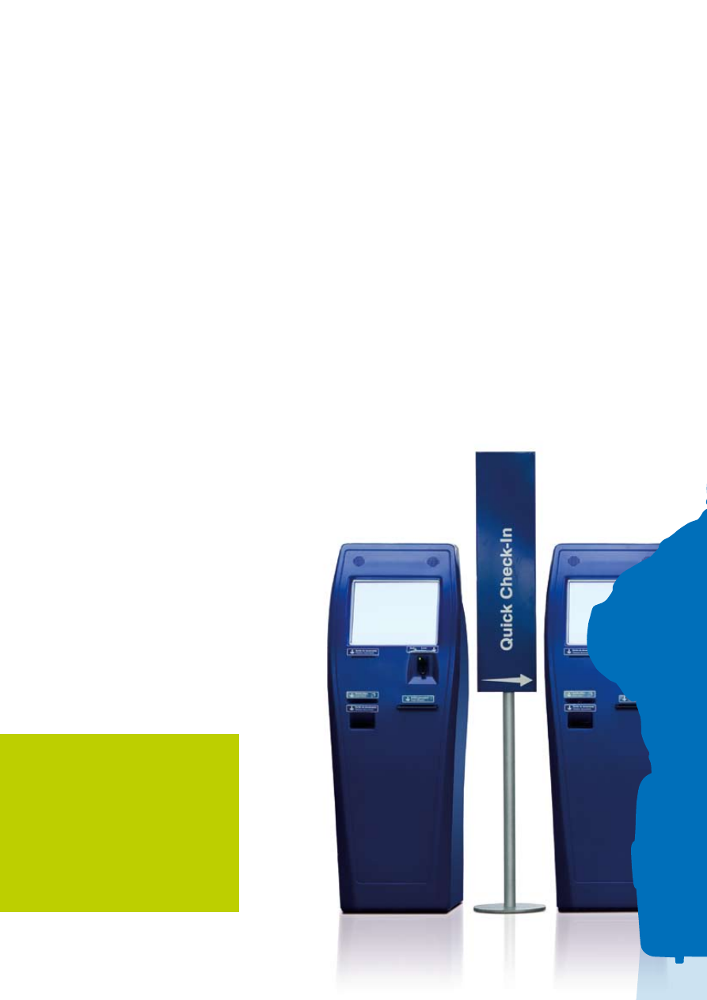
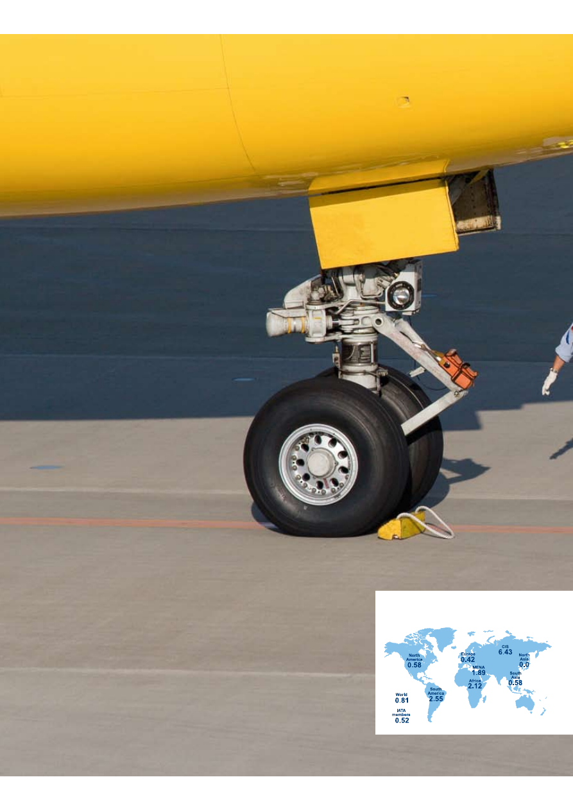

<!DOCTYPE html>
<html xmlns="http://www.w3.org/1999/xhtml" lang="" xml:lang="">
<head>
<title>./about/Documents/IATAAnnualReport2009-html.html</title>

<meta http-equiv="Content-Type" content="text/html; charset=UTF-8"/>
 <br/>
<style type="text/css">
<!--
	p {margin: 0; padding: 0;}-->
</style>
</head>
<body bgcolor="#A0A0A0" vlink="blue" link="blue">
<div id="page1-div" style="position:relative;width:892px;height:1262px;">

</div>
</body>
</html>
<!DOCTYPE html>
<html xmlns="http://www.w3.org/1999/xhtml" lang="" xml:lang="">
<head>
<title>./about/Documents/IATAAnnualReport2009-html.html</title>

<meta http-equiv="Content-Type" content="text/html; charset=UTF-8"/>
 <br/>
<style type="text/css">
<!--
	p {margin: 0; padding: 0;}-->
</style>
</head>
<body bgcolor="#A0A0A0" vlink="blue" link="blue">
<div id="page2-div" style="position:relative;width:892px;height:1262px;">

</div>
</body>
</html>
<!DOCTYPE html>
<html xmlns="http://www.w3.org/1999/xhtml" lang="" xml:lang="">
<head>
<title>./about/Documents/IATAAnnualReport2009-html.html</title>

<meta http-equiv="Content-Type" content="text/html; charset=UTF-8"/>
 <br/>
<style type="text/css">
<!--
	p {margin: 0; padding: 0;}	.ft30{font-size:14px;font-family:MITYOV+AkzidenzGroteskBQ-Medium;color:#ffffff;}
	.ft31{font-size:14px;font-family:CJPLEP+AkzidenzGroteskBQ-Reg;color:#ffffff;}
	.ft32{font-size:7px;font-family:MITYOV+AkzidenzGroteskBQ-Medium;color:#ffffff;}
	.ft33{font-size:10px;font-family:MGNTOV+AkzidenzGroteskBQ-Light;color:#ffffff;}
	.ft34{font-size:14px;line-height:19px;font-family:MITYOV+AkzidenzGroteskBQ-Medium;color:#ffffff;}
	.ft35{font-size:14px;line-height:19px;font-family:CJPLEP+AkzidenzGroteskBQ-Reg;color:#ffffff;}
-->
</style>
</head>
<body bgcolor="#A0A0A0" vlink="blue" link="blue">
<div id="page3-div" style="position:relative;width:892px;height:1262px;">

<p style="position:absolute;top:890px;left:455px;white-space:nowrap" class="ft34">Giovanni&#160;Bisignani<br/>Director&#160;General&#160;&amp;&#160;CEO</p>
<p style="position:absolute;top:950px;left:455px;white-space:nowrap" class="ft35">International&#160;Air&#160;Transport&#160;Association<br/>Annual&#160;Report&#160;2009<br/>65</p>
<p style="position:absolute;top:990px;left:475px;white-space:nowrap" class="ft32">th</p>
<p style="position:absolute;top:989px;left:484px;white-space:nowrap" class="ft31">&#160;Annual&#160;General&#160;Meeting</p>
<p style="position:absolute;top:1009px;left:455px;white-space:nowrap" class="ft31">Kuala&#160;Lumpur,&#160;June&#160;2009</p>
<p style="position:absolute;top:1108px;left:506px;white-space:nowrap" class="ft33">Promoting&#160;sustainable&#160;forest&#160;management.&#160;&#160;</p>
<p style="position:absolute;top:1121px;left:506px;white-space:nowrap" class="ft33">This&#160;paper&#160;is&#160;certified&#160;by&#160;the&#160;Forest&#160;</p>
<p style="position:absolute;top:1134px;left:506px;white-space:nowrap" class="ft33">Stewardship&#160;Council&#160;(FSC)&#160;and&#160;is&#160;&#160;</p>
<p style="position:absolute;top:1147px;left:506px;white-space:nowrap" class="ft33">cellulose&#160;based&#160;and&#160;recyclable.</p>
</div>
</body>
</html>
<!DOCTYPE html>
<html xmlns="http://www.w3.org/1999/xhtml" lang="" xml:lang="">
<head>
<title>./about/Documents/IATAAnnualReport2009-html.html</title>

<meta http-equiv="Content-Type" content="text/html; charset=UTF-8"/>
 <br/>
<style type="text/css">
<!--
	p {margin: 0; padding: 0;}	.ft40{font-size:11px;font-family:MGNTOV+AkzidenzGroteskBQ;color:#ffffff;}
	.ft41{font-size:11px;line-height:17px;font-family:MGNTOV+AkzidenzGroteskBQ;color:#ffffff;}
-->
</style>
</head>
<body bgcolor="#A0A0A0" vlink="blue" link="blue">
<div id="page4-div" style="position:relative;width:892px;height:1262px;">

<p style="position:absolute;top:1080px;left:124px;white-space:nowrap" class="ft40"><i>Note:&#160;</i></p>
<p style="position:absolute;top:1080px;left:178px;white-space:nowrap" class="ft40"><i>&#160;</i></p>
<p style="position:absolute;top:1097px;left:124px;white-space:nowrap" class="ft41"><i>Unless&#160;specified&#160;otherwise,&#160;all&#160;<br/>dollar&#160;($)&#160;figures&#160;in&#160;this&#160;annual&#160;<br/>report&#160;refer&#160;to&#160;US&#160;dollars&#160;(US$).</i></p>
</div>
</body>
</html>
<!DOCTYPE html>
<html xmlns="http://www.w3.org/1999/xhtml" lang="" xml:lang="">
<head>
<title>./about/Documents/IATAAnnualReport2009-html.html</title>

<meta http-equiv="Content-Type" content="text/html; charset=UTF-8"/>
 <br/>
<style type="text/css">
<!--
	p {margin: 0; padding: 0;}	.ft50{font-size:11px;font-family:CJPLEP+AkzidenzGroteskBQ-Reg;color:#003f7c;}
-->
</style>
</head>
<body bgcolor="#A0A0A0" vlink="blue" link="blue">
<div id="page5-div" style="position:relative;width:892px;height:1262px;">

<p style="position:absolute;top:983px;left:299px;white-space:nowrap" class="ft50">IATA&#160;Board&#160;of&#160;Governors</p>
<p style="position:absolute;top:1008px;left:299px;white-space:nowrap" class="ft50">Director&#160;General’s&#160;Message</p>
<p style="position:absolute;top:1034px;left:299px;white-space:nowrap" class="ft50">The&#160;State&#160;of&#160;the&#160;Industry</p>
<p style="position:absolute;top:1059px;left:299px;white-space:nowrap" class="ft50">Simplifying&#160;the&#160;Business</p>
<p style="position:absolute;top:1085px;left:299px;white-space:nowrap" class="ft50">Safety&#160;</p>
<p style="position:absolute;top:1110px;left:299px;white-space:nowrap" class="ft50">Security&#160;and&#160;Facilitation</p>
<p style="position:absolute;top:1136px;left:299px;white-space:nowrap" class="ft50">Regulatory&#160;and&#160;Public&#160;Policy</p>
<p style="position:absolute;top:983px;left:560px;white-space:nowrap" class="ft50">Environment</p>
<p style="position:absolute;top:1008px;left:560px;white-space:nowrap" class="ft50">Cost&#160;Efficiency</p>
<p style="position:absolute;top:1034px;left:560px;white-space:nowrap" class="ft50">Industry&#160;and&#160;Financial&#160;Services</p>
<p style="position:absolute;top:1059px;left:560px;white-space:nowrap" class="ft50">Aviation&#160;Solutions</p>
<p style="position:absolute;top:1085px;left:560px;white-space:nowrap" class="ft50">IATA&#160;Membership</p>
<p style="position:absolute;top:1110px;left:560px;white-space:nowrap" class="ft50">IATA&#160;Offices</p>
<p style="position:absolute;top:983px;left:496px;white-space:nowrap" class="ft50">06</p>
<p style="position:absolute;top:1008px;left:496px;white-space:nowrap" class="ft50">08</p>
<p style="position:absolute;top:1034px;left:496px;white-space:nowrap" class="ft50">10</p>
<p style="position:absolute;top:1059px;left:496px;white-space:nowrap" class="ft50">16</p>
<p style="position:absolute;top:1085px;left:496px;white-space:nowrap" class="ft50">22</p>
<p style="position:absolute;top:1110px;left:496px;white-space:nowrap" class="ft50">26</p>
<p style="position:absolute;top:1136px;left:496px;white-space:nowrap" class="ft50">30</p>
<p style="position:absolute;top:983px;left:769px;white-space:nowrap" class="ft50">32</p>
<p style="position:absolute;top:1008px;left:769px;white-space:nowrap" class="ft50">38</p>
<p style="position:absolute;top:1034px;left:769px;white-space:nowrap" class="ft50">42</p>
<p style="position:absolute;top:1059px;left:769px;white-space:nowrap" class="ft50">48</p>
<p style="position:absolute;top:1085px;left:769px;white-space:nowrap" class="ft50">50</p>
<p style="position:absolute;top:1110px;left:769px;white-space:nowrap" class="ft50">52</p>
</div>
</body>
</html>
<!DOCTYPE html>
<html xmlns="http://www.w3.org/1999/xhtml" lang="" xml:lang="">
<head>
<title>./about/Documents/IATAAnnualReport2009-html.html</title>

<meta http-equiv="Content-Type" content="text/html; charset=UTF-8"/>
 <br/>
<style type="text/css">
<!--
	p {margin: 0; padding: 0;}-->
</style>
</head>
<body bgcolor="#A0A0A0" vlink="blue" link="blue">
<div id="page6-div" style="position:relative;width:892px;height:1262px;">

</div>
</body>
</html>
<!DOCTYPE html>
<html xmlns="http://www.w3.org/1999/xhtml" lang="" xml:lang="">
<head>
<title>./about/Documents/IATAAnnualReport2009-html.html</title>

<meta http-equiv="Content-Type" content="text/html; charset=UTF-8"/>
 <br/>
<style type="text/css">
<!--
	p {margin: 0; padding: 0;}	.ft70{font-size:58px;font-family:CJPLEP+AkzidenzGroteskBQ-Reg;color:#ffffff;}
	.ft71{font-size:58px;font-family:MITYOV+AkzidenzGroteskBQ-Medium;color:#ffffff;}
	.ft72{font-size:28px;font-family:CJPLEP+AkzidenzGroteskBQ-Reg;color:#ffffff;}
	.ft73{font-size:58px;line-height:76px;font-family:CJPLEP+AkzidenzGroteskBQ-Reg;color:#ffffff;}
-->
</style>
</head>
<body bgcolor="#A0A0A0" vlink="blue" link="blue">
<div id="page7-div" style="position:relative;width:892px;height:1262px;">

<p style="position:absolute;top:127px;left:94px;white-space:nowrap" class="ft70">We&#160;are&#160;a&#160;</p>
<p style="position:absolute;top:126px;left:348px;white-space:nowrap" class="ft71">resilient</p>
<p style="position:absolute;top:127px;left:566px;white-space:nowrap" class="ft70">&#160;industry.</p>
<p style="position:absolute;top:204px;left:94px;white-space:nowrap" class="ft70">We&#160;will&#160;</p>
<p style="position:absolute;top:203px;left:301px;white-space:nowrap" class="ft71">survive</p>
<p style="position:absolute;top:204px;left:495px;white-space:nowrap" class="ft70">&#160;the&#160;crisis&#160;</p>
<p style="position:absolute;top:264px;left:94px;white-space:nowrap" class="ft73">one&#160;way&#160;or&#160;another.&#160;<br/>But&#160;we&#160;must&#160;ask&#160;some&#160;</p>
<p style="position:absolute;top:400px;left:94px;white-space:nowrap" class="ft71">serious&#160;questions</p>
<p style="position:absolute;top:401px;left:583px;white-space:nowrap" class="ft70">.&#160;</p>
<p style="position:absolute;top:478px;left:94px;white-space:nowrap" class="ft70">In&#160;what&#160;shape&#160;will&#160;the&#160;</p>
<p style="position:absolute;top:538px;left:94px;white-space:nowrap" class="ft73">industry&#160;emerge?&#160;<br/>Will&#160;the&#160;shakeout&#160;be&#160;</p>
<p style="position:absolute;top:675px;left:94px;white-space:nowrap" class="ft73">orderly?&#160;<br/>And&#160;the&#160;most&#160;important&#160;</p>
<p style="position:absolute;top:812px;left:94px;white-space:nowrap" class="ft70">question&#160;of&#160;all:&#160;&#160;</p>
<p style="position:absolute;top:871px;left:94px;white-space:nowrap" class="ft71">What&#160;can&#160;we&#160;do&#160;to&#160;make&#160;</p>
<p style="position:absolute;top:931px;left:94px;white-space:nowrap" class="ft71">the&#160;industry&#160;healthier&#160;&#160;</p>
<p style="position:absolute;top:991px;left:94px;white-space:nowrap" class="ft71">and&#160;stronger?</p>
<p style="position:absolute;top:1097px;left:94px;white-space:nowrap" class="ft72">Giovanni&#160;Bisignani</p>
</div>
</body>
</html>
<!DOCTYPE html>
<html xmlns="http://www.w3.org/1999/xhtml" lang="" xml:lang="">
<head>
<title>./about/Documents/IATAAnnualReport2009-html.html</title>

<meta http-equiv="Content-Type" content="text/html; charset=UTF-8"/>
 <br/>
<style type="text/css">
<!--
	p {margin: 0; padding: 0;}	.ft80{font-size:33px;font-family:MGNTOV+AkzidenzGroteskBQ-Light;color:#003f7c;}
	.ft81{font-size:16px;font-family:CJPLEP+AkzidenzGroteskBQ-Reg;color:#006fba;}
	.ft82{font-size:11px;font-family:CJPLEP+AkzidenzGroteskBQ-Reg;color:#003f7c;}
	.ft83{font-size:11px;font-family:MITYOV+AkzidenzGroteskBQ-Medium;color:#003f7c;}
	.ft84{font-size:11px;line-height:17px;font-family:CJPLEP+AkzidenzGroteskBQ-Reg;color:#003f7c;}
	.ft85{font-size:11px;line-height:17px;font-family:MITYOV+AkzidenzGroteskBQ-Medium;color:#003f7c;}
-->
</style>
</head>
<body bgcolor="#A0A0A0" vlink="blue" link="blue">
<div id="page8-div" style="position:relative;width:892px;height:1262px;">

<p style="position:absolute;top:122px;left:53px;white-space:nowrap" class="ft80">IATA Board of Governors</p>
<p style="position:absolute;top:162px;left:54px;white-space:nowrap" class="ft81">as of 1 May 2009</p>
<p style="position:absolute;top:243px;left:54px;white-space:nowrap" class="ft84">Khalid&#160;Abdullah&#160;Almolhem&#160;<br/>SAUDI&#160;ARABIAN&#160;AIRLINES</p>
<p style="position:absolute;top:311px;left:54px;white-space:nowrap" class="ft84">Gerard&#160;Arpey&#160;<br/>AMERICAN&#160;AIRLINES</p>
<p style="position:absolute;top:379px;left:54px;white-space:nowrap" class="ft84">Tawfik&#160;Assy&#160;<br/>EGYPTAIR</p>
<p style="position:absolute;top:447px;left:54px;white-space:nowrap" class="ft84">David&#160;Bronczek&#160;<br/>FEDEX&#160;EXPRESS</p>
<p style="position:absolute;top:515px;left:54px;white-space:nowrap" class="ft84">Chew&#160;Choon&#160;Seng&#160;<br/>SINGAPORE&#160;AIRLINES</p>
<p style="position:absolute;top:583px;left:54px;white-space:nowrap" class="ft84">Yang&#160;Ho&#160;Cho&#160;<br/>KOREAN&#160;AIR</p>
<p style="position:absolute;top:243px;left:339px;white-space:nowrap" class="ft84">Andrés&#160;Conesa&#160;<br/>AEROMEXICO</p>
<p style="position:absolute;top:311px;left:339px;white-space:nowrap" class="ft84">Fernando&#160;Conte&#160;<br/>IBERIA</p>
<p style="position:absolute;top:379px;left:339px;white-space:nowrap" class="ft84">Enrique&#160;Cueto&#160;<br/>LAN&#160;AIRLINES</p>
<p style="position:absolute;top:447px;left:339px;white-space:nowrap" class="ft84">Christoph&#160;Franz&#160;<br/>SWISS</p>
<p style="position:absolute;top:243px;left:585px;white-space:nowrap" class="ft84">Naresh&#160;Goyal&#160;<br/>JET&#160;AIRWAYS&#160;(INDIA)</p>
<p style="position:absolute;top:285px;left:585px;white-space:nowrap" class="ft82">&#160;</p>
<p style="position:absolute;top:311px;left:585px;white-space:nowrap" class="ft84">Peter&#160;Hartman&#160;<br/>KLM</p>
<p style="position:absolute;top:379px;left:585px;white-space:nowrap" class="ft84">Pedro&#160;Heilbron&#160;<br/>COPA&#160;AIRLINES</p>
<p style="position:absolute;top:447px;left:585px;white-space:nowrap" class="ft84">Idris&#160;Jala&#160;<br/>MALAYSIA&#160;AIRLINES</p>
<p style="position:absolute;top:41px;left:46px;white-space:nowrap" class="ft82">6</p>
<p style="position:absolute;top:1029px;left:54px;white-space:nowrap" class="ft85">Samer&#160;A.&#160;Majali&#160;<br/>Chairman&#160;&#160;<br/>IATA&#160;Board&#160;of&#160;Governors</p>
</div>
</body>
</html>
<!DOCTYPE html>
<html xmlns="http://www.w3.org/1999/xhtml" lang="" xml:lang="">
<head>
<title>./about/Documents/IATAAnnualReport2009-html.html</title>

<meta http-equiv="Content-Type" content="text/html; charset=UTF-8"/>
 <br/>
<style type="text/css">
<!--
	p {margin: 0; padding: 0;}	.ft90{font-size:11px;font-family:CJPLEP+AkzidenzGroteskBQ-Reg;color:#003f7c;}
	.ft91{font-size:11px;line-height:17px;font-family:CJPLEP+AkzidenzGroteskBQ-Reg;color:#003f7c;}
-->
</style>
</head>
<body bgcolor="#A0A0A0" vlink="blue" link="blue">
<div id="page9-div" style="position:relative;width:892px;height:1262px;">

<p style="position:absolute;top:243px;left:61px;white-space:nowrap" class="ft91">Temel&#160;Kotil&#160;<br/>TURKISH&#160;AIRLINES</p>
<p style="position:absolute;top:311px;left:61px;white-space:nowrap" class="ft91">Liu&#160;Shaoyong&#160;<br/>CHINA&#160;EASTERN&#160;AIRLINES</p>
<p style="position:absolute;top:379px;left:61px;white-space:nowrap" class="ft91">Samer&#160;A.&#160;Majali&#160;<br/>ROYAL&#160;JORDANIAN&#160;</p>
<p style="position:absolute;top:447px;left:61px;white-space:nowrap" class="ft91">Wolfgang&#160;Mayrhuber&#160;<br/>LUFTHANSA</p>
<p style="position:absolute;top:515px;left:61px;white-space:nowrap" class="ft91">Titus&#160;Naikuni&#160;<br/>KENYA&#160;AIRWAYS</p>
<p style="position:absolute;top:583px;left:61px;white-space:nowrap" class="ft91">Haruka&#160;Nishimatsu&#160;<br/>JAPAN&#160;AIRLINES</p>
<p style="position:absolute;top:243px;left:326px;white-space:nowrap" class="ft91">Fernando&#160;Pinto&#160;<br/>TAP&#160;PORTUGAL</p>
<p style="position:absolute;top:311px;left:326px;white-space:nowrap" class="ft91">Jean-Cyril&#160;Spinetta&#160;<br/>AIR&#160;FRANCE</p>
<p style="position:absolute;top:379px;left:326px;white-space:nowrap" class="ft91">Glenn&#160;F.&#160;Tilton&#160;<br/>UNITED&#160;AIRLINES</p>
<p style="position:absolute;top:421px;left:326px;white-space:nowrap" class="ft90">&#160;</p>
<p style="position:absolute;top:447px;left:326px;white-space:nowrap" class="ft91">Tony&#160;Tyler&#160;<br/>CATHAY&#160;PACIFIC</p>
<p style="position:absolute;top:515px;left:326px;white-space:nowrap" class="ft91">Willie&#160;Walsh&#160;<br/>BRITISH&#160;AIRWAYS</p>
<p style="position:absolute;top:41px;left:839px;white-space:nowrap" class="ft90">7</p>
</div>
</body>
</html>
<!DOCTYPE html>
<html xmlns="http://www.w3.org/1999/xhtml" lang="" xml:lang="">
<head>
<title>./about/Documents/IATAAnnualReport2009-html.html</title>

<meta http-equiv="Content-Type" content="text/html; charset=UTF-8"/>
 <br/>
<style type="text/css">
<!--
	p {margin: 0; padding: 0;}	.ft100{font-size:33px;font-family:MGNTOV+AkzidenzGroteskBQ-Light;color:#003f7c;}
	.ft101{font-size:11px;font-family:CJPLEP+AkzidenzGroteskBQ-Reg;color:#003f7c;}
	.ft102{font-size:16px;font-family:CJPLEP+AkzidenzGroteskBQ-Reg;color:#006fba;}
	.ft103{font-size:11px;line-height:17px;font-family:CJPLEP+AkzidenzGroteskBQ-Reg;color:#003f7c;}
-->
</style>
</head>
<body bgcolor="#A0A0A0" vlink="blue" link="blue">
<div id="page10-div" style="position:relative;width:892px;height:1262px;">

<p style="position:absolute;top:122px;left:53px;white-space:nowrap" class="ft100">Director General’s Message</p>
<p style="position:absolute;top:41px;left:46px;white-space:nowrap" class="ft101">8</p>
<p style="position:absolute;top:169px;left:54px;white-space:nowrap" class="ft102">Some of the most dramatic swings in our industry’s&#160;</p>
<p style="position:absolute;top:189px;left:54px;white-space:nowrap" class="ft102">history were witnessed in 2008.</p>
<p style="position:absolute;top:243px;left:54px;white-space:nowrap" class="ft103">Oil&#160;started&#160;the&#160;year&#160;at&#160;$97&#160;and&#160;ended&#160;at&#160;<br/>about&#160;$40&#160;per&#160;barrel&#160;(Brent).&#160;But&#160;it&#160;hit&#160;<br/>$147&#160;per&#160;barrel&#160;in&#160;July,&#160;threatening&#160;to&#160;<br/>add&#160;over&#160;$100&#160;billion&#160;to&#160;the&#160;industry&#160;fuel&#160;<br/>bill.&#160;In&#160;the&#160;end,&#160;oil&#160;averaged&#160;at&#160;$99&#160;per&#160;<br/>barrel,&#160;which&#160;brought&#160;our&#160;total&#160;fuel&#160;bill&#160;to&#160;<br/>US$168&#160;billion.&#160;&#160;</p>
<p style="position:absolute;top:370px;left:54px;white-space:nowrap" class="ft103">By&#160;the&#160;fourth&#160;quarter,&#160;the&#160;industry&#160;story&#160;<br/>was&#160;focused&#160;on&#160;the&#160;intensification&#160;of&#160;<br/>the&#160;global&#160;recession&#160;and&#160;the&#160;resulting&#160;<br/>collapse&#160;in&#160;demand.&#160;The&#160;year&#160;ended&#160;with&#160;<br/>large&#160;fourth&#160;quarter&#160;losses&#160;that&#160;put&#160;the&#160;<br/>industry&#160;at&#160;least&#160;$10&#160;billion&#160;in&#160;the&#160;red.</p>
<p style="position:absolute;top:481px;left:54px;white-space:nowrap" class="ft101">Airlines&#160;face&#160;a&#160;tough&#160;2009.&#160;</p>
<p style="position:absolute;top:506px;left:54px;white-space:nowrap" class="ft103">There&#160;is&#160;some&#160;relief&#160;on&#160;the&#160;fuel&#160;bill.&#160;But&#160;<br/>the&#160;good&#160;news&#160;stops&#160;there.&#160;Demand&#160;<br/>is&#160;disappearing&#160;and&#160;revenues&#160;are&#160;<br/>plummeting.&#160;The&#160;Influenza&#160;A(H1N1)&#160;<br/>scare&#160;is&#160;a&#160;reminder&#160;that,&#160;even&#160;in&#160;a&#160;crisis,&#160;<br/>this&#160;industry&#160;remains&#160;vulnerable&#160;to&#160;<br/>shocks&#160;beyond&#160;its&#160;control.&#160;</p>
<p style="position:absolute;top:634px;left:54px;white-space:nowrap" class="ft103">First&#160;quarter&#160;passenger&#160;traffic&#160;was&#160;down&#160;<br/>9.1%,&#160;with&#160;premium&#160;passenger&#160;numbers&#160;<br/>falling&#160;away&#160;at&#160;almost&#160;double&#160;that&#160;rate.&#160;<br/>And&#160;cargo&#160;was&#160;down&#160;22.8%.&#160;Many&#160;<br/>airlines,&#160;particularly&#160;in&#160;the&#160;US,&#160;responded&#160;<br/>with&#160;aggressive&#160;capacity&#160;adjustments,&#160;<br/>but&#160;most&#160;were&#160;not&#160;able&#160;to&#160;keep&#160;pace&#160;<br/>with&#160;the&#160;precipitous&#160;fall&#160;in&#160;demand.&#160;<br/>Others&#160;were&#160;caught&#160;with&#160;fuel&#160;hedges&#160;<br/>higher&#160;than&#160;spot&#160;prices.</p>
<p style="position:absolute;top:813px;left:54px;white-space:nowrap" class="ft103">We&#160;may&#160;have&#160;seen&#160;the&#160;worst&#160;of&#160;the&#160;<br/>recession,&#160;signaled&#160;by&#160;stabilization&#160;in&#160;<br/>freight&#160;volumes&#160;at&#160;exceptionally&#160;low&#160;<br/>levels.&#160;But&#160;it&#160;is&#160;unclear&#160;how&#160;long&#160;the&#160;<br/>industry&#160;will&#160;bounce&#160;along&#160;the&#160;bottom&#160;<br/>before&#160;a&#160;significant&#160;recovery.&#160;</p>
<p style="position:absolute;top:923px;left:54px;white-space:nowrap" class="ft103">Air&#160;transport&#160;will&#160;be&#160;a&#160;smaller&#160;industry&#160;for&#160;<br/>at&#160;least&#160;the&#160;next&#160;few&#160;years.&#160;The&#160;challenge&#160;<br/>is&#160;to&#160;reshape&#160;and&#160;resize&#160;for&#160;profitability.&#160;</p>
<p style="position:absolute;top:983px;left:54px;white-space:nowrap" class="ft103">To&#160;start,&#160;airlines&#160;will&#160;need&#160;to&#160;carefully&#160;<br/>match&#160;capacity&#160;with&#160;demand.&#160;The&#160;<br/>task&#160;will&#160;be&#160;made&#160;more&#160;difficult&#160;by&#160;the&#160;<br/>planned&#160;delivery&#160;over&#160;the&#160;next&#160;three&#160;</p>
<p style="position:absolute;top:243px;left:586px;white-space:nowrap" class="ft103">travel&#160;agents&#160;and&#160;banks&#160;failed,&#160;IATA&#160;did&#160;<br/>not&#160;miss&#160;one&#160;payment&#160;or&#160;one&#160;penny.&#160;<br/>As&#160;challenges&#160;mount&#160;with&#160;the&#160;current&#160;<br/>recession,&#160;we&#160;will&#160;continue&#160;to&#160;be&#160;vigilant&#160;<br/>in&#160;ensuring&#160;that&#160;airlines’&#160;cash&#160;flow&#160;is&#160;<br/>never&#160;compromised.</p>
<p style="position:absolute;top:353px;left:586px;white-space:nowrap" class="ft103">IATA&#160;is&#160;helping&#160;airlines&#160;to&#160;reduce&#160;costs.&#160;<br/>Last&#160;year&#160;we&#160;achieved&#160;savings&#160;of&#160;$3.5&#160;<br/>billion&#160;in&#160;fuel&#160;fees,&#160;taxation,&#160;and&#160;airport&#160;<br/>and&#160;air&#160;navigation&#160;charges.&#160;Our&#160;fuel&#160;<br/>campaign&#160;helped&#160;our&#160;members&#160;reduce&#160;<br/>fuel&#160;consumption&#160;costs&#160;by&#160;$5&#160;billion.</p>
<p style="position:absolute;top:464px;left:586px;white-space:nowrap" class="ft103">With&#160;100%&#160;e-ticketing&#160;in&#160;June&#160;2008,&#160;we&#160;<br/>also&#160;realized&#160;$3&#160;billion&#160;in&#160;cost&#160;savings.&#160;<br/>An&#160;additional&#160;$1&#160;billion&#160;was&#160;saved&#160;<br/>with&#160;the&#160;deployment&#160;of&#160;Common&#160;Use&#160;<br/>Self-Service&#160;(CUSS)&#160;kiosks&#160;reaching&#160;<br/>135&#160;airports.&#160;IATA&#160;is&#160;targeting&#160;a&#160;further&#160;<br/>$10&#160;billion&#160;in&#160;savings&#160;with&#160;bar&#160;coded&#160;<br/>boarding&#160;passes&#160;(BCBP),&#160;Fast&#160;Travel,&#160;<br/>the&#160;Baggage&#160;management&#160;Improvement&#160;<br/>Program&#160;(BIP)&#160;and&#160;IATA&#160;e-freight.</p>
<p style="position:absolute;top:642px;left:586px;white-space:nowrap" class="ft103">Even&#160;in&#160;these&#160;turbulent&#160;times,&#160;we&#160;must&#160;<br/>look&#160;ahead.&#160;Two&#160;important&#160;issues&#160;are&#160;<br/>essential&#160;to&#160;our&#160;long-term&#160;industry&#160;<br/>agenda:&#160;environment&#160;and&#160;liberalization.</p>
<p style="position:absolute;top:719px;left:586px;white-space:nowrap" class="ft103">IATA’s&#160;four-pillar&#160;strategy&#160;to&#160;address&#160;<br/>climate&#160;change&#160;with&#160;technology,&#160;effective&#160;<br/>operations,&#160;efficient&#160;infrastructure,&#160;and&#160;<br/>positive&#160;economic&#160;measures&#160;is&#160;delivering&#160;</p>
<p style="position:absolute;top:243px;left:321px;white-space:nowrap" class="ft103">years&#160;of&#160;4,000&#160;aircraft&#160;ordered&#160;in&#160;more&#160;<br/>optimistic&#160;times.&#160;The&#160;results&#160;of&#160;the&#160;last&#160;<br/>months&#160;show&#160;that&#160;airlines&#160;that&#160;acted&#160;fast&#160;<br/>and&#160;most&#160;aggressively&#160;are&#160;reaping&#160;the&#160;<br/>benefits.&#160;&#160;</p>
<p style="position:absolute;top:336px;left:321px;white-space:nowrap" class="ft103">IATA&#160;is&#160;working&#160;hand-in-hand&#160;with&#160;its&#160;<br/>members&#160;to&#160;help&#160;airlines&#160;with&#160;at&#160;least&#160;<br/>three&#160;top&#160;priorities&#160;in&#160;surviving&#160;a&#160;crisis:&#160;<br/>improving&#160;safety,&#160;conserving&#160;cash&#160;and&#160;<br/>cutting&#160;costs.</p>
<p style="position:absolute;top:430px;left:321px;white-space:nowrap" class="ft103">On&#160;1&#160;April&#160;2009&#160;we&#160;achieved&#160;an&#160;<br/>important&#160;milestone.&#160;In&#160;line&#160;with&#160;targets&#160;<br/>agreed&#160;at&#160;our&#160;2006&#160;AGM,&#160;all&#160;224&#160;IATA&#160;<br/>airlines&#160;were&#160;listed&#160;on&#160;the&#160;IOSA&#160;Registry.&#160;<br/>We&#160;are&#160;a&#160;quality&#160;association&#160;delivering&#160;<br/>impressive&#160;results&#160;on&#160;safety.&#160;In&#160;2008,&#160;<br/>IATA&#160;members&#160;had&#160;one&#160;accident&#160;for&#160;<br/>every&#160;1.9&#160;million&#160;flights.&#160;This&#160;performance&#160;<br/>was&#160;even&#160;better&#160;than&#160;the&#160;industry’s&#160;one&#160;<br/>accident&#160;for&#160;every&#160;1.2&#160;million&#160;flights.&#160;Air&#160;<br/>is&#160;the&#160;safest&#160;form&#160;of&#160;travel.&#160;In&#160;line&#160;with&#160;the&#160;<br/>success&#160;of&#160;IOSA,&#160;the&#160;IATA&#160;Safety&#160;Audit&#160;<br/>for&#160;Ground&#160;Operations&#160;(ISAGO)&#160;is&#160;now&#160;<br/>well&#160;established&#160;as&#160;the&#160;global&#160;standard&#160;<br/>for&#160;this&#160;area&#160;of&#160;operations.</p>
<p style="position:absolute;top:693px;left:321px;white-space:nowrap" class="ft103">IATA&#160;is&#160;keeping&#160;the&#160;industry’s&#160;cash&#160;<br/>safe.&#160;Our&#160;financial&#160;systems&#160;processed&#160;<br/>a&#160;record&#160;$350&#160;billion&#160;during&#160;2008&#160;<br/>—equivalent&#160;to&#160;two-thirds&#160;of&#160;total&#160;<br/>industry&#160;revenues.&#160;Even&#160;as&#160;airlines,&#160;</p>
</div>
</body>
</html>
<!DOCTYPE html>
<html xmlns="http://www.w3.org/1999/xhtml" lang="" xml:lang="">
<head>
<title>./about/Documents/IATAAnnualReport2009-html.html</title>

<meta http-equiv="Content-Type" content="text/html; charset=UTF-8"/>
 <br/>
<style type="text/css">
<!--
	p {margin: 0; padding: 0;}	.ft110{font-size:11px;font-family:CJPLEP+AkzidenzGroteskBQ-Reg;color:#003f7c;}
	.ft111{font-size:11px;line-height:17px;font-family:CJPLEP+AkzidenzGroteskBQ-Reg;color:#003f7c;}
-->
</style>
</head>
<body bgcolor="#A0A0A0" vlink="blue" link="blue">
<div id="page11-div" style="position:relative;width:892px;height:1262px;">

<p style="position:absolute;top:41px;left:839px;white-space:nowrap" class="ft110">9</p>
<p style="position:absolute;top:243px;left:61px;white-space:nowrap" class="ft111">results.&#160;This&#160;year&#160;we&#160;expect&#160;an&#160;8%&#160;drop&#160;<br/>in&#160;aviation’s&#160;emissions.&#160;Of&#160;that,&#160;6%&#160;is&#160;<br/>from&#160;reduced&#160;capacity&#160;and&#160;2%&#160;is&#160;a&#160;<br/>direct&#160;result&#160;of&#160;the&#160;strategy.&#160;Our&#160;vision&#160;<br/>to&#160;achieve&#160;carbon-neutral&#160;growth&#160;on&#160;the&#160;<br/>way&#160;to&#160;carbon-free&#160;technology&#160;with&#160;a&#160;<br/>50-year&#160;time&#160;horizon&#160;sets&#160;us&#160;ahead&#160;of&#160;<br/>any&#160;other&#160;industry.</p>
<p style="position:absolute;top:387px;left:61px;white-space:nowrap" class="ft111">The&#160;challenge&#160;for&#160;this&#160;year&#160;is&#160;to&#160;achieve&#160;<br/>an&#160;agreement&#160;on&#160;economic&#160;measures.&#160;<br/>IATA&#160;continues&#160;to&#160;work&#160;with&#160;the&#160;<br/>International&#160;Civil&#160;Aviation&#160;Organization&#160;<br/>(ICAO).&#160;Our&#160;goal&#160;is&#160;to&#160;facilitate&#160;a&#160;global&#160;<br/>solution&#160;for&#160;the&#160;aviation&#160;sector&#160;at&#160;the&#160;<br/>United&#160;Nations&#160;Framework&#160;Convention&#160;<br/>on&#160;Climate&#160;Change&#160;(UNFCCC)&#160;meeting&#160;<br/>in&#160;Copenhagen&#160;in&#160;December.&#160;</p>
<p style="position:absolute;top:549px;left:61px;white-space:nowrap" class="ft111">We&#160;also&#160;need&#160;governments&#160;to&#160;move&#160;from&#160;<br/>thinking&#160;about&#160;liberalization&#160;to&#160;action.&#160;&#160;<br/>The&#160;economic&#160;crisis&#160;is&#160;making&#160;access&#160;<br/>to&#160;global&#160;capital&#160;more&#160;important&#160;than&#160;</p>
<p style="position:absolute;top:243px;left:326px;white-space:nowrap" class="ft111">ever.&#160;IATA’s&#160;Agenda&#160;for&#160;Freedom&#160;Summit&#160;<br/>will&#160;convene&#160;again&#160;in&#160;the&#160;last&#160;half&#160;of&#160;the&#160;<br/>year.&#160;Our&#160;aim&#160;is&#160;to&#160;formalize&#160;progress&#160;<br/>with&#160;this&#160;group&#160;of&#160;15&#160;of&#160;the&#160;most&#160;<br/>liberal&#160;government&#160;players&#160;in&#160;aviation&#160;<br/>by&#160;developing&#160;policy&#160;tools&#160;to&#160;move&#160;the&#160;<br/>process&#160;forward.&#160;</p>
<p style="position:absolute;top:370px;left:326px;white-space:nowrap" class="ft111">Airlines&#160;are&#160;catalysts&#160;of&#160;economic&#160;activity.&#160;<br/>With&#160;the&#160;freedom&#160;to&#160;do&#160;business&#160;like&#160;any&#160;<br/>other&#160;industry,&#160;aviation&#160;can&#160;play&#160;a&#160;vital&#160;<br/>role&#160;in&#160;helping&#160;governments&#160;stimulate&#160;the&#160;<br/>global&#160;economy.</p>
<p style="position:absolute;top:464px;left:326px;white-space:nowrap" class="ft111">Securing&#160;our&#160;future&#160;in&#160;these&#160;difficult&#160;<br/>economic&#160;times&#160;will&#160;be&#160;hard&#160;work.&#160;But&#160;</p>
<p style="position:absolute;top:243px;left:591px;white-space:nowrap" class="ft111">we&#160;are&#160;a&#160;resilient&#160;industry,&#160;capable&#160;of&#160;<br/>great&#160;change.&#160;Airlines&#160;will&#160;rise&#160;again&#160;to&#160;<br/>the&#160;many&#160;challenges&#160;that&#160;this&#160;industry&#160;<br/>faces.&#160;And&#160;we&#160;will&#160;emerge&#160;from&#160;this&#160;crisis&#160;<br/>safer,&#160;greener&#160;and&#160;profitable.</p>
<p style="position:absolute;top:400px;left:591px;white-space:nowrap" class="ft111">Giovanni&#160;Bisignani&#160;<br/>Director&#160;General&#160;&amp;&#160;CEO</p>
</div>
</body>
</html>
<!DOCTYPE html>
<html xmlns="http://www.w3.org/1999/xhtml" lang="" xml:lang="">
<head>
<title>./about/Documents/IATAAnnualReport2009-html.html</title>

<meta http-equiv="Content-Type" content="text/html; charset=UTF-8"/>
 <br/>
<style type="text/css">
<!--
	p {margin: 0; padding: 0;}	.ft120{font-size:33px;font-family:MGNTOV+AkzidenzGroteskBQ-Light;color:#ffffff;}
	.ft121{font-size:11px;font-family:CJPLEP+AkzidenzGroteskBQ-Reg;color:#006fba;}
	.ft122{font-size:11px;font-family:CJPLEP+AkzidenzGroteskBQ-Reg;color:#ffffff;}
	.ft123{font-size:16px;font-family:CJPLEP+AkzidenzGroteskBQ-Reg;color:#ffffff;}
	.ft124{font-size:11px;font-family:CJPLEP+AkzidenzGroteskBQ-Reg;color:#003f7c;}
	.ft125{font-size:8px;font-family:MGNTOV+AkzidenzGroteskBQ-MedItalic;color:#003f7c;}
	.ft126{font-size:11px;line-height:17px;font-family:CJPLEP+AkzidenzGroteskBQ-Reg;color:#ffffff;}
-->
</style>
</head>
<body bgcolor="#A0A0A0" vlink="blue" link="blue">
<div id="page12-div" style="position:relative;width:892px;height:1262px;">

<p style="position:absolute;top:122px;left:53px;white-space:nowrap" class="ft120">The State of the Industry</p>
<p style="position:absolute;top:966px;left:585px;white-space:nowrap" class="ft121">Jet&#160;fuel&#160;and&#160;crude&#160;oil&#160;price&#160;</p>
<p style="position:absolute;top:243px;left:54px;white-space:nowrap" class="ft126">Two&#160;thousand&#160;eight&#160;was&#160;an&#160;exceptionally&#160;<br/>challenging&#160;year.&#160;Airlines&#160;were&#160;hit&#160;first&#160;by&#160;<br/>an&#160;unprecedented&#160;spike&#160;in&#160;oil&#160;prices&#160;and&#160;<br/>then&#160;by&#160;a&#160;precipitous&#160;drop&#160;in&#160;revenues&#160;<br/>caused&#160;by&#160;a&#160;collapse&#160;in&#160;world&#160;trade&#160;and&#160;<br/>the&#160;start&#160;of&#160;what&#160;is&#160;looking&#160;to&#160;be&#160;the&#160;<br/>deepest&#160;recession&#160;since&#160;the&#160;1930s.&#160;</p>
<p style="position:absolute;top:370px;left:54px;white-space:nowrap" class="ft126">Airlines&#160;have&#160;reacted&#160;with&#160;unusual&#160;speed&#160;<br/>to&#160;resize&#160;capacity&#160;in&#160;the&#160;face&#160;of&#160;slumping&#160;<br/>demand.&#160;This&#160;and&#160;the&#160;subsequent&#160;fall&#160;<br/>in&#160;oil&#160;prices&#160;back&#160;to&#160;2004–5&#160;levels&#160;<br/>may&#160;prevent&#160;what&#160;is&#160;expected&#160;to&#160;be&#160;the&#160;<br/>largest-ever&#160;decline&#160;in&#160;airline&#160;revenues,&#160;in&#160;<br/>2008,&#160;from&#160;leading&#160;to&#160;a&#160;similarly&#160;record-<br/>breaking&#160;net&#160;loss&#160;in&#160;2009.&#160;Nonetheless,&#160;<br/>2009&#160;will&#160;be&#160;as,&#160;or&#160;more,&#160;challenging&#160;<br/>than&#160;2008,&#160;with&#160;a&#160;number&#160;of&#160;threats&#160;<br/>on&#160;the&#160;horizon&#160;and&#160;the&#160;ability&#160;of&#160;the&#160;<br/>industry&#160;to&#160;resize&#160;and&#160;reshape&#160;itself&#160;<br/>constrained&#160;by&#160;restrictive&#160;regulations&#160;<br/>preventing&#160;cross-border&#160;mergers&#160;and&#160;<br/>consolidations.</p>
<p style="position:absolute;top:189px;left:319px;white-space:nowrap" class="ft123">Oil price bubble leads&#160;&#160;</p>
<p style="position:absolute;top:208px;left:319px;white-space:nowrap" class="ft123">to crippling rise in costs&#160;</p>
<p style="position:absolute;top:243px;left:319px;white-space:nowrap" class="ft126">Crude&#160;oil&#160;prices&#160;started&#160;2008&#160;at&#160;a&#160;<br/>historic&#160;high&#160;of&#160;$97&#160;a&#160;barrel&#160;(Brent),&#160;the&#160;<br/>result&#160;in&#160;part&#160;of&#160;rising&#160;exploration&#160;and&#160;<br/>extraction&#160;costs.&#160;The&#160;real&#160;damage&#160;to&#160;<br/>airlines’&#160;expenses,&#160;however,&#160;was&#160;done&#160;<br/>by&#160;the&#160;speculation&#160;in&#160;oil&#160;that&#160;emerged&#160;in&#160;<br/>February.&#160;That&#160;activity&#160;drove&#160;up&#160;oil&#160;prices&#160;<br/>a&#160;further&#160;50%,&#160;to&#160;$147&#160;a&#160;barrel,&#160;by&#160;early&#160;<br/>July,&#160;and&#160;some&#160;analysts&#160;at&#160;Goldman&#160;<br/>Sachs&#160;and&#160;elsewhere&#160;were&#160;predicting&#160;<br/>additional&#160;increases,&#160;to&#160;above&#160;$200&#160;a&#160;<br/>barrel.&#160;The&#160;hike&#160;in&#160;oil&#160;prices&#160;naturally&#160;<br/>caused&#160;jet&#160;fuel&#160;prices&#160;to&#160;rise,&#160;almost&#160;<br/>60%,&#160;from&#160;$114&#160;a&#160;barrel&#160;at&#160;the&#160;start&#160;of&#160;<br/>the&#160;year&#160;to&#160;a&#160;peak&#160;of&#160;more&#160;than&#160;$180&#160;a&#160;<br/>barrel.</p>
<p style="position:absolute;top:523px;left:319px;white-space:nowrap" class="ft126">Fuel&#160;costs&#160;soared&#160;from&#160;an&#160;average&#160;of&#160;<br/>28%&#160;of&#160;airline’s&#160;operating&#160;costs&#160;in&#160;2007&#160;<br/>to&#160;well&#160;over&#160;40%&#160;by&#160;mid-2008,&#160;and&#160;to&#160;in&#160;<br/>excess&#160;of&#160;50%&#160;for&#160;some&#160;airlines.&#160;The&#160;limit&#160;<br/>at&#160;which&#160;this&#160;unprecedented&#160;surge&#160;in&#160;<br/>costs&#160;could&#160;be&#160;passed&#160;on&#160;to&#160;passengers&#160;<br/>and&#160;shippers&#160;was&#160;soon&#160;reached.&#160;That,&#160;<br/>and&#160;because&#160;profit&#160;margins&#160;in&#160;2007&#160;had&#160;<br/>only&#160;reached&#160;3.9%,&#160;caused&#160;the&#160;industry&#160;<br/>to&#160;sustain&#160;a&#160;substantial&#160;net&#160;loss&#160;in&#160;2008.</p>
<p style="position:absolute;top:702px;left:319px;white-space:nowrap" class="ft126">The&#160;oil&#160;bubble&#160;burst&#160;in&#160;late&#160;July&#160;<br/>2008&#160;along&#160;with&#160;speculation&#160;in&#160;other&#160;<br/>commodities.&#160;By&#160;the&#160;end&#160;of&#160;the&#160;year,&#160;<br/>oil&#160;had&#160;fallen&#160;to&#160;$40&#160;a&#160;barrel,&#160;less&#160;than&#160;<br/>half&#160;its&#160;price&#160;at&#160;the&#160;start&#160;of&#160;the&#160;year&#160;and&#160;<br/>over&#160;70%&#160;below&#160;its&#160;July&#160;peak.&#160;Notably,&#160;<br/>though,&#160;this&#160;was&#160;still&#160;double&#160;the&#160;average&#160;<br/>1990–2002&#160;price&#160;level&#160;of&#160;$20&#160;a&#160;barrel.&#160;</p>
<p style="position:absolute;top:243px;left:585px;white-space:nowrap" class="ft126">Also&#160;notable&#160;was&#160;that&#160;jet&#160;fuel&#160;prices&#160;did&#160;<br/>not&#160;fall&#160;as&#160;far.&#160;This&#160;limited&#160;the&#160;relief&#160;for&#160;<br/>airlines&#160;and&#160;their&#160;passengers&#160;as&#160;refineries&#160;<br/>took&#160;the&#160;opportunity&#160;to&#160;boost&#160;their&#160;<br/>margins.&#160;By&#160;year-end,&#160;however,&#160;jet&#160;fuel&#160;<br/>prices&#160;had&#160;fallen&#160;back&#160;to&#160;$60&#160;a&#160;barrel,&#160;<br/>but&#160;the&#160;refinery&#160;margin&#160;or&#160;“crack&#160;spread”&#160;<br/>of&#160;50%&#160;over&#160;crude&#160;oil&#160;prices&#160;was&#160;much&#160;<br/>higher&#160;than&#160;the&#160;normal&#160;25%.&#160;</p>
<p style="position:absolute;top:404px;left:585px;white-space:nowrap" class="ft126">The&#160;other&#160;factor&#160;that&#160;limited&#160;the&#160;benefits&#160;<br/>from&#160;lower&#160;crude&#160;oil&#160;prices&#160;in&#160;2008&#160;was&#160;<br/>the&#160;impact&#160;of&#160;fuel&#160;hedging&#160;contracts&#160;<br/>taken&#160;out&#160;earlier&#160;in&#160;the&#160;year,&#160;when&#160;the&#160;<br/>fear&#160;had&#160;been&#160;of&#160;even&#160;higher&#160;oil&#160;prices&#160;<br/>than&#160;at&#160;the&#160;July&#160;peak.&#160;These&#160;contracts&#160;<br/>meant&#160;many&#160;airlines&#160;paid&#160;much&#160;higher&#160;<br/>prices&#160;for&#160;their&#160;fuel&#160;than&#160;spot&#160;prices&#160;<br/>during&#160;the&#160;2008&#160;fourth&#160;quarter.&#160;</p>
<p style="position:absolute;top:566px;left:585px;white-space:nowrap" class="ft126">The&#160;application&#160;of&#160;newly&#160;adopted&#160;<br/>accounting&#160;rules&#160;led&#160;subsequently&#160;to&#160;<br/>reports&#160;of&#160;large,&#160;noncash&#160;losses&#160;as&#160;<br/>unrealized&#160;fuel&#160;hedges&#160;were&#160;marked&#160;to&#160;<br/>market.&#160;In&#160;fact,&#160;$5&#160;billion&#160;of&#160;mark-to-<br/>market&#160;fuel&#160;hedge&#160;losses&#160;were&#160;reported&#160;<br/>by&#160;Asian&#160;airlines&#160;alone&#160;in&#160;the&#160;fourth&#160;<br/>quarter&#160;of&#160;2008.&#160;</p>
<p style="position:absolute;top:710px;left:585px;white-space:nowrap" class="ft126">Such&#160;heavy&#160;noncash&#160;losses&#160;exaggerated&#160;<br/>the&#160;effect&#160;on&#160;cash&#160;flow&#160;of&#160;fuel&#160;hedging&#160;<br/>losses.&#160;Nevertheless,&#160;the&#160;impact&#160;on&#160;cash&#160;<br/>was&#160;significant&#160;enough&#160;to&#160;render&#160;airlines’&#160;<br/>financial&#160;performances&#160;in&#160;2008&#160;much&#160;<br/>worse&#160;than&#160;expected.</p>
<p style="position:absolute;top:41px;left:38px;white-space:nowrap" class="ft124">10</p>
<p style="position:absolute;top:986px;left:741px;white-space:nowrap" class="ft125"><i>Source:&#160;Platts,&#160;RBS</i></p>
</div>
</body>
</html>
<!DOCTYPE html>
<html xmlns="http://www.w3.org/1999/xhtml" lang="" xml:lang="">
<head>
<title>./about/Documents/IATAAnnualReport2009-html.html</title>

<meta http-equiv="Content-Type" content="text/html; charset=UTF-8"/>
 <br/>
<style type="text/css">
<!--
	p {margin: 0; padding: 0;}	.ft130{font-size:11px;font-family:CJPLEP+AkzidenzGroteskBQ-Reg;color:#006fba;}
	.ft131{font-size:16px;font-family:CJPLEP+AkzidenzGroteskBQ-Reg;color:#ffffff;}
	.ft132{font-size:11px;font-family:CJPLEP+AkzidenzGroteskBQ-Reg;color:#ffffff;}
	.ft133{font-size:11px;font-family:CJPLEP+AkzidenzGroteskBQ-Reg;color:#003f7c;}
	.ft134{font-size:8px;font-family:MGNTOV+AkzidenzGroteskBQ-MedItalic;color:#003f7c;}
	.ft135{font-size:11px;line-height:17px;font-family:CJPLEP+AkzidenzGroteskBQ-Reg;color:#006fba;}
	.ft136{font-size:11px;line-height:17px;font-family:CJPLEP+AkzidenzGroteskBQ-Reg;color:#ffffff;}
-->
</style>
</head>
<body bgcolor="#A0A0A0" vlink="blue" link="blue">
<div id="page13-div" style="position:relative;width:892px;height:1262px;">

<p style="position:absolute;top:966px;left:326px;white-space:nowrap" class="ft135">International&#160;revenue&#160;passenger&#160;and&#160;&#160;<br/>freight&#160;tonnes&#160;-&#160;kilometers</p>
<p style="position:absolute;top:966px;left:61px;white-space:nowrap" class="ft135">Manufacturing&#160;output&#160;&#160;<br/>indices</p>
<p style="position:absolute;top:966px;left:594px;white-space:nowrap" class="ft135">Passenger&#160;traffic&#160;growth&#160;&#160;<br/>by&#160;ticket&#160;type</p>
<p style="position:absolute;top:189px;left:61px;white-space:nowrap" class="ft131">Recession causes collapse&#160;&#160;</p>
<p style="position:absolute;top:208px;left:61px;white-space:nowrap" class="ft131">of key aviation markets</p>
<p style="position:absolute;top:243px;left:61px;white-space:nowrap" class="ft136">The&#160;other&#160;factor&#160;that&#160;led&#160;to&#160;larger&#160;than&#160;<br/>expected&#160;losses&#160;at&#160;the&#160;end&#160;of&#160;2008&#160;<br/>was&#160;the&#160;precipitous&#160;fall&#160;in&#160;traffic&#160;in&#160;key&#160;<br/>aviation&#160;markets.&#160;This&#160;resulted&#160;in&#160;a&#160;<br/>significant&#160;decline&#160;in&#160;revenues.&#160;</p>
<p style="position:absolute;top:336px;left:61px;white-space:nowrap" class="ft136">Airfreight&#160;volumes,&#160;which&#160;are&#160;always&#160;a&#160;<br/>timely&#160;indicator&#160;of&#160;international&#160;trade&#160;<br/>and&#160;economic&#160;activity,&#160;started&#160;to&#160;decline&#160;<br/>during&#160;the&#160;second&#160;quarter&#160;of&#160;2008.&#160;<br/>Measured&#160;in&#160;freight&#160;tonne&#160;kilometers&#160;<br/>(FTKs),&#160;airfreight&#160;began&#160;the&#160;year&#160;at&#160;a&#160;<br/>fairly&#160;robust&#160;pace,&#160;growing&#160;around&#160;5%&#160;in&#160;<br/>the&#160;first&#160;quarter.&#160;By&#160;December,&#160;however,&#160;<br/>airfreight&#160;volumes&#160;had&#160;collapsed&#160;more&#160;<br/>than&#160;22%&#160;below&#160;the&#160;level&#160;a&#160;year&#160;earlier.&#160;</p>
<p style="position:absolute;top:515px;left:61px;white-space:nowrap" class="ft136">The&#160;scale&#160;of&#160;this&#160;decline&#160;is&#160;unlike&#160;<br/>anything&#160;experienced&#160;before&#160;by&#160;the&#160;<br/>industry&#160;and&#160;reflects&#160;the&#160;unprecedented&#160;<br/>global&#160;drop-off&#160;in&#160;manufacturing&#160;<br/>production&#160;and&#160;goods&#160;trading&#160;at&#160;the&#160;<br/>end&#160;of&#160;2008.&#160;The&#160;15%–30%&#160;declines&#160;<br/>in&#160;economic&#160;activity&#160;in&#160;major&#160;economies&#160;<br/>worldwide&#160;dwarf&#160;those&#160;of&#160;all&#160;recessions&#160;<br/>in&#160;the&#160;past&#160;40&#160;years&#160;and&#160;make&#160;this&#160;likely&#160;<br/>the&#160;worst&#160;downturn&#160;since&#160;the&#160;1930s.</p>
<p style="position:absolute;top:694px;left:61px;white-space:nowrap" class="ft136">As&#160;with&#160;airfreight,&#160;passenger&#160;markets,&#160;<br/>too,&#160;began&#160;the&#160;year&#160;growing&#160;at&#160;a&#160;<br/>robust&#160;rate&#160;amid&#160;still&#160;solid&#160;economic&#160;</p>
<p style="position:absolute;top:243px;left:326px;white-space:nowrap" class="ft136">growth&#160;worldwide.&#160;Revenue&#160;passenger&#160;<br/>kilometers&#160;(RPKs)&#160;in&#160;international&#160;markets&#160;<br/>flown&#160;by&#160;IATA&#160;member&#160;airlines&#160;rose&#160;<br/>more&#160;than&#160;5%&#160;on&#160;average&#160;during&#160;the&#160;<br/>first&#160;half&#160;of&#160;2008,&#160;not&#160;far&#160;below&#160;the&#160;6%&#160;<br/>growth&#160;trend&#160;of&#160;the&#160;previous&#160;decade.&#160;<br/>In&#160;September,&#160;though,&#160;passenger&#160;travel&#160;<br/>turned&#160;negative.&#160;And&#160;by&#160;December,&#160;<br/>international&#160;RPKs&#160;were&#160;down&#160;4.6%&#160;from&#160;<br/>a&#160;year&#160;earlier.&#160;</p>
<p style="position:absolute;top:421px;left:326px;white-space:nowrap" class="ft136">Business&#160;travel&#160;is&#160;highly&#160;sensitive&#160;<br/>to&#160;problems&#160;in&#160;the&#160;economy&#160;and&#160;fell&#160;<br/>fast.&#160;Ticket&#160;numbers&#160;for&#160;business&#160;<br/>and&#160;other&#160;premium&#160;travel&#160;had&#160;already&#160;<br/>turned&#160;negative&#160;by&#160;the&#160;middle&#160;of&#160;2008.&#160;<br/>The&#160;wider&#160;impact&#160;of&#160;the&#160;September&#160;<br/>bankruptcy&#160;of&#160;New&#160;York–based&#160;financial&#160;<br/>house&#160;Lehman&#160;Brothers&#160;in&#160;particular&#160;<br/>triggered&#160;a&#160;sharp&#160;fall&#160;in&#160;air&#160;travel&#160;by&#160;<br/>the&#160;financial&#160;sector&#160;and&#160;especially&#160;in&#160;<br/>the&#160;number&#160;of&#160;passengers&#160;traveling&#160;on&#160;<br/>premium&#160;tickets.&#160;By&#160;December,&#160;premium&#160;<br/>travel&#160;was&#160;down&#160;more&#160;than&#160;13%&#160;from&#160;<br/>a&#160;year&#160;earlier.&#160;The&#160;crisis&#160;accounting&#160;for&#160;<br/>weakness&#160;in&#160;financial-sector&#160;travel&#160;had&#160;<br/>spread&#160;to&#160;the&#160;manufacturing&#160;sector&#160;and&#160;<br/>particularly&#160;its&#160;export&#160;industries,&#160;which&#160;</p>
<p style="position:absolute;top:243px;left:591px;white-space:nowrap" class="ft136">supply&#160;many&#160;business&#160;travelers.&#160;In&#160;early&#160;<br/>2009,&#160;the&#160;rate&#160;of&#160;decline&#160;in&#160;premium&#160;<br/>traffic&#160;exceeded&#160;20%.</p>
<p style="position:absolute;top:302px;left:591px;white-space:nowrap" class="ft136">Evidence&#160;indicates&#160;that&#160;many&#160;business&#160;<br/>travelers&#160;shifted&#160;to&#160;the&#160;back&#160;of&#160;the&#160;<br/>aircraft&#160;if&#160;they&#160;didn’t&#160;cut&#160;travel&#160;altogether.&#160;<br/>The&#160;growth&#160;rate&#160;for&#160;the&#160;number&#160;of&#160;<br/>passengers&#160;on&#160;economy&#160;tickets&#160;slowed&#160;<br/>more&#160;significantly&#160;from&#160;that&#160;for&#160;premium&#160;<br/>travel&#160;after&#160;September.&#160;Heading&#160;into&#160;<br/>December,&#160;economy&#160;travel&#160;had&#160;fallen&#160;<br/>more&#160;than&#160;5%&#160;from&#160;year-earlier&#160;levels,&#160;<br/>compared&#160;with&#160;the&#160;over&#160;13%&#160;for&#160;<br/>premium&#160;travel.&#160;</p>
<p style="position:absolute;top:498px;left:591px;white-space:nowrap" class="ft136">Travel&#160;on&#160;economy&#160;tickets&#160;will&#160;have&#160;been&#160;<br/>supported&#160;to&#160;a&#160;moderate&#160;extent&#160;by&#160;cuts&#160;<br/>in&#160;fares&#160;and&#160;fuel&#160;surcharges&#160;at&#160;the&#160;end&#160;<br/>of&#160;2008&#160;and&#160;by&#160;the&#160;shift&#160;of&#160;business&#160;<br/>travelers&#160;to&#160;the&#160;back&#160;of&#160;the&#160;aircraft.&#160;<br/>Overall,&#160;however,&#160;passenger&#160;travel&#160;is&#160;<br/>dominated&#160;by&#160;the&#160;impact&#160;of&#160;the&#160;recession&#160;<br/>on&#160;incomes&#160;and&#160;confidence.&#160;Lowering&#160;<br/>the&#160;cost&#160;of&#160;travel&#160;will&#160;not&#160;be&#160;sufficient&#160;to&#160;<br/>offset&#160;the&#160;effect&#160;on&#160;travel&#160;numbers&#160;of&#160;the&#160;<br/>recession.&#160;&#160;</p>
<p style="position:absolute;top:41px;left:839px;white-space:nowrap" class="ft133">11</p>
<p style="position:absolute;top:986px;left:515px;white-space:nowrap" class="ft134"><i>Source:&#160;IATA</i></p>
<p style="position:absolute;top:986px;left:193px;white-space:nowrap" class="ft134"><i>Source:&#160;Haver&#160;Analytics</i></p>
<p style="position:absolute;top:986px;left:777px;white-space:nowrap" class="ft134"><i>Source:&#160;IATA</i></p>
</div>
</body>
</html>
<!DOCTYPE html>
<html xmlns="http://www.w3.org/1999/xhtml" lang="" xml:lang="">
<head>
<title>./about/Documents/IATAAnnualReport2009-html.html</title>

<meta http-equiv="Content-Type" content="text/html; charset=UTF-8"/>
 <br/>
<style type="text/css">
<!--
	p {margin: 0; padding: 0;}	.ft140{font-size:11px;font-family:CJPLEP+AkzidenzGroteskBQ-Reg;color:#006fba;}
	.ft141{font-size:16px;font-family:CJPLEP+AkzidenzGroteskBQ-Reg;color:#ffffff;}
	.ft142{font-size:11px;font-family:CJPLEP+AkzidenzGroteskBQ-Reg;color:#ffffff;}
	.ft143{font-size:11px;font-family:CJPLEP+AkzidenzGroteskBQ-Reg;color:#003f7c;}
	.ft144{font-size:8px;font-family:MGNTOV+AkzidenzGroteskBQ-MedItalic;color:#003f7c;}
	.ft145{font-size:11px;line-height:17px;font-family:CJPLEP+AkzidenzGroteskBQ-Reg;color:#006fba;}
	.ft146{font-size:11px;line-height:17px;font-family:CJPLEP+AkzidenzGroteskBQ-Reg;color:#ffffff;}
-->
</style>
</head>
<body bgcolor="#A0A0A0" vlink="blue" link="blue">
<div id="page14-div" style="position:relative;width:892px;height:1262px;">

<p style="position:absolute;top:966px;left:55px;white-space:nowrap" class="ft145">Scheduled&#160;data&#160;for&#160;growth&#160;in&#160;ASKs&#160;<br/>by&#160;major&#160;route&#160;area</p>
<p style="position:absolute;top:966px;left:319px;white-space:nowrap" class="ft145">Passenger&#160;growth&#160;and&#160;new&#160;aircraft&#160;<br/>deliveries</p>
<p style="position:absolute;top:966px;left:584px;white-space:nowrap" class="ft145">Load&#160;factors&#160;in&#160;&#160;<br/>international&#160;markets</p>
<p style="position:absolute;top:189px;left:54px;white-space:nowrap" class="ft141">Airlines cut capacity&#160;&#160;</p>
<p style="position:absolute;top:208px;left:54px;white-space:nowrap" class="ft141">at varying rates</p>
<p style="position:absolute;top:243px;left:54px;white-space:nowrap" class="ft146">The&#160;surge&#160;in&#160;fuel&#160;prices&#160;in&#160;the&#160;first&#160;half&#160;of&#160;<br/>2008&#160;meant&#160;fuel&#160;represented&#160;more&#160;than&#160;<br/>50%&#160;of&#160;many&#160;airlines’&#160;operating&#160;costs.&#160;<br/>In&#160;the&#160;United&#160;States,&#160;many&#160;airlines&#160;had&#160;<br/>already&#160;fully&#160;depreciated&#160;their&#160;older&#160;fleets&#160;<br/>relative&#160;to&#160;the&#160;fleets&#160;of&#160;airlines&#160;in&#160;other&#160;<br/>regions.&#160;US&#160;airlines,&#160;therefore,&#160;were&#160;able&#160;<br/>to&#160;cut&#160;capacity&#160;more&#160;quickly&#160;than&#160;airlines&#160;<br/>elsewhere,&#160;particularly&#160;in&#160;their&#160;domestic&#160;<br/>market&#160;where&#160;reductions&#160;were&#160;in&#160;excess&#160;<br/>of&#160;10%.</p>
<p style="position:absolute;top:438px;left:54px;white-space:nowrap" class="ft146">Airlines&#160;in&#160;other&#160;regions&#160;could&#160;not&#160;<br/>react&#160;as&#160;quickly&#160;because&#160;their&#160;aircraft&#160;<br/>still&#160;carried&#160;high&#160;fixed&#160;capital&#160;costs&#160;<br/>and&#160;because&#160;of&#160;restrictions&#160;due&#160;to&#160;<br/>slot&#160;regulations.&#160;As&#160;a&#160;result,&#160;capacity&#160;<br/>reductions&#160;were&#160;mixed&#160;across&#160;markets&#160;<br/>during&#160;the&#160;latter&#160;part&#160;of&#160;2008.</p>
<p style="position:absolute;top:566px;left:54px;white-space:nowrap" class="ft146">The&#160;three-largest&#160;long-haul&#160;international&#160;<br/>markets—across&#160;the&#160;Atlantic,&#160;the&#160;<br/>Pacific,&#160;and&#160;Europe&#160;to&#160;Asia—saw&#160;<br/>significant&#160;capacity&#160;reductions,&#160;though&#160;<br/>not&#160;as&#160;extensive&#160;as&#160;within&#160;the&#160;US.&#160;Some&#160;</p>
<p style="position:absolute;top:243px;left:319px;white-space:nowrap" class="ft146">markets,&#160;though,&#160;continued&#160;to&#160;expand.&#160;<br/>This&#160;was&#160;especially&#160;so&#160;within&#160;Asia&#160;and&#160;<br/>the&#160;Middle&#160;East,&#160;where&#160;the&#160;largest&#160;<br/>number&#160;of&#160;new&#160;aircraft&#160;were&#160;delivered.&#160;<br/>Consequently,&#160;the&#160;industry&#160;saw&#160;the&#160;fall&#160;<br/>in&#160;travel&#160;demand&#160;exceed&#160;its&#160;reductions&#160;in&#160;<br/>capacity&#160;at&#160;the&#160;end&#160;of&#160;2008.</p>
<p style="position:absolute;top:370px;left:319px;white-space:nowrap" class="ft146">Deliveries&#160;to&#160;airlines&#160;of&#160;jets&#160;and&#160;<br/>turboprops&#160;rose&#160;to&#160;a&#160;record&#160;peak&#160;of&#160;<br/>1,177&#160;new&#160;aircraft&#160;in&#160;2008.&#160;This&#160;was&#160;<br/>despite&#160;the&#160;strike&#160;at&#160;Boeing&#160;that&#160;reduced&#160;<br/>deliveries&#160;from&#160;that&#160;maker.&#160;Unfortunately,&#160;<br/>the&#160;delivery&#160;cycle&#160;was&#160;out&#160;of&#160;line&#160;with&#160;the&#160;<br/>cycle&#160;in&#160;travel&#160;demand.&#160;Peak&#160;deliveries&#160;<br/>occurred&#160;when&#160;demand&#160;was&#160;declining.</p>
<p style="position:absolute;top:189px;left:585px;white-space:nowrap" class="ft141">Load factors fall&#160;&#160;</p>
<p style="position:absolute;top:208px;left:585px;white-space:nowrap" class="ft141">in most markets</p>
<p style="position:absolute;top:243px;left:585px;white-space:nowrap" class="ft146">The&#160;lag&#160;between&#160;capacity&#160;cuts&#160;and&#160;<br/>slumping&#160;demand&#160;reduced&#160;load&#160;factors.&#160;<br/>Load&#160;factors&#160;at&#160;the&#160;beginning&#160;of&#160;2008&#160;<br/>were&#160;high&#160;and&#160;matched&#160;those&#160;for&#160;the&#160;<br/>previous&#160;two&#160;years.&#160;Those&#160;levels&#160;were&#160;<br/>sustained&#160;until&#160;midyear,&#160;when&#160;the&#160;<br/>proportion&#160;of&#160;seats&#160;filled&#160;started&#160;falling.&#160;<br/>By&#160;December,&#160;average&#160;load&#160;factors&#160;for&#160;<br/>international&#160;markets&#160;had&#160;fallen&#160;to&#160;73.8%,&#160;<br/>from&#160;76%&#160;the&#160;previous&#160;year.&#160;In&#160;the&#160;early&#160;<br/>months&#160;of&#160;2009,&#160;load&#160;factors&#160;fell&#160;even&#160;<br/>more&#160;steeply.</p>
<p style="position:absolute;top:455px;left:585px;white-space:nowrap" class="ft146">Airlines&#160;faced&#160;emptier&#160;aircraft&#160;as&#160;a&#160;result&#160;<br/>of&#160;the&#160;recession.&#160;A&#160;surge&#160;in&#160;the&#160;number&#160;<br/>of&#160;older&#160;aircraft&#160;taken&#160;out&#160;of&#160;service&#160;<br/>during&#160;September&#160;to&#160;November&#160;2008&#160;<br/>was&#160;exceeded&#160;at&#160;the&#160;end&#160;of&#160;the&#160;year&#160;by&#160;<br/>the&#160;number&#160;of&#160;new&#160;aircraft&#160;delivered.&#160;So&#160;<br/>fleets&#160;were&#160;expanding,&#160;forcing&#160;airlines&#160;<br/>to&#160;reduce&#160;capacity&#160;by&#160;cutting&#160;flight&#160;<br/>frequencies&#160;and&#160;some&#160;uneconomic&#160;<br/>routes.</p>
<p style="position:absolute;top:41px;left:38px;white-space:nowrap" class="ft143">12</p>
<p style="position:absolute;top:986px;left:408px;white-space:nowrap" class="ft144"><i>Sources:&#160;Ascend,&#160;ICAO,&#160;IATA</i></p>
<p style="position:absolute;top:986px;left:190px;white-space:nowrap" class="ft144"><i>Source:&#160;SRS&#160;Analyser</i></p>
<p style="position:absolute;top:986px;left:763px;white-space:nowrap" class="ft144"><i>Source:&#160;IATA</i></p>
</div>
</body>
</html>
<!DOCTYPE html>
<html xmlns="http://www.w3.org/1999/xhtml" lang="" xml:lang="">
<head>
<title>./about/Documents/IATAAnnualReport2009-html.html</title>

<meta http-equiv="Content-Type" content="text/html; charset=UTF-8"/>
 <br/>
<style type="text/css">
<!--
	p {margin: 0; padding: 0;}	.ft150{font-size:11px;font-family:CJPLEP+AkzidenzGroteskBQ-Reg;color:#006fba;}
	.ft151{font-size:16px;font-family:CJPLEP+AkzidenzGroteskBQ-Reg;color:#ffffff;}
	.ft152{font-size:11px;font-family:CJPLEP+AkzidenzGroteskBQ-Reg;color:#ffffff;}
	.ft153{font-size:11px;font-family:CJPLEP+AkzidenzGroteskBQ-Reg;color:#003f7c;}
	.ft154{font-size:8px;font-family:MGNTOV+AkzidenzGroteskBQ-MedItalic;color:#003f7c;}
	.ft155{font-size:11px;line-height:17px;font-family:CJPLEP+AkzidenzGroteskBQ-Reg;color:#006fba;}
	.ft156{font-size:11px;line-height:17px;font-family:CJPLEP+AkzidenzGroteskBQ-Reg;color:#ffffff;}
-->
</style>
</head>
<body bgcolor="#A0A0A0" vlink="blue" link="blue">
<div id="page15-div" style="position:relative;width:892px;height:1262px;">

<p style="position:absolute;top:966px;left:61px;white-space:nowrap" class="ft155">International&#160;fare&#160;growth&#160;&#160;<br/>by&#160;ticket&#160;type</p>
<p style="position:absolute;top:189px;left:61px;white-space:nowrap" class="ft151">Yields come under increasing&#160;</p>
<p style="position:absolute;top:208px;left:61px;white-space:nowrap" class="ft151">downward pressure</p>
<p style="position:absolute;top:243px;left:61px;white-space:nowrap" class="ft156">Fuel&#160;hedging&#160;contracts&#160;kept&#160;airline&#160;<br/>costs&#160;high&#160;during&#160;the&#160;fourth&#160;quarter&#160;of&#160;<br/>2008.&#160;But&#160;the&#160;fall&#160;in&#160;spot&#160;oil&#160;prices&#160;will&#160;<br/>significantly&#160;reduce&#160;costs&#160;during&#160;2009.&#160;<br/>This&#160;should&#160;allow&#160;a&#160;reduction&#160;in&#160;the&#160;cost&#160;<br/>of&#160;travel&#160;and&#160;air&#160;cargo.&#160;Airfares,&#160;however,&#160;<br/>had&#160;already&#160;begun&#160;to&#160;decline&#160;by&#160;October&#160;<br/>2008&#160;amid&#160;slumping&#160;demand,&#160;load&#160;<br/>factors,&#160;and&#160;aircraft&#160;utilization.</p>
<p style="position:absolute;top:404px;left:61px;white-space:nowrap" class="ft156">The&#160;first&#160;half&#160;of&#160;2008&#160;was&#160;characterized&#160;<br/>by&#160;double-digit&#160;increases&#160;in&#160;premium&#160;<br/>fares&#160;as&#160;airlines&#160;sought&#160;to&#160;recover&#160;part&#160;of&#160;<br/>the&#160;surge&#160;in&#160;fuel&#160;costs&#160;from&#160;this&#160;market&#160;<br/>segment,&#160;which&#160;is&#160;less&#160;price&#160;sensitive&#160;<br/>than&#160;other&#160;fare&#160;segments.&#160;There&#160;were&#160;<br/>also&#160;increases&#160;in&#160;economy&#160;fares,&#160;but&#160;at&#160;<br/>about&#160;half&#160;the&#160;rate&#160;for&#160;premium&#160;fares.&#160;<br/>Fuel&#160;surcharges&#160;are&#160;not&#160;included&#160;in&#160;these&#160;<br/>fare&#160;increases.</p>
<p style="position:absolute;top:583px;left:61px;white-space:nowrap" class="ft156">The&#160;year-end&#160;deepening&#160;of&#160;the&#160;recession&#160;<br/>and&#160;slump&#160;in&#160;business&#160;travel&#160;had&#160;an&#160;<br/>enormous&#160;effect&#160;on&#160;fares&#160;as&#160;2008&#160;drew&#160;<br/>to&#160;a&#160;close.&#160;The&#160;largest&#160;fare&#160;declines&#160;<br/>occurred&#160;with&#160;premium&#160;tickets,&#160;which&#160;<br/>were&#160;down&#160;8%&#160;from&#160;a&#160;year&#160;earlier&#160;by&#160;<br/>December&#160;2008.&#160;Economy&#160;fares&#160;on&#160;<br/>international&#160;markets&#160;were&#160;down&#160;by&#160;<br/>substantially&#160;less,&#160;at&#160;around&#160;3%.&#160;</p>
<p style="position:absolute;top:243px;left:326px;white-space:nowrap" class="ft156">The&#160;larger&#160;fall&#160;in&#160;fares&#160;for&#160;seats&#160;at&#160;the&#160;<br/>front&#160;of&#160;aircraft&#160;is&#160;a&#160;sign&#160;of&#160;how&#160;intense&#160;<br/>the&#160;competition&#160;in&#160;fares&#160;has&#160;become&#160;<br/>amid&#160;the&#160;economic&#160;crisis.</p>
<p style="position:absolute;top:319px;left:326px;white-space:nowrap" class="ft156">Airline&#160;yields,&#160;though,&#160;fell&#160;even&#160;further&#160;<br/>than&#160;fares&#160;during&#160;the&#160;latter&#160;part&#160;of&#160;2008.&#160;<br/>Higher-yielding&#160;premium&#160;passenger&#160;<br/>numbers,&#160;for&#160;example,&#160;dropped&#160;at&#160;more&#160;<br/>than&#160;twice&#160;the&#160;rate&#160;of&#160;the&#160;number&#160;of&#160;<br/>passengers&#160;on&#160;economy&#160;tickets.</p>
<p style="position:absolute;top:189px;left:591px;white-space:nowrap" class="ft151">Airlines in most regions see&#160;</p>
<p style="position:absolute;top:208px;left:591px;white-space:nowrap" class="ft151">profits deteriorate</p>
<p style="position:absolute;top:243px;left:591px;white-space:nowrap" class="ft156">In&#160;hindsight,&#160;2007&#160;appears&#160;to&#160;have&#160;been&#160;<br/>a&#160;respite&#160;during&#160;the&#160;period&#160;of&#160;continued&#160;<br/>downward&#160;pressure&#160;on&#160;profitability&#160;<br/>experienced&#160;by&#160;the&#160;industry&#160;since&#160;2001.&#160;<br/>In&#160;2007,&#160;the&#160;over&#160;$5&#160;billion&#160;in&#160;net&#160;profits&#160;<br/>for&#160;the&#160;airline&#160;industry&#160;in&#160;North&#160;America&#160;<br/>and&#160;Europe&#160;promised&#160;a&#160;durable&#160;recovery.&#160;<br/>The&#160;industry’s&#160;worldwide&#160;operating&#160;<br/>margin,&#160;however,&#160;was&#160;just&#160;3.9%,&#160;and&#160;this&#160;<br/>was&#160;the&#160;peak&#160;of&#160;the&#160;cycle.&#160;What&#160;is&#160;more,&#160;<br/>this&#160;was&#160;below&#160;the&#160;5.6%&#160;peak&#160;in&#160;the&#160;<br/>1990s&#160;profit&#160;cycle&#160;and&#160;lasted&#160;only&#160;one&#160;<br/>to&#160;two&#160;years&#160;compared&#160;with&#160;five&#160;years&#160;of&#160;<br/>more&#160;than&#160;4%&#160;profitability&#160;in&#160;the&#160;1990s.&#160;</p>
<p style="position:absolute;top:489px;left:591px;white-space:nowrap" class="ft156">Much&#160;of&#160;the&#160;loss&#160;suffered&#160;by&#160;the&#160;industry&#160;<br/>during&#160;the&#160;first&#160;half&#160;of&#160;2008&#160;was&#160;due&#160;to&#160;<br/>substantial&#160;losses&#160;by&#160;North&#160;American&#160;<br/>airlines.&#160;Airlines&#160;in&#160;that&#160;region&#160;were&#160;less&#160;<br/>protected&#160;from&#160;surging&#160;fuel&#160;prices&#160;than&#160;<br/>airlines&#160;in&#160;other&#160;regions.&#160;Around&#160;half&#160;<br/>of&#160;the&#160;industry’s&#160;2008&#160;losses&#160;overall&#160;<br/>occurred&#160;in&#160;the&#160;fourth&#160;quarter&#160;and&#160;were&#160;<br/>more&#160;evenly&#160;spread&#160;across&#160;regions—the&#160;<br/>result&#160;of&#160;fuel&#160;hedging&#160;losses&#160;and&#160;the&#160;<br/>suddenly&#160;more-widespread&#160;recession.&#160;<br/>We&#160;estimate&#160;that&#160;the&#160;commercial&#160;airline&#160;<br/>industry&#160;went&#160;from&#160;a&#160;net&#160;profit&#160;of&#160;$12.9&#160;<br/>billion&#160;in&#160;2007&#160;to&#160;a&#160;net&#160;loss&#160;of&#160;$10.4&#160;<br/>billion&#160;in&#160;2008,&#160;excluding&#160;noncash&#160;items&#160;<br/>related&#160;to&#160;restructuring&#160;and&#160;mark-to-<br/>market&#160;fuel&#160;hedging&#160;losses.</p>
<p style="position:absolute;top:41px;left:839px;white-space:nowrap" class="ft153">13</p>
<p style="position:absolute;top:966px;left:593px;white-space:nowrap" class="ft150">Net&#160;post-tax&#160;profits</p>
<p style="position:absolute;top:986px;left:238px;white-space:nowrap" class="ft154"><i>Source:&#160;IATA</i></p>
<p style="position:absolute;top:986px;left:736px;white-space:nowrap" class="ft154"><i>Sources:&#160;ICAO,&#160;IATA</i></p>
</div>
</body>
</html>
<!DOCTYPE html>
<html xmlns="http://www.w3.org/1999/xhtml" lang="" xml:lang="">
<head>
<title>./about/Documents/IATAAnnualReport2009-html.html</title>

<meta http-equiv="Content-Type" content="text/html; charset=UTF-8"/>
 <br/>
<style type="text/css">
<!--
	p {margin: 0; padding: 0;}	.ft160{font-size:11px;font-family:CJPLEP+AkzidenzGroteskBQ-Reg;color:#006fba;}
	.ft161{font-size:11px;font-family:CJPLEP+AkzidenzGroteskBQ-Reg;color:#ffffff;}
	.ft162{font-size:16px;font-family:CJPLEP+AkzidenzGroteskBQ-Reg;color:#ffffff;}
	.ft163{font-size:11px;font-family:CJPLEP+AkzidenzGroteskBQ-Reg;color:#003f7c;}
	.ft164{font-size:8px;font-family:MGNTOV+AkzidenzGroteskBQ-MedItalic;color:#003f7c;}
	.ft165{font-size:11px;line-height:17px;font-family:CJPLEP+AkzidenzGroteskBQ-Reg;color:#006fba;}
	.ft166{font-size:11px;line-height:17px;font-family:CJPLEP+AkzidenzGroteskBQ-Reg;color:#ffffff;}
-->
</style>
</head>
<body bgcolor="#A0A0A0" vlink="blue" link="blue">
<div id="page16-div" style="position:relative;width:892px;height:1262px;">

<p style="position:absolute;top:966px;left:55px;white-space:nowrap" class="ft160">GDP&#160;growth</p>
<p style="position:absolute;top:966px;left:320px;white-space:nowrap" class="ft165">US&#160;household&#160;debt&#160;&#160;<br/>to&#160;disposable&#160;income</p>
<p style="position:absolute;top:966px;left:585px;white-space:nowrap" class="ft165">Manufacturers’&#160;inventory&#160;&#160;<br/>to&#160;sales&#160;for&#160;airfreight</p>
<p style="position:absolute;top:243px;left:54px;white-space:nowrap" class="ft166">Cash&#160;balances,&#160;fortunately,&#160;are&#160;<br/>reasonably&#160;high&#160;at&#160;many&#160;airlines,&#160;and&#160;this&#160;<br/>offers&#160;some&#160;protection&#160;against&#160;difficulties&#160;<br/>ahead.&#160;But&#160;for&#160;the&#160;most&#160;part&#160;balance&#160;<br/>sheets&#160;are&#160;weaker&#160;in&#160;this&#160;recession&#160;than&#160;<br/>in&#160;2000,&#160;ahead&#160;of&#160;the&#160;2001&#160;downturn.&#160;<br/>And&#160;the&#160;damaged&#160;banking&#160;system&#160;<br/>and&#160;financial&#160;markets&#160;mean&#160;that&#160;it&#160;is&#160;<br/>extremely&#160;difficult&#160;to&#160;raise&#160;or&#160;to&#160;pay&#160;the&#160;<br/>cost&#160;for&#160;new&#160;finance.&#160;The&#160;US&#160;central&#160;<br/>bank&#160;is&#160;lending&#160;money&#160;at&#160;an&#160;interest&#160;rate&#160;<br/>approaching&#160;zero,&#160;but&#160;even&#160;the&#160;strongest&#160;<br/>US&#160;airlines&#160;paid&#160;more&#160;than&#160;10%&#160;to&#160;raise&#160;<br/>capital&#160;in&#160;2008.&#160;The&#160;industry&#160;overall&#160;is&#160;in&#160;<br/>a&#160;fragile&#160;financial&#160;position.</p>
<p style="position:absolute;top:167px;left:319px;white-space:nowrap" class="ft162">Severe headwinds persist&#160;&#160;</p>
<p style="position:absolute;top:187px;left:319px;white-space:nowrap" class="ft162">from the global recession&#160;&#160;</p>
<p style="position:absolute;top:206px;left:319px;white-space:nowrap" class="ft162">in the year ahead</p>
<p style="position:absolute;top:243px;left:319px;white-space:nowrap" class="ft166">Recession,&#160;protectionist&#160;threats,&#160;<br/>restructuring&#160;restrictions,&#160;new&#160;<br/>government&#160;taxes,&#160;and&#160;rising&#160;<br/>infrastructure&#160;charges&#160;persist&#160;and&#160;leave&#160;<br/>the&#160;airline&#160;industry&#160;vulnerable&#160;in&#160;2009.&#160;</p>
<p style="position:absolute;top:336px;left:319px;white-space:nowrap" class="ft166">Worldwide&#160;economic&#160;activity&#160;in&#160;2009&#160;<br/>is&#160;forecast&#160;to&#160;fall&#160;2%&#160;or&#160;more,&#160;and&#160;the&#160;<br/>Organization&#160;for&#160;Economic&#160;Cooperation&#160;<br/>and&#160;Development&#160;(OECD)&#160;expects&#160;to&#160;<br/>see&#160;world&#160;trade&#160;contract&#160;13%.&#160;Some&#160;<br/>signs&#160;suggest&#160;that&#160;the&#160;worst&#160;for&#160;world&#160;<br/>trade&#160;is&#160;over.&#160;But&#160;much&#160;of&#160;the&#160;private&#160;<br/>sector&#160;continues&#160;to&#160;reduce&#160;the&#160;debt&#160;<br/>incurred&#160;during&#160;the&#160;bubble&#160;years&#160;for&#160;<br/>credit,&#160;and&#160;that&#160;will&#160;only&#160;take&#160;incomes&#160;<br/>away&#160;from&#160;spending&#160;and&#160;travel.&#160;This&#160;<br/>implies&#160;any&#160;recovery&#160;in&#160;2010&#160;will&#160;be&#160;<br/>weak,&#160;with&#160;most&#160;analysts&#160;forecasting&#160;no&#160;<br/>significant&#160;economic&#160;recovery&#160;until&#160;2011.</p>
<p style="position:absolute;top:583px;left:319px;white-space:nowrap" class="ft166">Meanwhile,&#160;the&#160;emerging&#160;threat&#160;of&#160;<br/>protectionism,&#160;if&#160;left&#160;unchecked,&#160;could&#160;<br/>cause&#160;an&#160;even&#160;greater&#160;collapse&#160;in&#160;world&#160;<br/>trade&#160;and&#160;investment.&#160;No&#160;markets&#160;have&#160;<br/>yet&#160;been&#160;closed,&#160;but&#160;many&#160;bailout&#160;and&#160;<br/>stimulus&#160;packages&#160;worldwide&#160;contain&#160;<br/>measures&#160;that&#160;could&#160;exacerbate&#160;the&#160;</p>
<p style="position:absolute;top:243px;left:585px;white-space:nowrap" class="ft166">fall&#160;in&#160;demand&#160;for&#160;imported&#160;goods&#160;and&#160;<br/>the&#160;contraction&#160;of&#160;global&#160;supply&#160;chains.&#160;<br/>Airlines&#160;facilitate&#160;the&#160;international&#160;flow&#160;<br/>of&#160;trade,&#160;capital,&#160;people,&#160;and&#160;ideas&#160;so&#160;<br/>critical&#160;to&#160;global&#160;economic&#160;growth.&#160;So,&#160;<br/>for&#160;the&#160;vitality&#160;of&#160;the&#160;global&#160;economy&#160;<br/>and&#160;of&#160;the&#160;air&#160;transport&#160;business,&#160;it&#160;<br/>will&#160;be&#160;essential&#160;in&#160;2009&#160;to&#160;resist&#160;any&#160;<br/>measures&#160;by&#160;governments&#160;that&#160;involve&#160;<br/>protectionism.&#160;</p>
<p style="position:absolute;top:421px;left:585px;white-space:nowrap" class="ft166">Airlines,&#160;particularly&#160;in&#160;the&#160;United&#160;States,&#160;<br/>have&#160;reacted&#160;speedily&#160;to&#160;shrink&#160;capacity&#160;<br/>in&#160;an&#160;attempt&#160;to&#160;resize&#160;the&#160;industry&#160;in&#160;the&#160;<br/>face&#160;of&#160;dropping&#160;demand.&#160;Worldwide,&#160;<br/>though,&#160;the&#160;industry&#160;remains&#160;fragmented&#160;<br/>and&#160;nationally&#160;based,&#160;with&#160;only&#160;a&#160;few&#160;<br/>exceptions&#160;in&#160;Latin&#160;America&#160;and&#160;the&#160;<br/>European&#160;Union.&#160;</p>
<p style="position:absolute;top:566px;left:585px;white-space:nowrap" class="ft166">Effective&#160;restructuring&#160;in&#160;other&#160;<br/>international&#160;industries&#160;includes&#160;cross-<br/>border&#160;consolidation.&#160;Unless,&#160;however,&#160;<br/>there&#160;is&#160;some&#160;easing&#160;in&#160;restrictive&#160;<br/>ownership&#160;and&#160;control&#160;regulations,&#160;</p>
<p style="position:absolute;top:41px;left:38px;white-space:nowrap" class="ft163">14</p>
<p style="position:absolute;top:986px;left:502px;white-space:nowrap" class="ft164"><i>Source:&#160;Haver</i></p>
<p style="position:absolute;top:986px;left:238px;white-space:nowrap" class="ft164"><i>Source:&#160;EIU</i></p>
<p style="position:absolute;top:986px;left:733px;white-space:nowrap" class="ft164"><i>Source:&#160;Haver,&#160;IATA</i></p>
</div>
</body>
</html>
<!DOCTYPE html>
<html xmlns="http://www.w3.org/1999/xhtml" lang="" xml:lang="">
<head>
<title>./about/Documents/IATAAnnualReport2009-html.html</title>

<meta http-equiv="Content-Type" content="text/html; charset=UTF-8"/>
 <br/>
<style type="text/css">
<!--
	p {margin: 0; padding: 0;}	.ft170{font-size:11px;font-family:CJPLEP+AkzidenzGroteskBQ-Reg;color:#006fba;}
	.ft171{font-size:11px;font-family:CJPLEP+AkzidenzGroteskBQ-Reg;color:#ffffff;}
	.ft172{font-size:11px;font-family:CJPLEP+AkzidenzGroteskBQ-Reg;color:#003f7c;}
	.ft173{font-size:8px;font-family:MGNTOV+AkzidenzGroteskBQ-MedItalic;color:#003f7c;}
	.ft174{font-size:11px;line-height:17px;font-family:CJPLEP+AkzidenzGroteskBQ-Reg;color:#ffffff;}
-->
</style>
</head>
<body bgcolor="#A0A0A0" vlink="blue" link="blue">
<div id="page17-div" style="position:relative;width:892px;height:1262px;">

<p style="position:absolute;top:966px;left:61px;white-space:nowrap" class="ft170">Brent&#160;oil&#160;price</p>
<p style="position:absolute;top:243px;left:61px;white-space:nowrap" class="ft174">this&#160;commercial&#160;option&#160;will&#160;continue&#160;to&#160;<br/>be&#160;unavailable&#160;to&#160;the&#160;airline&#160;industry.&#160;<br/>Alliances&#160;are&#160;a&#160;second-best&#160;route&#160;to&#160;<br/>generating&#160;network&#160;efficiencies:&#160;they&#160;<br/>generate&#160;few&#160;of&#160;the&#160;resource&#160;savings&#160;<br/>of&#160;mergers.&#160;But&#160;now&#160;even&#160;alliances&#160;are&#160;<br/>imperiled&#160;as&#160;some&#160;regulators&#160;threaten&#160;<br/>the&#160;antitrust&#160;immunities&#160;essential&#160;to&#160;their&#160;&#160;<br/>formation.&#160;Altogether,&#160;the&#160;industry’s&#160;<br/>efforts&#160;to&#160;reshape&#160;and&#160;resize&#160;are&#160;<br/>constrained.</p>
<p style="position:absolute;top:438px;left:61px;white-space:nowrap" class="ft174">The&#160;declines&#160;in&#160;oil&#160;and&#160;jet&#160;fuel&#160;prices&#160;<br/>from&#160;their&#160;2008&#160;peaks&#160;are&#160;important&#160;<br/>factors&#160;preventing&#160;losses&#160;in&#160;excess&#160;of&#160;<br/>those&#160;in&#160;2001.&#160;Rising&#160;costs&#160;elsewhere,&#160;<br/>however,&#160;constitute&#160;a&#160;significant&#160;<br/>threat.&#160;Many&#160;infrastructure&#160;providers&#160;in&#160;<br/>monopoly&#160;positions&#160;are&#160;raising&#160;charges&#160;<br/>in&#160;the&#160;face&#160;of&#160;falling&#160;passenger&#160;numbers&#160;</p>
<p style="position:absolute;top:243px;left:326px;white-space:nowrap" class="ft174">and&#160;freight&#160;traffic.&#160;And&#160;the&#160;huge&#160;budget&#160;<br/>deficits&#160;being&#160;generated&#160;by&#160;governments&#160;<br/>as&#160;they&#160;bail&#160;out&#160;financial&#160;institutions&#160;and&#160;<br/>other&#160;industries&#160;leave&#160;airlines&#160;and&#160;their&#160;<br/>passengers&#160;vulnerable&#160;to&#160;new&#160;taxes&#160;once&#160;<br/>fiscal&#160;restraint&#160;returns.</p>
<p style="position:absolute;top:353px;left:326px;white-space:nowrap" class="ft174">The&#160;US&#160;airline&#160;industry&#160;may&#160;have&#160;resized&#160;<br/>itself&#160;to&#160;break&#160;even&#160;in&#160;2009,&#160;despite&#160;<br/>the&#160;extent&#160;of&#160;the&#160;recession.&#160;Airlines&#160;<br/>elsewhere,&#160;however,&#160;have&#160;been&#160;unable&#160;<br/>to&#160;cut&#160;capacity&#160;to&#160;the&#160;same&#160;extent.&#160;<br/>Lower&#160;fuel&#160;prices&#160;will&#160;somewhat&#160;offset&#160;<br/>the&#160;largest&#160;fall&#160;in&#160;revenues&#160;ever&#160;for&#160;the&#160;<br/>industry,&#160;but&#160;losses&#160;are&#160;likely&#160;to&#160;grow&#160;in&#160;<br/>2009&#160;especially&#160;for&#160;airlines&#160;outside&#160;the&#160;<br/>United&#160;States.&#160;</p>
<p style="position:absolute;top:243px;left:591px;white-space:nowrap" class="ft174">Industry-wide&#160;losses&#160;for&#160;2009&#160;are&#160;<br/>expected&#160;to&#160;be&#160;a&#160;little&#160;smaller&#160;than&#160;the&#160;<br/>$10.4&#160;billion&#160;lost&#160;in&#160;2008&#160;as&#160;a&#160;result&#160;of&#160;<br/>capacity&#160;cuts&#160;and&#160;the&#160;fall&#160;in&#160;fuel&#160;prices.&#160;<br/>But&#160;even&#160;in&#160;the&#160;United&#160;States,&#160;the&#160;risks&#160;<br/>are&#160;legion.&#160;The&#160;global&#160;economy&#160;continues&#160;<br/>on&#160;the&#160;downside,&#160;and&#160;the&#160;potential&#160;for&#160;<br/>protectionism&#160;and&#160;the&#160;introduction&#160;of&#160;<br/>new&#160;taxes&#160;could&#160;further&#160;undermine&#160;the&#160;<br/>financial&#160;viability&#160;of&#160;the&#160;air&#160;transport&#160;<br/>industry.</p>
<p style="position:absolute;top:41px;left:839px;white-space:nowrap" class="ft172">15</p>
<p style="position:absolute;top:986px;left:239px;white-space:nowrap" class="ft173"><i>Source:&#160;RBS</i></p>
</div>
</body>
</html>
<!DOCTYPE html>
<html xmlns="http://www.w3.org/1999/xhtml" lang="" xml:lang="">
<head>
<title>./about/Documents/IATAAnnualReport2009-html.html</title>

<meta http-equiv="Content-Type" content="text/html; charset=UTF-8"/>
 <br/>
<style type="text/css">
<!--
	p {margin: 0; padding: 0;}	.ft180{font-size:33px;font-family:MGNTOV+AkzidenzGroteskBQ-Light;color:#003f7c;}
	.ft181{font-size:11px;font-family:CJPLEP+AkzidenzGroteskBQ-Reg;color:#003f7c;}
	.ft182{font-size:11px;font-family:XHAHMZ+AkzidenzGroteskBQ;color:#006fba;}
	.ft183{font-size:16px;font-family:CJPLEP+AkzidenzGroteskBQ-Reg;color:#006fba;}
	.ft184{font-size:8px;font-family:MGNTOV+AkzidenzGroteskBQ-MedItalic;color:#003f7c;}
	.ft185{font-size:14px;font-family:CJPLEP+AkzidenzGroteskBQ-Reg;color:#ffffff;}
	.ft186{font-size:11px;line-height:17px;font-family:CJPLEP+AkzidenzGroteskBQ-Reg;color:#003f7c;}
	.ft187{font-size:14px;line-height:26px;font-family:CJPLEP+AkzidenzGroteskBQ-Reg;color:#ffffff;}
-->
</style>
</head>
<body bgcolor="#A0A0A0" vlink="blue" link="blue">
<div id="page18-div" style="position:relative;width:892px;height:1262px;">

<p style="position:absolute;top:122px;left:53px;white-space:nowrap" class="ft180">Simplifying the Business</p>
<p style="position:absolute;top:243px;left:54px;white-space:nowrap" class="ft186">Today,&#160;the&#160;nature&#160;and&#160;the&#160;severity&#160;of&#160;the&#160;<br/>crisis&#160;may&#160;have&#160;changed,&#160;but&#160;the&#160;value&#160;of&#160;<br/>delivering&#160;cost&#160;savings&#160;and&#160;convenience&#160;<br/>through&#160;global&#160;standards&#160;and&#160;the&#160;better&#160;<br/>use&#160;of&#160;technology&#160;has&#160;not.</p>
<p style="position:absolute;top:336px;left:54px;white-space:nowrap" class="ft186">StB&#160;is&#160;more&#160;relevant&#160;than&#160;ever.&#160;It&#160;is&#160;a&#160;<br/>response&#160;to&#160;consumer&#160;calls&#160;for&#160;greater&#160;<br/>convenience&#160;and&#160;to&#160;the&#160;industry’s&#160;need&#160;<br/>to&#160;lower&#160;costs.&#160;StB&#160;can&#160;save&#160;the&#160;industry&#160;<br/>up&#160;to&#160;$14&#160;billion&#160;annually.&#160;</p>
<p style="position:absolute;top:243px;left:319px;white-space:nowrap" class="ft186">In&#160;2008,&#160;a&#160;significant&#160;portion&#160;of&#160;those&#160;<br/>savings—$3&#160;billion—was&#160;realized&#160;with&#160;<br/>100%&#160;electronic&#160;ticketing&#160;(ET),&#160;achieved&#160;<br/>on&#160;1&#160;June&#160;after&#160;four&#160;years&#160;of&#160;concerted&#160;<br/>effort.&#160;</p>
<p style="position:absolute;top:336px;left:319px;white-space:nowrap" class="ft186">Another&#160;StB&#160;project,&#160;Common-Use&#160;<br/>Self-Service&#160;(CUSS)&#160;kiosks&#160;for&#160;check-<br/>in,&#160;was&#160;also&#160;completed&#160;during&#160;2008&#160;<br/>and&#160;generated&#160;$1&#160;billion&#160;in&#160;savings.&#160;By&#160;<br/>December&#160;2008,&#160;135&#160;airports&#160;around&#160;</p>
<p style="position:absolute;top:220px;left:585px;white-space:nowrap" class="ft182"><b>Global ET penetration</b></p>
<p style="position:absolute;top:41px;left:38px;white-space:nowrap" class="ft181">16</p>
<p style="position:absolute;top:169px;left:54px;white-space:nowrap" class="ft183">Simplifying the Business (StB) was launched in 2004 as the industry&#160;</p>
<p style="position:absolute;top:189px;left:54px;white-space:nowrap" class="ft183">struggled to recover from September 11, from war and terrorism,&#160;&#160;</p>
<p style="position:absolute;top:208px;left:54px;white-space:nowrap" class="ft183">and from the severe acute respiratory syndrome (SARS) crisis.</p>
<p style="position:absolute;top:382px;left:749px;white-space:nowrap" class="ft184"><i>Source:&#160;&#160;IATA</i></p>
<p style="position:absolute;top:932px;left:54px;white-space:nowrap" class="ft185">In&#160;June&#160;2008&#160;we&#160;achieved&#160;&#160;</p>
<p style="position:absolute;top:950px;left:54px;white-space:nowrap" class="ft185">100%&#160;e-ticketing&#160;saving&#160;&#160;</p>
<p style="position:absolute;top:968px;left:54px;white-space:nowrap" class="ft187">$3&#160;billion&#160;annually.&#160;<br/>There&#160;are&#160;billions&#160;more&#160;in&#160;&#160;</p>
<p style="position:absolute;top:1013px;left:54px;white-space:nowrap" class="ft187">cost&#160;savings&#160;still&#160;to&#160;be&#160;achieved.<br/>Giovanni&#160;Bisignani</p>
</div>
</body>
</html>
<!DOCTYPE html>
<html xmlns="http://www.w3.org/1999/xhtml" lang="" xml:lang="">
<head>
<title>./about/Documents/IATAAnnualReport2009-html.html</title>

<meta http-equiv="Content-Type" content="text/html; charset=UTF-8"/>
 <br/>
<style type="text/css">
<!--
	p {margin: 0; padding: 0;}	.ft190{font-size:11px;font-family:CJPLEP+AkzidenzGroteskBQ-Reg;color:#003f7c;}
	.ft191{font-size:11px;font-family:XHAHMZ+AkzidenzGroteskBQ;color:#006fba;}
	.ft192{font-size:11px;font-family:XHAHMZ+AkzidenzGroteskBQ;color:#ffffff;}
	.ft193{font-size:11px;font-family:CJPLEP+AkzidenzGroteskBQ-Reg;color:#ffffff;}
	.ft194{font-size:8px;font-family:MGNTOV+AkzidenzGroteskBQ-MedItalic;color:#003f7c;}
	.ft195{font-size:8px;font-family:MGNTOV+AkzidenzGroteskBQ-MedItalic;color:#ffffff;}
	.ft196{font-size:11px;line-height:17px;font-family:CJPLEP+AkzidenzGroteskBQ-Reg;color:#003f7c;}
	.ft197{font-size:11px;line-height:16px;font-family:XHAHMZ+AkzidenzGroteskBQ;color:#006fba;}
-->
</style>
</head>
<body bgcolor="#A0A0A0" vlink="blue" link="blue">
<div id="page19-div" style="position:relative;width:892px;height:1262px;">

<p style="position:absolute;top:41px;left:839px;white-space:nowrap" class="ft190">17</p>
<p style="position:absolute;top:243px;left:61px;white-space:nowrap" class="ft196">the&#160;world&#160;offered&#160;CUSS&#160;facilities.&#160;Kiosk&#160;<br/>check-in&#160;has&#160;a&#160;40%&#160;market&#160;share&#160;in&#160;the&#160;<br/>United&#160;States&#160;and&#160;Europe&#160;and&#160;a&#160;30%&#160;<br/>share&#160;worldwide.&#160;</p>
<p style="position:absolute;top:319px;left:61px;white-space:nowrap" class="ft196">A&#160;global&#160;network&#160;of&#160;4,000&#160;industry&#160;<br/>professionals,&#160;including&#160;StB&#160;champions&#160;<br/>in&#160;airlines&#160;and&#160;airports,&#160;suppliers,&#160;industry&#160;<br/>experts,&#160;and&#160;IATA&#160;staff,&#160;was&#160;instrumental&#160;<br/>in&#160;completing&#160;the&#160;ET&#160;and&#160;CUSS&#160;projects.&#160;</p>
<p style="position:absolute;top:243px;left:326px;white-space:nowrap" class="ft196">That&#160;same&#160;network&#160;will&#160;be&#160;key&#160;to&#160;the&#160;<br/>success&#160;of&#160;the&#160;next&#160;phase&#160;of&#160;StB.&#160;&#160;</p>
<p style="position:absolute;top:285px;left:326px;white-space:nowrap" class="ft196">The&#160;StB&#160;program&#160;has&#160;evolved&#160;from&#160;<br/>individual&#160;technology&#160;projects&#160;to&#160;end-to-<br/>end&#160;solutions.&#160;Four&#160;initiatives&#160;make&#160;up&#160;<br/>the&#160;program:&#160;bar-coded&#160;boarding&#160;passes&#160;<br/>(BCBP),&#160;the&#160;Baggage&#160;management&#160;<br/>Improvement&#160;Program&#160;(BIP),&#160;Fast&#160;Travel,&#160;<br/>and&#160;IATA&#160;e-freight.</p>
<p style="position:absolute;top:203px;left:591px;white-space:nowrap" class="ft197"><b>Would you like airlines to provide&#160;<br/>more self-service options?</b></p>
<p style="position:absolute;top:928px;left:331px;white-space:nowrap" class="ft192"><b>Simplifying the Business - savings potential</b></p>
<p style="position:absolute;top:953px;left:331px;white-space:nowrap" class="ft192"><b>Project</b></p>
<p style="position:absolute;top:987px;left:331px;white-space:nowrap" class="ft193">100%&#160;ET</p>
<p style="position:absolute;top:1017px;left:331px;white-space:nowrap" class="ft193">CUSS</p>
<p style="position:absolute;top:1047px;left:331px;white-space:nowrap" class="ft193">BCBP</p>
<p style="position:absolute;top:1076px;left:331px;white-space:nowrap" class="ft193">IATA&#160;e-freight</p>
<p style="position:absolute;top:1106px;left:331px;white-space:nowrap" class="ft193">Fast&#160;Travel</p>
<p style="position:absolute;top:1136px;left:331px;white-space:nowrap" class="ft193">BIP</p>
<p style="position:absolute;top:953px;left:614px;white-space:nowrap" class="ft192"><b>Target&#160;date</b></p>
<p style="position:absolute;top:987px;left:615px;white-space:nowrap" class="ft193">Delivered&#160;1&#160;June&#160;2008</p>
<p style="position:absolute;top:1017px;left:615px;white-space:nowrap" class="ft193">Delivered&#160;31&#160;December&#160;2008</p>
<p style="position:absolute;top:1047px;left:615px;white-space:nowrap" class="ft193">Year-end&#160;2010</p>
<p style="position:absolute;top:1076px;left:615px;white-space:nowrap" class="ft193">Year-end&#160;2010</p>
<p style="position:absolute;top:1106px;left:615px;white-space:nowrap" class="ft193">On-going</p>
<p style="position:absolute;top:1136px;left:615px;white-space:nowrap" class="ft193">50%&#160;mishandling&#160;reduction&#160;by&#160;2012</p>
<p style="position:absolute;top:953px;left:461px;white-space:nowrap" class="ft192"><b>Savings&#160;potential</b></p>
<p style="position:absolute;top:987px;left:462px;white-space:nowrap" class="ft193">$3&#160;billion</p>
<p style="position:absolute;top:1017px;left:462px;white-space:nowrap" class="ft193">$1&#160;billion</p>
<p style="position:absolute;top:1047px;left:462px;white-space:nowrap" class="ft193">$1.5&#160;billion</p>
<p style="position:absolute;top:1076px;left:462px;white-space:nowrap" class="ft193">$4.9&#160;billion</p>
<p style="position:absolute;top:1106px;left:462px;white-space:nowrap" class="ft193">$1.6&#160;billion</p>
<p style="position:absolute;top:1136px;left:462px;white-space:nowrap" class="ft193">$1.9&#160;billion</p>
<p style="position:absolute;top:246px;left:625px;white-space:nowrap" class="ft194"><i>Source:&#160;IATA</i></p>
<p style="position:absolute;top:931px;left:772px;white-space:nowrap" class="ft195"><i>Source:&#160;IATA</i></p>
</div>
</body>
</html>
<!DOCTYPE html>
<html xmlns="http://www.w3.org/1999/xhtml" lang="" xml:lang="">
<head>
<title>./about/Documents/IATAAnnualReport2009-html.html</title>

<meta http-equiv="Content-Type" content="text/html; charset=UTF-8"/>
 <br/>
<style type="text/css">
<!--
	p {margin: 0; padding: 0;}	.ft200{font-size:16px;font-family:CJPLEP+AkzidenzGroteskBQ-Reg;color:#006fba;}
	.ft201{font-size:11px;font-family:CJPLEP+AkzidenzGroteskBQ-Reg;color:#003f7c;}
	.ft202{font-size:11px;font-family:MGNTOV+AkzidenzGroteskBQ;color:#003f7c;}
	.ft203{font-size:11px;line-height:17px;font-family:CJPLEP+AkzidenzGroteskBQ-Reg;color:#003f7c;}
-->
</style>
</head>
<body bgcolor="#A0A0A0" vlink="blue" link="blue">
<div id="page20-div" style="position:relative;width:892px;height:1262px;">

<p style="position:absolute;top:208px;left:54px;white-space:nowrap" class="ft200">Bar-coded boarding passes</p>
<p style="position:absolute;top:243px;left:54px;white-space:nowrap" class="ft203">Bar-coded&#160;boarding&#160;passes&#160;(BCBP)&#160;<br/>eliminate&#160;costly&#160;magnetic-stripe&#160;boarding&#160;<br/>passes&#160;and&#160;offer&#160;more&#160;choice&#160;for&#160;<br/>passengers.&#160;BCBP&#160;can&#160;be&#160;accessed&#160;<br/>through&#160;the&#160;Web,&#160;a&#160;kiosk,&#160;a&#160;check-in&#160;<br/>desk,&#160;or&#160;even&#160;a&#160;mobile&#160;phone&#160;and&#160;can&#160;<br/>generate&#160;up&#160;to&#160;$1.5&#160;billion&#160;in&#160;savings.&#160;</p>
<p style="position:absolute;top:370px;left:54px;white-space:nowrap" class="ft203">More&#160;than&#160;200&#160;airlines&#160;were&#160;issuing&#160;<br/>BCBPs&#160;at&#160;the&#160;end&#160;of&#160;2008.&#160;By&#160;2010,&#160;<br/>IATA&#160;members&#160;will&#160;be&#160;100%&#160;BCBP,&#160;and&#160;<br/>magnetic-stripe&#160;boarding&#160;passes&#160;will&#160;be&#160;<br/>history.</p>
<p style="position:absolute;top:464px;left:54px;white-space:nowrap" class="ft203">To&#160;help&#160;airlines&#160;achieve&#160;BCBP’s&#160;potential&#160;<br/>savings&#160;of&#160;$1.5&#160;billion,&#160;IATA&#160;launched&#160;<br/>its&#160;BCBP&#160;Matchmaker&#160;in&#160;2008.&#160;This&#160;<br/>dedicated,&#160;free-of-charge&#160;Web&#160;portal&#160;<br/>allows&#160;airlines&#160;and&#160;airports&#160;to&#160;plan&#160;BCBP&#160;<br/>implementation&#160;together.&#160;Over&#160;200&#160;<br/>airlines&#160;and&#160;400&#160;airports&#160;are&#160;using&#160;this&#160;<br/>tool.&#160;</p>
<p style="position:absolute;top:609px;left:54px;white-space:nowrap" class="ft203">IATA&#160;also&#160;published&#160;a&#160;global&#160;standard&#160;<br/>for&#160;mobile&#160;BCBP&#160;in&#160;2008.&#160;This&#160;was&#160;<br/>a&#160;response&#160;to&#160;consumer&#160;demand&#160;and&#160;<br/>paves&#160;the&#160;way&#160;to&#160;paperless&#160;travel.&#160;<br/>Passengers&#160;receive&#160;IATA-standard&#160;2-D&#160;<br/>bar&#160;codes&#160;on&#160;their&#160;mobile&#160;phones&#160;that&#160;<br/>they&#160;can&#160;use&#160;to&#160;drop&#160;off&#160;their&#160;bags,&#160;pass&#160;<br/>through&#160;security,&#160;and&#160;board&#160;their&#160;flights&#160;<br/>—without&#160;printing&#160;any&#160;paper.</p>
<p style="position:absolute;top:770px;left:54px;white-space:nowrap" class="ft203">The&#160;Joint&#160;Passenger&#160;Services&#160;<br/>Conference&#160;(JPSC)&#160;amended&#160;the&#160;global&#160;<br/>mobile&#160;BCBP&#160;standard&#160;in&#160;October&#160;2008,&#160;<br/>adding&#160;a&#160;digital&#160;signature&#160;to&#160;enhance&#160;<br/>security&#160;in&#160;response&#160;to&#160;US&#160;Transport&#160;<br/>Security&#160;Administration&#160;requirements.&#160;</p>
<p style="position:absolute;top:881px;left:54px;white-space:nowrap" class="ft203">As&#160;a&#160;result,&#160;the&#160;mobile&#160;BCBP&#160;standard&#160;is&#160;<br/>increasingly&#160;used&#160;in&#160;the&#160;United&#160;States.</p>
<p style="position:absolute;top:189px;left:319px;white-space:nowrap" class="ft200">Baggage management&#160;</p>
<p style="position:absolute;top:208px;left:319px;white-space:nowrap" class="ft200">Improvement Program</p>
<p style="position:absolute;top:243px;left:319px;white-space:nowrap" class="ft203">Mishandled&#160;baggage&#160;costs&#160;the&#160;industry&#160;<br/>in&#160;excess&#160;of&#160;$3&#160;billion&#160;every&#160;year.&#160;Arriving&#160;<br/>with&#160;baggage&#160;is&#160;also&#160;the&#160;second&#160;most&#160;<br/>important&#160;factor&#160;in&#160;having&#160;a&#160;pleasant&#160;trip&#160;<br/>according&#160;to&#160;passengers&#160;polled&#160;in&#160;IATA’s&#160;<br/>2009</p>
<p style="position:absolute;top:328px;left:352px;white-space:nowrap" class="ft202"><i>&#160;Corporate&#160;Air&#160;Travel&#160;Survey</i></p>
<p style="position:absolute;top:328px;left:522px;white-space:nowrap" class="ft201">.&#160;</p>
<p style="position:absolute;top:353px;left:319px;white-space:nowrap" class="ft203">Radio&#160;frequency&#160;identification&#160;(RFID)&#160;<br/>can&#160;resolve&#160;some&#160;20%&#160;of&#160;baggage&#160;<br/>mishandlings,&#160;but&#160;the&#160;Baggage&#160;<br/>management&#160;Improvement&#160;Program&#160;(BIP)&#160;<br/>provides&#160;a&#160;more-comprehensive&#160;set&#160;of&#160;<br/>analytical&#160;tools&#160;and&#160;solutions&#160;to&#160;address&#160;<br/>mishandling.&#160;IATA’s&#160;RFID&#160;work&#160;is&#160;now&#160;<br/>part&#160;of&#160;the&#160;broader&#160;BIP.&#160;</p>
<p style="position:absolute;top:498px;left:319px;white-space:nowrap" class="ft203">The&#160;BIP&#160;solutions&#160;toolkit&#160;was&#160;piloted&#160;in&#160;<br/>2008&#160;at&#160;nine&#160;airlines&#160;and&#160;nine&#160;airports&#160;<br/>of&#160;varying&#160;size&#160;and&#160;complexity.&#160;It&#160;was&#160;<br/>found&#160;that&#160;BIP&#160;solutions&#160;identified&#160;during&#160;<br/>the&#160;trials&#160;could&#160;address&#160;over&#160;90%&#160;of&#160;<br/>the&#160;mishandlings&#160;at&#160;each&#160;participating&#160;<br/>airport.&#160;Airlines&#160;that&#160;implemented&#160;BIP&#160;<br/>saw&#160;immediate&#160;results.&#160;One&#160;carrier&#160;cut&#160;its&#160;<br/>mishandlings&#160;in&#160;half&#160;at&#160;its&#160;hub&#160;airport&#160;in&#160;<br/>less&#160;than&#160;three&#160;months.&#160;Another&#160;was&#160;able&#160;<br/>to&#160;reduce&#160;its&#160;mishandlings&#160;30%&#160;at&#160;a&#160;US&#160;<br/>airport&#160;in&#160;the&#160;same&#160;amount&#160;of&#160;time.</p>
<p style="position:absolute;top:711px;left:319px;white-space:nowrap" class="ft203">During&#160;2008,&#160;the&#160;number&#160;of&#160;mishandled&#160;<br/>bags&#160;fell&#160;more&#160;than&#160;20%&#160;from&#160;42.4&#160;<br/>million&#160;bags&#160;in&#160;2007,&#160;to&#160;32.8&#160;million&#160;<br/>bags.&#160;That&#160;is&#160;a&#160;welcome&#160;improvement,&#160;<br/>but&#160;the&#160;industry’s&#160;baggage&#160;problems&#160;<br/>persist.&#160;The&#160;BIP&#160;provides&#160;long-term&#160;<br/>solutions&#160;that&#160;can&#160;keep&#160;the&#160;mishandling&#160;<br/>rate&#160;low&#160;even&#160;when&#160;passenger&#160;volumes&#160;<br/>pick&#160;up&#160;again.&#160;</p>
<p style="position:absolute;top:872px;left:319px;white-space:nowrap" class="ft203">Between&#160;2009&#160;and&#160;2012,&#160;the&#160;BIP&#160;will&#160;<br/>provide&#160;the&#160;industry&#160;with&#160;solutions&#160;that&#160;<br/>will&#160;cut&#160;mishandlings&#160;and&#160;their&#160;associated&#160;<br/>costs&#160;in&#160;half.&#160;The&#160;program&#160;will&#160;focus&#160;on&#160;<br/>the&#160;200&#160;airports&#160;globally&#160;that&#160;account&#160;<br/>for&#160;85%&#160;of&#160;passengers’&#160;baggage&#160;<br/>mishandling&#160;claims.&#160;The&#160;top&#160;80&#160;of&#160;those&#160;<br/>airports&#160;will&#160;receive&#160;dedicated&#160;diagnostic&#160;<br/>visits,&#160;while&#160;the&#160;remaining&#160;120&#160;airports&#160;<br/>will&#160;be&#160;part&#160;of&#160;a&#160;self-help&#160;program&#160;<br/>beginning&#160;in&#160;2010.&#160;</p>
<p style="position:absolute;top:41px;left:38px;white-space:nowrap" class="ft201">18</p>
</div>
</body>
</html>
<!DOCTYPE html>
<html xmlns="http://www.w3.org/1999/xhtml" lang="" xml:lang="">
<head>
<title>./about/Documents/IATAAnnualReport2009-html.html</title>

<meta http-equiv="Content-Type" content="text/html; charset=UTF-8"/>
 <br/>
<style type="text/css">
<!--
	p {margin: 0; padding: 0;}	.ft210{font-size:11px;font-family:CJPLEP+AkzidenzGroteskBQ-Reg;color:#003f7c;}
-->
</style>
</head>
<body bgcolor="#A0A0A0" vlink="blue" link="blue">
<div id="page21-div" style="position:relative;width:892px;height:1262px;">

<p style="position:absolute;top:41px;left:839px;white-space:nowrap" class="ft210">19</p>
</div>
</body>
</html>
<!DOCTYPE html>
<html xmlns="http://www.w3.org/1999/xhtml" lang="" xml:lang="">
<head>
<title>./about/Documents/IATAAnnualReport2009-html.html</title>

<meta http-equiv="Content-Type" content="text/html; charset=UTF-8"/>
 <br/>
<style type="text/css">
<!--
	p {margin: 0; padding: 0;}	.ft220{font-size:16px;font-family:CJPLEP+AkzidenzGroteskBQ-Reg;color:#006fba;}
	.ft221{font-size:11px;font-family:CJPLEP+AkzidenzGroteskBQ-Reg;color:#003f7c;}
	.ft222{font-size:11px;font-family:MGNTOV+AkzidenzGroteskBQ;color:#003f7c;}
	.ft223{font-size:14px;font-family:CJPLEP+AkzidenzGroteskBQ-Reg;color:#ffffff;}
	.ft224{font-size:11px;line-height:17px;font-family:CJPLEP+AkzidenzGroteskBQ-Reg;color:#003f7c;}
	.ft225{font-size:14px;line-height:26px;font-family:CJPLEP+AkzidenzGroteskBQ-Reg;color:#ffffff;}
-->
</style>
</head>
<body bgcolor="#A0A0A0" vlink="blue" link="blue">
<div id="page22-div" style="position:relative;width:892px;height:1262px;">

<p style="position:absolute;top:208px;left:54px;white-space:nowrap" class="ft220">IATA e-freight</p>
<p style="position:absolute;top:243px;left:54px;white-space:nowrap" class="ft224">Each&#160;international&#160;airfreight&#160;shipment&#160;<br/>can&#160;require&#160;more&#160;than&#160;30&#160;different&#160;paper&#160;<br/>documents,&#160;increasing&#160;airfreight&#160;costs&#160;<br/>and&#160;lengthening&#160;transport&#160;times.&#160;IATA&#160;<br/>e-freight&#160;is&#160;an&#160;industry-wide&#160;initiative&#160;<br/>involving&#160;airlines,&#160;freight&#160;forwarders,&#160;<br/>ground&#160;handlers,&#160;shippers,&#160;customs&#160;<br/>brokers,&#160;and&#160;customs&#160;authorities.&#160;<br/>It&#160;replaces&#160;paper&#160;documents&#160;with&#160;<br/>electronic&#160;messages,&#160;increases&#160;the&#160;<br/>speed&#160;and&#160;the&#160;reliability&#160;of&#160;airfreight,&#160;and&#160;<br/>offers&#160;savings&#160;of&#160;up&#160;to&#160;$4.9&#160;billion.</p>
<p style="position:absolute;top:455px;left:54px;white-space:nowrap" class="ft224">IATA&#160;e-freight&#160;can&#160;reduce&#160;shipment&#160;<br/>times&#160;by&#160;an&#160;average&#160;of&#160;24&#160;hours.&#160;<br/>Electronic&#160;messaging&#160;also&#160;ensures&#160;<br/>greater&#160;accuracy.&#160;Electronic&#160;documents&#160;<br/>auto&#160;population,&#160;which&#160;allows&#160;one-time&#160;<br/>electronic&#160;data&#160;entry&#160;at&#160;a&#160;point&#160;of&#160;origin,&#160;<br/>reduces&#160;delays&#160;to&#160;shipments&#160;due&#160;to&#160;<br/>inaccurate&#160;or&#160;inconsistent&#160;data&#160;entry.&#160;<br/>Electronic&#160;documents&#160;also&#160;are&#160;less&#160;</p>
<p style="position:absolute;top:243px;left:319px;white-space:nowrap" class="ft224">likely&#160;to&#160;be&#160;misplaced,&#160;so&#160;shipments&#160;<br/>are&#160;not&#160;delayed&#160;because&#160;of&#160;missing&#160;<br/>documentation.</p>
<p style="position:absolute;top:302px;left:319px;white-space:nowrap" class="ft224">In&#160;2008,&#160;the&#160;number&#160;of&#160;e-freight&#160;<br/>locations&#160;tripled&#160;from&#160;six&#160;to&#160;18&#160;and&#160;13&#160;<br/>documents&#160;were&#160;replaced&#160;with&#160;electronic&#160;<br/>messaging&#160;standards.&#160;</p>
<p style="position:absolute;top:353px;left:454px;white-space:nowrap" class="ft222"><i>The&#160;IATA&#160;e-freight&#160;</i></p>
<p style="position:absolute;top:370px;left:319px;white-space:nowrap" class="ft222"><i>Handbook</i></p>
<p style="position:absolute;top:370px;left:382px;white-space:nowrap" class="ft221">&#160;was&#160;also&#160;published&#160;online,&#160;</p>
<p style="position:absolute;top:387px;left:319px;white-space:nowrap" class="ft224">offering&#160;a&#160;comprehensive,&#160;step-by-step&#160;<br/>guide&#160;to&#160;implementing&#160;e-freight.&#160;Updates&#160;<br/>to&#160;this&#160;handbook&#160;are&#160;planned&#160;to&#160;give&#160;<br/>members&#160;of&#160;the&#160;air&#160;cargo&#160;supply&#160;chain&#160;<br/>the&#160;guidance&#160;they&#160;need&#160;to&#160;take&#160;the&#160;paper&#160;<br/>out&#160;of&#160;air&#160;cargo.&#160;</p>
<p style="position:absolute;top:243px;left:585px;white-space:nowrap" class="ft224">By&#160;the&#160;end&#160;of&#160;2009,&#160;three&#160;more&#160;<br/>documents&#160;will&#160;have&#160;been&#160;replaced&#160;<br/>with&#160;e-messaging&#160;standards&#160;and&#160;five&#160;<br/>more&#160;e-freight&#160;locations&#160;will&#160;have&#160;been&#160;<br/>added.&#160;All&#160;20&#160;documents&#160;supported&#160;by&#160;<br/>international&#160;standards&#160;will&#160;be&#160;replaced&#160;<br/>with&#160;e-messages&#160;by&#160;the&#160;end&#160;of&#160;2010.&#160;<br/>And&#160;locations&#160;that&#160;account&#160;for&#160;81%&#160;of&#160;<br/>international&#160;airfreight&#160;are&#160;expected&#160;to&#160;be&#160;<br/>e-freight&#160;capable&#160;by&#160;that&#160;same&#160;time.</p>
<p style="position:absolute;top:41px;left:38px;white-space:nowrap" class="ft221">20</p>
<p style="position:absolute;top:932px;left:54px;white-space:nowrap" class="ft223">As&#160;we&#160;battle&#160;this&#160;crisis,&#160;we&#160;must&#160;</p>
<p style="position:absolute;top:950px;left:54px;white-space:nowrap" class="ft223">look&#160;for&#160;opportunities&#160;that&#160;will&#160;</p>
<p style="position:absolute;top:968px;left:54px;white-space:nowrap" class="ft223">build&#160;our&#160;future&#160;with&#160;a&#160;more&#160;</p>
<p style="position:absolute;top:986px;left:54px;white-space:nowrap" class="ft225">efficient&#160;industry.&#160;<br/>What&#160;do&#160;customers&#160;want?&#160;</p>
<p style="position:absolute;top:1031px;left:54px;white-space:nowrap" class="ft223">A&#160;good&#160;price&#160;and&#160;a&#160;great&#160;product.&#160;</p>
<p style="position:absolute;top:1049px;left:54px;white-space:nowrap" class="ft223">And&#160;in&#160;a&#160;crisis…customers&#160;will&#160;</p>
<p style="position:absolute;top:1067px;left:54px;white-space:nowrap" class="ft225">only&#160;get&#160;more&#160;demanding.<br/>Giovanni&#160;Bisignani</p>
</div>
</body>
</html>
<!DOCTYPE html>
<html xmlns="http://www.w3.org/1999/xhtml" lang="" xml:lang="">
<head>
<title>./about/Documents/IATAAnnualReport2009-html.html</title>

<meta http-equiv="Content-Type" content="text/html; charset=UTF-8"/>
 <br/>
<style type="text/css">
<!--
	p {margin: 0; padding: 0;}	.ft230{font-size:16px;font-family:CJPLEP+AkzidenzGroteskBQ-Reg;color:#006fba;}
	.ft231{font-size:11px;font-family:CJPLEP+AkzidenzGroteskBQ-Reg;color:#003f7c;}
	.ft232{font-size:11px;font-family:CJPLEP+AkzidenzGroteskBQ-Reg;color:#006fba;}
	.ft233{font-size:11px;font-family:MGNTOV+AkzidenzGroteskBQ-Super;color:#006fba;}
	.ft234{font-size:11px;line-height:17px;font-family:CJPLEP+AkzidenzGroteskBQ-Reg;color:#003f7c;}
-->
</style>
</head>
<body bgcolor="#A0A0A0" vlink="blue" link="blue">
<div id="page23-div" style="position:relative;width:892px;height:1262px;">

<p style="position:absolute;top:208px;left:61px;white-space:nowrap" class="ft230">Fast Travel&#160;</p>
<p style="position:absolute;top:243px;left:61px;white-space:nowrap" class="ft234">The&#160;Fast&#160;Travel&#160;Program&#160;is&#160;a&#160;new&#160;<br/>element&#160;of&#160;StB.&#160;It&#160;gives&#160;passengers&#160;more&#160;<br/>control&#160;over&#160;their&#160;journeys&#160;by&#160;promoting&#160;<br/>self-service&#160;options&#160;in&#160;four&#160;areas:&#160;bags&#160;<br/>ready&#160;to&#160;go&#160;(bag&#160;registration),&#160;document&#160;<br/>scanning,&#160;self-boarding,&#160;and&#160;bag&#160;<br/>recovery&#160;(lost&#160;bag&#160;registration).&#160;</p>
<p style="position:absolute;top:370px;left:61px;white-space:nowrap" class="ft234">Annual&#160;potential&#160;savings&#160;are&#160;estimated&#160;at&#160;<br/>$1.6&#160;billion.</p>
<p style="position:absolute;top:243px;left:326px;white-space:nowrap" class="ft234">The&#160;program&#160;was&#160;piloted&#160;18&#160;times&#160;in&#160;<br/>2008&#160;and&#160;successfully&#160;demonstrated&#160;its&#160;<br/>added&#160;value&#160;to&#160;the&#160;industry.&#160;</p>
<p style="position:absolute;top:302px;left:326px;white-space:nowrap" class="ft234">All&#160;four&#160;of&#160;its&#160;project&#160;areas,&#160;therefore,&#160;are&#160;<br/>being&#160;implemented,&#160;bringing&#160;the&#160;future&#160;of&#160;<br/>travel&#160;to&#160;passengers&#160;today:</p>
<p style="position:absolute;top:362px;left:339px;white-space:nowrap" class="ft231">Bags-ready-to-go&#160;enables&#160;passengers&#160;</p>
<p style="position:absolute;top:362px;left:336px;white-space:nowrap" class="ft232">&#160;</p>
<p style="position:absolute;top:362px;left:326px;white-space:nowrap" class="ft233">&gt;</p>
<p style="position:absolute;top:379px;left:339px;white-space:nowrap" class="ft234">to&#160;deliver&#160;their&#160;tagged&#160;bags&#160;to&#160;a&#160;<br/>baggage&#160;acceptance&#160;point,&#160;or&#160;bag&#160;<br/>drop,&#160;speeding&#160;up&#160;the&#160;check-in&#160;<br/>process&#160;for&#160;passengers&#160;traveling&#160;with&#160;<br/>baggage.&#160;Target&#160;for&#160;2009:&#160;10&#160;airlines</p>
<p style="position:absolute;top:243px;left:604px;white-space:nowrap" class="ft231">Document&#160;scanning&#160;allows&#160;passengers&#160;</p>
<p style="position:absolute;top:243px;left:601px;white-space:nowrap" class="ft232">&#160;</p>
<p style="position:absolute;top:243px;left:591px;white-space:nowrap" class="ft233">&gt;</p>
<p style="position:absolute;top:260px;left:604px;white-space:nowrap" class="ft234">to&#160;scan&#160;their&#160;travel&#160;documents&#160;at&#160;<br/>kiosks&#160;for&#160;transmission&#160;to&#160;government&#160;<br/>agencies,&#160;avoiding&#160;the&#160;need&#160;to&#160;<br/>complete&#160;the&#160;required&#160;ID&#160;checks&#160;at&#160;<br/>a&#160;check-in&#160;desk.&#160;Target&#160;for&#160;2009:&#160;75&#160;<br/>airports</p>
<p style="position:absolute;top:370px;left:604px;white-space:nowrap" class="ft231">Self-boarding&#160;provides&#160;automated&#160;</p>
<p style="position:absolute;top:370px;left:601px;white-space:nowrap" class="ft232">&#160;</p>
<p style="position:absolute;top:371px;left:591px;white-space:nowrap" class="ft233">&gt;</p>
<p style="position:absolute;top:387px;left:604px;white-space:nowrap" class="ft234">boarding&#160;gates&#160;for&#160;passengers,&#160;<br/>such&#160;as&#160;in&#160;a&#160;train&#160;or&#160;subway&#160;station,&#160;<br/>reducing&#160;boarding&#160;times.&#160;Target&#160;for&#160;<br/>2009:&#160;10&#160;airlines</p>
<p style="position:absolute;top:464px;left:604px;white-space:nowrap" class="ft231">Bag&#160;recovery&#160;allows&#160;passengers&#160;to&#160;</p>
<p style="position:absolute;top:464px;left:601px;white-space:nowrap" class="ft232">&#160;</p>
<p style="position:absolute;top:464px;left:591px;white-space:nowrap" class="ft233">&gt;</p>
<p style="position:absolute;top:481px;left:604px;white-space:nowrap" class="ft234">report&#160;a&#160;missing&#160;bag&#160;at&#160;a&#160;kiosk&#160;instead&#160;<br/>of&#160;waiting&#160;in&#160;line&#160;at&#160;a&#160;baggage&#160;service&#160;<br/>counter.&#160;Target&#160;for&#160;2009:&#160;10&#160;airlines</p>
<p style="position:absolute;top:540px;left:591px;white-space:nowrap" class="ft234">IATA&#160;also&#160;will&#160;monitor&#160;two&#160;additional&#160;<br/>areas&#160;in&#160;2009:&#160;check-in&#160;and&#160;flight&#160;<br/>rebooking.</p>
<p style="position:absolute;top:41px;left:839px;white-space:nowrap" class="ft231">21</p>
</div>
</body>
</html>
<!DOCTYPE html>
<html xmlns="http://www.w3.org/1999/xhtml" lang="" xml:lang="">
<head>
<title>./about/Documents/IATAAnnualReport2009-html.html</title>

<meta http-equiv="Content-Type" content="text/html; charset=UTF-8"/>
 <br/>
<style type="text/css">
<!--
	p {margin: 0; padding: 0;}	.ft240{font-size:33px;font-family:MGNTOV+AkzidenzGroteskBQ-Light;color:#003f7c;}
	.ft241{font-size:11px;font-family:CJPLEP+AkzidenzGroteskBQ-Reg;color:#ffffff;}
	.ft242{font-size:11px;font-family:CJPLEP+AkzidenzGroteskBQ-Reg;color:#003f7c;}
	.ft243{font-size:16px;font-family:CJPLEP+AkzidenzGroteskBQ-Reg;color:#006fba;}
	.ft244{font-size:11px;font-family:XHAHMZ+AkzidenzGroteskBQ;color:#006fba;}
	.ft245{font-size:8px;font-family:XHAHMZ+AkzidenzGroteskBQ;color:#003f7c;}
	.ft246{font-size:8px;font-family:MGNTOV+AkzidenzGroteskBQ-MedItalic;color:#003f7c;}
	.ft247{font-size:11px;line-height:17px;font-family:CJPLEP+AkzidenzGroteskBQ-Reg;color:#ffffff;}
-->
</style>
</head>
<body bgcolor="#A0A0A0" vlink="blue" link="blue">
<div id="page24-div" style="position:relative;width:892px;height:1262px;">

<p style="position:absolute;top:122px;left:53px;white-space:nowrap" class="ft240">Safety</p>
<p style="position:absolute;top:923px;left:319px;white-space:nowrap" class="ft241">of&#160;a&#160;broad&#160;range&#160;of&#160;safety&#160;programs.&#160;</p>
<p style="position:absolute;top:949px;left:319px;white-space:nowrap" class="ft247">The&#160;IATA&#160;Six-Point&#160;Safety&#160;Program&#160;<br/>reflects&#160;the&#160;strategic&#160;direction&#160;being&#160;<br/>taken&#160;to&#160;ensure&#160;the&#160;continuous&#160;<br/>improvement&#160;of&#160;the&#160;industry’s&#160;safety&#160;<br/>record.&#160;</p>
<p style="position:absolute;top:1042px;left:319px;white-space:nowrap" class="ft247">Established&#160;in&#160;close&#160;cooperation&#160;with&#160;<br/>member&#160;airlines,&#160;the&#160;program&#160;focuses&#160;on&#160;<br/>auditing,&#160;safety&#160;data&#160;management&#160;and&#160;<br/>analysis,&#160;safety&#160;management&#160;systems,&#160;<br/>operations,&#160;infrastructure&#160;safety,&#160;and&#160;<br/>maintenance.</p>
<p style="position:absolute;top:404px;left:54px;white-space:nowrap" class="ft247">Air&#160;continues&#160;to&#160;be&#160;the&#160;safest&#160;way&#160;to&#160;<br/>travel.&#160;The&#160;fatality&#160;rate&#160;for&#160;air&#160;travel&#160;in&#160;<br/>2008&#160;was&#160;at&#160;its&#160;lowest&#160;level&#160;since&#160;2004,&#160;<br/>at&#160;0.13&#160;per&#160;million&#160;passengers.&#160;This&#160;was&#160;<br/>down&#160;significantly&#160;from&#160;the&#160;0.23&#160;fatalities&#160;<br/>per&#160;million&#160;passengers&#160;recorded&#160;in&#160;2007.&#160;</p>
<p style="position:absolute;top:515px;left:54px;white-space:nowrap" class="ft247">The&#160;2008&#160;global&#160;accident&#160;rate—<br/>measured&#160;in&#160;hull&#160;losses&#160;per&#160;million&#160;flights&#160;<br/>of&#160;Western-built&#160;jet&#160;aircraft—was&#160;0.81.&#160;<br/>This&#160;is&#160;one&#160;accident&#160;for&#160;every&#160;1.2&#160;million&#160;<br/>flights,&#160;up&#160;slightly&#160;from&#160;the&#160;2007&#160;accident&#160;<br/>rate&#160;of&#160;0.75,&#160;or&#160;one&#160;accident&#160;for&#160;every&#160;<br/>1.3&#160;million&#160;flights.&#160;</p>
<p style="position:absolute;top:643px;left:54px;white-space:nowrap" class="ft247">Three&#160;issues&#160;emerged&#160;during&#160;2008.&#160;<br/>Runway&#160;excursions&#160;accounted&#160;for&#160;<br/>25%&#160;of&#160;all&#160;accidents,&#160;ground&#160;damage&#160;<br/>accounted&#160;for&#160;17%,&#160;and&#160;deficient&#160;safety&#160;<br/>management&#160;at&#160;the&#160;airline&#160;level&#160;was&#160;<br/>noted&#160;as&#160;a&#160;contributing&#160;factor&#160;in&#160;30%.&#160;</p>
<p style="position:absolute;top:753px;left:54px;white-space:nowrap" class="ft247">Regional&#160;accident&#160;rates&#160;varied&#160;<br/>dramatically.&#160;Accident&#160;rates&#160;<br/>rose&#160;compared&#160;with&#160;2007&#160;in&#160;the&#160;<br/>Commonwealth&#160;of&#160;Independent&#160;<br/>States&#160;(CIS),&#160;in&#160;Latin&#160;America&#160;and&#160;the&#160;<br/>Caribbean,&#160;in&#160;the&#160;Middle&#160;East&#160;and&#160;North&#160;<br/>Africa,&#160;in&#160;North&#160;America,&#160;and&#160;in&#160;Europe.&#160;<br/>In&#160;Africa,&#160;Asia-Pacific,&#160;and&#160;North&#160;Asia,&#160;<br/>year-on-year&#160;accident&#160;rates&#160;decreased.</p>
<p style="position:absolute;top:915px;left:54px;white-space:nowrap" class="ft247">IATA&#160;member&#160;airlines&#160;significantly&#160;<br/>outperformed&#160;the&#160;industry&#160;in&#160;safety.&#160;The&#160;<br/>accident&#160;rate&#160;for&#160;IATA&#160;members&#160;declined&#160;<br/>from&#160;0.68&#160;in&#160;2007&#160;to&#160;0.52&#160;in&#160;2008.&#160;<br/>That&#160;is&#160;one&#160;accident&#160;for&#160;every&#160;1.9&#160;million&#160;<br/>flights.&#160;</p>
<p style="position:absolute;top:1025px;left:54px;white-space:nowrap" class="ft247">Despite&#160;these&#160;results,&#160;safety&#160;is&#160;a&#160;<br/>constant&#160;challenge.&#160;The&#160;502&#160;fatalities&#160;in&#160;<br/>2008—down&#160;from&#160;692&#160;in&#160;2007—remind&#160;<br/>us&#160;of&#160;the&#160;need&#160;for&#160;constant&#160;vigilance.&#160;<br/>Our&#160;target&#160;is&#160;zero&#160;accidents&#160;and&#160;zero&#160;<br/>fatalities.&#160;In&#160;pursuit&#160;of&#160;that&#160;goal,&#160;IATA&#160;<br/>continues&#160;to&#160;press&#160;for&#160;the&#160;implementation&#160;</p>
<p style="position:absolute;top:41px;left:38px;white-space:nowrap" class="ft242">22</p>
<p style="position:absolute;top:169px;left:54px;white-space:nowrap" class="ft243">Safety is the industry’s number one priority. Success in safety is driven by&#160;</p>
<p style="position:absolute;top:189px;left:54px;white-space:nowrap" class="ft243">global standards, a coordinated approach, industry-wide programs, and&#160;</p>
<p style="position:absolute;top:208px;left:54px;white-space:nowrap" class="ft243">firm targets. Preeminent among our safety targets is the achievement of&#160;</p>
<p style="position:absolute;top:228px;left:54px;white-space:nowrap" class="ft243">the IATA Operational Safety Audit (IOSA) for all IATA member airlines.</p>
<p style="position:absolute;top:936px;left:604px;white-space:nowrap" class="ft244"><b>2008 regional safety rates&#160;</b></p>
<p style="position:absolute;top:953px;left:604px;white-space:nowrap" class="ft245"><b>(Western-built jet hull losses/million sectors)</b></p>
<p style="position:absolute;top:939px;left:792px;white-space:nowrap" class="ft246"><i>Source:&#160;IATA</i></p>
</div>
</body>
</html>
<!DOCTYPE html>
<html xmlns="http://www.w3.org/1999/xhtml" lang="" xml:lang="">
<head>
<title>./about/Documents/IATAAnnualReport2009-html.html</title>

<meta http-equiv="Content-Type" content="text/html; charset=UTF-8"/>
 <br/>
<style type="text/css">
<!--
	p {margin: 0; padding: 0;}	.ft250{font-size:16px;font-family:CJPLEP+AkzidenzGroteskBQ-Reg;color:#ffffff;}
	.ft251{font-size:11px;font-family:CJPLEP+AkzidenzGroteskBQ-Reg;color:#ffffff;}
	.ft252{font-size:11px;font-family:CJPLEP+AkzidenzGroteskBQ-Reg;color:#003f7c;}
	.ft253{font-size:11px;font-family:XHAHMZ+AkzidenzGroteskBQ;color:#006fba;}
	.ft254{font-size:8px;font-family:XHAHMZ+AkzidenzGroteskBQ;color:#003f7c;}
	.ft255{font-size:8px;font-family:MGNTOV+AkzidenzGroteskBQ-MedItalic;color:#003f7c;}
	.ft256{font-size:11px;line-height:17px;font-family:CJPLEP+AkzidenzGroteskBQ-Reg;color:#ffffff;}
-->
</style>
</head>
<body bgcolor="#A0A0A0" vlink="blue" link="blue">
<div id="page25-div" style="position:relative;width:892px;height:1262px;">

<p style="position:absolute;top:250px;left:61px;white-space:nowrap" class="ft250">IATA Operational Safety Audit&#160;</p>
<p style="position:absolute;top:281px;left:61px;white-space:nowrap" class="ft256">IATA&#160;reached&#160;a&#160;landmark&#160;on&#160;1&#160;April&#160;2009&#160;<br/>when&#160;all&#160;224&#160;IATA&#160;members&#160;had&#160;joined&#160;<br/>the&#160;IOSA&#160;registry.&#160;As&#160;a&#160;result,&#160;IATA&#160;<br/>membership&#160;is&#160;synonymous&#160;with&#160;best&#160;<br/>practice&#160;in&#160;airline&#160;safety.&#160;</p>
<p style="position:absolute;top:375px;left:61px;white-space:nowrap" class="ft256">This&#160;provides&#160;an&#160;important&#160;mark&#160;of&#160;<br/>quality&#160;for&#160;all&#160;IATA&#160;airlines&#160;and&#160;reassures&#160;</p>
<p style="position:absolute;top:281px;left:326px;white-space:nowrap" class="ft256">travelers&#160;everywhere&#160;of&#160;aviation’s&#160;<br/>commitment&#160;to&#160;safety.</p>
<p style="position:absolute;top:324px;left:326px;white-space:nowrap" class="ft256">Introduced&#160;in&#160;2003,&#160;IOSA&#160;is&#160;the&#160;first&#160;<br/>global&#160;industry&#160;standard&#160;for&#160;airline&#160;<br/>operational&#160;safety&#160;auditing.&#160;It&#160;assesses&#160;<br/>airline&#160;operational&#160;management&#160;and&#160;<br/>control&#160;systems.&#160;It&#160;improves&#160;safety&#160;<br/>and&#160;reduces&#160;the&#160;number&#160;of&#160;audits&#160;<br/>performed.&#160;And&#160;it&#160;is&#160;ISO&#160;9001:2000&#160;<br/>registered.&#160;Since&#160;its&#160;launch&#160;and&#160;up&#160;until&#160;<br/>the&#160;end&#160;of&#160;April&#160;2009,&#160;718&#160;audits&#160;have&#160;<br/>been&#160;completed&#160;by&#160;eight&#160;independent&#160;<br/>audit&#160;organizations&#160;accredited&#160;by&#160;IATA&#160;<br/>and&#160;1,212&#160;audits&#160;have&#160;been&#160;avoided,&#160;</p>
<p style="position:absolute;top:923px;left:326px;white-space:nowrap" class="ft256">generating&#160;industry&#160;savings&#160;of&#160;$72.7&#160;<br/>million.&#160;</p>
<p style="position:absolute;top:966px;left:326px;white-space:nowrap" class="ft256">At&#160;the&#160;2006&#160;IATA&#160;Annual&#160;General&#160;<br/>Meeting&#160;(AGM),&#160;IOSA&#160;was&#160;made&#160;a&#160;<br/>condition&#160;of&#160;IATA&#160;membership,&#160;with&#160;three&#160;<br/>milestones&#160;needed&#160;for&#160;completion.&#160;By&#160;31&#160;<br/>December&#160;2006,&#160;member&#160;airlines&#160;had&#160;<br/>to&#160;complete&#160;contractual&#160;arrangements&#160;<br/>for&#160;an&#160;IOSA&#160;audit.&#160;By&#160;31&#160;December&#160;<br/>2007,&#160;all&#160;audits&#160;needed&#160;to&#160;be&#160;completed.&#160;<br/>And&#160;by&#160;31&#160;December&#160;2008,&#160;all&#160;audit&#160;<br/>findings&#160;had&#160;to&#160;be&#160;closed&#160;and&#160;the&#160;carrier&#160;</p>
<p style="position:absolute;top:281px;left:591px;white-space:nowrap" class="ft256">noted&#160;on&#160;the&#160;IOSA&#160;registry.&#160;Failure&#160;to&#160;<br/>meet&#160;any&#160;of&#160;the&#160;deadlines&#160;resulted&#160;in&#160;<br/>termination&#160;of&#160;IATA&#160;membership,&#160;with&#160;<br/>effect&#160;90&#160;days&#160;after&#160;the&#160;milestone&#160;was&#160;<br/>to&#160;have&#160;been&#160;reached.&#160;</p>
<p style="position:absolute;top:375px;left:591px;white-space:nowrap" class="ft256">To&#160;support&#160;the&#160;transition&#160;to&#160;IOSA,&#160;in&#160;<br/>2005&#160;IATA&#160;invested&#160;$3&#160;million&#160;in&#160;its&#160;<br/>Partnership&#160;for&#160;Safety&#160;Program&#160;(PfS).&#160;<br/>From&#160;2005&#160;to&#160;2007,&#160;180&#160;airlines&#160;<br/>participated&#160;in&#160;PfS&#160;awareness&#160;seminars,&#160;<br/>including&#160;100&#160;IATA&#160;members,&#160;and&#160;<br/>73&#160;airlines&#160;underwent&#160;gap&#160;analyses,&#160;</p>
<p style="position:absolute;top:923px;left:591px;white-space:nowrap" class="ft256">including&#160;59&#160;IATA&#160;members.&#160;Fully&#160;25&#160;<br/>member&#160;airlines&#160;in&#160;Africa&#160;participated&#160;in&#160;<br/>post-gap&#160;analysis&#160;PfS&#160;training&#160;with&#160;the&#160;<br/>assistance&#160;of&#160;the&#160;International&#160;Airline&#160;<br/>Training&#160;Fund.</p>
<p style="position:absolute;top:1017px;left:591px;white-space:nowrap" class="ft256">In&#160;addition&#160;to&#160;making&#160;IOSA&#160;a&#160;<br/>membership&#160;condition,&#160;IATA&#160;promotes&#160;<br/>the&#160;use&#160;of&#160;IOSA&#160;in&#160;national&#160;safety&#160;<br/>oversight&#160;programs.&#160;By&#160;the&#160;end&#160;of&#160;<br/>March&#160;2009,&#160;Brazil,&#160;Chile,&#160;Costa&#160;Rica,&#160;<br/>Egypt,&#160;Madagascar,&#160;Mexico,&#160;Panama,&#160;<br/>Turkey,&#160;and&#160;Syria&#160;had&#160;mandated&#160;IOSA.</p>
<p style="position:absolute;top:41px;left:839px;white-space:nowrap" class="ft252">23</p>
<p style="position:absolute;top:936px;left:55px;white-space:nowrap" class="ft253"><b>IOSA status&#160;&#160;</b></p>
<p style="position:absolute;top:953px;left:55px;white-space:nowrap" class="ft254"><b>as of 30 April 2009</b></p>
<p style="position:absolute;top:939px;left:232px;white-space:nowrap" class="ft255"><i>Source:&#160;IATA</i></p>
</div>
</body>
</html>
<!DOCTYPE html>
<html xmlns="http://www.w3.org/1999/xhtml" lang="" xml:lang="">
<head>
<title>./about/Documents/IATAAnnualReport2009-html.html</title>

<meta http-equiv="Content-Type" content="text/html; charset=UTF-8"/>
 <br/>
<style type="text/css">
<!--
	p {margin: 0; padding: 0;}	.ft260{font-size:16px;font-family:CJPLEP+AkzidenzGroteskBQ-Reg;color:#006fba;}
	.ft261{font-size:11px;font-family:CJPLEP+AkzidenzGroteskBQ-Reg;color:#003f7c;}
	.ft262{font-size:11px;font-family:MGNTOV+AkzidenzGroteskBQ;color:#003f7c;}
	.ft263{font-size:11px;line-height:17px;font-family:CJPLEP+AkzidenzGroteskBQ-Reg;color:#003f7c;}
	.ft264{font-size:11px;line-height:17px;font-family:MGNTOV+AkzidenzGroteskBQ;color:#003f7c;}
-->
</style>
</head>
<body bgcolor="#A0A0A0" vlink="blue" link="blue">
<div id="page26-div" style="position:relative;width:892px;height:1262px;">

<p style="position:absolute;top:189px;left:54px;white-space:nowrap" class="ft260">IATA Safety Audit&#160;&#160;</p>
<p style="position:absolute;top:208px;left:54px;white-space:nowrap" class="ft260">for Ground Operations</p>
<p style="position:absolute;top:243px;left:54px;white-space:nowrap" class="ft263">Following&#160;on&#160;the&#160;success&#160;of&#160;IOSA,&#160;<br/>IATA&#160;has&#160;applied&#160;the&#160;same&#160;approach&#160;to&#160;<br/>ground&#160;handling&#160;safety.&#160;Ground&#160;damage&#160;<br/>was&#160;the&#160;second&#160;most&#160;predominant&#160;type&#160;<br/>of&#160;accident&#160;in&#160;2008,&#160;accounting&#160;for&#160;17%&#160;<br/>of&#160;the&#160;year’s&#160;accidents.&#160;Half&#160;of&#160;these&#160;<br/>involved&#160;IATA&#160;member&#160;airlines.&#160;</p>
<p style="position:absolute;top:370px;left:54px;white-space:nowrap" class="ft263">Each&#160;year,&#160;ground&#160;damage&#160;costs&#160;the&#160;<br/>industry&#160;nearly&#160;$4&#160;billion.</p>
<p style="position:absolute;top:413px;left:54px;white-space:nowrap" class="ft263">The&#160;IATA&#160;Safety&#160;Audit&#160;for&#160;Ground&#160;<br/>Operations&#160;(ISAGO)&#160;is&#160;the&#160;industry’s&#160;first&#160;<br/>global&#160;standard&#160;for&#160;the&#160;auditing&#160;of&#160;ground&#160;<br/>handling&#160;companies.&#160;ISAGO&#160;is&#160;intended&#160;<br/>to&#160;bring&#160;the&#160;same&#160;improvement&#160;in&#160;safety&#160;<br/>and&#160;efficiency&#160;for&#160;ground&#160;handlers&#160;as&#160;<br/>IOSA&#160;aims&#160;to&#160;achieve&#160;for&#160;airlines.&#160;</p>
<p style="position:absolute;top:540px;left:54px;white-space:nowrap" class="ft263">The&#160;primary&#160;aim&#160;of&#160;the&#160;program&#160;is&#160;to&#160;<br/>drastically&#160;reduce&#160;aircraft&#160;damage&#160;and&#160;<br/>personal&#160;injuries.&#160;</p>
<p style="position:absolute;top:600px;left:54px;white-space:nowrap" class="ft263">Also&#160;important&#160;is&#160;that&#160;ISAGO&#160;should&#160;<br/>drive&#160;down&#160;the&#160;number&#160;of&#160;redundant&#160;<br/>audits.&#160;</p>
<p style="position:absolute;top:660px;left:54px;white-space:nowrap" class="ft263">ISAGO&#160;was&#160;launched&#160;in&#160;February&#160;2008&#160;<br/>to&#160;audit&#160;ground&#160;service&#160;providers&#160;(GSPs)&#160;<br/>under&#160;a&#160;common&#160;and&#160;harmonized&#160;set&#160;<br/>of&#160;international&#160;standards.&#160;It&#160;has&#160;since&#160;<br/>gained&#160;the&#160;support&#160;of&#160;civil&#160;aviation&#160;<br/>authorities&#160;in&#160;the&#160;United&#160;Kingdom,&#160;<br/>France,&#160;the&#160;Netherlands,&#160;Australia,&#160;<br/>Jordan,&#160;Switzerland,&#160;and&#160;the&#160;United&#160;<br/>States&#160;and&#160;at&#160;airports&#160;in&#160;Amsterdam,&#160;San&#160;<br/>Salvador,&#160;Calgary,&#160;Seattle,&#160;Guayaquil,&#160;<br/>and&#160;Lima.&#160;</p>
<p style="position:absolute;top:855px;left:54px;white-space:nowrap" class="ft263">The&#160;first&#160;ISAGO&#160;audits&#160;were&#160;conducted&#160;<br/>in&#160;May&#160;2008.&#160;Audits&#160;are&#160;performed&#160;<br/>every&#160;two&#160;years.&#160;Headquarter&#160;audits&#160;<br/>are&#160;conducted&#160;by&#160;independent&#160;audit&#160;<br/>organizations&#160;accredited&#160;by&#160;IATA,&#160;and&#160;<br/>station&#160;audits&#160;are&#160;conducted&#160;by&#160;qualified&#160;<br/>auditors&#160;from&#160;member&#160;airlines&#160;that&#160;work&#160;<br/>in&#160;a&#160;pool&#160;managed&#160;by&#160;IATA.</p>
<p style="position:absolute;top:1000px;left:54px;white-space:nowrap" class="ft263">In&#160;2008,&#160;ISAGO’s&#160;audit&#160;pool&#160;comprised&#160;<br/>24&#160;member&#160;airlines&#160;and&#160;107&#160;auditors.&#160;It&#160;<br/>conducted&#160;nine&#160;free&#160;information&#160;seminars&#160;<br/>in&#160;all&#160;regions&#160;of&#160;the&#160;world;&#160;trained&#160;200&#160;<br/>auditors&#160;from&#160;60&#160;different&#160;airlines;&#160;and&#160;<br/>performed&#160;42&#160;audits,&#160;including&#160;18&#160;<br/>headquarters&#160;audits&#160;and&#160;24&#160;station&#160;<br/>audits.&#160;IATA&#160;will&#160;conduct&#160;80&#160;ISAGO&#160;<br/>audits&#160;in&#160;2009.</p>
<p style="position:absolute;top:208px;left:319px;white-space:nowrap" class="ft260">Safety Management System</p>
<p style="position:absolute;top:243px;left:319px;white-space:nowrap" class="ft263">A&#160;safety&#160;management&#160;system&#160;(SMS)&#160;<br/>is&#160;a&#160;systematic&#160;approach&#160;to&#160;managing&#160;<br/>safety.&#160;It&#160;includes&#160;organizational&#160;<br/>structures,&#160;accountabilities,&#160;policies,&#160;and&#160;<br/>procedures.&#160;An&#160;SMS&#160;is&#160;a&#160;requirement&#160;<br/>of&#160;IOSA.&#160;In&#160;almost&#160;a&#160;third&#160;(30%)&#160;of&#160;<br/>accidents&#160;in&#160;2008,&#160;deficient&#160;safety&#160;<br/>management&#160;on&#160;the&#160;part&#160;of&#160;an&#160;airline&#160;<br/>was&#160;noted&#160;as&#160;a&#160;contributing&#160;factor.&#160;This&#160;<br/>includes&#160;deficiencies&#160;in&#160;the&#160;airline’s&#160;<br/>safety&#160;policies&#160;and&#160;objectives,&#160;risk&#160;<br/>management,&#160;safety&#160;assurance,&#160;and&#160;<br/>safety&#160;promotion.</p>
<p style="position:absolute;top:472px;left:319px;white-space:nowrap" class="ft263">Working&#160;with&#160;the&#160;International&#160;Civil&#160;<br/>Aviation&#160;Organization&#160;(ICAO),&#160;IATA&#160;has&#160;<br/>been&#160;assisting&#160;airlines&#160;and&#160;other&#160;service&#160;<br/>providers—including&#160;air&#160;navigation&#160;<br/>service&#160;providers&#160;(ANSPs),&#160;civil&#160;aviation&#160;<br/>authorities&#160;(CAAs),&#160;maintenance&#160;<br/>organizations,&#160;and&#160;aerodrome&#160;<br/>operators—to&#160;prepare&#160;for&#160;SMS&#160;and&#160;<br/>ICAO&#160;requirements,&#160;which&#160;came&#160;into&#160;<br/>effect&#160;on&#160;1&#160;January&#160;2009.&#160;During&#160;2008,&#160;<br/>IATA&#160;held&#160;10&#160;SMS&#160;workshops&#160;around&#160;the&#160;<br/>globe.&#160;They&#160;were&#160;attended&#160;by&#160;18&#160;airlines&#160;<br/>and&#160;by&#160;CAAs,&#160;aerodrome&#160;operators,&#160;<br/>ANSPs,&#160;and&#160;maintenance&#160;organizations.&#160;<br/>In&#160;2009,&#160;IATA&#160;will&#160;deliver&#160;new&#160;guidance&#160;<br/>material&#160;on&#160;the&#160;SMS&#160;and&#160;will&#160;continue&#160;to&#160;<br/>assist&#160;airlines&#160;with&#160;SMS&#160;implementation&#160;<br/>on&#160;individual&#160;and&#160;regional&#160;bases.</p>
<p style="position:absolute;top:824px;left:319px;white-space:nowrap" class="ft260">Infrastructure safety</p>
<p style="position:absolute;top:855px;left:319px;white-space:nowrap" class="ft263">In&#160;2008,&#160;23%&#160;of&#160;all&#160;accidents&#160;were&#160;<br/>infrastructure&#160;related.&#160;The&#160;majority&#160;were&#160;<br/>runway&#160;excursions.&#160;Although&#160;a&#160;limited&#160;<br/>number&#160;of&#160;runway&#160;incursions&#160;were&#160;also&#160;<br/>reported.</p>
<p style="position:absolute;top:949px;left:319px;white-space:nowrap" class="ft261">In&#160;response,&#160;IATA&#160;is&#160;developing&#160;</p>
<p style="position:absolute;top:949px;left:510px;white-space:nowrap" class="ft262"><i>The&#160;</i></p>
<p style="position:absolute;top:966px;left:319px;white-space:nowrap" class="ft264"><i>Runway&#160;Excursion&#160;Risk&#160;Reduction&#160;<br/>Toolkit</i></p>
<p style="position:absolute;top:983px;left:358px;white-space:nowrap" class="ft261">&#160;in&#160;collaboration&#160;with&#160;the&#160;Flight&#160;</p>
<p style="position:absolute;top:1000px;left:319px;white-space:nowrap" class="ft263">Safety&#160;Foundation.&#160;The&#160;toolkit&#160;contains&#160;<br/>detailed&#160;analysis,&#160;training&#160;material,&#160;best&#160;<br/>practices,&#160;and&#160;other&#160;useful&#160;information&#160;to&#160;<br/>enable&#160;airlines&#160;and&#160;ANSPs&#160;to&#160;reduce&#160;the&#160;<br/>risks&#160;associated&#160;with&#160;runway&#160;incursions&#160;<br/>and&#160;excursions.&#160;It&#160;provides&#160;a&#160;detailed&#160;<br/>assessment&#160;of&#160;risks&#160;during&#160;take-offs&#160;and&#160;<br/>landings&#160;plus&#160;procedures,&#160;policies,&#160;and&#160;<br/>recommendations&#160;for&#160;airline&#160;operators,&#160;</p>
<p style="position:absolute;top:243px;left:585px;white-space:nowrap" class="ft263">airports,&#160;and&#160;air&#160;traffic&#160;management&#160;<br/>providers.&#160;The&#160;toolkit&#160;will&#160;be&#160;available&#160;in&#160;<br/>the&#160;third&#160;quarter&#160;of&#160;2009.</p>
<p style="position:absolute;top:344px;left:585px;white-space:nowrap" class="ft260">Safety data management and&#160;</p>
<p style="position:absolute;top:363px;left:585px;white-space:nowrap" class="ft260">analysis</p>
<p style="position:absolute;top:396px;left:585px;white-space:nowrap" class="ft263">Safety&#160;data&#160;helps&#160;the&#160;industry&#160;better&#160;<br/>understand&#160;safety&#160;issues&#160;and&#160;trends.&#160;<br/>And&#160;that&#160;ultimately&#160;assists&#160;the&#160;industry&#160;<br/>in&#160;preventing&#160;accidents.&#160;IATA’s&#160;data&#160;<br/>sources&#160;include&#160;information&#160;from&#160;audits,&#160;<br/>accidents,&#160;incidents,&#160;and&#160;flight&#160;data&#160;<br/>analysis&#160;(FDA).&#160;</p>
<p style="position:absolute;top:523px;left:585px;white-space:nowrap" class="ft261">IATA&#160;produces&#160;its&#160;</p>
<p style="position:absolute;top:523px;left:694px;white-space:nowrap" class="ft262"><i>Safety&#160;Report</i></p>
<p style="position:absolute;top:523px;left:775px;white-space:nowrap" class="ft261">&#160;based&#160;</p>
<p style="position:absolute;top:540px;left:585px;white-space:nowrap" class="ft263">on&#160;data&#160;collected&#160;at&#160;the&#160;beginning&#160;<br/>of&#160;each&#160;year.&#160;The&#160;report&#160;presents&#160;a&#160;<br/>detailed&#160;summary&#160;of&#160;statistics,&#160;trends,&#160;<br/>and&#160;contributing&#160;factors&#160;involved&#160;in&#160;the&#160;<br/>previous&#160;year’s&#160;accidents.&#160;Based&#160;on&#160;<br/>these&#160;findings,&#160;prevention&#160;strategies&#160;are&#160;<br/>developed&#160;to&#160;enhance&#160;operational&#160;safety.</p>
<p style="position:absolute;top:668px;left:585px;white-space:nowrap" class="ft263">IATA’s&#160;Safety&#160;Trend&#160;Evaluation,&#160;<br/>Analysis,&#160;and&#160;Data&#160;Exchange&#160;System&#160;<br/>(STEADES)&#160;is&#160;built&#160;on&#160;a&#160;database&#160;<br/>of&#160;incident&#160;reports&#160;from&#160;participating&#160;<br/>airlines.&#160;In&#160;2008,&#160;STEADES&#160;doubled&#160;<br/>its&#160;membership.&#160;Over&#160;80&#160;airlines&#160;now&#160;<br/>benchmark&#160;their&#160;operations&#160;against&#160;the&#160;<br/>STEADES&#160;database.&#160;This&#160;helps&#160;them&#160;<br/>determine&#160;how&#160;effectively&#160;they&#160;are&#160;<br/>managing&#160;operational&#160;risks&#160;by&#160;comparing&#160;<br/>themselves&#160;with&#160;other,&#160;similar&#160;operations.&#160;<br/>In&#160;2008,&#160;STEADES&#160;produced&#160;information&#160;<br/>regarding&#160;call&#160;sign&#160;confusion,&#160;on&#160;board&#160;<br/>medical&#160;events,&#160;long&#160;and&#160;off-centerline&#160;<br/>landings,&#160;dangerous&#160;goods,&#160;and&#160;bird&#160;<br/>strikes.</p>
<p style="position:absolute;top:949px;left:585px;white-space:nowrap" class="ft263">In&#160;2009,&#160;IATA&#160;will&#160;launch&#160;the&#160;Global&#160;<br/>Safety&#160;Information&#160;Center&#160;(GSIC).&#160;The&#160;<br/>GSIC&#160;will&#160;provide&#160;airlines&#160;with&#160;access&#160;<br/>to&#160;industry&#160;benchmarks&#160;based&#160;on&#160;all&#160;of&#160;<br/>IATA’s&#160;safety&#160;information&#160;sources&#160;from&#160;<br/>a&#160;single&#160;Web&#160;page.&#160;These&#160;information&#160;<br/>sources&#160;include&#160;the&#160;Safety&#160;Report,&#160;<br/>STEADES,&#160;IOSA,&#160;ISAGO,&#160;and&#160;the&#160;FDA.&#160;<br/>Initially,&#160;the&#160;GSIC&#160;will&#160;be&#160;limited&#160;to&#160;IATA-<br/>managed&#160;data&#160;sources.&#160;Future&#160;versions,&#160;<br/>however,&#160;will&#160;integrate&#160;information&#160;from&#160;<br/>industry-wide&#160;safety&#160;programs.</p>
<p style="position:absolute;top:41px;left:38px;white-space:nowrap" class="ft261">24</p>
</div>
</body>
</html>
<!DOCTYPE html>
<html xmlns="http://www.w3.org/1999/xhtml" lang="" xml:lang="">
<head>
<title>./about/Documents/IATAAnnualReport2009-html.html</title>

<meta http-equiv="Content-Type" content="text/html; charset=UTF-8"/>
 <br/>
<style type="text/css">
<!--
	p {margin: 0; padding: 0;}	.ft270{font-size:16px;font-family:CJPLEP+AkzidenzGroteskBQ-Reg;color:#ffffff;}
	.ft271{font-size:11px;font-family:CJPLEP+AkzidenzGroteskBQ-Reg;color:#ffffff;}
	.ft272{font-size:11px;font-family:CJPLEP+AkzidenzGroteskBQ-Reg;color:#003f7c;}
	.ft273{font-size:14px;font-family:CJPLEP+AkzidenzGroteskBQ-Reg;color:#006fba;}
	.ft274{font-size:11px;line-height:17px;font-family:CJPLEP+AkzidenzGroteskBQ-Reg;color:#ffffff;}
	.ft275{font-size:14px;line-height:26px;font-family:CJPLEP+AkzidenzGroteskBQ-Reg;color:#006fba;}
-->
</style>
</head>
<body bgcolor="#A0A0A0" vlink="blue" link="blue">
<div id="page27-div" style="position:relative;width:892px;height:1262px;">

<p style="position:absolute;top:208px;left:326px;white-space:nowrap" class="ft270">Operations</p>
<p style="position:absolute;top:243px;left:326px;white-space:nowrap" class="ft274">Operations&#160;cover&#160;all&#160;areas&#160;affecting&#160;<br/>safety,&#160;including&#160;flight,&#160;cabin,&#160;ground,&#160;and&#160;<br/>dispatch.&#160;In&#160;2008,&#160;31%&#160;of&#160;the&#160;accidents&#160;<br/>on&#160;passenger&#160;aircraft&#160;involved&#160;an&#160;<br/>evacuation.&#160;In&#160;86%&#160;of&#160;these&#160;evacuations,&#160;<br/>all&#160;passengers&#160;and&#160;crew&#160;survived&#160;the&#160;<br/>accident.&#160;</p>
<p style="position:absolute;top:370px;left:326px;white-space:nowrap" class="ft274">Successful&#160;evacuations&#160;were&#160;often&#160;linked&#160;<br/>to&#160;proper&#160;handling&#160;of&#160;the&#160;situation&#160;by&#160;<br/>the&#160;cabin&#160;crew&#160;and&#160;to&#160;effective&#160;training&#160;<br/>and&#160;procedures&#160;by&#160;the&#160;airlines.&#160;In&#160;2008,&#160;<br/>IATA&#160;worked&#160;closely&#160;with&#160;airlines&#160;and&#160;</p>
<p style="position:absolute;top:243px;left:591px;white-space:nowrap" class="ft274">governments&#160;to&#160;enhance&#160;cabin&#160;<br/>safety.&#160;&#160;Collaboration&#160;with&#160;the&#160;Civil&#160;<br/>Aviation&#160;Authority&#160;of&#160;China&#160;(CAAC)&#160;<br/>and&#160;with&#160;the&#160;Civil&#160;Aviation&#160;University&#160;<br/>of&#160;China,&#160;for&#160;example,&#160;resulted&#160;in&#160;<br/>two&#160;successful&#160;seminars&#160;in&#160;that&#160;<br/>nation.&#160;They&#160;enabled&#160;Chinese&#160;carriers&#160;<br/>to&#160;improve&#160;their&#160;cabin&#160;operations&#160;<br/>procedures&#160;and&#160;cabin&#160;crew&#160;training&#160;<br/>and&#160;to&#160;prepare&#160;for&#160;the&#160;2008&#160;Olympic&#160;<br/>Games&#160;in&#160;Beijing.</p>
<p style="position:absolute;top:41px;left:839px;white-space:nowrap" class="ft272">25</p>
<p style="position:absolute;top:208px;left:61px;white-space:nowrap" class="ft270">Maintenance</p>
<p style="position:absolute;top:243px;left:61px;white-space:nowrap" class="ft274">Maintenance&#160;events,&#160;such&#160;as&#160;errors&#160;<br/>by&#160;maintenance&#160;crews,&#160;played&#160;a&#160;<br/>contributing&#160;role&#160;in&#160;approximately&#160;15%&#160;<br/>of&#160;the&#160;accidents&#160;that&#160;occurred&#160;in&#160;2008.&#160;<br/>In&#160;over&#160;half&#160;(57%)&#160;of&#160;these&#160;accidents,&#160;<br/>deficiencies&#160;in&#160;the&#160;airline’s&#160;maintenance&#160;<br/>operations&#160;were&#160;cited&#160;as&#160;a&#160;contributing&#160;<br/>factor.&#160;These&#160;include&#160;deficiencies&#160;in&#160;<br/>technical&#160;documentation,&#160;unrecorded&#160;<br/>maintenance,&#160;the&#160;use&#160;of&#160;bogus&#160;parts,&#160;<br/>unapproved&#160;modifications,&#160;and&#160;the&#160;<br/>poor&#160;training&#160;of&#160;maintenance&#160;personnel.&#160;<br/>To&#160;address&#160;such&#160;deficiencies,&#160;IATA&#160;<br/>added&#160;a&#160;new&#160;segment&#160;to&#160;its&#160;Six-Point&#160;<br/>Safety&#160;Program:&#160;safety&#160;management&#160;in&#160;<br/>maintenance&#160;operations.&#160;</p>
<p style="position:absolute;top:790px;left:60px;white-space:nowrap" class="ft273">All&#160;IATA&#160;airlines&#160;are&#160;now&#160;on&#160;the&#160;</p>
<p style="position:absolute;top:808px;left:60px;white-space:nowrap" class="ft275">IOSA&#160;registry.&#160;<br/>This&#160;is&#160;a&#160;great&#160;achievement,&#160;a&#160;</p>
<p style="position:absolute;top:852px;left:60px;white-space:nowrap" class="ft273">reassurance&#160;to&#160;our&#160;passengers,&#160;</p>
<p style="position:absolute;top:870px;left:60px;white-space:nowrap" class="ft273">and&#160;an&#160;important&#160;mark&#160;of&#160;quality&#160;&#160;</p>
<p style="position:absolute;top:888px;left:60px;white-space:nowrap" class="ft275">for&#160;our&#160;association.<br/>Giovanni&#160;Bisignani</p>
</div>
</body>
</html>
<!DOCTYPE html>
<html xmlns="http://www.w3.org/1999/xhtml" lang="" xml:lang="">
<head>
<title>./about/Documents/IATAAnnualReport2009-html.html</title>

<meta http-equiv="Content-Type" content="text/html; charset=UTF-8"/>
 <br/>
<style type="text/css">
<!--
	p {margin: 0; padding: 0;}	.ft280{font-size:33px;font-family:MGNTOV+AkzidenzGroteskBQ-Light;color:#003f7c;}
	.ft281{font-size:16px;font-family:CJPLEP+AkzidenzGroteskBQ-Reg;color:#006fba;}
	.ft282{font-size:11px;font-family:CJPLEP+AkzidenzGroteskBQ-Reg;color:#003f7c;}
	.ft283{font-size:11px;line-height:17px;font-family:CJPLEP+AkzidenzGroteskBQ-Reg;color:#003f7c;}
-->
</style>
</head>
<body bgcolor="#A0A0A0" vlink="blue" link="blue">
<div id="page28-div" style="position:relative;width:892px;height:1262px;">

<p style="position:absolute;top:122px;left:53px;white-space:nowrap" class="ft280">Security and Facilitation</p>
<p style="position:absolute;top:253px;left:319px;white-space:nowrap" class="ft281">US Visit Exit</p>
<p style="position:absolute;top:285px;left:319px;white-space:nowrap" class="ft283">During&#160;2008,&#160;the&#160;US&#160;Department&#160;of&#160;<br/>Homeland&#160;Security&#160;proposed&#160;under&#160;the&#160;<br/>US&#160;Visit&#160;Exit&#160;program&#160;that&#160;airlines&#160;collect&#160;<br/>biometric&#160;data&#160;from&#160;travelers&#160;departing&#160;<br/>the&#160;United&#160;States&#160;for&#160;border&#160;control&#160;<br/>purposes.&#160;After&#160;an&#160;intense,&#160;IATA-led&#160;<br/>lobbying&#160;effort&#160;involving&#160;21&#160;airline,&#160;airport,&#160;<br/>and&#160;travel&#160;industry&#160;associations,&#160;the&#160;<br/>US&#160;Congress&#160;passed&#160;a&#160;law&#160;prohibiting&#160;<br/>further&#160;development&#160;of&#160;the&#160;exit&#160;program&#160;<br/>until&#160;additional&#160;testing&#160;was&#160;completed&#160;in&#160;<br/>2009.&#160;</p>
<p style="position:absolute;top:498px;left:319px;white-space:nowrap" class="ft283">This&#160;avoided&#160;more&#160;than&#160;$12&#160;billion&#160;in&#160;<br/>equipment,&#160;systems&#160;development,&#160;and&#160;</p>
<p style="position:absolute;top:285px;left:585px;white-space:nowrap" class="ft283">staff&#160;training&#160;that&#160;would&#160;have&#160;been&#160;<br/>required&#160;had&#160;the&#160;program&#160;gone&#160;<br/>forward.&#160;And&#160;it&#160;prevented&#160;lengthening&#160;<br/>airport&#160;counter&#160;queues&#160;when&#160;self-<br/>service&#160;tools&#160;are&#160;shortening&#160;queues&#160;<br/>and&#160;processing&#160;times&#160;and&#160;improving&#160;<br/>the&#160;passenger&#160;experience.</p>
<p style="position:absolute;top:41px;left:38px;white-space:nowrap" class="ft282">26</p>
<p style="position:absolute;top:285px;left:54px;white-space:nowrap" class="ft283">The&#160;industry&#160;is&#160;secure.&#160;But&#160;eight&#160;years&#160;<br/>after&#160;the&#160;events&#160;of&#160;September&#160;11,&#160;the&#160;<br/>lack&#160;of&#160;harmonization&#160;and&#160;the&#160;ineffective&#160;<br/>and&#160;inconsistent&#160;use&#160;of&#160;technology&#160;<br/>continue&#160;to&#160;contribute&#160;to&#160;a&#160;security&#160;<br/>regime&#160;that&#160;frustrates&#160;and&#160;confuses&#160;<br/>passengers&#160;and&#160;costs&#160;airlines&#160;$5.9&#160;billion&#160;<br/>annually.</p>
<p style="position:absolute;top:430px;left:54px;white-space:nowrap" class="ft283">Airlines&#160;and&#160;their&#160;passengers&#160;need&#160;<br/>smarter,&#160;more-efficient&#160;security.&#160;In&#160;<br/>2008,&#160;IATA&#160;collaborated&#160;with&#160;regulators,&#160;<br/>airlines,&#160;manufacturers,&#160;and&#160;systems&#160;<br/>suppliers&#160;to&#160;drive&#160;much-needed&#160;change,&#160;<br/>yielding&#160;cost&#160;savings&#160;and&#160;cost&#160;avoidance&#160;<br/>for&#160;the&#160;industry&#160;exceeding&#160;$13&#160;billion.&#160;<br/>That&#160;included&#160;working&#160;to&#160;eliminate&#160;<br/>onerous&#160;and&#160;ill-conceived&#160;passenger&#160;<br/>fingerprinting&#160;requirements&#160;in&#160;the&#160;<br/>United&#160;States;&#160;setting&#160;new&#160;standards&#160;<br/>for&#160;airline&#160;passenger&#160;data&#160;collection&#160;<br/>and&#160;transmission;&#160;inspecting&#160;airports&#160;to&#160;<br/>assess&#160;security;&#160;and&#160;introducing&#160;Secure&#160;<br/>Freight,&#160;IATA’s&#160;global&#160;cargo&#160;supply&#160;chain&#160;<br/>security&#160;program.&#160;</p>
<p style="position:absolute;top:169px;left:54px;white-space:nowrap" class="ft281">Security, alongside safety and environmental responsibility, is a core promise of&#160;</p>
<p style="position:absolute;top:189px;left:54px;white-space:nowrap" class="ft281">the aviation industry. Too often, however, authorities regulate based on fear rather&#160;</p>
<p style="position:absolute;top:208px;left:54px;white-space:nowrap" class="ft281">than risk and squander scarce security resources on improbable threats.&#160;</p>
</div>
</body>
</html>
<!DOCTYPE html>
<html xmlns="http://www.w3.org/1999/xhtml" lang="" xml:lang="">
<head>
<title>./about/Documents/IATAAnnualReport2009-html.html</title>

<meta http-equiv="Content-Type" content="text/html; charset=UTF-8"/>
 <br/>
<style type="text/css">
<!--
	p {margin: 0; padding: 0;}	.ft290{font-size:11px;font-family:CJPLEP+AkzidenzGroteskBQ-Reg;color:#003f7c;}
	.ft291{font-size:14px;font-family:CJPLEP+AkzidenzGroteskBQ-Reg;color:#ffffff;}
	.ft292{font-size:14px;line-height:26px;font-family:CJPLEP+AkzidenzGroteskBQ-Reg;color:#ffffff;}
-->
</style>
</head>
<body bgcolor="#A0A0A0" vlink="blue" link="blue">
<div id="page29-div" style="position:relative;width:892px;height:1262px;">

<p style="position:absolute;top:41px;left:839px;white-space:nowrap" class="ft290">27</p>
<p style="position:absolute;top:283px;left:600px;white-space:nowrap" class="ft291">We&#160;have&#160;become&#160;much&#160;more&#160;</p>
<p style="position:absolute;top:301px;left:600px;white-space:nowrap" class="ft292">secure.&#160;<br/>And&#160;we&#160;are&#160;spending&#160;much&#160;more&#160;</p>
<p style="position:absolute;top:345px;left:600px;white-space:nowrap" class="ft292">-&#160;$5.9&#160;billion&#160;a&#160;year.&#160;<br/>But&#160;I&#160;am&#160;not&#160;convinced&#160;that&#160;we&#160;</p>
<p style="position:absolute;top:390px;left:600px;white-space:nowrap" class="ft291">are&#160;much&#160;wiser&#160;or&#160;any&#160;more&#160;</p>
<p style="position:absolute;top:408px;left:600px;white-space:nowrap" class="ft291">efficient&#160;with&#160;many&#160;of&#160;our&#160;security&#160;</p>
<p style="position:absolute;top:426px;left:600px;white-space:nowrap" class="ft292">processes.<br/>Giovanni&#160;Bisignani</p>
</div>
</body>
</html>
<!DOCTYPE html>
<html xmlns="http://www.w3.org/1999/xhtml" lang="" xml:lang="">
<head>
<title>./about/Documents/IATAAnnualReport2009-html.html</title>

<meta http-equiv="Content-Type" content="text/html; charset=UTF-8"/>
 <br/>
<style type="text/css">
<!--
	p {margin: 0; padding: 0;}	.ft300{font-size:16px;font-family:CJPLEP+AkzidenzGroteskBQ-Reg;color:#006fba;}
	.ft301{font-size:11px;font-family:CJPLEP+AkzidenzGroteskBQ-Reg;color:#003f7c;}
	.ft302{font-size:14px;font-family:CJPLEP+AkzidenzGroteskBQ-Reg;color:#ffffff;}
	.ft303{font-size:11px;line-height:17px;font-family:CJPLEP+AkzidenzGroteskBQ-Reg;color:#003f7c;}
	.ft304{font-size:14px;line-height:26px;font-family:CJPLEP+AkzidenzGroteskBQ-Reg;color:#ffffff;}
-->
</style>
</head>
<body bgcolor="#A0A0A0" vlink="blue" link="blue">
<div id="page30-div" style="position:relative;width:892px;height:1262px;">

<p style="position:absolute;top:189px;left:54px;white-space:nowrap" class="ft300">Advance Passenger&#160;&#160;</p>
<p style="position:absolute;top:208px;left:54px;white-space:nowrap" class="ft300">Information&#160;</p>
<p style="position:absolute;top:243px;left:54px;white-space:nowrap" class="ft303">The&#160;collection&#160;of&#160;Advance&#160;Passenger&#160;<br/>Information&#160;(API)&#160;about&#160;who&#160;is&#160;traveling&#160;<br/>on&#160;an&#160;aircraft&#160;has&#160;the&#160;potential&#160;to&#160;<br/>increase&#160;security&#160;and&#160;facilitate&#160;the&#160;<br/>flow&#160;of&#160;low-risk&#160;passengers.&#160;A&#160;lack&#160;<br/>of&#160;harmonization&#160;between&#160;countries’&#160;<br/>requirements,&#160;though,&#160;has&#160;burdened&#160;the&#160;<br/>industry&#160;with&#160;unacceptable&#160;costs.</p>
<p style="position:absolute;top:387px;left:54px;white-space:nowrap" class="ft303">During&#160;2008,&#160;IATA’s&#160;work&#160;with&#160;the&#160;<br/>governments&#160;of&#160;Brazil,&#160;Indonesia,&#160;Peru,&#160;<br/>El&#160;Salvador,&#160;and&#160;the&#160;Dominican&#160;Republic&#160;<br/>laid&#160;the&#160;foundation&#160;for&#160;API&#160;programs&#160;<br/>aligned&#160;with&#160;international&#160;standards.&#160;<br/>Another&#160;major&#160;win&#160;was&#160;the&#160;successful&#160;<br/>lobbying&#160;of&#160;the&#160;UK&#160;government&#160;to&#160;<br/>provide&#160;a&#160;systems&#160;solution&#160;for&#160;carriers&#160;<br/>that&#160;uses&#160;the&#160;same&#160;format&#160;in&#160;place&#160;for&#160;<br/>US&#160;passenger&#160;data.&#160;This&#160;will&#160;enable&#160;more&#160;<br/>than&#160;30&#160;airlines&#160;to&#160;comply&#160;with&#160;the&#160;UK’s&#160;<br/>requirements&#160;for&#160;its&#160;e-borders&#160;program&#160;<br/>in&#160;2009&#160;without&#160;having&#160;to&#160;change&#160;their&#160;<br/>systems.&#160;</p>
<p style="position:absolute;top:634px;left:54px;white-space:nowrap" class="ft303">IATA&#160;achieved&#160;total&#160;annual&#160;savings&#160;for&#160;the&#160;<br/>industry&#160;of&#160;up&#160;to&#160;$50&#160;million.&#160;</p>
<p style="position:absolute;top:208px;left:319px;white-space:nowrap" class="ft300">Passenger Name Record&#160;</p>
<p style="position:absolute;top:243px;left:319px;white-space:nowrap" class="ft303">Governments&#160;continue&#160;to&#160;press&#160;the&#160;<br/>industry&#160;for&#160;greater&#160;access&#160;to&#160;airline&#160;<br/>Passenger&#160;Name&#160;Record&#160;(PNR)&#160;data.&#160;<br/>The&#160;lack&#160;of&#160;internationally&#160;recognized&#160;<br/>standards&#160;on&#160;PNR&#160;exchanges&#160;is&#160;leading&#160;<br/>to&#160;a&#160;costly&#160;set&#160;of&#160;differing&#160;requirements.&#160;<br/>In&#160;2008,&#160;IATA&#160;gathered&#160;its&#160;industry&#160;<br/>partners,&#160;airlines,&#160;and&#160;regulators&#160;to&#160;<br/>commence&#160;work&#160;on&#160;the&#160;development&#160;of&#160;<br/>a&#160;single,&#160;common&#160;standard&#160;for&#160;PNR&#160;data&#160;<br/>exchange.&#160;</p>
<p style="position:absolute;top:438px;left:319px;white-space:nowrap" class="ft303">IATA&#160;also&#160;successfully&#160;advised&#160;<br/>Cuban&#160;authorities&#160;on&#160;the&#160;benefits&#160;<br/>and&#160;limitations&#160;of&#160;PNR&#160;data&#160;to&#160;ensure&#160;<br/>that&#160;an&#160;unachievable&#160;program&#160;was&#160;<br/>not&#160;implemented&#160;in&#160;that&#160;country.&#160;A&#160;<br/>nonstandard&#160;program&#160;would&#160;have&#160;cost&#160;<br/>airlines&#160;servicing&#160;Cuba&#160;about&#160;$100,000&#160;<br/>each.&#160;&#160;</p>
<p style="position:absolute;top:583px;left:319px;white-space:nowrap" class="ft301">&#160;</p>
<p style="position:absolute;top:620px;left:319px;white-space:nowrap" class="ft300">Security Management Systems</p>
<p style="position:absolute;top:651px;left:319px;white-space:nowrap" class="ft303">IATA’s&#160;Security&#160;Management&#160;Systems&#160;<br/>(SeMS)&#160;provide&#160;airlines&#160;with&#160;a&#160;risk-<br/>based&#160;framework&#160;for&#160;security&#160;in&#160;line&#160;<br/>with&#160;an&#160;airline’s&#160;safety&#160;culture.&#160;All&#160;IOSA-<br/>registered&#160;airlines&#160;have&#160;implemented&#160;core&#160;<br/>SeMS&#160;elements&#160;within&#160;their&#160;corporate&#160;<br/>structures,&#160;effectively&#160;making&#160;SeMS&#160;a&#160;<br/>condition&#160;of&#160;IATA&#160;membership.&#160;</p>
<p style="position:absolute;top:243px;left:585px;white-space:nowrap" class="ft303">With&#160;support&#160;and&#160;cooperation&#160;from&#160;<br/>the&#160;governments&#160;of&#160;Canada&#160;and&#160;<br/>New&#160;Zealand,&#160;IATA&#160;obtained&#160;a&#160;formal&#160;<br/>endorsement&#160;for&#160;SeMS&#160;by&#160;ICAO’s&#160;<br/>Aviation&#160;Security&#160;Panel&#160;in&#160;2008.&#160;It&#160;is&#160;<br/>anticipated&#160;that&#160;SeMS&#160;is&#160;on&#160;track&#160;to&#160;<br/>become&#160;part&#160;of&#160;ICAO&#160;Annex&#160;17,&#160;Security&#160;<br/>Standards&#160;and&#160;Recommendations,&#160;<br/>driving&#160;its&#160;global&#160;adoption&#160;even&#160;by&#160;states&#160;<br/>and&#160;airlines&#160;outside&#160;the&#160;IOSA&#160;program.</p>
<p style="position:absolute;top:458px;left:585px;white-space:nowrap" class="ft300">One-stop security</p>
<p style="position:absolute;top:489px;left:585px;white-space:nowrap" class="ft303">Over&#160;325&#160;million&#160;passengers&#160;a&#160;year&#160;<br/>board&#160;connecting&#160;flights&#160;in&#160;Asia,&#160;<br/>Europe,&#160;and&#160;the&#160;United&#160;States.&#160;The&#160;<br/>overwhelming&#160;majority&#160;must&#160;go&#160;through&#160;<br/>security&#160;screening&#160;multiple&#160;times&#160;along&#160;<br/>their&#160;routes,&#160;adding&#160;time,&#160;cost,&#160;and&#160;<br/>inconvenience.&#160;IATA&#160;is&#160;pressing&#160;for&#160;one-<br/>stop&#160;security&#160;where&#160;transfer&#160;passengers&#160;<br/>are&#160;not&#160;rescreened&#160;if&#160;they&#160;have&#160;been&#160;<br/>adequately&#160;screened&#160;at&#160;their&#160;airport&#160;of&#160;<br/>departure.&#160;</p>
<p style="position:absolute;top:685px;left:585px;white-space:nowrap" class="ft303">In&#160;2008,&#160;IATA&#160;worked&#160;with&#160;regulators&#160;<br/>in&#160;Europe,&#160;Asia,&#160;and&#160;North&#160;America&#160;<br/>and&#160;at&#160;ICAO&#160;to&#160;investigate&#160;where&#160;the&#160;<br/>concept&#160;of&#160;one-stop&#160;security&#160;could&#160;be&#160;<br/>implemented.&#160;A&#160;number&#160;of&#160;regions&#160;were&#160;<br/>identified,&#160;including&#160;the&#160;EU-US&#160;market,&#160;<br/>where&#160;urgent&#160;action&#160;is&#160;needed.&#160;Putting&#160;<br/>one-stop&#160;security&#160;in&#160;place&#160;for&#160;passengers&#160;<br/>arriving&#160;in&#160;the&#160;European&#160;Union&#160;from&#160;the&#160;<br/>United&#160;States&#160;is&#160;a&#160;chief&#160;project&#160;for&#160;2009.</p>
<p style="position:absolute;top:41px;left:38px;white-space:nowrap" class="ft301">28</p>
<p style="position:absolute;top:847px;left:60px;white-space:nowrap" class="ft302">Security&#160;does&#160;not&#160;take&#160;a&#160;</p>
<p style="position:absolute;top:865px;left:60px;white-space:nowrap" class="ft304">back&#160;seat&#160;in&#160;a&#160;crisis.<br/>Giovanni&#160;Bisignani</p>
</div>
</body>
</html>
<!DOCTYPE html>
<html xmlns="http://www.w3.org/1999/xhtml" lang="" xml:lang="">
<head>
<title>./about/Documents/IATAAnnualReport2009-html.html</title>

<meta http-equiv="Content-Type" content="text/html; charset=UTF-8"/>
 <br/>
<style type="text/css">
<!--
	p {margin: 0; padding: 0;}	.ft310{font-size:11px;font-family:CJPLEP+AkzidenzGroteskBQ-Reg;color:#003f7c;}
	.ft311{font-size:16px;font-family:CJPLEP+AkzidenzGroteskBQ-Reg;color:#006fba;}
	.ft312{font-size:11px;font-family:MGNTOV+AkzidenzGroteskBQ;color:#003f7c;}
	.ft313{font-size:11px;font-family:CJPLEP+AkzidenzGroteskBQ-Reg;color:#006fba;}
	.ft314{font-size:11px;font-family:MGNTOV+AkzidenzGroteskBQ-Super;color:#006fba;}
	.ft315{font-size:11px;line-height:17px;font-family:CJPLEP+AkzidenzGroteskBQ-Reg;color:#003f7c;}
-->
</style>
</head>
<body bgcolor="#A0A0A0" vlink="blue" link="blue">
<div id="page31-div" style="position:relative;width:892px;height:1262px;">

<p style="position:absolute;top:41px;left:839px;white-space:nowrap" class="ft310">29</p>
<p style="position:absolute;top:189px;left:61px;white-space:nowrap" class="ft311">Cargo security for&#160;&#160;</p>
<p style="position:absolute;top:208px;left:61px;white-space:nowrap" class="ft311">secure freight</p>
<p style="position:absolute;top:243px;left:61px;white-space:nowrap" class="ft315">Cargo&#160;security&#160;likewise&#160;is&#160;among&#160;the&#160;top&#160;<br/>IATA&#160;priorities.&#160;IATA&#160;remains&#160;concerned&#160;<br/>by&#160;proposals&#160;from&#160;governments&#160;to&#160;<br/>attempt&#160;to&#160;mandate&#160;the&#160;100%&#160;screening&#160;<br/>of&#160;cargo.&#160;This&#160;would&#160;slow&#160;shipment&#160;times&#160;<br/>and&#160;add&#160;unnecessary&#160;costs&#160;to&#160;global&#160;<br/>trade&#160;while&#160;doing&#160;nothing&#160;to&#160;enhance&#160;<br/>security.&#160;</p>
<p style="position:absolute;top:387px;left:61px;white-space:nowrap" class="ft315">In&#160;2008,&#160;IATA&#160;developed&#160;a&#160;strategy&#160;for&#160;<br/>cargo&#160;security.&#160;That&#160;strategy&#160;includes&#160;the&#160;<br/>review&#160;and&#160;development&#160;of&#160;the&#160;SeMS&#160;<br/>Cargo&#160;Addendum,&#160;of&#160;content&#160;for&#160;IATA’s&#160;</p>
<p style="position:absolute;top:455px;left:61px;white-space:nowrap" class="ft312"><i>Security&#160;Manual</i></p>
<p style="position:absolute;top:455px;left:158px;white-space:nowrap" class="ft310">,&#160;and&#160;of&#160;the&#160;Secure&#160;</p>
<p style="position:absolute;top:472px;left:61px;white-space:nowrap" class="ft310">Freight&#160;system.&#160;</p>
<p style="position:absolute;top:498px;left:61px;white-space:nowrap" class="ft315">Secure&#160;Freight&#160;was&#160;introduced&#160;in&#160;2008.&#160;<br/>The&#160;vision&#160;is&#160;for&#160;an&#160;air&#160;cargo&#160;industry&#160;<br/>of&#160;certified&#160;secure&#160;operators&#160;in&#160;secure&#160;<br/>supply&#160;chains&#160;operating&#160;to&#160;international&#160;<br/>cargo&#160;security&#160;standards&#160;recognized&#160;<br/>by&#160;relevant&#160;national&#160;authorities.&#160;Secure&#160;<br/>Freight&#160;features&#160;a&#160;process&#160;for&#160;auditing&#160;<br/>and&#160;certifying&#160;operators.&#160;Under&#160;it,&#160;IATA&#160;<br/>will&#160;develop&#160;international&#160;air&#160;cargo&#160;<br/>security&#160;standards&#160;for&#160;the&#160;industry&#160;<br/>that&#160;are&#160;recognized&#160;by&#160;governments&#160;<br/>worldwide.&#160;As&#160;well,&#160;IATA&#160;will&#160;define&#160;<br/>model&#160;security&#160;program&#160;templates.&#160;</p>
<p style="position:absolute;top:728px;left:61px;white-space:nowrap" class="ft315">Secure&#160;Freight&#160;is&#160;a&#160;long-term&#160;initiative&#160;<br/>that&#160;may&#160;take&#160;five&#160;years&#160;to&#160;fully&#160;develop&#160;<br/>and&#160;longer&#160;to&#160;mature.&#160;It&#160;can,&#160;however,&#160;<br/>lower&#160;airline&#160;cargo&#160;security&#160;costs&#160;up&#160;to&#160;<br/>10%&#160;when&#160;adopted&#160;in&#160;its&#160;entirety.&#160;</p>
<p style="position:absolute;top:189px;left:326px;white-space:nowrap" class="ft311">Simplifying Passenger&#160;&#160;</p>
<p style="position:absolute;top:208px;left:326px;white-space:nowrap" class="ft311">Travel&#160;</p>
<p style="position:absolute;top:243px;left:326px;white-space:nowrap" class="ft315">The&#160;IATA-led&#160;Simplifying&#160;Passenger&#160;<br/>Travel&#160;(SPT)&#160;interest&#160;group&#160;brings&#160;<br/>together&#160;more&#160;than&#160;65&#160;airports,&#160;airlines,&#160;<br/>regulators,&#160;and&#160;systems&#160;suppliers&#160;<br/>with&#160;the&#160;aim&#160;of&#160;improving&#160;all&#160;aspects&#160;<br/>of&#160;the&#160;passenger&#160;journey.&#160;The&#160;SPT&#160;<br/>group&#160;continues&#160;to&#160;push&#160;for&#160;globally&#160;<br/>interoperable&#160;technologies&#160;and&#160;mutual&#160;<br/>recognition&#160;by&#160;governments.&#160;It&#160;works&#160;<br/>in&#160;cooperation&#160;with&#160;IATA’s&#160;Fast&#160;Travel&#160;<br/>Program&#160;to&#160;put&#160;a&#160;new&#160;recommended&#160;<br/>practice&#160;in&#160;place&#160;for&#160;the&#160;passenger&#160;<br/>journey.&#160;</p>
<p style="position:absolute;top:472px;left:326px;white-space:nowrap" class="ft315">In&#160;2008,&#160;the&#160;SPT&#160;interest&#160;group&#160;<br/>encouraged&#160;such&#160;regional&#160;bodies&#160;as&#160;<br/>the&#160;European&#160;Commission&#160;(EC)&#160;Joint&#160;<br/>Research&#160;Centre,&#160;the&#160;Asia-Pacific&#160;<br/>Economic&#160;Cooperation&#160;Conference&#160;<br/>(APEC),&#160;and&#160;the&#160;Caribbean&#160;Community&#160;<br/>(CARICOM)&#160;to&#160;spread&#160;the&#160;vision&#160;of&#160;<br/>the&#160;ideal&#160;process&#160;flow&#160;and&#160;harmonize&#160;<br/>air&#160;travel&#160;measures.&#160;The&#160;EC&#160;and&#160;APEC&#160;<br/>projects&#160;are&#160;in&#160;the&#160;exploratory&#160;phase.&#160;<br/>CARICOM&#160;is&#160;conducting&#160;trials&#160;on&#160;<br/>biometric&#160;border&#160;gates.&#160;</p>
<p style="position:absolute;top:208px;left:591px;white-space:nowrap" class="ft311">New security strategy</p>
<p style="position:absolute;top:243px;left:591px;white-space:nowrap" class="ft315">Much&#160;progress&#160;has&#160;been&#160;made&#160;<br/>on&#160;security&#160;since&#160;2001.&#160;Some&#160;key&#160;<br/>objectives,&#160;though,&#160;remain&#160;to&#160;be&#160;<br/>achieved.&#160;In&#160;late&#160;2008,&#160;IATA&#160;gathered&#160;15&#160;<br/>top&#160;aviation&#160;security&#160;experts&#160;to&#160;redraw&#160;<br/>global&#160;security&#160;and&#160;facilitation&#160;priorities.&#160;<br/>The&#160;result&#160;is&#160;a&#160;multiyear&#160;security&#160;and&#160;<br/>facilitation&#160;strategy&#160;for&#160;the&#160;most&#160;pressing&#160;<br/>security&#160;needs.&#160;</p>
<p style="position:absolute;top:404px;left:591px;white-space:nowrap" class="ft315">The&#160;strategy&#160;emphasizes&#160;work&#160;in&#160;five&#160;<br/>areas:&#160;&#160;</p>
<p style="position:absolute;top:447px;left:604px;white-space:nowrap" class="ft310">bringing&#160;airlines&#160;a&#160;threat-based,&#160;risk-</p>
<p style="position:absolute;top:447px;left:602px;white-space:nowrap" class="ft313">&#160;</p>
<p style="position:absolute;top:447px;left:591px;white-space:nowrap" class="ft314">&gt;</p>
<p style="position:absolute;top:464px;left:604px;white-space:nowrap" class="ft315">managed&#160;framework&#160;for&#160;security&#160;<br/>decision&#160;making&#160;</p>
<p style="position:absolute;top:506px;left:604px;white-space:nowrap" class="ft310">creating&#160;global&#160;and&#160;regional&#160;advocacy&#160;</p>
<p style="position:absolute;top:506px;left:602px;white-space:nowrap" class="ft313">&#160;</p>
<p style="position:absolute;top:507px;left:591px;white-space:nowrap" class="ft314">&gt;</p>
<p style="position:absolute;top:523px;left:604px;white-space:nowrap" class="ft315">plans&#160;to&#160;shape&#160;the&#160;regulatory&#160;<br/>framework</p>
<p style="position:absolute;top:566px;left:604px;white-space:nowrap" class="ft310">coordinating&#160;relationships&#160;with&#160;key&#160;</p>
<p style="position:absolute;top:566px;left:602px;white-space:nowrap" class="ft313">&#160;</p>
<p style="position:absolute;top:566px;left:591px;white-space:nowrap" class="ft314">&gt;</p>
<p style="position:absolute;top:583px;left:604px;white-space:nowrap" class="ft315">decision&#160;makers&#160;and&#160;forming&#160;new&#160;<br/>industry&#160;coalitions&#160;to&#160;tackle&#160;industry&#160;<br/>issues</p>
<p style="position:absolute;top:643px;left:604px;white-space:nowrap" class="ft310">moving&#160;technology&#160;from&#160;laboratories&#160;to&#160;</p>
<p style="position:absolute;top:643px;left:602px;white-space:nowrap" class="ft313">&#160;</p>
<p style="position:absolute;top:643px;left:591px;white-space:nowrap" class="ft314">&gt;</p>
<p style="position:absolute;top:660px;left:604px;white-space:nowrap" class="ft310">airports&#160;faster</p>
<p style="position:absolute;top:685px;left:604px;white-space:nowrap" class="ft310">preventing&#160;costly&#160;nonstandard&#160;data&#160;</p>
<p style="position:absolute;top:685px;left:602px;white-space:nowrap" class="ft313">&#160;</p>
<p style="position:absolute;top:685px;left:591px;white-space:nowrap" class="ft314">&gt;</p>
<p style="position:absolute;top:702px;left:604px;white-space:nowrap" class="ft315">requirements&#160;from&#160;being&#160;implemented,&#160;<br/>especially&#160;for&#160;passenger&#160;data&#160;</p>
<p style="position:absolute;top:745px;left:591px;white-space:nowrap" class="ft315">The&#160;strategy&#160;will&#160;be&#160;fully&#160;implemented&#160;in&#160;<br/>2009.</p>
</div>
</body>
</html>
<!DOCTYPE html>
<html xmlns="http://www.w3.org/1999/xhtml" lang="" xml:lang="">
<head>
<title>./about/Documents/IATAAnnualReport2009-html.html</title>

<meta http-equiv="Content-Type" content="text/html; charset=UTF-8"/>
 <br/>
<style type="text/css">
<!--
	p {margin: 0; padding: 0;}	.ft320{font-size:16px;font-family:CJPLEP+AkzidenzGroteskBQ-Reg;color:#006fba;}
	.ft321{font-size:33px;font-family:MGNTOV+AkzidenzGroteskBQ-Light;color:#003f7c;}
	.ft322{font-size:11px;font-family:CJPLEP+AkzidenzGroteskBQ-Reg;color:#003f7c;}
	.ft323{font-size:7px;font-family:MITYOV+AkzidenzGroteskBQ-Medium;color:#003f7c;}
	.ft324{font-size:11px;line-height:17px;font-family:CJPLEP+AkzidenzGroteskBQ-Reg;color:#003f7c;}
-->
</style>
</head>
<body bgcolor="#A0A0A0" vlink="blue" link="blue">
<div id="page32-div" style="position:relative;width:892px;height:1262px;">

<p style="position:absolute;top:169px;left:54px;white-space:nowrap" class="ft320">IATA’s vision is for an industry that is safe, financially sustainable, competitive but fair, and&#160;</p>
<p style="position:absolute;top:189px;left:54px;white-space:nowrap" class="ft320">respected for its dynamic contribution to continued economic and social development.&#160;</p>
<p style="position:absolute;top:208px;left:54px;white-space:nowrap" class="ft320">That vision can only be achieved if airlines are allowed to enjoy the same commercial&#160;</p>
<p style="position:absolute;top:228px;left:54px;white-space:nowrap" class="ft320">freedoms that other global businesses take for granted.</p>
<p style="position:absolute;top:122px;left:53px;white-space:nowrap" class="ft321">Regulatory and Public Policy</p>
<p style="position:absolute;top:41px;left:38px;white-space:nowrap" class="ft322">30</p>
<p style="position:absolute;top:378px;left:319px;white-space:nowrap" class="ft320">Agenda for Freedom</p>
<p style="position:absolute;top:409px;left:319px;white-space:nowrap" class="ft322">In&#160;June&#160;2008,&#160;IATA’s&#160;64</p>
<p style="position:absolute;top:409px;left:461px;white-space:nowrap" class="ft323">th</p>
<p style="position:absolute;top:409px;left:470px;white-space:nowrap" class="ft322">&#160;AGM&#160;adopted&#160;</p>
<p style="position:absolute;top:426px;left:319px;white-space:nowrap" class="ft324">the&#160;Istanbul&#160;Declaration.&#160;The&#160;declaration&#160;<br/>called&#160;on&#160;governments&#160;to&#160;remove&#160;the&#160;<br/>archaic&#160;rules&#160;that&#160;restrict&#160;airlines&#160;from&#160;<br/>restructuring&#160;across&#160;borders.&#160;IATA’s&#160;<br/>Director&#160;General&#160;invited&#160;progressive&#160;<br/>governments&#160;to&#160;meet&#160;to&#160;discuss&#160;how&#160;to&#160;<br/>move&#160;forward&#160;on&#160;liberalization.&#160;</p>
<p style="position:absolute;top:553px;left:319px;white-space:nowrap" class="ft324">Fourteen&#160;governments&#160;and&#160;the&#160;European&#160;<br/>Commission&#160;heeded&#160;that&#160;call&#160;and&#160;<br/>attended&#160;IATA’s&#160;Agenda&#160;for&#160;Freedom&#160;<br/>summit&#160;in&#160;October&#160;2008.&#160;IATA&#160;proposed&#160;<br/>that&#160;many&#160;of&#160;the&#160;restrictions&#160;in&#160;the&#160;<br/>numerous&#160;bilateral&#160;treaties&#160;that&#160;had&#160;<br/>arisen&#160;from&#160;the&#160;Chicago&#160;Convention&#160;<br/>of&#160;1944&#160;and&#160;that&#160;could&#160;not,&#160;obviously,&#160;<br/>be&#160;altered&#160;overnight&#160;simply&#160;be&#160;waived.&#160;<br/>IATA&#160;emphasized&#160;nullifying&#160;the&#160;treaties’&#160;<br/>so-called&#160;ownership&#160;and&#160;control&#160;<br/>restrictions.</p>
<p style="position:absolute;top:766px;left:319px;white-space:nowrap" class="ft324">Summit&#160;participants&#160;agreed&#160;that&#160;<br/>the&#160;industry&#160;and&#160;governments&#160;had&#160;<br/>a&#160;legitimate&#160;interest&#160;in&#160;pushing&#160;for&#160;<br/>more&#160;liberalization.&#160;They&#160;asked&#160;IATA&#160;<br/>to&#160;facilitate&#160;a&#160;multilateral&#160;statement&#160;of&#160;<br/>policy&#160;principles&#160;to&#160;express&#160;their&#160;common&#160;<br/>thinking&#160;and&#160;approach.&#160;This&#160;would&#160;be&#160;<br/>a&#160;nonbinding&#160;statement&#160;describing&#160;<br/>how&#160;countries&#160;could&#160;take&#160;a&#160;liberalized&#160;<br/>approach&#160;to&#160;the&#160;practical&#160;application&#160;<br/>of&#160;a&#160;transport&#160;policy.&#160;Discussions&#160;are&#160;<br/>under&#160;way&#160;on&#160;an&#160;advanced&#160;draft,&#160;and&#160;<br/>it&#160;is&#160;expected&#160;that&#160;a&#160;critical&#160;mass&#160;of&#160;<br/>participants&#160;will&#160;be&#160;ready&#160;to&#160;commit&#160;to&#160;<br/>signing&#160;the&#160;draft&#160;by&#160;the&#160;end&#160;of&#160;2009.&#160;</p>
<p style="position:absolute;top:1029px;left:319px;white-space:nowrap" class="ft324">Summit&#160;participants&#160;also&#160;agreed&#160;to&#160;make&#160;<br/>available&#160;to&#160;all&#160;countries&#160;the&#160;most&#160;liberal&#160;<br/>agreements.&#160;They&#160;asked&#160;IATA&#160;to&#160;convene&#160;<br/>a&#160;second&#160;meeting&#160;in&#160;2009&#160;focused&#160;on&#160;<br/>turning&#160;talk&#160;into&#160;action.&#160;&#160;</p>
<p style="position:absolute;top:378px;left:585px;white-space:nowrap" class="ft320">Passenger taxation &#160;</p>
<p style="position:absolute;top:409px;left:585px;white-space:nowrap" class="ft324">Governments&#160;continue&#160;to&#160;levy&#160;a&#160;crippling&#160;<br/>array&#160;of&#160;counterproductive&#160;taxes&#160;on&#160;<br/>an&#160;industry&#160;that&#160;remains&#160;one&#160;of&#160;the&#160;<br/>chief&#160;drivers&#160;of&#160;economic&#160;growth&#160;and&#160;<br/>development&#160;worldwide.&#160;In&#160;2008,&#160;the&#160;<br/>industry&#160;saw&#160;$6.9&#160;billion&#160;in&#160;new&#160;taxes.&#160;<br/>Many&#160;were&#160;disguised&#160;as&#160;environment&#160;<br/>taxes&#160;whose&#160;proceeds&#160;were&#160;redirected&#160;<br/>into&#160;general&#160;government&#160;coffers.</p>
<p style="position:absolute;top:570px;left:585px;white-space:nowrap" class="ft324">In&#160;July&#160;2008,&#160;the&#160;Dutch&#160;government&#160;<br/>introduced&#160;a&#160;new&#160;air&#160;passenger&#160;tax&#160;<br/>targeting&#160;the&#160;collection&#160;of&#160;$418&#160;million.&#160;&#160;<br/>A&#160;subsequent&#160;Dutch&#160;study&#160;calculated&#160;<br/>that&#160;the&#160;tax&#160;cost&#160;airlines&#160;$1.2&#160;billion,&#160;<br/>Dutch&#160;airports&#160;$121&#160;million,&#160;and&#160;the&#160;<br/>Dutch&#160;economy&#160;$1.6&#160;billion.&#160;The&#160;Dutch&#160;<br/>government&#160;abolished&#160;the&#160;tax&#160;effective&#160;<br/>July&#160;2009.&#160;&#160;</p>
<p style="position:absolute;top:732px;left:585px;white-space:nowrap" class="ft324">The&#160;UK&#160;government&#160;also&#160;announced&#160;<br/>significant&#160;increases&#160;to&#160;its&#160;Air&#160;Passenger&#160;<br/>Duty&#160;(APD)&#160;in&#160;2008.&#160;New&#160;APD&#160;“bands”&#160;<br/>that&#160;come&#160;into&#160;force&#160;in&#160;November&#160;2009&#160;<br/>will&#160;see&#160;a&#160;ticket&#160;tax&#160;ranging&#160;from&#160;$16&#160;to&#160;<br/>$162&#160;depending&#160;on&#160;the&#160;distance&#160;and&#160;<br/>class&#160;traveled&#160;from&#160;London.&#160;A&#160;second&#160;<br/>increase&#160;is&#160;already&#160;set&#160;for&#160;November&#160;<br/>2010,&#160;bringing&#160;the&#160;duty&#160;to&#160;between&#160;$18&#160;<br/>and&#160;$251.&#160;The&#160;increased&#160;passenger&#160;tax&#160;<br/>will&#160;cost&#160;$4.1&#160;billion&#160;annually.&#160;&#160;</p>
<p style="position:absolute;top:378px;left:54px;white-space:nowrap" class="ft320">Liberalization</p>
<p style="position:absolute;top:409px;left:54px;white-space:nowrap" class="ft324">International&#160;air&#160;transport&#160;is&#160;governed&#160;<br/>by&#160;a&#160;web&#160;of&#160;over&#160;3,500&#160;government-<br/>to-government&#160;bilateral&#160;air&#160;services&#160;<br/>agreements,&#160;each&#160;containing&#160;clauses&#160;<br/>that&#160;place&#160;significant&#160;restrictions&#160;on&#160;the&#160;<br/>ability&#160;of&#160;airlines&#160;to&#160;access&#160;markets&#160;and&#160;<br/>foreign&#160;capital.&#160;The&#160;result&#160;is&#160;a&#160;fragmented&#160;<br/>industry&#160;whose&#160;airlines&#160;are&#160;prevented&#160;<br/>from&#160;merging&#160;or&#160;consolidating&#160;and&#160;<br/>from&#160;accessing&#160;capital&#160;regardless&#160;of&#160;<br/>nationality&#160;or&#160;location.</p>
<p style="position:absolute;top:604px;left:54px;white-space:nowrap" class="ft324">Airlines&#160;urgently&#160;need&#160;access&#160;to&#160;the&#160;<br/>same&#160;tools&#160;as&#160;other&#160;global&#160;enterprises&#160;if&#160;<br/>they&#160;are&#160;to&#160;navigate&#160;through&#160;this&#160;crisis.</p>
<p style="position:absolute;top:664px;left:54px;white-space:nowrap" class="ft324">The&#160;benefits&#160;of&#160;a&#160;liberalized&#160;airline&#160;<br/>industry&#160;reach&#160;far&#160;beyond&#160;the&#160;industry.&#160;<br/>The&#160;establishment,&#160;for&#160;example,&#160;of&#160;a&#160;<br/>single&#160;European&#160;aviation&#160;market&#160;in&#160;1993&#160;<br/>created&#160;1.4&#160;million&#160;jobs.&#160;It&#160;is&#160;estimated&#160;<br/>that&#160;liberalizing&#160;key&#160;routes&#160;globally&#160;<br/>would&#160;result&#160;in&#160;24.1&#160;million&#160;new&#160;jobs&#160;<br/>and&#160;generate&#160;$490&#160;billion&#160;in&#160;economic&#160;<br/>activity.</p>
</div>
</body>
</html>
<!DOCTYPE html>
<html xmlns="http://www.w3.org/1999/xhtml" lang="" xml:lang="">
<head>
<title>./about/Documents/IATAAnnualReport2009-html.html</title>

<meta http-equiv="Content-Type" content="text/html; charset=UTF-8"/>
 <br/>
<style type="text/css">
<!--
	p {margin: 0; padding: 0;}	.ft330{font-size:11px;font-family:CJPLEP+AkzidenzGroteskBQ-Reg;color:#003f7c;}
	.ft331{font-size:16px;font-family:CJPLEP+AkzidenzGroteskBQ-Reg;color:#006fba;}
	.ft332{font-size:14px;font-family:CJPLEP+AkzidenzGroteskBQ-Reg;color:#ffffff;}
	.ft333{font-size:11px;line-height:17px;font-family:CJPLEP+AkzidenzGroteskBQ-Reg;color:#003f7c;}
	.ft334{font-size:14px;line-height:26px;font-family:CJPLEP+AkzidenzGroteskBQ-Reg;color:#ffffff;}
-->
</style>
</head>
<body bgcolor="#A0A0A0" vlink="blue" link="blue">
<div id="page33-div" style="position:relative;width:892px;height:1262px;">

<p style="position:absolute;top:409px;left:61px;white-space:nowrap" class="ft333">IATA&#160;lobbying&#160;did,&#160;however,&#160;help&#160;<br/>eliminate&#160;the&#160;proposed&#160;replacement&#160;of&#160;<br/>the&#160;per&#160;passenger&#160;duty&#160;by&#160;a&#160;per&#160;aircraft&#160;<br/>duty,&#160;which&#160;saved&#160;the&#160;industry&#160;$511&#160;<br/>million.</p>
<p style="position:absolute;top:502px;left:61px;white-space:nowrap" class="ft333">In&#160;October&#160;2008,&#160;Belgium&#160;and&#160;Ireland&#160;<br/>announced&#160;plans&#160;to&#160;levy&#160;departure&#160;taxes&#160;<br/>on&#160;airline&#160;passengers.&#160;IATA’s&#160;lobbying&#160;<br/>resulted&#160;in&#160;the&#160;Belgian&#160;government&#160;<br/>abandoning&#160;its&#160;plans,&#160;saving&#160;the&#160;industry&#160;<br/>$782&#160;million.&#160;&#160;IATA&#160;continues&#160;to&#160;press&#160;<br/>the&#160;Irish&#160;government&#160;to&#160;do&#160;the&#160;same.&#160;</p>
<p style="position:absolute;top:630px;left:61px;white-space:nowrap" class="ft333">IATA&#160;secured&#160;tax&#160;savings&#160;for&#160;the&#160;industry&#160;<br/>of&#160;$1.4&#160;billion,&#160;in&#160;2008.</p>
<p style="position:absolute;top:359px;left:326px;white-space:nowrap" class="ft331">Health and pandemic&#160;</p>
<p style="position:absolute;top:379px;left:326px;white-space:nowrap" class="ft331">preparedness</p>
<p style="position:absolute;top:409px;left:326px;white-space:nowrap" class="ft333">IATA&#160;routinely&#160;works&#160;with&#160;governments&#160;<br/>on&#160;numerous&#160;passenger&#160;and&#160;crew&#160;<br/>health&#160;issues&#160;in&#160;coordination&#160;with&#160;the&#160;<br/>World&#160;Health&#160;Organization&#160;(WHO)&#160;<br/>and&#160;ICAO.&#160;Efforts&#160;include&#160;developing&#160;&#160;<br/>comprehensive&#160;guidelines&#160;that&#160;enhance&#160;<br/>the&#160;readiness&#160;of&#160;industry&#160;and&#160;public&#160;<br/>health&#160;officials&#160;to&#160;deal&#160;with&#160;a&#160;global&#160;<br/>pandemic.&#160;&#160;IATA&#160;has,&#160;for&#160;example,&#160;<br/>contributed&#160;to&#160;ICAO’s&#160;Cooperative&#160;<br/>Agreement&#160;to&#160;Prevent&#160;the&#160;Spreading&#160;<br/>of&#160;Communicable&#160;Disease&#160;through&#160;<br/>Air&#160;Travel.&#160;In&#160;addition,&#160;IATA&#160;promotes&#160;<br/>proactive&#160;guidelines&#160;for&#160;airlines&#160;regarding&#160;<br/>suspected&#160;communicable&#160;diseases.&#160;It&#160;<br/>also&#160;maintains&#160;an&#160;emergency&#160;response&#160;<br/>plan&#160;that&#160;it&#160;effectively&#160;activated&#160;amid&#160;the&#160;<br/>Influenza&#160;A(H1N1)&#160;event.</p>
<p style="position:absolute;top:723px;left:326px;white-space:nowrap" class="ft333">During&#160;2008,&#160;IATA&#160;also&#160;developed&#160;a&#160;<br/>training&#160;program&#160;for&#160;WHO&#160;personnel&#160;on&#160;<br/>the&#160;transport&#160;of&#160;infectious&#160;substances.&#160;<br/>This&#160;will&#160;help&#160;facilitate&#160;the&#160;safe&#160;movement&#160;<br/>of&#160;biological&#160;specimens&#160;internationally.</p>
<p style="position:absolute;top:378px;left:591px;white-space:nowrap" class="ft331">The future of aviation</p>
<p style="position:absolute;top:409px;left:591px;white-space:nowrap" class="ft333">There&#160;appears&#160;to&#160;be&#160;growing&#160;government&#160;<br/>interest&#160;in&#160;the&#160;future&#160;of&#160;aviation.&#160;The&#160;UK&#160;<br/>and&#160;Australian&#160;governments,&#160;for&#160;instance,&#160;<br/>each&#160;launched&#160;stakeholder&#160;consultations&#160;<br/>on&#160;how&#160;to&#160;strategically&#160;shape&#160;the&#160;sector&#160;<br/>over&#160;the&#160;coming&#160;decades.&#160;</p>
<p style="position:absolute;top:519px;left:591px;white-space:nowrap" class="ft333">IATA&#160;sent&#160;formal&#160;submissions&#160;to&#160;the&#160;<br/>consultations&#160;in&#160;both&#160;nations&#160;that&#160;<br/>reiterated&#160;the&#160;industry’s&#160;positions&#160;on&#160;a&#160;<br/>wide&#160;range&#160;of&#160;issues,&#160;from&#160;economic&#160;<br/>regulation&#160;to&#160;mitigating&#160;aviation’s&#160;<br/>environmental&#160;impact&#160;to&#160;the&#160;need&#160;for&#160;<br/>significant&#160;infrastructure&#160;improvements.&#160;</p>
<p style="position:absolute;top:647px;left:591px;white-space:nowrap" class="ft333">More&#160;recently,&#160;the&#160;European&#160;Commission&#160;<br/>(EC)&#160;launched&#160;an&#160;initiative&#160;to&#160;define&#160;a&#160;<br/>vision&#160;for&#160;the&#160;future&#160;of&#160;transport&#160;and&#160;<br/>mobility&#160;within&#160;the&#160;European&#160;Union.&#160;<br/>Throughout&#160;2009,&#160;IATA&#160;will&#160;maintain&#160;its&#160;<br/>dialogue&#160;with&#160;the&#160;EC&#160;and&#160;keep&#160;a&#160;close&#160;<br/>watch&#160;on&#160;similar&#160;initiatives&#160;around&#160;the&#160;<br/>world.</p>
<p style="position:absolute;top:41px;left:839px;white-space:nowrap" class="ft330">31</p>
<p style="position:absolute;top:1001px;left:273px;white-space:nowrap" class="ft334">Today’s&#160;crisis&#160;highlights&#160;the&#160;need&#160;for&#160;change.&#160;<br/>But&#160;the&#160;need&#160;for&#160;change&#160;is&#160;much&#160;broader&#160;than&#160;</p>
<p style="position:absolute;top:1046px;left:273px;white-space:nowrap" class="ft332">this&#160;crisis.&#160;If&#160;&#160;airlines&#160;are&#160;not&#160;being&#160;battered&#160;by&#160;</p>
<p style="position:absolute;top:1064px;left:273px;white-space:nowrap" class="ft332">crises,&#160;they&#160;are&#160;being&#160;challenged&#160;by&#160;the&#160;business&#160;</p>
<p style="position:absolute;top:1082px;left:273px;white-space:nowrap" class="ft334">cycle.&#160;<br/>To&#160;manage,&#160;airlines&#160;need&#160;the&#160;same&#160;commercial&#160;</p>
<p style="position:absolute;top:1126px;left:273px;white-space:nowrap" class="ft334">tools&#160;that&#160;other&#160;industries&#160;take&#160;for&#160;granted.<br/>Giovanni&#160;Bisignani</p>
</div>
</body>
</html>
<!DOCTYPE html>
<html xmlns="http://www.w3.org/1999/xhtml" lang="" xml:lang="">
<head>
<title>./about/Documents/IATAAnnualReport2009-html.html</title>

<meta http-equiv="Content-Type" content="text/html; charset=UTF-8"/>
 <br/>
<style type="text/css">
<!--
	p {margin: 0; padding: 0;}	.ft340{font-size:33px;font-family:MGNTOV+AkzidenzGroteskBQ-Light;color:#ffffff;}
	.ft341{font-size:11px;font-family:CJPLEP+AkzidenzGroteskBQ-Reg;color:#ffffff;}
	.ft342{font-size:7px;font-family:MITYOV+AkzidenzGroteskBQ-Medium;color:#ffffff;}
	.ft343{font-size:16px;font-family:CJPLEP+AkzidenzGroteskBQ-Reg;color:#ffffff;}
	.ft344{font-size:11px;line-height:17px;font-family:CJPLEP+AkzidenzGroteskBQ-Reg;color:#ffffff;}
-->
</style>
</head>
<body bgcolor="#A0A0A0" vlink="blue" link="blue">
<div id="page34-div" style="position:relative;width:892px;height:1262px;">

<p style="position:absolute;top:122px;left:53px;white-space:nowrap" class="ft340">Environment</p>
<p style="position:absolute;top:243px;left:319px;white-space:nowrap" class="ft344">in&#160;September&#160;2007.&#160;It&#160;is&#160;being&#160;used&#160;<br/>by&#160;the&#160;ICAO&#160;Group&#160;on&#160;International&#160;<br/>Aviation&#160;and&#160;Climate&#160;Change&#160;to&#160;structure&#160;<br/>its&#160;work.&#160;In&#160;April&#160;2008,&#160;the&#160;four-pillar&#160;<br/>strategy&#160;was&#160;adopted&#160;by&#160;the&#160;entire&#160;<br/>industry,&#160;at&#160;the&#160;Aviation&#160;and&#160;Environment&#160;<br/>Summit.&#160;</p>
<p style="position:absolute;top:370px;left:319px;white-space:nowrap" class="ft344">IATA&#160;focuses&#160;much&#160;of&#160;its&#160;environmental&#160;<br/>work&#160;on&#160;reducing&#160;emissions.&#160;Lowering&#160;<br/>fuel&#160;burn&#160;is&#160;a&#160;major&#160;component&#160;of&#160;that&#160;<br/>effort.&#160;Our&#160;target&#160;is&#160;to&#160;achieve&#160;at&#160;least&#160;<br/>a&#160;25%&#160;improvement&#160;in&#160;fuel&#160;efficiency&#160;</p>
<p style="position:absolute;top:243px;left:54px;white-space:nowrap" class="ft344">This&#160;is&#160;being&#160;implemented&#160;through&#160;<br/>IATA’s&#160;four-pillar&#160;strategy:&#160;investing&#160;in&#160;<br/>technology,&#160;flying&#160;planes&#160;effectively,&#160;<br/>building&#160;efficient&#160;infrastructure,&#160;and&#160;using&#160;<br/>positive&#160;economic&#160;measures.&#160;</p>
<p style="position:absolute;top:336px;left:54px;white-space:nowrap" class="ft344">The&#160;IATA&#160;four-pillar&#160;strategy&#160;became&#160;<br/>the&#160;reference&#160;framework&#160;for&#160;the&#160;industry&#160;<br/>when&#160;the&#160;179&#160;governments&#160;at&#160;ICAO’s&#160;<br/>36</p>
<p style="position:absolute;top:387px;left:70px;white-space:nowrap" class="ft342">th</p>
<p style="position:absolute;top:387px;left:78px;white-space:nowrap" class="ft341">&#160;Assembly&#160;adopted&#160;it&#160;unanimously&#160;</p>
<p style="position:absolute;top:243px;left:585px;white-space:nowrap" class="ft344">by&#160;2020&#160;compared&#160;with&#160;2005.&#160;In&#160;<br/>2008,&#160;IATA’s&#160;fuel&#160;programs&#160;saved&#160;14.8&#160;<br/>million&#160;tonnes&#160;of&#160;carbon&#160;dioxide&#160;(CO</p>
<p style="position:absolute;top:284px;left:804px;white-space:nowrap" class="ft342">2</p>
<p style="position:absolute;top:277px;left:809px;white-space:nowrap" class="ft341">)&#160;</p>
<p style="position:absolute;top:294px;left:585px;white-space:nowrap" class="ft344">emissions—equivalent&#160;to&#160;$5&#160;billion&#160;in&#160;fuel&#160;<br/>cost&#160;savings.&#160;</p>
<p style="position:absolute;top:336px;left:585px;white-space:nowrap" class="ft344">A&#160;major&#160;challenge&#160;for&#160;the&#160;industry&#160;in&#160;its&#160;<br/>work&#160;to&#160;reduce&#160;emissions&#160;is&#160;dealing&#160;with&#160;<br/>the&#160;often&#160;punitive&#160;economic&#160;measures&#160;<br/>governments&#160;levy&#160;on&#160;airlines.&#160;Introduced&#160;<br/>as&#160;environmental&#160;measures,&#160;most&#160;<br/>such&#160;initiatives&#160;help&#160;the&#160;environment&#160;<br/>minimally&#160;at&#160;best.&#160;IATA&#160;argues&#160;for&#160;positive&#160;<br/>economic&#160;measures,&#160;firm&#160;government&#160;<br/>action&#160;on&#160;improving&#160;infrastructure,&#160;and&#160;a&#160;<br/>global,&#160;sectoral&#160;approach&#160;to&#160;emissions&#160;<br/>reduction.</p>
<p style="position:absolute;top:169px;left:54px;white-space:nowrap" class="ft343">Environmental responsibility, alongside safety and security, remains a core&#160;</p>
<p style="position:absolute;top:189px;left:54px;white-space:nowrap" class="ft343">promise for the aviation industry, even in the face of the economic downturn.&#160;</p>
<p style="position:absolute;top:208px;left:54px;white-space:nowrap" class="ft343">IATA’s vision is for carbon-neutral growth on the way to a zero-emissions future.</p>
<p style="position:absolute;top:41px;left:38px;white-space:nowrap" class="ft341">32</p>
</div>
</body>
</html>
<!DOCTYPE html>
<html xmlns="http://www.w3.org/1999/xhtml" lang="" xml:lang="">
<head>
<title>./about/Documents/IATAAnnualReport2009-html.html</title>

<meta http-equiv="Content-Type" content="text/html; charset=UTF-8"/>
 <br/>
<style type="text/css">
<!--
	p {margin: 0; padding: 0;}	.ft350{font-size:16px;font-family:CJPLEP+AkzidenzGroteskBQ-Reg;color:#ffffff;}
	.ft351{font-size:11px;font-family:CJPLEP+AkzidenzGroteskBQ-Reg;color:#ffffff;}
	.ft352{font-size:11px;font-family:MGNTOV+AkzidenzGroteskBQ;color:#ffffff;}
	.ft353{font-size:7px;font-family:MITYOV+AkzidenzGroteskBQ-Medium;color:#ffffff;}
	.ft354{font-size:14px;font-family:CJPLEP+AkzidenzGroteskBQ-Reg;color:#ffffff;}
	.ft355{font-size:11px;font-family:XHAHMZ+AkzidenzGroteskBQ;color:#ffffff;}
	.ft356{font-size:8px;font-family:MGNTOV+AkzidenzGroteskBQ-MedItalic;color:#ffffff;}
	.ft357{font-size:11px;line-height:17px;font-family:CJPLEP+AkzidenzGroteskBQ-Reg;color:#ffffff;}
	.ft358{font-size:14px;line-height:26px;font-family:CJPLEP+AkzidenzGroteskBQ-Reg;color:#ffffff;}
-->
</style>
</head>
<body bgcolor="#A0A0A0" vlink="blue" link="blue">
<div id="page35-div" style="position:relative;width:892px;height:1262px;">

<p style="position:absolute;top:167px;left:61px;white-space:nowrap" class="ft350">Four-pillar strategy</p>
<p style="position:absolute;top:208px;left:61px;white-space:nowrap" class="ft350">1. Technology</p>
<p style="position:absolute;top:243px;left:61px;white-space:nowrap" class="ft357">Technology&#160;is&#160;the&#160;key&#160;to&#160;achieving&#160;<br/>IATA’s&#160;long-term&#160;vision&#160;of&#160;zero&#160;carbon&#160;<br/>emissions&#160;and&#160;will&#160;account&#160;for&#160;at&#160;least&#160;<br/>75%&#160;of&#160;efficiency&#160;improvements.&#160;IATA&#160;<br/>worked&#160;with&#160;research&#160;institutions&#160;and&#160;<br/>with&#160;aircraft,&#160;engine,&#160;and&#160;systems&#160;<br/>manufacturers&#160;to&#160;produce&#160;its&#160;Technology&#160;<br/>Road&#160;Map&#160;and&#160;a&#160;database&#160;of&#160;aircraft&#160;<br/>upgrades&#160;and&#160;fleet&#160;renewals&#160;to&#160;support&#160;<br/>its&#160;technological&#160;goals.&#160;The&#160;road&#160;map&#160;<br/>identifies&#160;technologies&#160;that&#160;would&#160;<br/>enable&#160;new&#160;aircraft&#160;to&#160;achieve&#160;between&#160;<br/>20%&#160;and&#160;35%&#160;potential&#160;emission&#160;<br/>reductions&#160;by&#160;2020&#160;compared&#160;with&#160;their&#160;<br/>predecessors.&#160;Such&#160;technologies&#160;include&#160;<br/>new-generation&#160;engine&#160;architectures&#160;and&#160;<br/>drag-reducing&#160;laminar&#160;flow&#160;technologies.&#160;</p>
<p style="position:absolute;top:540px;left:61px;white-space:nowrap" class="ft351">The&#160;updated&#160;2009</p>
<p style="position:absolute;top:540px;left:173px;white-space:nowrap" class="ft352"><i>&#160;IATA&#160;Technology&#160;</i></p>
<p style="position:absolute;top:557px;left:61px;white-space:nowrap" class="ft352"><i>Roadmap</i></p>
<p style="position:absolute;top:557px;left:118px;white-space:nowrap" class="ft351">&#160;will&#160;include&#160;a&#160;detailed&#160;</p>
<p style="position:absolute;top:574px;left:61px;white-space:nowrap" class="ft357">assessment&#160;of&#160;such&#160;technologies.&#160;Based&#160;<br/>on&#160;the&#160;current&#160;industry&#160;situation,&#160;its&#160;<br/>focus&#160;has&#160;shifted&#160;to&#160;identifying&#160;short-<br/>term&#160;technologies&#160;available&#160;for&#160;existing&#160;<br/>aircraft.&#160;These&#160;include&#160;aerodynamic&#160;<br/>improvements,&#160;weight&#160;reductions,&#160;<br/>and&#160;engine&#160;upgrades&#160;resulting&#160;in&#160;fuel&#160;<br/>efficiency&#160;improvements&#160;of&#160;5%&#160;to&#160;10%.&#160;</p>
<p style="position:absolute;top:719px;left:61px;white-space:nowrap" class="ft357">IATA&#160;set&#160;a&#160;target&#160;in&#160;2007&#160;for&#160;10%&#160;<br/>airline&#160;alternative&#160;fuel&#160;use&#160;by&#160;2017.&#160;</p>
<p style="position:absolute;top:736px;left:272px;white-space:nowrap" class="ft352"><i>The</i></p>
<p style="position:absolute;top:736px;left:295px;white-space:nowrap" class="ft351">&#160;</p>
<p style="position:absolute;top:753px;left:61px;white-space:nowrap" class="ft352"><i>IATA&#160;2008&#160;Report&#160;on&#160;Alternative&#160;Fuels</i></p>
<p style="position:absolute;top:753px;left:292px;white-space:nowrap" class="ft351">&#160;</p>
<p style="position:absolute;top:770px;left:61px;white-space:nowrap" class="ft357">includes&#160;an&#160;overview&#160;of&#160;the&#160;specification,&#160;<br/>certification,&#160;global&#160;production&#160;<br/>possibilities,&#160;and&#160;potential&#160;for&#160;different&#160;<br/>feedstocks&#160;and&#160;highlights&#160;second-&#160;and&#160;<br/>third-generation&#160;biofuels.&#160;A&#160;number&#160;of&#160;<br/>airlines&#160;and&#160;manufacturers&#160;are&#160;carrying&#160;<br/>out&#160;innovative&#160;evaluation&#160;programs&#160;and&#160;</p>
<p style="position:absolute;top:243px;left:326px;white-space:nowrap" class="ft357">flight&#160;tests&#160;(see&#160;table)&#160;of&#160;such&#160;fuels.&#160;IATA&#160;<br/>supports&#160;initiatives&#160;that&#160;offer&#160;a&#160;net&#160;benefit&#160;<br/>in&#160;reducing&#160;CO</p>
<p style="position:absolute;top:284px;left:419px;white-space:nowrap" class="ft353">2</p>
<p style="position:absolute;top:277px;left:424px;white-space:nowrap" class="ft351">&#160;over&#160;the&#160;aircraft&#160;lifecycle&#160;</p>
<p style="position:absolute;top:294px;left:326px;white-space:nowrap" class="ft357">and&#160;that&#160;do&#160;not&#160;compete&#160;for&#160;land&#160;or&#160;<br/>water&#160;with&#160;the&#160;food&#160;chain.</p>
<p style="position:absolute;top:336px;left:326px;white-space:nowrap" class="ft357">The&#160;potential&#160;benefits&#160;of&#160;biofuels&#160;<br/>are&#160;enormous&#160;-&#160;an&#160;80%&#160;reduction&#160;in&#160;<br/>emissions&#160;over&#160;the&#160;fuel’s&#160;life-cycle&#160;and&#160;<br/>increased&#160;energy&#160;security&#160;beyond&#160;oil&#160;<br/>supplies.&#160;And&#160;a&#160;biofuel&#160;industry&#160;could&#160;<br/>be&#160;a&#160;big&#160;generator&#160;of&#160;employment&#160;and&#160;<br/>wealth&#160;for&#160;the&#160;developing&#160;world.&#160;</p>
<p style="position:absolute;top:243px;left:591px;white-space:nowrap" class="ft357">Using&#160;biofuels,&#160;however,&#160;calls&#160;for&#160;a&#160;new&#160;<br/>fuel&#160;specification&#160;defining&#160;fuel&#160;properties&#160;<br/>for&#160;safe&#160;use.&#160;IATA&#160;is&#160;helping&#160;to&#160;lead&#160;<br/>the&#160;development&#160;of&#160;that&#160;specification.&#160;<br/>Certification&#160;of&#160;an&#160;appropriate&#160;biofuel&#160;by&#160;<br/>2010&#160;or&#160;2011&#160;is&#160;a&#160;real&#160;possibility.&#160;</p>
<p style="position:absolute;top:353px;left:591px;white-space:nowrap" class="ft357">The&#160;commercial&#160;production&#160;of&#160;that&#160;biofuel&#160;<br/>should&#160;be&#160;a&#160;priority&#160;for&#160;governments&#160;<br/>alongside&#160;research&#160;investment.&#160;IATA&#160;<br/>is&#160;urging&#160;governments&#160;to&#160;provide&#160;<br/>effective&#160;incentives&#160;for&#160;the&#160;research&#160;and&#160;<br/>development&#160;and&#160;production&#160;of&#160;biofuels&#160;<br/>in&#160;their&#160;tax&#160;and&#160;regulatory&#160;frameworks.</p>
<p style="position:absolute;top:41px;left:839px;white-space:nowrap" class="ft351">33</p>
<p style="position:absolute;top:825px;left:600px;white-space:nowrap" class="ft354">Our&#160;commitment&#160;to&#160;environmental&#160;</p>
<p style="position:absolute;top:843px;left:600px;white-space:nowrap" class="ft358">responsibility&#160;is&#160;firm&#160;and&#160;strong.<br/>No&#160;other&#160;industry&#160;is&#160;as&#160;united,&#160;</p>
<p style="position:absolute;top:888px;left:600px;white-space:nowrap" class="ft358">responsible&#160;or&#160;ambitious.<br/>Giovanni&#160;Bisignani</p>
<p style="position:absolute;top:519px;left:325px;white-space:nowrap" class="ft355"><b>Carrier</b></p>
<p style="position:absolute;top:549px;left:325px;white-space:nowrap" class="ft351">Virgin&#160;Atlantic&#160;</p>
<p style="position:absolute;top:592px;left:325px;white-space:nowrap" class="ft351">Air&#160;New&#160;Zealand&#160;</p>
<p style="position:absolute;top:634px;left:325px;white-space:nowrap" class="ft357">Continental&#160;&#160;<br/>Airlines&#160;<br/>&#160;<br/>&#160;</p>
<p style="position:absolute;top:728px;left:325px;white-space:nowrap" class="ft351">JAL</p>
<p style="position:absolute;top:519px;left:500px;white-space:nowrap" class="ft355"><b>Partners</b></p>
<p style="position:absolute;top:549px;left:500px;white-space:nowrap" class="ft357">Boeing,&#160;&#160;<br/>GE&#160;Aviation</p>
<p style="position:absolute;top:592px;left:500px;white-space:nowrap" class="ft357">Boeing,&#160;&#160;<br/>Rolls-Royce</p>
<p style="position:absolute;top:634px;left:500px;white-space:nowrap" class="ft357">Boeing,&#160;&#160;<br/>GE&#160;Aviation,&#160;<br/>CFM,&#160;<br/>Honeywell&#160;<br/>UOP</p>
<p style="position:absolute;top:728px;left:500px;white-space:nowrap" class="ft357">Boeing,&#160;Pratt&#160;<br/>&amp;&#160;Whitney,&#160;<br/>Honeywell&#160;<br/>UOP</p>
<p style="position:absolute;top:519px;left:661px;white-space:nowrap" class="ft355"><b>Biofuel</b></p>
<p style="position:absolute;top:549px;left:661px;white-space:nowrap" class="ft357">coconut&#160;&amp;&#160;&#160;<br/>babassu</p>
<p style="position:absolute;top:592px;left:661px;white-space:nowrap" class="ft351">jatropha&#160;</p>
<p style="position:absolute;top:634px;left:661px;white-space:nowrap" class="ft357">algae&#160;with&#160;&#160;<br/>jatropha&#160;<br/>&#160;<br/>&#160;</p>
<p style="position:absolute;top:728px;left:661px;white-space:nowrap" class="ft357">camelina,&#160;&#160;&#160;<br/>jatropha&#160;&amp;&#160;&#160;<br/>algae&#160;blend</p>
<p style="position:absolute;top:519px;left:440px;white-space:nowrap" class="ft355"><b>Aircraft</b></p>
<p style="position:absolute;top:549px;left:440px;white-space:nowrap" class="ft357">B747-<br/>400</p>
<p style="position:absolute;top:592px;left:440px;white-space:nowrap" class="ft357">B747-<br/>400</p>
<p style="position:absolute;top:634px;left:440px;white-space:nowrap" class="ft357">B737-<br/>800&#160;<br/>&#160;<br/>&#160;</p>
<p style="position:absolute;top:728px;left:440px;white-space:nowrap" class="ft357">B747-<br/>300</p>
<p style="position:absolute;top:519px;left:594px;white-space:nowrap" class="ft355"><b>Date</b></p>
<p style="position:absolute;top:549px;left:594px;white-space:nowrap" class="ft351">23.2.08&#160;</p>
<p style="position:absolute;top:592px;left:594px;white-space:nowrap" class="ft351">30.12.08&#160;</p>
<p style="position:absolute;top:634px;left:594px;white-space:nowrap" class="ft357">7.1.09&#160;<br/>&#160;<br/>&#160;<br/>&#160;</p>
<p style="position:absolute;top:728px;left:594px;white-space:nowrap" class="ft351">30.1.09</p>
<p style="position:absolute;top:519px;left:742px;white-space:nowrap" class="ft355"><b>Blend</b></p>
<p style="position:absolute;top:549px;left:742px;white-space:nowrap" class="ft351">20%&#160;one&#160;engine&#160;</p>
<p style="position:absolute;top:592px;left:742px;white-space:nowrap" class="ft351">50%&#160;one&#160;engine&#160;</p>
<p style="position:absolute;top:634px;left:742px;white-space:nowrap" class="ft357">50%&#160;one&#160;engine&#160;<br/>&#160;<br/>&#160;<br/>&#160;</p>
<p style="position:absolute;top:728px;left:742px;white-space:nowrap" class="ft351">50%&#160;one&#160;engine</p>
<p style="position:absolute;top:493px;left:326px;white-space:nowrap" class="ft355"><b>Biofuel testing</b></p>
<p style="position:absolute;top:497px;left:783px;white-space:nowrap" class="ft356"><i>Source:&#160;IATA</i></p>
</div>
</body>
</html>
<!DOCTYPE html>
<html xmlns="http://www.w3.org/1999/xhtml" lang="" xml:lang="">
<head>
<title>./about/Documents/IATAAnnualReport2009-html.html</title>

<meta http-equiv="Content-Type" content="text/html; charset=UTF-8"/>
 <br/>
<style type="text/css">
<!--
	p {margin: 0; padding: 0;}	.ft360{font-size:16px;font-family:CJPLEP+AkzidenzGroteskBQ-Reg;color:#ffffff;}
	.ft361{font-size:11px;font-family:CJPLEP+AkzidenzGroteskBQ-Reg;color:#ffffff;}
	.ft362{font-size:7px;font-family:MITYOV+AkzidenzGroteskBQ-Medium;color:#ffffff;}
	.ft363{font-size:11px;font-family:MGNTOV+AkzidenzGroteskBQ;color:#ffffff;}
	.ft364{font-size:11px;line-height:17px;font-family:CJPLEP+AkzidenzGroteskBQ-Reg;color:#ffffff;}
-->
</style>
</head>
<body bgcolor="#A0A0A0" vlink="blue" link="blue">
<div id="page36-div" style="position:relative;width:892px;height:1262px;">

<p style="position:absolute;top:210px;left:54px;white-space:nowrap" class="ft360">2. Operations</p>
<p style="position:absolute;top:243px;left:54px;white-space:nowrap" class="ft364">IATA’s&#160;Green&#160;Teams&#160;help&#160;airlines&#160;reduce&#160;<br/>fuel&#160;burn&#160;and&#160;emissions.&#160;Since&#160;2005,&#160;<br/>Green&#160;Teams&#160;have&#160;conducted&#160;93&#160;<br/>fuel-efficiency&#160;gap&#160;analyses&#160;(FEGA)<br/>for&#160;savings&#160;of&#160;between&#160;2%&#160;to&#160;15%&#160;of&#160;<br/>an&#160;airline’s&#160;yearly&#160;fuel&#160;budget.&#160;In&#160;2008,&#160;<br/>those&#160;teams&#160;worked&#160;with&#160;over&#160;70&#160;airlines,&#160;<br/>implementing&#160;IATA&#160;best&#160;practices,&#160;<br/>distributing&#160;guidance&#160;material,&#160;and&#160;<br/>conducting&#160;FEGA&#160;on&#160;site&#160;assessments.&#160;<br/>They&#160;also&#160;ran&#160;training&#160;programs&#160;in&#160;flight&#160;<br/>operations,&#160;flight&#160;dispatch,&#160;engineering,&#160;<br/>and&#160;maintenance&#160;and&#160;ground&#160;operations&#160;<br/>to&#160;improve&#160;fuel&#160;conservation&#160;measures.</p>
<p style="position:absolute;top:489px;left:54px;white-space:nowrap" class="ft361">As&#160;a&#160;result,&#160;59&#160;airlines&#160;reported&#160;CO</p>
<p style="position:absolute;top:497px;left:267px;white-space:nowrap" class="ft362">2</p>
<p style="position:absolute;top:489px;left:273px;white-space:nowrap" class="ft361">&#160;</p>
<p style="position:absolute;top:506px;left:54px;white-space:nowrap" class="ft364">savings&#160;of&#160;7.4&#160;million&#160;tonnes&#160;for&#160;<br/>2008.&#160;And&#160;the&#160;22&#160;FEGA&#160;assessments&#160;<br/>conducted&#160;during&#160;the&#160;year&#160;identified&#160;<br/>further&#160;savings&#160;of&#160;3.5&#160;million&#160;tonnes&#160;of&#160;<br/>CO</p>
<p style="position:absolute;top:582px;left:76px;white-space:nowrap" class="ft362">2</p>
<p style="position:absolute;top:575px;left:81px;white-space:nowrap" class="ft361">.&#160;Given&#160;2008’s&#160;exceptionally&#160;high&#160;</p>
<p style="position:absolute;top:592px;left:54px;white-space:nowrap" class="ft364">fuel&#160;prices,&#160;these&#160;savings&#160;cumulatively&#160;<br/>represented&#160;the&#160;equivalent&#160;of&#160;more&#160;than&#160;<br/>$3.7&#160;billion.&#160;</p>
<p style="position:absolute;top:651px;left:54px;white-space:nowrap" class="ft364">In&#160;2009,&#160;IATA&#160;will&#160;publish&#160;the&#160;fourth&#160;<br/>edition&#160;of&#160;</p>
<p style="position:absolute;top:668px;left:113px;white-space:nowrap" class="ft363"><i>The</i></p>
<p style="position:absolute;top:668px;left:136px;white-space:nowrap" class="ft361">&#160;</p>
<p style="position:absolute;top:668px;left:140px;white-space:nowrap" class="ft363"><i>IATA&#160;Fuel&#160;Book</i></p>
<p style="position:absolute;top:668px;left:233px;white-space:nowrap" class="ft361">,&#160;which&#160;</p>
<p style="position:absolute;top:685px;left:54px;white-space:nowrap" class="ft364">provides&#160;recommendations&#160;for&#160;fuel-<br/>efficiency&#160;improvements.&#160;They&#160;will&#160;<br/>also&#160;publish&#160;the&#160;new&#160;</p>
<p style="position:absolute;top:719px;left:181px;white-space:nowrap" class="ft363"><i>Green&#160;Team&#160;</i></p>
<p style="position:absolute;top:736px;left:54px;white-space:nowrap" class="ft363"><i>Benchmark&#160;Report</i></p>
<p style="position:absolute;top:736px;left:166px;white-space:nowrap" class="ft361">,&#160;which&#160;provides&#160;</p>
<p style="position:absolute;top:753px;left:54px;white-space:nowrap" class="ft364">de-identified&#160;information&#160;from&#160;Green&#160;<br/>Team&#160;assessments&#160;that&#160;allows&#160;airlines&#160;to&#160;<br/>compare&#160;their&#160;performance&#160;and&#160;efficiency&#160;<br/>programs.&#160;In&#160;addition,&#160;the&#160;Green&#160;Teams&#160;<br/>will&#160;expand&#160;their&#160;scope,&#160;integrating&#160;<br/>remote&#160;support&#160;tools,&#160;organizing&#160;regional&#160;<br/>fuel-efficiency&#160;workshops,&#160;and&#160;providing&#160;<br/>enhanced&#160;implementation&#160;and&#160;training&#160;<br/>support&#160;for&#160;airlines.</p>
<p style="position:absolute;top:210px;left:319px;white-space:nowrap" class="ft360">3. Infrastructure</p>
<p style="position:absolute;top:243px;left:319px;white-space:nowrap" class="ft364">IATA&#160;continues&#160;to&#160;focus&#160;on&#160;short-term&#160;<br/>infrastructure&#160;savings&#160;that&#160;can&#160;be&#160;<br/>achieved&#160;using&#160;current&#160;technologies.&#160;At&#160;<br/>the&#160;same&#160;time,&#160;it&#160;pursues&#160;such&#160;longer-<br/>term&#160;objectives&#160;as&#160;the&#160;Single&#160;European&#160;<br/>Sky&#160;(SES)&#160;and&#160;next-generation&#160;air&#160;traffic&#160;<br/>management&#160;systems,&#160;including&#160;the&#160;<br/>Single&#160;European&#160;Sky&#160;ATM&#160;Research&#160;<br/>(SESAR)&#160;Program&#160;in&#160;Europe&#160;and&#160;the&#160;<br/>Next&#160;Generation&#160;Air&#160;Traffic&#160;Management&#160;<br/>(NextGen)&#160;System&#160;in&#160;the&#160;United&#160;<br/>States.&#160;But&#160;these&#160;can&#160;only&#160;be&#160;achieved&#160;<br/>with&#160;common&#160;vision&#160;and&#160;government&#160;<br/>cooperation.</p>
<p style="position:absolute;top:489px;left:319px;white-space:nowrap" class="ft364">According&#160;to&#160;the&#160;European&#160;Commission,&#160;<br/>implementing&#160;the&#160;SES&#160;will&#160;save&#160;16&#160;<br/>million&#160;tonnes&#160;of&#160;CO</p>
<p style="position:absolute;top:531px;left:443px;white-space:nowrap" class="ft362">2</p>
<p style="position:absolute;top:524px;left:448px;white-space:nowrap" class="ft361">&#160;each&#160;year.&#160;So&#160;IATA&#160;</p>
<p style="position:absolute;top:541px;left:319px;white-space:nowrap" class="ft364">continues&#160;to&#160;push&#160;hard&#160;for&#160;the&#160;speedy&#160;<br/>implementation&#160;of&#160;this&#160;initiative.&#160;</p>
<p style="position:absolute;top:583px;left:319px;white-space:nowrap" class="ft364">IATA&#160;welcomed&#160;the&#160;establishment&#160;of&#160;<br/>nine&#160;functional&#160;airspace&#160;blocks&#160;in&#160;Europe&#160;<br/>during&#160;2008&#160;as&#160;an&#160;important&#160;step&#160;<br/>toward&#160;implementing&#160;the&#160;SES.&#160;Each&#160;will&#160;<br/>increase&#160;airspace&#160;capacity&#160;50%&#160;and&#160;will&#160;<br/>shorten&#160;every&#160;flight&#160;17.5&#160;kilometers&#160;on&#160;<br/>average,&#160;saving&#160;72&#160;kilograms&#160;of&#160;fuel&#160;and&#160;<br/>226&#160;kilograms&#160;of&#160;CO</p>
<p style="position:absolute;top:710px;left:446px;white-space:nowrap" class="ft362">2</p>
<p style="position:absolute;top:702px;left:451px;white-space:nowrap" class="ft361">.&#160;IATA&#160;is&#160;arguing&#160;</p>
<p style="position:absolute;top:719px;left:319px;white-space:nowrap" class="ft364">strongly&#160;for&#160;an&#160;effective&#160;European&#160;<br/>network&#160;manager&#160;to&#160;run&#160;the&#160;new&#160;blocks.&#160;</p>
<p style="position:absolute;top:762px;left:319px;white-space:nowrap" class="ft364">In&#160;the&#160;United&#160;States,&#160;similarly,&#160;NextGen&#160;<br/>will&#160;save&#160;16&#160;million&#160;tonnes&#160;of&#160;CO</p>
<p style="position:absolute;top:786px;left:517px;white-space:nowrap" class="ft362">2</p>
<p style="position:absolute;top:779px;left:522px;white-space:nowrap" class="ft361">&#160;when&#160;</p>
<p style="position:absolute;top:796px;left:319px;white-space:nowrap" class="ft361">implemented.&#160;IATA&#160;thus&#160;continues&#160;to&#160;</p>
<p style="position:absolute;top:243px;left:585px;white-space:nowrap" class="ft364">press&#160;decision&#160;makers&#160;and&#160;the&#160;new&#160;US&#160;<br/>administration&#160;for&#160;rapid&#160;implementation.&#160;</p>
<p style="position:absolute;top:285px;left:585px;white-space:nowrap" class="ft364">For&#160;short-term&#160;savings,&#160;IATA’s&#160;efforts&#160;are&#160;<br/>on&#160;optimizing&#160;routes&#160;and&#160;heightening&#160;<br/>efficiencies&#160;in&#160;airport&#160;arrivals&#160;and&#160;<br/>departures.&#160;In&#160;2008,&#160;IATA&#160;worked&#160;with&#160;<br/>industry&#160;partners&#160;in&#160;optimizing&#160;214&#160;air&#160;<br/>routes&#160;and&#160;103&#160;terminal&#160;management&#160;<br/>areas&#160;for&#160;an&#160;annual&#160;saving&#160;of&#160;3.9&#160;million&#160;<br/>tonnes&#160;of&#160;CO</p>
<p style="position:absolute;top:412px;left:666px;white-space:nowrap" class="ft362">2</p>
<p style="position:absolute;top:404px;left:671px;white-space:nowrap" class="ft361">.&#160;</p>
<p style="position:absolute;top:430px;left:585px;white-space:nowrap" class="ft364">The&#160;design&#160;of&#160;terminal&#160;procedures&#160;<br/>with&#160;tighter&#160;navigation&#160;performance&#160;<br/>for&#160;arrivals&#160;and&#160;departures&#160;using&#160;<br/>Performance-Based&#160;Navigation&#160;(PBN)&#160;<br/>is&#160;a&#160;specific&#160;focus.&#160;PBN&#160;is&#160;already&#160;<br/>delivering&#160;significant&#160;savings.&#160;Qantas&#160;<br/>and&#160;AirServices&#160;Australia&#160;had&#160;PBN&#160;<br/>procedures&#160;implemented&#160;at&#160;Brisbane.&#160;<br/>And&#160;Qantas’s&#160;Boeing&#160;737s&#160;alone&#160;<br/>accomplished&#160;remarkable&#160;results&#160;from&#160;<br/>their&#160;first&#160;1,612&#160;approaches:&#160;17,300&#160;less&#160;<br/>track&#160;miles&#160;flown&#160;and&#160;650&#160;tonnes&#160;of&#160;CO</p>
<p style="position:absolute;top:625px;left:825px;white-space:nowrap" class="ft362">2</p>
<p style="position:absolute;top:617px;left:830px;white-space:nowrap" class="ft361">&#160;</p>
<p style="position:absolute;top:634px;left:585px;white-space:nowrap" class="ft361">saved.</p>
<p style="position:absolute;top:660px;left:585px;white-space:nowrap" class="ft364">In&#160;August&#160;2008,&#160;IATA,&#160;EUROCONTROL,&#160;<br/>and&#160;the&#160;Civil&#160;Air&#160;Navigation&#160;Services&#160;<br/>Organization&#160;(CANSO)&#160;signed&#160;a&#160;fuel-<br/>efficiency&#160;plan&#160;(FEP).&#160;The&#160;FEP&#160;targets&#160;<br/>enhancing&#160;European&#160;en&#160;route&#160;airspace&#160;</p>
<p style="position:absolute;top:41px;left:38px;white-space:nowrap" class="ft361">34</p>
</div>
</body>
</html>
<!DOCTYPE html>
<html xmlns="http://www.w3.org/1999/xhtml" lang="" xml:lang="">
<head>
<title>./about/Documents/IATAAnnualReport2009-html.html</title>

<meta http-equiv="Content-Type" content="text/html; charset=UTF-8"/>
 <br/>
<style type="text/css">
<!--
	p {margin: 0; padding: 0;}	.ft370{font-size:11px;font-family:CJPLEP+AkzidenzGroteskBQ-Reg;color:#ffffff;}
	.ft371{font-size:7px;font-family:MITYOV+AkzidenzGroteskBQ-Medium;color:#ffffff;}
	.ft372{font-size:11px;line-height:17px;font-family:CJPLEP+AkzidenzGroteskBQ-Reg;color:#ffffff;}
-->
</style>
</head>
<body bgcolor="#A0A0A0" vlink="blue" link="blue">
<div id="page37-div" style="position:relative;width:892px;height:1262px;">

<p style="position:absolute;top:243px;left:61px;white-space:nowrap" class="ft372">design,&#160;route&#160;network&#160;availability,&#160;arrival&#160;<br/>and&#160;departure&#160;routes,&#160;airport&#160;operations,&#160;<br/>and&#160;performance&#160;monitoring.&#160;According&#160;<br/>to&#160;EUROCONTROL,&#160;the&#160;FEP&#160;will&#160;garner&#160;<br/>annual&#160;savings&#160;of&#160;470,000&#160;tonnes&#160;of&#160;<br/>fuel,&#160;1.5&#160;million&#160;tonnes&#160;of&#160;CO</p>
<p style="position:absolute;top:335px;left:236px;white-space:nowrap" class="ft371">2</p>
<p style="position:absolute;top:328px;left:241px;white-space:nowrap" class="ft370">,&#160;and&#160;$531&#160;</p>
<p style="position:absolute;top:345px;left:61px;white-space:nowrap" class="ft370">million.&#160;</p>
<p style="position:absolute;top:370px;left:61px;white-space:nowrap" class="ft372">A&#160;month&#160;later,&#160;in&#160;September&#160;2008,&#160;<br/>Africa&#160;finished&#160;implementing&#160;Reduced&#160;<br/>Vertical&#160;Separation&#160;Minima&#160;(RVSM).&#160;The&#160;<br/>RVSM&#160;will&#160;save&#160;approximately&#160;236,000&#160;<br/>tonnes&#160;of&#160;CO</p>
<p style="position:absolute;top:446px;left:142px;white-space:nowrap" class="ft371">2</p>
<p style="position:absolute;top:438px;left:147px;white-space:nowrap" class="ft370">&#160;from&#160;African&#160;continental&#160;</p>
<p style="position:absolute;top:455px;left:61px;white-space:nowrap" class="ft372">airspace.&#160;Only&#160;a&#160;few&#160;areas&#160;of&#160;the&#160;world&#160;<br/>now&#160;lack&#160;the&#160;RVSM.&#160;North&#160;Korea&#160;plans&#160;<br/>to&#160;implement&#160;the&#160;RVSM&#160;in&#160;2009,&#160;Iraq&#160;<br/>in&#160;2010,&#160;Russia&#160;tentatively&#160;in&#160;2011&#160;for&#160;<br/>domestic&#160;flights,&#160;and&#160;Afghanistan&#160;in&#160;<br/>2012.&#160;The&#160;remaining&#160;countries&#160;of&#160;Central&#160;<br/>Asia&#160;will&#160;most&#160;likely&#160;implement&#160;the&#160;RVSM&#160;<br/>in&#160;conjunction&#160;with&#160;Russia.</p>
<p style="position:absolute;top:41px;left:839px;white-space:nowrap" class="ft370">35</p>
</div>
</body>
</html>
<!DOCTYPE html>
<html xmlns="http://www.w3.org/1999/xhtml" lang="" xml:lang="">
<head>
<title>./about/Documents/IATAAnnualReport2009-html.html</title>

<meta http-equiv="Content-Type" content="text/html; charset=UTF-8"/>
 <br/>
<style type="text/css">
<!--
	p {margin: 0; padding: 0;}	.ft380{font-size:16px;font-family:CJPLEP+AkzidenzGroteskBQ-Reg;color:#ffffff;}
	.ft381{font-size:11px;font-family:CJPLEP+AkzidenzGroteskBQ-Reg;color:#ffffff;}
	.ft382{font-size:11px;font-family:XHAHMZ+AkzidenzGroteskBQ;color:#ffffff;}
	.ft383{font-size:7px;font-family:MITYOV+AkzidenzGroteskBQ-Medium;color:#ffffff;}
	.ft384{font-size:11px;font-family:MGNTOV+AkzidenzGroteskBQ;color:#ffffff;}
	.ft385{font-size:11px;font-family:MITYOV+AkzidenzGroteskBQ-Medium;color:#ffffff;}
	.ft386{font-size:8px;font-family:MITYOV+AkzidenzGroteskBQ-Medium;color:#ffffff;}
	.ft387{font-size:8px;font-family:MGNTOV+AkzidenzGroteskBQ-MedItalic;color:#ffffff;}
	.ft388{font-size:11px;line-height:17px;font-family:CJPLEP+AkzidenzGroteskBQ-Reg;color:#ffffff;}
	.ft389{font-size:11px;line-height:17px;font-family:XHAHMZ+AkzidenzGroteskBQ;color:#ffffff;}
	.ft3810{font-size:11px;line-height:17px;font-family:MITYOV+AkzidenzGroteskBQ-Medium;color:#ffffff;}
-->
</style>
</head>
<body bgcolor="#A0A0A0" vlink="blue" link="blue">
<div id="page38-div" style="position:relative;width:892px;height:1262px;">

<p style="position:absolute;top:210px;left:54px;white-space:nowrap" class="ft380">4. Economic instruments</p>
<p style="position:absolute;top:243px;left:54px;white-space:nowrap" class="ft388">There&#160;has&#160;been&#160;much&#160;debate&#160;on&#160;<br/>policy&#160;options&#160;to&#160;reduce&#160;emissions&#160;<br/>from&#160;aviation.&#160;IATA&#160;believes&#160;in&#160;a&#160;global,&#160;<br/>sectoral&#160;approach&#160;for&#160;the&#160;industry.&#160;<br/>It&#160;continues&#160;to&#160;press&#160;governments&#160;<br/>for&#160;positive&#160;economic&#160;incentives&#160;to&#160;<br/>support&#160;and&#160;accelerate&#160;research&#160;and&#160;<br/>development&#160;and&#160;the&#160;deployment&#160;of&#160;<br/>new&#160;technologies.&#160;Negative&#160;measures,&#160;<br/>such&#160;as&#160;taxes&#160;and&#160;charges&#160;designed&#160;to&#160;<br/>suppress&#160;demand,&#160;do&#160;nothing&#160;to&#160;improve&#160;<br/>environmental&#160;performance&#160;and&#160;rob&#160;the&#160;<br/>industry&#160;of&#160;scarce&#160;resources&#160;needed&#160;<br/>to&#160;invest&#160;in&#160;fleet&#160;renewal&#160;and&#160;new&#160;<br/>technologies.&#160;</p>
<p style="position:absolute;top:532px;left:54px;white-space:nowrap" class="ft389"><b>European&#160;Emissions&#160;Trading&#160;<br/>Scheme</b></p>
<p style="position:absolute;top:574px;left:54px;white-space:nowrap" class="ft388">The&#160;European&#160;Union&#160;agreed&#160;to&#160;include&#160;<br/>aviation&#160;in&#160;the&#160;European&#160;Emissions&#160;<br/>Trading&#160;Scheme&#160;(ETS)&#160;in&#160;July&#160;2008.&#160;<br/>From&#160;2012,&#160;every&#160;aircraft&#160;operator&#160;<br/>flying&#160;into,&#160;out&#160;of,&#160;or&#160;within&#160;the&#160;EU&#160;will&#160;<br/>be&#160;required&#160;to&#160;pay&#160;for&#160;some&#160;of&#160;its&#160;CO</p>
<p style="position:absolute;top:667px;left:279px;white-space:nowrap" class="ft383">2</p>
<p style="position:absolute;top:660px;left:284px;white-space:nowrap" class="ft381">&#160;</p>
<p style="position:absolute;top:677px;left:54px;white-space:nowrap" class="ft381">emissions.&#160;</p>
<p style="position:absolute;top:702px;left:54px;white-space:nowrap" class="ft388">Operators&#160;will&#160;be&#160;given&#160;a&#160;cap&#160;on&#160;<br/>emissions&#160;based&#160;on&#160;average&#160;annual&#160;<br/>emissions&#160;from&#160;2004&#160;to&#160;2006.&#160;In&#160;2012,&#160;<br/>the&#160;cap&#160;will&#160;be&#160;97%&#160;of&#160;this&#160;baseline&#160;<br/>amount&#160;and&#160;will&#160;be&#160;lowered&#160;to&#160;95%&#160;<br/>in&#160;2013.&#160;Airlines&#160;will&#160;need&#160;carbon&#160;<br/>allowances&#160;to&#160;cover&#160;their&#160;emissions.&#160;<br/>About&#160;85%&#160;of&#160;allowances&#160;will&#160;be&#160;free,&#160;<br/>but&#160;airlines&#160;will&#160;have&#160;to&#160;buy&#160;a&#160;further&#160;<br/>15%&#160;at&#160;auction.&#160;They&#160;also&#160;will&#160;have&#160;<br/>to&#160;purchase&#160;more&#160;allowances&#160;if&#160;their&#160;<br/>emissions&#160;exceed&#160;the&#160;cap.&#160;In&#160;addition,&#160;<br/>the&#160;European&#160;ETS&#160;requires&#160;that&#160;airlines&#160;<br/>produce&#160;monitoring&#160;plans&#160;in&#160;2009&#160;and&#160;<br/>start&#160;monitoring&#160;tonne&#160;kilometer&#160;and&#160;<br/>emissions&#160;data&#160;from&#160;1&#160;January&#160;2010.&#160;</p>
<p style="position:absolute;top:983px;left:54px;white-space:nowrap" class="ft388">While&#160;IATA&#160;continues&#160;to&#160;press&#160;for&#160;a&#160;<br/>global&#160;solution,&#160;airlines&#160;need&#160;to&#160;prepare&#160;<br/>for&#160;monitoring,&#160;reporting&#160;and&#160;verification&#160;<br/>requirements.&#160;IATA&#160;has&#160;comprehensive&#160;</p>
<p style="position:absolute;top:243px;left:319px;white-space:nowrap" class="ft388">information&#160;on&#160;its&#160;Web&#160;site&#160;(www.iata.<br/>org/mrv).&#160;IATA&#160;also&#160;held&#160;an&#160;industry&#160;<br/>workshop&#160;aimed&#160;at&#160;formulating&#160;a&#160;list&#160;of&#160;<br/>industry&#160;best&#160;practices&#160;for&#160;meeting&#160;the&#160;<br/>new&#160;emissions&#160;reporting&#160;requirements&#160;at&#160;<br/>minimum&#160;extra&#160;cost.</p>
<p style="position:absolute;top:353px;left:319px;white-space:nowrap" class="ft388">IATA&#160;joined&#160;other&#160;airline&#160;associations&#160;in&#160;<br/>successfully&#160;fighting&#160;some&#160;of&#160;the&#160;more-<br/>stringent&#160;proposals&#160;from&#160;the&#160;European&#160;<br/>Parliament&#160;regarding&#160;the&#160;ETS.&#160;IATA&#160;also&#160;<br/>prevented&#160;a&#160;backdoor&#160;revision&#160;of&#160;the&#160;<br/>ETS’s&#160;parameters&#160;through&#160;a&#160;so-called&#160;<br/>general&#160;review&#160;in&#160;2013.&#160;The&#160;review&#160;will&#160;<br/>now&#160;take&#160;place&#160;in&#160;2015.</p>
<p style="position:absolute;top:524px;left:319px;white-space:nowrap" class="ft382"><b>Carbon&#160;offsets</b></p>
<p style="position:absolute;top:549px;left:319px;white-space:nowrap" class="ft388">Around&#160;30&#160;international&#160;airlines&#160;offer&#160;<br/>voluntary&#160;carbon&#160;offset&#160;programs.&#160;<br/>These&#160;programs&#160;allow&#160;passengers&#160;to&#160;<br/>compensate&#160;for&#160;their&#160;proportion&#160;of&#160;their&#160;<br/>flights’&#160;CO</p>
<p style="position:absolute;top:625px;left:383px;white-space:nowrap" class="ft383">2</p>
<p style="position:absolute;top:617px;left:388px;white-space:nowrap" class="ft381">&#160;emissions&#160;with&#160;investments&#160;</p>
<p style="position:absolute;top:634px;left:319px;white-space:nowrap" class="ft388">in&#160;emission-reduction&#160;projects.&#160;There&#160;<br/>are,&#160;however,&#160;concerns&#160;for&#160;the&#160;scope&#160;<br/>and&#160;quality&#160;of&#160;these&#160;projects.&#160;Most&#160;<br/>passengers&#160;are&#160;confused,&#160;skeptical,&#160;and&#160;<br/>unwilling&#160;to&#160;get&#160;involved.&#160;</p>
<p style="position:absolute;top:728px;left:319px;white-space:nowrap" class="ft388">In&#160;response,&#160;IATA&#160;in&#160;2008&#160;established&#160;an&#160;<br/>industry-wide&#160;offset&#160;program.&#160;It&#160;employs&#160;<br/>standard&#160;methodologies,&#160;involves&#160;a&#160;<br/>single&#160;customer&#160;transaction,&#160;and&#160;invests&#160;</p>
<p style="position:absolute;top:243px;left:585px;white-space:nowrap" class="ft388">in&#160;credible&#160;emission-reduction&#160;projects.&#160;&#160;<br/>IATA’s&#160;target&#160;is&#160;to&#160;pilot&#160;the&#160;program&#160;with&#160;<br/>14&#160;airlines&#160;by&#160;the&#160;end&#160;of&#160;2009.&#160;IATA&#160;<br/>has&#160;also&#160;published&#160;a&#160;</p>
<p style="position:absolute;top:294px;left:712px;white-space:nowrap" class="ft384"><i>Carbon&#160;Offset&#160;</i></p>
<p style="position:absolute;top:311px;left:585px;white-space:nowrap" class="ft384"><i>Guidelines</i></p>
<p style="position:absolute;top:311px;left:650px;white-space:nowrap" class="ft381">&#160;brochure&#160;that&#160;sets&#160;out&#160;</p>
<p style="position:absolute;top:328px;left:585px;white-space:nowrap" class="ft388">standards,&#160;metrics,&#160;and&#160;best&#160;practices&#160;for&#160;<br/>IATA&#160;members&#160;wishing&#160;to&#160;introduce&#160;their&#160;<br/>own&#160;offset&#160;program.</p>
<p style="position:absolute;top:429px;left:585px;white-space:nowrap" class="ft380">Group on International Aviation&#160;</p>
<p style="position:absolute;top:448px;left:585px;white-space:nowrap" class="ft380">and Climate Change</p>
<p style="position:absolute;top:481px;left:585px;white-space:nowrap" class="ft388">The&#160;1997&#160;Kyoto&#160;Protocol&#160;gave&#160;<br/>ICAO&#160;responsibility&#160;for&#160;dealing&#160;with&#160;<br/>international&#160;aviation&#160;emissions.&#160;In&#160;<br/>December&#160;2009,&#160;the&#160;successor&#160;<br/>to&#160;Kyoto&#160;will&#160;be&#160;decided&#160;at&#160;the&#160;UN&#160;<br/>Framework&#160;Convention&#160;on&#160;Climate&#160;<br/>Change&#160;(UNFCCC)&#160;meeting&#160;slated&#160;<br/>for&#160;Copenhagen.&#160;ICAO&#160;will&#160;present&#160;<br/>proposals&#160;at&#160;that&#160;event&#160;regarding&#160;aviation&#160;<br/>emission&#160;reductions.&#160;</p>
<p style="position:absolute;top:660px;left:585px;white-space:nowrap" class="ft388">IATA&#160;believes&#160;that&#160;ICAO&#160;and&#160;the&#160;<br/>UNFCCC&#160;must&#160;tackle&#160;three&#160;challenges.&#160;<br/>The&#160;first&#160;is&#160;to&#160;marry&#160;the&#160;unified&#160;approach&#160;<br/>of&#160;the&#160;Chicago&#160;Convention,&#160;that&#160;guides&#160;<br/>ICAO,&#160;with&#160;the&#160;principle&#160;of&#160;Common&#160;but&#160;<br/>Differentiated&#160;Responsibility,&#160;that&#160;is&#160;a&#160;<br/>cornerstone&#160;of&#160;the&#160;UNFCCC&#160;process.&#160;<br/>The&#160;second&#160;challenge&#160;is&#160;to&#160;preserve&#160;</p>
<p style="position:absolute;top:41px;left:38px;white-space:nowrap" class="ft381">36</p>
<p style="position:absolute;top:902px;left:488px;white-space:nowrap" class="ft385">Fuel&#160;efficiency&#160;</p>
<p style="position:absolute;top:919px;left:493px;white-space:nowrap" class="ft385">improvement&#160;</p>
<p style="position:absolute;top:936px;left:504px;white-space:nowrap" class="ft385">goals&#160;(%)</p>
<p style="position:absolute;top:902px;left:736px;white-space:nowrap" class="ft385">CO</p>
<p style="position:absolute;top:908px;left:757px;white-space:nowrap" class="ft386">2</p>
<p style="position:absolute;top:902px;left:763px;white-space:nowrap" class="ft385">&#160;savings&#160;</p>
<p style="position:absolute;top:919px;left:748px;white-space:nowrap" class="ft385">potential&#160;&#160;</p>
<p style="position:absolute;top:936px;left:754px;white-space:nowrap" class="ft385">(Mt/yr)&#160;</p>
<p style="position:absolute;top:902px;left:405px;white-space:nowrap" class="ft385">Traffic&#160;&#160;</p>
<p style="position:absolute;top:919px;left:403px;white-space:nowrap" class="ft385">growth&#160;&#160;</p>
<p style="position:absolute;top:936px;left:399px;white-space:nowrap" class="ft385">(RTK&#160;%)</p>
<p style="position:absolute;top:902px;left:614px;white-space:nowrap" class="ft385">CO</p>
<p style="position:absolute;top:908px;left:634px;white-space:nowrap" class="ft386">2</p>
<p style="position:absolute;top:902px;left:640px;white-space:nowrap" class="ft385">&#160;intensity&#160;</p>
<p style="position:absolute;top:919px;left:626px;white-space:nowrap" class="ft3810">reduction&#160;&#160;<br/>goals&#160;(%)&#160;</p>
<p style="position:absolute;top:966px;left:320px;white-space:nowrap" class="ft381">2012</p>
<p style="position:absolute;top:1000px;left:320px;white-space:nowrap" class="ft381">2020</p>
<p style="position:absolute;top:1034px;left:320px;white-space:nowrap" class="ft381">2050</p>
<p style="position:absolute;top:966px;left:526px;white-space:nowrap" class="ft381">15</p>
<p style="position:absolute;top:1000px;left:526px;white-space:nowrap" class="ft381">29</p>
<p style="position:absolute;top:1034px;left:526px;white-space:nowrap" class="ft381">50</p>
<p style="position:absolute;top:966px;left:764px;white-space:nowrap" class="ft381">200</p>
<p style="position:absolute;top:1000px;left:764px;white-space:nowrap" class="ft381">573</p>
<p style="position:absolute;top:1034px;left:758px;white-space:nowrap" class="ft381">3,926</p>
<p style="position:absolute;top:966px;left:417px;white-space:nowrap" class="ft381">40</p>
<p style="position:absolute;top:1000px;left:413px;white-space:nowrap" class="ft381">130</p>
<p style="position:absolute;top:1034px;left:413px;white-space:nowrap" class="ft381">750</p>
<p style="position:absolute;top:966px;left:647px;white-space:nowrap" class="ft381">15</p>
<p style="position:absolute;top:1000px;left:647px;white-space:nowrap" class="ft381">32</p>
<p style="position:absolute;top:1034px;left:646px;white-space:nowrap" class="ft381">n/a</p>
<p style="position:absolute;top:872px;left:320px;white-space:nowrap" class="ft382"><b>Summary&#160;of&#160;industry&#160;goals&#160;relative&#160;to&#160;2005</b></p>
<p style="position:absolute;top:876px;left:761px;white-space:nowrap" class="ft387"><i>Source:&#160;IATA</i></p>
</div>
</body>
</html>
<!DOCTYPE html>
<html xmlns="http://www.w3.org/1999/xhtml" lang="" xml:lang="">
<head>
<title>./about/Documents/IATAAnnualReport2009-html.html</title>

<meta http-equiv="Content-Type" content="text/html; charset=UTF-8"/>
 <br/>
<style type="text/css">
<!--
	p {margin: 0; padding: 0;}	.ft390{font-size:11px;font-family:CJPLEP+AkzidenzGroteskBQ-Reg;color:#ffffff;}
	.ft391{font-size:7px;font-family:MITYOV+AkzidenzGroteskBQ-Medium;color:#ffffff;}
	.ft392{font-size:16px;font-family:CJPLEP+AkzidenzGroteskBQ-Reg;color:#ffffff;}
	.ft393{font-size:12px;font-family:CJPLEP+AkzidenzGroteskBQ-Reg;color:#ffffff;}
	.ft394{font-size:14px;font-family:CJPLEP+AkzidenzGroteskBQ-Reg;color:#37a829;}
	.ft395{font-size:11px;line-height:17px;font-family:CJPLEP+AkzidenzGroteskBQ-Reg;color:#ffffff;}
	.ft396{font-size:12px;line-height:17px;font-family:CJPLEP+AkzidenzGroteskBQ-Reg;color:#ffffff;}
	.ft397{font-size:14px;line-height:26px;font-family:CJPLEP+AkzidenzGroteskBQ-Reg;color:#37a829;}
-->
</style>
</head>
<body bgcolor="#A0A0A0" vlink="blue" link="blue">
<div id="page39-div" style="position:relative;width:892px;height:1262px;">

<p style="position:absolute;top:243px;left:61px;white-space:nowrap" class="ft395">the&#160;sectoral&#160;approach&#160;for&#160;international&#160;<br/>aviation&#160;that&#160;was&#160;established&#160;by&#160;Kyoto.&#160;<br/>The&#160;third&#160;is&#160;to&#160;develop&#160;economic&#160;<br/>measures&#160;that&#160;are&#160;effective&#160;in&#160;reducing&#160;<br/>aviation’s&#160;emissions.&#160;</p>
<p style="position:absolute;top:336px;left:61px;white-space:nowrap" class="ft395">Meeting&#160;these&#160;challenges&#160;means&#160;<br/>replacing&#160;the&#160;growing&#160;patchwork&#160;of&#160;<br/>national&#160;green&#160;taxes,&#160;charges,&#160;and&#160;<br/>emissions&#160;trading&#160;proposals&#160;with&#160;a&#160;global&#160;<br/>system.&#160;It&#160;means&#160;allocating&#160;the&#160;collected&#160;<br/>funds&#160;to&#160;environmental&#160;projects.&#160;And&#160;it&#160;<br/>means&#160;treating&#160;aviation&#160;fairly&#160;in&#160;proportion&#160;<br/>to&#160;its&#160;2%&#160;contribution&#160;to&#160;global&#160;man-<br/>made&#160;CO</p>
<p style="position:absolute;top:480px;left:120px;white-space:nowrap" class="ft391">2</p>
<p style="position:absolute;top:472px;left:125px;white-space:nowrap" class="ft390">&#160;emissions.</p>
<p style="position:absolute;top:498px;left:61px;white-space:nowrap" class="ft395">IATA&#160;is&#160;working&#160;with&#160;other&#160;industry&#160;<br/>organizations&#160;to&#160;assist&#160;ICAO’s&#160;15-nation&#160;<br/>Group&#160;on&#160;International&#160;Aviation&#160;and&#160;<br/>Climate&#160;Change&#160;(GIACC)&#160;produce&#160;a&#160;<br/>global&#160;proposal&#160;for&#160;aviation&#160;emission&#160;<br/>reductions.&#160;Under&#160;the&#160;umbrella&#160;of&#160;the&#160;Air&#160;<br/>Transport&#160;Action&#160;Group&#160;(ATAG),&#160;IATA&#160;<br/>and&#160;its&#160;allies&#160;have&#160;developed&#160;industry-<br/>wide&#160;environmental&#160;goals&#160;for&#160;input&#160;to&#160;<br/>GIACC.&#160;</p>
<p style="position:absolute;top:714px;left:61px;white-space:nowrap" class="ft392">Air cargo and the environment</p>
<p style="position:absolute;top:745px;left:61px;white-space:nowrap" class="ft395">During&#160;2008,&#160;IATA&#160;led&#160;a&#160;project&#160;that&#160;<br/>measured&#160;the&#160;carbon&#160;footprint&#160;for&#160;the&#160;<br/>movement&#160;of&#160;freight&#160;through&#160;the&#160;air&#160;<br/>cargo&#160;supply&#160;chain.&#160;Specifically,&#160;the&#160;<br/>project&#160;followed&#160;pineapples&#160;transported&#160;<br/>from&#160;Ghana&#160;to&#160;the&#160;United&#160;Kingdom&#160;<br/>and&#160;flowers&#160;transported&#160;from&#160;Ecuador&#160;<br/>to&#160;either&#160;the&#160;United&#160;Kingdom&#160;or&#160;the&#160;<br/>Netherlands.</p>
<p style="position:absolute;top:243px;left:326px;white-space:nowrap" class="ft395">Measurements&#160;were&#160;taken&#160;of&#160;the&#160;carbon&#160;<br/>footprint&#160;at&#160;each&#160;movement&#160;of&#160;freight&#160;<br/>along&#160;the&#160;supply&#160;chain.&#160;Also&#160;measured&#160;<br/>was&#160;the&#160;efficiency&#160;of&#160;the&#160;supply&#160;chain&#160;in&#160;<br/>minimizing&#160;waste&#160;and&#160;how&#160;the&#160;carbon&#160;<br/>footprint&#160;varies&#160;with&#160;passenger&#160;aircraft,&#160;<br/>pure&#160;cargo&#160;aircraft,&#160;and&#160;oceangoing&#160;<br/>shipping.&#160;Findings&#160;demonstrate&#160;the&#160;<br/>efficiency&#160;of&#160;the&#160;supply&#160;chain&#160;for&#160;the&#160;<br/>air&#160;transport&#160;of&#160;cut&#160;pineapples.&#160;The&#160;cut&#160;<br/>flowers&#160;air&#160;cargo&#160;supply&#160;chain,&#160;though,&#160;<br/>faces&#160;a&#160;potential&#160;competitive&#160;threat&#160;from&#160;<br/>sea&#160;shipping.&#160;</p>
<p style="position:absolute;top:472px;left:326px;white-space:nowrap" class="ft395">IATA’s&#160;next&#160;step&#160;in&#160;this&#160;regard&#160;will&#160;be&#160;<br/>to&#160;provide&#160;input&#160;to&#160;ICAO’s&#160;work&#160;on&#160;<br/>developing&#160;a&#160;standard&#160;carbon&#160;footprint&#160;<br/>calculator&#160;for&#160;the&#160;air&#160;cargo&#160;supply&#160;chain.</p>
<p style="position:absolute;top:586px;left:326px;white-space:nowrap" class="ft392">Communicating aviation&#160;&#160;</p>
<p style="position:absolute;top:605px;left:326px;white-space:nowrap" class="ft392">and environment</p>
<p style="position:absolute;top:634px;left:326px;white-space:nowrap" class="ft396">Aviation&#160;remains&#160;under&#160;close&#160;scrutiny&#160;<br/>by&#160;the&#160;media.&#160;Effective&#160;communication&#160;<br/>retains&#160;a&#160;strategic&#160;role&#160;in&#160;ensuring&#160;<br/>that&#160;the&#160;perceptions&#160;of&#160;the&#160;industry’s&#160;<br/>environmental&#160;efforts&#160;match&#160;the&#160;reality&#160;<br/>of&#160;its&#160;good&#160;track&#160;record,&#160;significant&#160;<br/>improvements&#160;and&#160;ambitious&#160;goals.</p>
<p style="position:absolute;top:243px;left:591px;white-space:nowrap" class="ft396">IATA&#160;followed&#160;its&#160;campaign&#160;of&#160;<br/>environment&#160;advertisements&#160;in&#160;airline&#160;<br/>magazines&#160;by&#160;installing&#160;environment&#160;<br/>stands&#160;at&#160;major&#160;airports&#160;in&#160;Europe&#160;<br/>in&#160;2008.&#160;The&#160;interactive&#160;stands&#160;<br/>demonstrate&#160;the&#160;industry’s&#160;work&#160;in&#160;<br/>such&#160;areas&#160;as&#160;shortening&#160;routes&#160;and&#160;<br/>employing&#160;new&#160;technologies&#160;and&#160;<br/>biofuels.&#160;</p>
<p style="position:absolute;top:404px;left:591px;white-space:nowrap" class="ft396">IATA&#160;also&#160;continues&#160;to&#160;play&#160;a&#160;major&#160;<br/>role&#160;in&#160;the&#160;cross-industry&#160;enviro.aero&#160;<br/>communications&#160;campaign.&#160;Activities&#160;in&#160;<br/>2008&#160;included&#160;updating&#160;and&#160;improving&#160;<br/>the&#160;www.enviro.aero&#160;Web&#160;site&#160;and&#160;a&#160;<br/>sustained&#160;media&#160;blitz&#160;whose&#160;focus&#160;was&#160;<br/>on&#160;rebutting&#160;inaccurate&#160;or&#160;misleading&#160;<br/>comments&#160;in&#160;the&#160;media.&#160;The&#160;campaign&#160;<br/>is&#160;garnering&#160;positive&#160;results.&#160;We&#160;are&#160;<br/>seeing&#160;more&#160;accurate&#160;and&#160;balanced&#160;<br/>reporting&#160;in&#160;the&#160;media&#160;of&#160;aviation’s&#160;<br/>contribution&#160;to&#160;climate&#160;change&#160;and&#160;<br/>steps&#160;toward&#160;reducing&#160;emissions.</p>
<p style="position:absolute;top:41px;left:839px;white-space:nowrap" class="ft390">37</p>
<p style="position:absolute;top:813px;left:600px;white-space:nowrap" class="ft394">Governments&#160;around&#160;the&#160;world&#160;</p>
<p style="position:absolute;top:831px;left:600px;white-space:nowrap" class="ft394">must&#160;agree&#160;a&#160;global&#160;solution&#160;to&#160;</p>
<p style="position:absolute;top:849px;left:600px;white-space:nowrap" class="ft397">reduce&#160;aviation&#160;emissions.<br/>We&#160;need&#160;governments&#160;to&#160;come&#160;</p>
<p style="position:absolute;top:894px;left:600px;white-space:nowrap" class="ft394">on&#160;board&#160;with&#160;alternative&#160;fuels,&#160;</p>
<p style="position:absolute;top:912px;left:600px;white-space:nowrap" class="ft394">better&#160;air&#160;navigation&#160;and&#160;a&#160;global&#160;</p>
<p style="position:absolute;top:930px;left:600px;white-space:nowrap" class="ft394">approach&#160;to&#160;positive&#160;economic&#160;</p>
<p style="position:absolute;top:948px;left:600px;white-space:nowrap" class="ft397">measures.<br/>Giovanni&#160;Bisignani</p>
</div>
</body>
</html>
<!DOCTYPE html>
<html xmlns="http://www.w3.org/1999/xhtml" lang="" xml:lang="">
<head>
<title>./about/Documents/IATAAnnualReport2009-html.html</title>

<meta http-equiv="Content-Type" content="text/html; charset=UTF-8"/>
 <br/>
<style type="text/css">
<!--
	p {margin: 0; padding: 0;}	.ft400{font-size:33px;font-family:MGNTOV+AkzidenzGroteskBQ-Light;color:#003f7c;}
	.ft401{font-size:11px;font-family:CJPLEP+AkzidenzGroteskBQ-Reg;color:#003f7c;}
	.ft402{font-size:11px;font-family:CJPLEP+AkzidenzGroteskBQ-Reg;color:#006fba;}
	.ft403{font-size:11px;font-family:MGNTOV+AkzidenzGroteskBQ-Super;color:#006fba;}
	.ft404{font-size:16px;font-family:CJPLEP+AkzidenzGroteskBQ-Reg;color:#006fba;}
	.ft405{font-size:11px;line-height:17px;font-family:CJPLEP+AkzidenzGroteskBQ-Reg;color:#003f7c;}
-->
</style>
</head>
<body bgcolor="#A0A0A0" vlink="blue" link="blue">
<div id="page40-div" style="position:relative;width:892px;height:1262px;">

<p style="position:absolute;top:122px;left:53px;white-space:nowrap" class="ft400">Cost Efficiency</p>
<p style="position:absolute;top:243px;left:54px;white-space:nowrap" class="ft405">Whereas&#160;several&#160;infrastructure&#160;providers,&#160;<br/>such&#160;as&#160;the&#160;Civil&#160;Aviation&#160;Authority&#160;of&#160;<br/>Singapore,&#160;Malaysia&#160;Airports&#160;Holdings&#160;<br/>Bhd,&#160;and&#160;Swedish&#160;Airports,&#160;have&#160;made&#160;<br/>much&#160;progress&#160;in&#160;matching&#160;airline&#160;<br/>efficiency&#160;efforts,&#160;many&#160;others&#160;have&#160;not.&#160;</p>
<p style="position:absolute;top:353px;left:54px;white-space:nowrap" class="ft405">In&#160;2008,&#160;IATA’s&#160;work&#160;with&#160;major&#160;<br/>airports,&#160;ANSPs,&#160;fuel&#160;suppliers,&#160;and&#160;<br/>governments&#160;delivered&#160;better&#160;service&#160;and&#160;<br/>secured&#160;$3.5&#160;billion&#160;in&#160;savings&#160;through&#160;<br/>communication,&#160;direct&#160;consultation,&#160;<br/>and&#160;negotiation.&#160;Of&#160;that&#160;amount,&#160;$1.6&#160;<br/>billion&#160;was&#160;in&#160;real&#160;cost&#160;reductions&#160;and&#160;<br/>$1.9&#160;billion&#160;represented&#160;potential&#160;cost&#160;<br/>increases&#160;that&#160;were&#160;avoided.&#160;</p>
<p style="position:absolute;top:515px;left:54px;white-space:nowrap" class="ft405">Following&#160;up&#160;on&#160;the&#160;Istanbul&#160;Declaration&#160;<br/>and&#160;in&#160;response&#160;to&#160;the&#160;high&#160;price&#160;of&#160;fuel,&#160;<br/>IATA&#160;launched&#160;its&#160;Cost&#160;Crisis&#160;Campaign&#160;<br/>in&#160;June&#160;2008.&#160;The&#160;campaign&#160;targeted&#160;<br/>industry&#160;stakeholders&#160;seeking&#160;concrete&#160;<br/>proposals&#160;for&#160;greater&#160;productivity&#160;and&#160;<br/>efficiency.&#160;It&#160;resulted&#160;in&#160;13&#160;airports&#160;and&#160;<br/>15&#160;ANSPs&#160;freezing&#160;or&#160;reducing&#160;their&#160;<br/>charges.&#160;Unfortunately,&#160;the&#160;savings&#160;<br/>were&#160;overwhelmed&#160;by&#160;$8.5&#160;billion&#160;in&#160;<br/>government&#160;tax&#160;increases&#160;and&#160;airport&#160;and&#160;<br/>air&#160;navigation&#160;price&#160;hikes&#160;globally.&#160;&#160;</p>
<p style="position:absolute;top:728px;left:54px;white-space:nowrap" class="ft405">The&#160;global&#160;economic&#160;recession&#160;is&#160;<br/>resulting&#160;in&#160;significant&#160;double-digit&#160;<br/>reductions&#160;in&#160;traffic&#160;for&#160;most&#160;airports&#160;and&#160;<br/>ANSPs&#160;around&#160;the&#160;world.&#160;This&#160;is&#160;putting&#160;<br/>intense&#160;pressure&#160;on&#160;unit&#160;rates&#160;and&#160;<br/>charges,&#160;particularly&#160;for&#160;those&#160;providers&#160;<br/>with&#160;full&#160;cost&#160;recovery&#160;mechanisms.&#160;</p>
<p style="position:absolute;top:855px;left:54px;white-space:nowrap" class="ft405">IATA&#160;is&#160;pressing&#160;all&#160;major&#160;airports&#160;and&#160;<br/>ANSPs&#160;to:</p>
<p style="position:absolute;top:898px;left:67px;white-space:nowrap" class="ft401">avoid&#160;any&#160;increases&#160;in&#160;unit&#160;rates&#160;and&#160;</p>
<p style="position:absolute;top:898px;left:64px;white-space:nowrap" class="ft402">&#160;</p>
<p style="position:absolute;top:898px;left:54px;white-space:nowrap" class="ft403">&gt;</p>
<p style="position:absolute;top:915px;left:67px;white-space:nowrap" class="ft401">charges&#160;in&#160;2009</p>
<p style="position:absolute;top:940px;left:67px;white-space:nowrap" class="ft401">apply&#160;even&#160;greater&#160;effort&#160;in&#160;reducing&#160;</p>
<p style="position:absolute;top:940px;left:64px;white-space:nowrap" class="ft402">&#160;</p>
<p style="position:absolute;top:940px;left:54px;white-space:nowrap" class="ft403">&gt;</p>
<p style="position:absolute;top:957px;left:67px;white-space:nowrap" class="ft405">costs&#160;and&#160;improving&#160;cost&#160;efficiency&#160;to&#160;<br/>generate&#160;airline&#160;savings</p>
<p style="position:absolute;top:1000px;left:67px;white-space:nowrap" class="ft401">ensure&#160;that&#160;the&#160;inevitable&#160;under-</p>
<p style="position:absolute;top:1000px;left:64px;white-space:nowrap" class="ft402">&#160;</p>
<p style="position:absolute;top:1000px;left:54px;white-space:nowrap" class="ft403">&gt;</p>
<p style="position:absolute;top:1017px;left:67px;white-space:nowrap" class="ft405">recoveries&#160;that&#160;occur&#160;in&#160;2009&#160;are&#160;<br/>addressed&#160;in&#160;2010-2011&#160;either&#160;by&#160;<br/>simple&#160;removal&#160;through&#160;write-offs&#160;<br/>or&#160;government&#160;intervention&#160;or&#160;by&#160;<br/>spreading&#160;them&#160;over&#160;five&#160;&#160;years&#160;so&#160;that&#160;<br/>there&#160;are&#160;no&#160;increases&#160;in&#160;rates&#160;and&#160;<br/>charges&#160;in&#160;2010-2011</p>
<p style="position:absolute;top:1144px;left:54px;white-space:nowrap" class="ft405">IATA&#160;is&#160;also&#160;pressing&#160;governments&#160;where&#160;<br/>appropriate&#160;to&#160;take&#160;measures&#160;to&#160;relieve&#160;<br/>airports&#160;and&#160;ANSPs&#160;of&#160;cost&#160;burdens&#160;that&#160;</p>
<p style="position:absolute;top:243px;left:319px;white-space:nowrap" class="ft405">are&#160;within&#160;the&#160;remit&#160;of&#160;the&#160;government.&#160;<br/>This&#160;includes&#160;waiving&#160;the&#160;need&#160;for&#160;full&#160;<br/>cost&#160;recovery,&#160;removing&#160;or&#160;reducing&#160;the&#160;<br/>cost&#160;of&#160;capital&#160;requirements,&#160;a&#160;fairer&#160;<br/>allocation&#160;of&#160;meteorological&#160;costs,&#160;and&#160;<br/>so&#160;on.&#160;&#160;&#160;</p>
<p style="position:absolute;top:353px;left:319px;white-space:nowrap" class="ft405">IATA&#160;collaborates&#160;with&#160;organizations&#160;<br/>such&#160;as&#160;CANSO&#160;and&#160;ICAO&#160;to&#160;achieve&#160;<br/>acceptable&#160;pricing&#160;levels&#160;for&#160;aviation&#160;<br/>infrastructure&#160;while&#160;maintaining&#160;and&#160;<br/>improving&#160;standards&#160;of&#160;service&#160;and&#160;<br/>performance.&#160;Notably&#160;in&#160;2008&#160;CANSO&#160;<br/>issued&#160;the&#160;Madeira&#160;Statement&#160;at&#160;its&#160;<br/>AGM&#160;confirming&#160;the&#160;commitment&#160;of&#160;<br/>ANSPs&#160;to&#160;short-term&#160;savings&#160;measures&#160;<br/>and&#160;establishing&#160;a&#160;CANSO&#160;Crisis&#160;<br/>Action&#160;Team.&#160;More-robust&#160;regulation&#160;of&#160;<br/>monopoly&#160;providers,&#160;however,&#160;is&#160;clearly&#160;<br/>still&#160;needed&#160;to&#160;improve&#160;cost&#160;efficiency.</p>
<p style="position:absolute;top:620px;left:319px;white-space:nowrap" class="ft404">Airports</p>
<p style="position:absolute;top:651px;left:319px;white-space:nowrap" class="ft405">Savings&#160;in&#160;airport&#160;charges&#160;of&#160;$487&#160;<br/>million&#160;during&#160;2008&#160;were&#160;more&#160;than&#160;<br/>offset&#160;by&#160;increases&#160;of&#160;$831&#160;million.&#160;<br/>Major&#160;contributors&#160;to&#160;the&#160;increases&#160;<br/>were&#160;the&#160;BAA&#160;airports&#160;Heathrow&#160;($298&#160;<br/>million)&#160;and&#160;Gatwick&#160;($76&#160;million),&#160;where&#160;<br/>charges&#160;were&#160;raised&#160;to&#160;the&#160;maximum&#160;<br/>allowed&#160;yield&#160;per&#160;passenger.&#160;</p>
<p style="position:absolute;top:796px;left:319px;white-space:nowrap" class="ft405">The&#160;industry&#160;outcry&#160;over&#160;BAA’s&#160;86%&#160;<br/>increase&#160;in&#160;charges&#160;for&#160;2008–13&#160;led&#160;<br/>to&#160;an&#160;independent&#160;review&#160;by&#160;the&#160;UK&#160;<br/>Competition&#160;Commission.&#160;On&#160;19&#160;March&#160;<br/>2009,&#160;that&#160;entity&#160;endorsed&#160;IATA’s&#160;call&#160;<br/>for&#160;breaking&#160;up&#160;BAA&#160;by&#160;requiring&#160;the&#160;<br/>sale&#160;of&#160;Gatwick&#160;and&#160;Stansted&#160;airports&#160;<br/>and&#160;of&#160;either&#160;Edinburgh&#160;or&#160;Glasgow&#160;<br/>airports&#160;in&#160;Scotland.&#160;BAA&#160;was&#160;expecting&#160;<br/>final&#160;binding&#160;offers&#160;for&#160;Gatwick&#160;by&#160;the&#160;<br/>end&#160;of&#160;April&#160;2009&#160;and&#160;has&#160;expressed&#160;<br/>a&#160;willingness&#160;to&#160;sell&#160;Stansted&#160;given&#160;a&#160;<br/>flexible&#160;timeline.&#160;IATA&#160;looks&#160;forward&#160;to&#160;the&#160;<br/>expeditious&#160;settling&#160;of&#160;the&#160;two&#160;sales&#160;and&#160;<br/>to&#160;the&#160;renewal&#160;of&#160;healthy&#160;competition&#160;in&#160;<br/>the&#160;British&#160;airport&#160;system.&#160;</p>
<p style="position:absolute;top:1076px;left:319px;white-space:nowrap" class="ft405">In&#160;October&#160;2008,&#160;the&#160;industry&#160;welcomed&#160;<br/>legislation&#160;in&#160;India&#160;for&#160;setting&#160;up&#160;that&#160;<br/>country’s&#160;Airport&#160;Economic&#160;Regulatory&#160;<br/>Authority.&#160;However,&#160;in&#160;a&#160;surprise&#160;move&#160;<br/>and&#160;without&#160;consulting&#160;with&#160;airlines,&#160;<br/>India’s&#160;Ministry&#160;of&#160;Civil&#160;Aviation&#160;approved&#160;<br/>a&#160;10%&#160;increase&#160;in&#160;airport&#160;charges&#160;at&#160;</p>
<p style="position:absolute;top:243px;left:585px;white-space:nowrap" class="ft405">Mumbai&#160;and&#160;New&#160;Delhi&#160;airports&#160;effective&#160;<br/>early&#160;in&#160;2009.&#160;This&#160;was&#160;followed&#160;by&#160;the&#160;<br/>approval&#160;of&#160;an&#160;airport&#160;development&#160;fee&#160;<br/>at&#160;New&#160;Delhi&#160;airport&#160;beginning&#160;1&#160;March&#160;<br/>2009.&#160;These&#160;unjustified&#160;rate&#160;increases&#160;<br/>are&#160;sure&#160;to&#160;exacerbate&#160;India’s&#160;growing&#160;<br/>economic&#160;crisis,&#160;which&#160;yielded&#160;$1.5&#160;<br/>billion&#160;in&#160;airline&#160;losses&#160;in&#160;2008.&#160;</p>
<p style="position:absolute;top:387px;left:585px;white-space:nowrap" class="ft405">In&#160;Europe,&#160;the&#160;industry&#160;was&#160;hit&#160;with&#160;a&#160;<br/>$111&#160;million&#160;increase&#160;in&#160;charges&#160;at&#160;<br/>Schiphol&#160;airport&#160;in&#160;Amsterdam&#160;in&#160;2008.&#160;</p>
<p style="position:absolute;top:447px;left:585px;white-space:nowrap" class="ft405">Other&#160;providers&#160;took&#160;a&#160;more-productive&#160;<br/>approach,&#160;particularly&#160;airports&#160;in&#160;Asia.&#160;<br/>The&#160;Air&#160;Hub&#160;Development&#160;Fund&#160;discount&#160;<br/>package&#160;at&#160;Singapore’s&#160;Changi&#160;airport&#160;<br/>was&#160;extended&#160;a&#160;year&#160;to&#160;the&#160;end&#160;of&#160;2009.&#160;<br/>What&#160;is&#160;more,&#160;the&#160;landing&#160;fee&#160;discount&#160;<br/>was&#160;increased&#160;from&#160;15%&#160;to&#160;25%,&#160;while&#160;<br/>other&#160;discounts&#160;and&#160;incentive&#160;schemes&#160;<br/>remain&#160;unchanged.&#160;The&#160;total&#160;discount&#160;<br/>package&#160;is&#160;estimated&#160;at&#160;$87&#160;million.&#160;</p>
<p style="position:absolute;top:625px;left:585px;white-space:nowrap" class="ft405">In&#160;Malaysia,&#160;the&#160;government&#160;announced&#160;<br/>on&#160;10&#160;March&#160;2009&#160;a&#160;two-year&#160;50%&#160;<br/>rebate&#160;for&#160;landing&#160;charges&#160;effective&#160;&#160;<br/>1&#160;April.&#160;This&#160;initiative&#160;is&#160;expected&#160;to&#160;save&#160;<br/>the&#160;industry&#160;about&#160;$53&#160;million.&#160;</p>
<p style="position:absolute;top:719px;left:585px;white-space:nowrap" class="ft405">At&#160;Hong&#160;Kong&#160;International&#160;Airport,&#160;a&#160;<br/>relief&#160;package&#160;of&#160;HK$450&#160;million&#160;($58&#160;<br/>million)&#160;was&#160;introduced,&#160;comprising&#160;<br/>HK$200&#160;million&#160;for&#160;a&#160;10%&#160;reduction&#160;<br/>in&#160;landing&#160;and&#160;parking&#160;charges&#160;and&#160;<br/>HK$250&#160;million&#160;for&#160;interest-free&#160;deferred&#160;<br/>payments,&#160;starting&#160;in&#160;April&#160;2009.&#160;In&#160;<br/>Thailand,&#160;Airports&#160;of&#160;Thailand&#160;reduced&#160;<br/>landing&#160;charges&#160;and&#160;parking&#160;fees&#160;20%,&#160;<br/>saving&#160;airlines&#160;around&#160;$12&#160;million.</p>
<p style="position:absolute;top:898px;left:585px;white-space:nowrap" class="ft405">Also&#160;during&#160;2008,&#160;the&#160;industry&#160;won&#160;two&#160;<br/>major&#160;congestion&#160;pricing&#160;battles,&#160;in&#160;New&#160;<br/>York&#160;and&#160;São&#160;Paulo.&#160;The&#160;US&#160;Federal&#160;<br/>Aviation&#160;Administration’s&#160;plans&#160;to&#160;auction&#160;<br/>off&#160;10%&#160;of&#160;the&#160;takeoff&#160;and&#160;landing&#160;<br/>slots&#160;at&#160;the&#160;La&#160;Guardia,&#160;Kennedy,&#160;and&#160;<br/>Newark&#160;airports&#160;to&#160;the&#160;highest&#160;bidder&#160;<br/>to&#160;combat&#160;congestion&#160;were&#160;thwarted&#160;by&#160;<br/>the&#160;US&#160;Court&#160;of&#160;Appeals.&#160;In&#160;December&#160;<br/>2008,&#160;the&#160;court&#160;ruled&#160;that&#160;the&#160;auctions&#160;<br/>would&#160;drive&#160;up&#160;ticket&#160;prices&#160;for&#160;airline&#160;<br/>passengers.&#160;</p>
<p style="position:absolute;top:1110px;left:585px;white-space:nowrap" class="ft405">In&#160;Argentina,&#160;meanwhile,&#160;a&#160;lengthy&#160;<br/>contract&#160;revision&#160;process&#160;was&#160;at&#160;last&#160;<br/>concluded.&#160;The&#160;2007&#160;agreement&#160;<br/>between&#160;IATA&#160;and&#160;Argentina’s&#160;regulatory&#160;<br/>body&#160;ORSNA&#160;and&#160;airport&#160;concessionaire&#160;</p>
<p style="position:absolute;top:41px;left:38px;white-space:nowrap" class="ft401">38</p>
<p style="position:absolute;top:169px;left:54px;white-space:nowrap" class="ft404">Cost efficiency is especially vital in times of crisis. Worldwide, airlines and their&#160;</p>
<p style="position:absolute;top:189px;left:54px;white-space:nowrap" class="ft404">passengers pay at least $48.8 billion a year to airports and Air Navigation&#160;&#160;</p>
<p style="position:absolute;top:208px;left:54px;white-space:nowrap" class="ft404">Service Providers (ANSPs), about 10% of airline revenues.</p>
</div>
</body>
</html>
<!DOCTYPE html>
<html xmlns="http://www.w3.org/1999/xhtml" lang="" xml:lang="">
<head>
<title>./about/Documents/IATAAnnualReport2009-html.html</title>

<meta http-equiv="Content-Type" content="text/html; charset=UTF-8"/>
 <br/>
<style type="text/css">
<!--
	p {margin: 0; padding: 0;}	.ft410{font-size:11px;font-family:CJPLEP+AkzidenzGroteskBQ-Reg;color:#003f7c;}
	.ft411{font-size:14px;font-family:CJPLEP+AkzidenzGroteskBQ-Reg;color:#ffffff;}
	.ft412{font-size:14px;line-height:26px;font-family:CJPLEP+AkzidenzGroteskBQ-Reg;color:#ffffff;}
-->
</style>
</head>
<body bgcolor="#A0A0A0" vlink="blue" link="blue">
<div id="page41-div" style="position:relative;width:892px;height:1262px;">

<p style="position:absolute;top:41px;left:839px;white-space:nowrap" class="ft410">39</p>
<p style="position:absolute;top:251px;left:600px;white-space:nowrap" class="ft411">The&#160;failure&#160;to&#160;implement&#160;a&#160;</p>
<p style="position:absolute;top:269px;left:600px;white-space:nowrap" class="ft411">Single&#160;European&#160;Sky&#160;is&#160;a&#160;costly&#160;</p>
<p style="position:absolute;top:287px;left:600px;white-space:nowrap" class="ft411">environmental&#160;embarrassment&#160;</p>
<p style="position:absolute;top:305px;left:600px;white-space:nowrap" class="ft411">that&#160;undermines&#160;the&#160;credibility&#160;of&#160;</p>
<p style="position:absolute;top:323px;left:600px;white-space:nowrap" class="ft412">Europe’s&#160;environmental&#160;efforts.<br/>Giovanni&#160;Bisignani</p>
</div>
</body>
</html>
<!DOCTYPE html>
<html xmlns="http://www.w3.org/1999/xhtml" lang="" xml:lang="">
<head>
<title>./about/Documents/IATAAnnualReport2009-html.html</title>

<meta http-equiv="Content-Type" content="text/html; charset=UTF-8"/>
 <br/>
<style type="text/css">
<!--
	p {margin: 0; padding: 0;}	.ft420{font-size:11px;font-family:CJPLEP+AkzidenzGroteskBQ-Reg;color:#003f7c;}
	.ft421{font-size:16px;font-family:CJPLEP+AkzidenzGroteskBQ-Reg;color:#006fba;}
	.ft422{font-size:11px;line-height:17px;font-family:CJPLEP+AkzidenzGroteskBQ-Reg;color:#003f7c;}
-->
</style>
</head>
<body bgcolor="#A0A0A0" vlink="blue" link="blue">
<div id="page42-div" style="position:relative;width:892px;height:1262px;">

<p style="position:absolute;top:243px;left:54px;white-space:nowrap" class="ft422">AA2000&#160;for&#160;a&#160;30%&#160;discount&#160;on&#160;landing&#160;<br/>and&#160;parking&#160;charges&#160;went&#160;into&#160;effect&#160;on&#160;<br/>1&#160;March&#160;2009.</p>
<p style="position:absolute;top:302px;left:54px;white-space:nowrap" class="ft422">In&#160;2009,&#160;IATA&#160;will&#160;continue&#160;its&#160;ongoing&#160;<br/>campaigns&#160;with&#160;major&#160;providers&#160;in&#160;<br/>Europe&#160;and&#160;the&#160;Americas.&#160;It&#160;also&#160;will&#160;<br/>engage&#160;aviation&#160;authorities&#160;and&#160;providers&#160;<br/>in&#160;the&#160;Middle&#160;East&#160;and&#160;elsewhere&#160;to&#160;<br/>ensure&#160;better&#160;compliance&#160;with&#160;ICAO&#160;<br/>policies&#160;that&#160;call&#160;for&#160;charges&#160;that&#160;are&#160;<br/>transparent,&#160;nondiscriminatory,&#160;and&#160;<br/>based&#160;on&#160;a&#160;cost-recovery&#160;model.&#160;</p>
<p style="position:absolute;top:464px;left:54px;white-space:nowrap" class="ft422">In&#160;Asia-Pacific,&#160;IATA&#160;continues&#160;to&#160;seek&#160;<br/>reductions&#160;in&#160;charges&#160;at&#160;airports&#160;in&#160;<br/>Japan,&#160;which&#160;are&#160;the&#160;highest&#160;in&#160;the&#160;<br/>region.&#160;IATA&#160;also&#160;will&#160;work&#160;with&#160;Chinese&#160;<br/>authorities&#160;to&#160;restructure&#160;that&#160;nation’s&#160;<br/>airport&#160;charges&#160;and&#160;looks&#160;forward&#160;to&#160;the&#160;<br/>launching&#160;of&#160;Airport&#160;Economic&#160;Regulatory&#160;<br/>Authority&#160;in&#160;India.</p>
<p style="position:absolute;top:650px;left:54px;white-space:nowrap" class="ft421">Air Navigation Service Providers</p>
<p style="position:absolute;top:681px;left:54px;white-space:nowrap" class="ft422">IATA&#160;made&#160;progress&#160;in&#160;2008&#160;in&#160;real&#160;<br/>ANSP&#160;reductions&#160;of&#160;$94&#160;million.&#160;Those&#160;<br/>gains,&#160;though,&#160;were&#160;outweighed&#160;by&#160;cost&#160;<br/>increases&#160;of&#160;$715&#160;million.</p>
<p style="position:absolute;top:757px;left:54px;white-space:nowrap" class="ft422">In&#160;Europe,&#160;our&#160;efforts&#160;through&#160;<br/>EUROCONTROL&#160;and&#160;its&#160;member&#160;<br/>countries&#160;saved&#160;the&#160;industry&#160;$168&#160;million&#160;<br/>from&#160;13&#160;nations.&#160;But&#160;those&#160;savings&#160;were&#160;<br/>offset&#160;by&#160;cost&#160;increases&#160;from&#160;20&#160;other&#160;<br/>countries&#160;totaling&#160;$411&#160;million.&#160;</p>
<p style="position:absolute;top:868px;left:54px;white-space:nowrap" class="ft422">ATSA&#160;Bulgaria&#160;set&#160;a&#160;positive&#160;example&#160;<br/>in&#160;2009&#160;by&#160;signing&#160;an&#160;agreement&#160;with&#160;<br/>IATA&#160;that&#160;commits&#160;to&#160;a&#160;16%&#160;reduction&#160;<br/>in&#160;charges&#160;over&#160;a&#160;five-year&#160;period.&#160;IATA&#160;<br/>will&#160;continue&#160;to&#160;support&#160;similar&#160;long-<br/>term&#160;commitments&#160;with&#160;other&#160;European&#160;<br/>providers&#160;as&#160;a&#160;positive&#160;contribution&#160;<br/>toward&#160;the&#160;Single&#160;European&#160;Sky&#160;(SES)&#160;<br/>initiative.</p>
<p style="position:absolute;top:1029px;left:54px;white-space:nowrap" class="ft422">Lengthy&#160;discussion&#160;among&#160;IATA&#160;and&#160;<br/>other&#160;industry&#160;bodies&#160;at&#160;last&#160;in&#160;2008&#160;<br/>produced&#160;a&#160;revised&#160;governance&#160;structure&#160;<br/>for&#160;EUROCONTROL&#160;that&#160;took&#160;effect&#160;<br/>1&#160;January&#160;2009.&#160;The&#160;new&#160;structure&#160;will&#160;<br/>strengthen&#160;the&#160;engagement&#160;of&#160;all&#160;industry&#160;<br/>stakeholders&#160;in&#160;air&#160;traffic&#160;management&#160;<br/>decisions.&#160;It&#160;will&#160;also&#160;support&#160;the&#160;network&#160;<br/>management&#160;functions&#160;that&#160;underpin&#160;the&#160;<br/>SES&#160;Package&#160;II&#160;legislative&#160;proposals&#160;to&#160;</p>
<p style="position:absolute;top:243px;left:319px;white-space:nowrap" class="ft422">improve&#160;the&#160;performance&#160;of&#160;Europe’s&#160;<br/>ATM&#160;system.</p>
<p style="position:absolute;top:285px;left:319px;white-space:nowrap" class="ft422">The&#160;SES&#160;vision&#160;of&#160;unifying&#160;the&#160;<br/>fragmented&#160;European&#160;airspace&#160;is&#160;of&#160;<br/>paramount&#160;importance&#160;to&#160;the&#160;future&#160;of&#160;<br/>air&#160;traffic&#160;management.&#160;SES&#160;Package&#160;II&#160;<br/>emphasizes&#160;binding&#160;national&#160;performance&#160;<br/>targets,&#160;functional&#160;airspace&#160;blocks,&#160;<br/>harmonized&#160;safety&#160;oversight&#160;by&#160;the&#160;<br/>European&#160;Aviation&#160;Safety&#160;Agency&#160;and&#160;<br/>the&#160;Single&#160;European&#160;Sky&#160;ATM&#160;Research&#160;<br/>(SESAR)&#160;Program.&#160;The&#160;package&#160;was&#160;<br/>formally&#160;approved&#160;by&#160;the&#160;European&#160;<br/>Parliament&#160;on&#160;25&#160;March&#160;2009&#160;and&#160;will&#160;<br/>enter&#160;into&#160;force&#160;in&#160;summer&#160;2009.</p>
<p style="position:absolute;top:515px;left:319px;white-space:nowrap" class="ft422">SESAR&#160;will&#160;help&#160;reduce&#160;the&#160;$6.8&#160;<br/>billion&#160;in&#160;annual&#160;costs&#160;resulting&#160;from&#160;<br/>EU&#160;ATM&#160;inefficiencies&#160;that&#160;cause,&#160;<br/>among&#160;other&#160;problems,&#160;flight&#160;delays.&#160;<br/>To&#160;support&#160;SESAR,&#160;all&#160;stakeholders&#160;<br/>need&#160;to&#160;equitably&#160;fund&#160;the&#160;necessary&#160;<br/>$39.4&#160;billion&#160;investment.&#160;A&#160;fair&#160;funding&#160;<br/>model&#160;requires&#160;a&#160;sound&#160;business&#160;<br/>case&#160;and&#160;assurance&#160;that&#160;long-awaited&#160;<br/>improvements&#160;in&#160;performance&#160;will&#160;be&#160;<br/>delivered.&#160;</p>
<p style="position:absolute;top:710px;left:319px;white-space:nowrap" class="ft422">At&#160;the&#160;same&#160;time,&#160;SESAR’s&#160;counterpart&#160;<br/>in&#160;the&#160;United&#160;States,&#160;NextGen,&#160;intends&#160;<br/>to&#160;bring&#160;the&#160;latest&#160;technological&#160;<br/>advancements&#160;to&#160;that&#160;country’s&#160;ATMs&#160;<br/>by&#160;2025.&#160;To&#160;realize&#160;maximum&#160;cost&#160;<br/>efficiencies,&#160;Europe&#160;and&#160;the&#160;US&#160;will&#160;need&#160;<br/>to&#160;coordinate&#160;and&#160;harmonize&#160;their&#160;ATM&#160;<br/>systems.</p>
<p style="position:absolute;top:888px;left:319px;white-space:nowrap" class="ft421">Fuel</p>
<p style="position:absolute;top:919px;left:319px;white-space:nowrap" class="ft422">In&#160;2008,&#160;the&#160;industry&#160;was&#160;exceptionally&#160;<br/>successful&#160;in&#160;saving&#160;on&#160;fuel&#160;fees&#160;and&#160;<br/>taxes—to&#160;the&#160;tune&#160;of&#160;$1.3&#160;billion.&#160;<br/>That&#160;total&#160;includes&#160;savings&#160;secured&#160;in&#160;<br/>Brazil,&#160;where&#160;the&#160;industry&#160;convinced&#160;<br/>the&#160;government&#160;to&#160;eliminate&#160;the&#160;PIS/<br/>COFINS&#160;&#160;social&#160;contribution&#160;for&#160;$411&#160;<br/>million&#160;in&#160;reductions&#160;over&#160;a&#160;five-year&#160;<br/>period.&#160;In&#160;Colombia,&#160;the&#160;Value&#160;Added&#160;Tax&#160;&#160;<br/>exemption&#160;for&#160;international&#160;flights&#160;led&#160;to&#160;<br/>$213&#160;million&#160;in&#160;savings,&#160;while&#160;in&#160;India&#160;the&#160;<br/>abolishment&#160;of&#160;the&#160;customs&#160;duty&#160;resulted&#160;<br/>in&#160;savings&#160;of&#160;$276&#160;million.</p>
<p style="position:absolute;top:1149px;left:319px;white-space:nowrap" class="ft422">IATA’s&#160;efforts&#160;during&#160;the&#160;year&#160;under-<br/>pinned&#160;these&#160;savings.&#160;We&#160;worked&#160;on&#160;<br/>improving&#160;fuel-supply&#160;reliability,&#160;published&#160;</p>
<p style="position:absolute;top:243px;left:585px;white-space:nowrap" class="ft422">recommendations&#160;to&#160;assess&#160;cost-efficient&#160;<br/>fuel&#160;storage&#160;at&#160;airports,&#160;and&#160;provided&#160;<br/>industry&#160;input&#160;to&#160;the&#160;discussions&#160;on&#160;<br/>changes&#160;to&#160;the&#160;emergency&#160;fuel&#160;stock&#160;<br/>regime&#160;in&#160;Europe.</p>
<p style="position:absolute;top:386px;left:585px;white-space:nowrap" class="ft421">Working together</p>
<p style="position:absolute;top:417px;left:585px;white-space:nowrap" class="ft422">IATA&#160;also&#160;successfully&#160;worked&#160;with&#160;<br/>partner&#160;organizations&#160;in&#160;2008&#160;to&#160;provide&#160;<br/>a&#160;stronger&#160;framework&#160;for&#160;compliance&#160;<br/>with&#160;and&#160;the&#160;regulation&#160;of&#160;infrastructure&#160;<br/>charges.&#160;Significantly,&#160;on&#160;19&#160;February&#160;<br/>2009&#160;the&#160;European&#160;Commission’s&#160;<br/>Airport&#160;Charges&#160;Directive&#160;was&#160;issued.&#160;</p>
<p style="position:absolute;top:545px;left:585px;white-space:nowrap" class="ft422">The&#160;Directive&#160;establishes&#160;airport&#160;pricing&#160;<br/>laws&#160;for&#160;the&#160;27&#160;EU&#160;countries&#160;and&#160;calls&#160;<br/>for&#160;adherence&#160;to&#160;ICAO&#160;principles.&#160;<br/>However,&#160;much&#160;remains&#160;to&#160;be&#160;done&#160;with&#160;<br/>supervisory&#160;activities&#160;at&#160;the&#160;member&#160;<br/>country&#160;level.&#160;IATA&#160;will&#160;be&#160;pressing&#160;for&#160;<br/>a&#160;proactive&#160;approach&#160;and&#160;monitoring&#160;<br/>developments&#160;carefully&#160;to&#160;ensure&#160;the&#160;<br/>earliest-possible&#160;implementation&#160;of&#160;the&#160;<br/>directive&#160;by&#160;each&#160;EU&#160;nation.</p>
<p style="position:absolute;top:723px;left:585px;white-space:nowrap" class="ft422">Another&#160;positive&#160;result&#160;of&#160;IATA’s&#160;<br/>collaborative&#160;efforts&#160;in&#160;2008&#160;was&#160;the&#160;<br/>approval&#160;of&#160;recommendations&#160;by&#160;the&#160;<br/>ICAO&#160;Conference&#160;on&#160;the&#160;Economics&#160;<br/>of&#160;Airports&#160;and&#160;Air&#160;Navigation&#160;Services.&#160;<br/>Those&#160;recommendations&#160;are&#160;designed&#160;to&#160;<br/>enhance&#160;cooperation&#160;between&#160;regulators,&#160;<br/>providers,&#160;and&#160;users&#160;and&#160;to&#160;raise&#160;the&#160;<br/>efficiency&#160;and&#160;the&#160;cost-effectiveness&#160;of&#160;<br/>airport&#160;operations&#160;and&#160;the&#160;provision&#160;of&#160;air&#160;<br/>navigation&#160;services.&#160;</p>
<p style="position:absolute;top:919px;left:585px;white-space:nowrap" class="ft422">The&#160;recommendations&#160;also&#160;call&#160;for&#160;<br/>contracting&#160;countries&#160;to&#160;enshrine&#160;the&#160;<br/>main&#160;principles&#160;of&#160;ICAO’s&#160;Policies&#160;on&#160;<br/>Charges&#160;for&#160;Airports&#160;and&#160;Air&#160;Navigation&#160;<br/>Services&#160;(Doc&#160;9082)&#160;in&#160;national&#160;<br/>legislation,&#160;regulations,&#160;or&#160;policies&#160;and&#160;<br/>in&#160;all&#160;air&#160;services&#160;agreements&#160;between&#160;<br/>countries.&#160;</p>
<p style="position:absolute;top:1063px;left:585px;white-space:nowrap" class="ft422">Given&#160;the&#160;urgency&#160;of&#160;the&#160;financial&#160;and&#160;<br/>economic&#160;crisis,&#160;IATA&#160;is&#160;fighting&#160;harder&#160;<br/>than&#160;ever&#160;for&#160;effective&#160;and&#160;cost-efficient&#160;<br/>infrastructure.&#160;It&#160;invites&#160;its&#160;airport&#160;and&#160;<br/>ANSP&#160;partners,&#160;governments,&#160;and&#160;<br/>international&#160;organizations&#160;to&#160;continue&#160;<br/>working&#160;with&#160;it&#160;toward&#160;a&#160;streamlined,&#160;<br/>efficient,&#160;and&#160;successful&#160;aviation&#160;industry.&#160;</p>
<p style="position:absolute;top:41px;left:38px;white-space:nowrap" class="ft420">40</p>
</div>
</body>
</html>
<!DOCTYPE html>
<html xmlns="http://www.w3.org/1999/xhtml" lang="" xml:lang="">
<head>
<title>./about/Documents/IATAAnnualReport2009-html.html</title>

<meta http-equiv="Content-Type" content="text/html; charset=UTF-8"/>
 <br/>
<style type="text/css">
<!--
	p {margin: 0; padding: 0;}	.ft430{font-size:11px;font-family:CJPLEP+AkzidenzGroteskBQ-Reg;color:#ffffff;}
	.ft431{font-size:14px;font-family:CJPLEP+AkzidenzGroteskBQ-Reg;color:#ffffff;}
	.ft432{font-size:14px;line-height:26px;font-family:CJPLEP+AkzidenzGroteskBQ-Reg;color:#ffffff;}
-->
</style>
</head>
<body bgcolor="#A0A0A0" vlink="blue" link="blue">
<div id="page43-div" style="position:relative;width:892px;height:1262px;">

<p style="position:absolute;top:41px;left:839px;white-space:nowrap" class="ft430">41</p>
<p style="position:absolute;top:808px;left:600px;white-space:nowrap" class="ft431">Our&#160;monopoly&#160;partners&#160;need&#160;</p>
<p style="position:absolute;top:826px;left:600px;white-space:nowrap" class="ft431">incentives&#160;with&#160;the&#160;teeth&#160;that&#160;</p>
<p style="position:absolute;top:844px;left:600px;white-space:nowrap" class="ft431">drive&#160;business&#160;decisions&#160;and&#160;</p>
<p style="position:absolute;top:862px;left:600px;white-space:nowrap" class="ft431">place&#160;the&#160;cost&#160;burden&#160;on&#160;those&#160;&#160;</p>
<p style="position:absolute;top:880px;left:600px;white-space:nowrap" class="ft432">that&#160;fail&#160;to&#160;perform.<br/>Giovanni&#160;Bisignani</p>
</div>
</body>
</html>
<!DOCTYPE html>
<html xmlns="http://www.w3.org/1999/xhtml" lang="" xml:lang="">
<head>
<title>./about/Documents/IATAAnnualReport2009-html.html</title>

<meta http-equiv="Content-Type" content="text/html; charset=UTF-8"/>
 <br/>
<style type="text/css">
<!--
	p {margin: 0; padding: 0;}	.ft440{font-size:33px;font-family:MGNTOV+AkzidenzGroteskBQ-Light;color:#003f7c;}
	.ft441{font-size:11px;font-family:CJPLEP+AkzidenzGroteskBQ-Reg;color:#003f7c;}
	.ft442{font-size:16px;font-family:CJPLEP+AkzidenzGroteskBQ-Reg;color:#006fba;}
	.ft443{font-size:11px;line-height:17px;font-family:CJPLEP+AkzidenzGroteskBQ-Reg;color:#003f7c;}
-->
</style>
</head>
<body bgcolor="#A0A0A0" vlink="blue" link="blue">
<div id="page44-div" style="position:relative;width:892px;height:1262px;">

<p style="position:absolute;top:122px;left:53px;white-space:nowrap" class="ft440">Industry and Financial Services</p>
<p style="position:absolute;top:243px;left:54px;white-space:nowrap" class="ft443">IATA’s&#160;financial&#160;services&#160;annually&#160;handle&#160;<br/>$350&#160;billion&#160;of&#160;the&#160;industry’s&#160;money—the&#160;<br/>lifeblood&#160;of&#160;the&#160;industry.&#160;During&#160;a&#160;crisis,&#160;<br/>it&#160;is&#160;more&#160;critical&#160;than&#160;ever&#160;that&#160;IATA’s&#160;<br/>financial&#160;services&#160;function&#160;accurately&#160;and&#160;<br/>reliably.&#160;</p>
<p style="position:absolute;top:243px;left:319px;white-space:nowrap" class="ft443">So&#160;in&#160;2008&#160;IATA&#160;conducted&#160;a&#160;thorough&#160;<br/>review&#160;of&#160;its&#160;financial&#160;services.&#160;It&#160;also&#160;<br/>took&#160;the&#160;precautionary&#160;measures&#160;training&#160;<br/>a&#160;crisis&#160;response&#160;team,&#160;increasing&#160;<br/>requirements&#160;for&#160;its&#160;banking&#160;partners,&#160;<br/>and&#160;of&#160;opening&#160;secondary&#160;accounts&#160;in&#160;all&#160;<br/>locations&#160;as&#160;a&#160;contingency&#160;against&#160;bank&#160;<br/>failures.&#160;</p>
<p style="position:absolute;top:387px;left:319px;white-space:nowrap" class="ft443">As&#160;a&#160;result,&#160;not&#160;a&#160;single&#160;payment&#160;was&#160;<br/>missed&#160;amid&#160;the&#160;financial&#160;turmoil&#160;of&#160;<br/>2008.</p>
<p style="position:absolute;top:189px;left:585px;white-space:nowrap" class="ft442">Billing and Settlement&#160;&#160;</p>
<p style="position:absolute;top:208px;left:585px;white-space:nowrap" class="ft442">Plans</p>
<p style="position:absolute;top:243px;left:585px;white-space:nowrap" class="ft443">IATA’s&#160;Billing&#160;and&#160;Settlement&#160;Plans&#160;<br/>(BSPs)&#160;are&#160;an&#160;interface&#160;between&#160;airlines&#160;<br/>and&#160;travel&#160;agents.&#160;They&#160;are&#160;an&#160;efficient&#160;<br/>and&#160;cost-effective&#160;system&#160;that&#160;simplifies&#160;<br/>the&#160;selling,&#160;reporting,&#160;and&#160;remitting&#160;<br/>procedures&#160;of&#160;IATA-accredited&#160;agents.&#160;</p>
<p style="position:absolute;top:353px;left:585px;white-space:nowrap" class="ft443">In&#160;2008,&#160;the&#160;BSPs&#160;handled&#160;a&#160;record&#160;<br/>$240&#160;billion&#160;and&#160;processed&#160;470&#160;million&#160;<br/>transactions,&#160;an&#160;increase&#160;of&#160;2.6%&#160;over&#160;<br/>2007.&#160;Bad&#160;debt&#160;on&#160;increased&#160;sales&#160;in&#160;<br/>2008&#160;was&#160;only&#160;0.035%&#160;of&#160;gross&#160;sales.</p>
<p style="position:absolute;top:447px;left:585px;white-space:nowrap" class="ft443">New&#160;BSPs&#160;were&#160;implemented&#160;in&#160;<br/>Gibraltar,&#160;Kazakhstan,&#160;Macedonia,&#160;Syria,&#160;<br/>and&#160;Nigeria.&#160;This&#160;brings&#160;IATA’s&#160;total&#160;<br/>number&#160;of&#160;BSPs&#160;worldwide&#160;to&#160;84,&#160;with&#160;<br/>coverage&#160;of&#160;more&#160;than&#160;162&#160;countries&#160;and&#160;<br/>territories.&#160;&#160;</p>
<p style="position:absolute;top:41px;left:38px;white-space:nowrap" class="ft441">42</p>
</div>
</body>
</html>
<!DOCTYPE html>
<html xmlns="http://www.w3.org/1999/xhtml" lang="" xml:lang="">
<head>
<title>./about/Documents/IATAAnnualReport2009-html.html</title>

<meta http-equiv="Content-Type" content="text/html; charset=UTF-8"/>
 <br/>
<style type="text/css">
<!--
	p {margin: 0; padding: 0;}	.ft450{font-size:11px;font-family:CJPLEP+AkzidenzGroteskBQ-Reg;color:#003f7c;}
	.ft451{font-size:16px;font-family:CJPLEP+AkzidenzGroteskBQ-Reg;color:#006fba;}
	.ft452{font-size:8px;font-family:MGNTOV+AkzidenzGroteskBQ-MedItalic;color:#003f7c;}
	.ft453{font-size:11px;font-family:XHAHMZ+AkzidenzGroteskBQ;color:#006fba;}
	.ft454{font-size:11px;line-height:17px;font-family:CJPLEP+AkzidenzGroteskBQ-Reg;color:#003f7c;}
-->
</style>
</head>
<body bgcolor="#A0A0A0" vlink="blue" link="blue">
<div id="page45-div" style="position:relative;width:892px;height:1262px;">

<p style="position:absolute;top:41px;left:839px;white-space:nowrap" class="ft450">43</p>
<p style="position:absolute;top:189px;left:61px;white-space:nowrap" class="ft451">Cargo Accounts Settlement&#160;</p>
<p style="position:absolute;top:208px;left:61px;white-space:nowrap" class="ft451">System</p>
<p style="position:absolute;top:243px;left:61px;white-space:nowrap" class="ft454">During&#160;2008,&#160;IATA&#160;added&#160;a&#160;further&#160;10&#160;<br/>Cargo&#160;Accounts&#160;Settlement&#160;System&#160;<br/>(CASS)&#160;operations&#160;to&#160;the&#160;global&#160;network,&#160;<br/>bringing&#160;their&#160;total&#160;to&#160;86.&#160;Highlights&#160;<br/>include&#160;the&#160;addition&#160;of&#160;domestic&#160;CASS&#160;<br/>operations&#160;in&#160;the&#160;United&#160;States&#160;and&#160;<br/>Brazil;&#160;of&#160;export&#160;operations&#160;for&#160;Chinese&#160;<br/>Taipei&#160;and&#160;Colombia;&#160;and&#160;of&#160;import&#160;<br/>operations&#160;for&#160;Hong&#160;Kong,&#160;Singapore,&#160;<br/>and&#160;Morocco.</p>
<p style="position:absolute;top:421px;left:61px;white-space:nowrap" class="ft454">The&#160;combined&#160;value&#160;of&#160;settlements&#160;<br/>processed&#160;by&#160;CASS&#160;in&#160;2008&#160;was&#160;a&#160;<br/>record&#160;of&#160;more&#160;than&#160;$28&#160;billion.&#160;The&#160;<br/>collection&#160;success&#160;surpassed&#160;99.98%,&#160;<br/>despite&#160;the&#160;challenging&#160;economic&#160;<br/>environment.</p>
<p style="position:absolute;top:243px;left:326px;white-space:nowrap" class="ft454">IATA&#160;continued,&#160;meanwhile,&#160;to&#160;add&#160;<br/>functionality&#160;to&#160;the&#160;CASSlink&#160;data&#160;<br/>processing&#160;solution&#160;to&#160;make&#160;the&#160;<br/>correction&#160;process&#160;more&#160;efficient.&#160;</p>
<p style="position:absolute;top:319px;left:326px;white-space:nowrap" class="ft454">In&#160;2009,&#160;CASS&#160;expansion&#160;will&#160;focus&#160;<br/>on&#160;implementing&#160;10&#160;new&#160;operations&#160;<br/>within&#160;the&#160;top&#160;50&#160;international&#160;freight&#160;<br/>countries.&#160;This&#160;should&#160;serve&#160;as&#160;a&#160;vehicle&#160;<br/>to&#160;generate&#160;significant&#160;additional&#160;volume&#160;<br/>and&#160;thus&#160;lower&#160;overall&#160;unit&#160;charges&#160;for&#160;<br/>IATA&#160;member&#160;airlines.</p>
<p style="position:absolute;top:246px;left:770px;white-space:nowrap" class="ft452"><i>Source:&#160;IATA</i></p>
<p style="position:absolute;top:213px;left:591px;white-space:nowrap" class="ft453"><b>BSP/CASS unit charges to airlines</b></p>
</div>
</body>
</html>
<!DOCTYPE html>
<html xmlns="http://www.w3.org/1999/xhtml" lang="" xml:lang="">
<head>
<title>./about/Documents/IATAAnnualReport2009-html.html</title>

<meta http-equiv="Content-Type" content="text/html; charset=UTF-8"/>
 <br/>
<style type="text/css">
<!--
	p {margin: 0; padding: 0;}	.ft460{font-size:11px;font-family:CJPLEP+AkzidenzGroteskBQ-Reg;color:#003f7c;}
-->
</style>
</head>
<body bgcolor="#A0A0A0" vlink="blue" link="blue">
<div id="page46-div" style="position:relative;width:892px;height:1262px;">

<p style="position:absolute;top:41px;left:38px;white-space:nowrap" class="ft460">44</p>
</div>
</body>
</html>
<!DOCTYPE html>
<html xmlns="http://www.w3.org/1999/xhtml" lang="" xml:lang="">
<head>
<title>./about/Documents/IATAAnnualReport2009-html.html</title>

<meta http-equiv="Content-Type" content="text/html; charset=UTF-8"/>
 <br/>
<style type="text/css">
<!--
	p {margin: 0; padding: 0;}	.ft470{font-size:16px;font-family:CJPLEP+AkzidenzGroteskBQ-Reg;color:#006fba;}
	.ft471{font-size:11px;font-family:CJPLEP+AkzidenzGroteskBQ-Reg;color:#003f7c;}
	.ft472{font-size:14px;font-family:CJPLEP+AkzidenzGroteskBQ-Reg;color:#ffffff;}
	.ft473{font-size:11px;line-height:17px;font-family:CJPLEP+AkzidenzGroteskBQ-Reg;color:#003f7c;}
	.ft474{font-size:14px;line-height:26px;font-family:CJPLEP+AkzidenzGroteskBQ-Reg;color:#ffffff;}
-->
</style>
</head>
<body bgcolor="#A0A0A0" vlink="blue" link="blue">
<div id="page47-div" style="position:relative;width:892px;height:1262px;">

<p style="position:absolute;top:189px;left:61px;white-space:nowrap" class="ft470">IATA Currency Clearance&#160;</p>
<p style="position:absolute;top:208px;left:61px;white-space:nowrap" class="ft470">Service</p>
<p style="position:absolute;top:243px;left:61px;white-space:nowrap" class="ft473">The&#160;IATA&#160;Currency&#160;Clearance&#160;Service&#160;<br/>(ICCS)&#160;helps&#160;airlines&#160;to&#160;centrally&#160;manage&#160;<br/>their&#160;worldwide&#160;cash&#160;and&#160;to&#160;convert&#160;<br/>currencies&#160;at&#160;optimal&#160;market&#160;exchange&#160;<br/>rates.&#160;ICCS&#160;continued&#160;its&#160;strong&#160;growth&#160;<br/>in&#160;2008,&#160;clearing&#160;a&#160;record&#160;$30.5&#160;billion.&#160;<br/>More&#160;than&#160;239&#160;airlines&#160;use&#160;the&#160;service&#160;to&#160;<br/>manage&#160;funds&#160;collected&#160;in&#160;93&#160;countries.</p>
<p style="position:absolute;top:387px;left:61px;white-space:nowrap" class="ft473">In&#160;2008,&#160;China,&#160;Russia,&#160;and&#160;11&#160;other&#160;<br/>countries&#160;were&#160;added&#160;to&#160;the&#160;ICCS&#160;<br/>network.&#160;The&#160;ICCS&#160;also&#160;added&#160;6&#160;<br/>countries&#160;to&#160;its&#160;Euro&#160;accelerated&#160;transfer&#160;<br/>process.</p>
<p style="position:absolute;top:518px;left:61px;white-space:nowrap" class="ft470">IATA’s air traffic control and&#160;</p>
<p style="position:absolute;top:537px;left:61px;white-space:nowrap" class="ft470">airport enhancement and&#160;</p>
<p style="position:absolute;top:557px;left:61px;white-space:nowrap" class="ft470">financing service&#160;</p>
<p style="position:absolute;top:587px;left:61px;white-space:nowrap" class="ft473">Our&#160;airport&#160;enhancement&#160;and&#160;financing&#160;<br/>(E&amp;F)&#160;service&#160;helps&#160;airports&#160;and&#160;ANSPs&#160;<br/>lower&#160;their&#160;costs&#160;and&#160;improve&#160;their&#160;<br/>efficiencies&#160;in&#160;invoicing&#160;and&#160;collecting&#160;<br/>user&#160;charges.&#160;The&#160;service&#160;also&#160;helps&#160;<br/>them&#160;secure&#160;cost-effective&#160;financing&#160;for&#160;<br/>investment&#160;in&#160;civil&#160;aviation&#160;infrastructure.&#160;<br/>In&#160;2008,&#160;IATA’s&#160;E&amp;F&#160;service&#160;processed&#160;<br/>more&#160;than&#160;$1.3&#160;billion&#160;in&#160;over&#160;40&#160;<br/>countries.</p>
<p style="position:absolute;top:803px;left:61px;white-space:nowrap" class="ft470">IATA industry card&#160;&#160;</p>
<p style="position:absolute;top:822px;left:61px;white-space:nowrap" class="ft470">services</p>
<p style="position:absolute;top:855px;left:61px;white-space:nowrap" class="ft473">IATA&#160;processed&#160;$66&#160;billion&#160;in&#160;card&#160;<br/>transactions&#160;in&#160;2008.&#160;We&#160;also&#160;launched&#160;<br/>a&#160;new&#160;initiative&#160;to&#160;meet&#160;Payment&#160;Card&#160;<br/>Industry&#160;Data&#160;Security&#160;Standards&#160;and&#160;<br/>thereby&#160;ensure&#160;the&#160;continued&#160;safety&#160;of&#160;<br/>the&#160;data&#160;our&#160;card&#160;services&#160;process.&#160;</p>
<p style="position:absolute;top:966px;left:61px;white-space:nowrap" class="ft473">IATA&#160;card&#160;services&#160;simplify&#160;airlines’&#160;<br/>expansion&#160;into&#160;new&#160;BSPs.&#160;Those&#160;<br/>services&#160;facilitate&#160;card&#160;acceptance&#160;<br/>and&#160;reduce&#160;costs&#160;through&#160;increased&#160;<br/>centralization.&#160;IATA&#160;CardClear&#160;<br/>consolidates&#160;card&#160;transactions&#160;from&#160;<br/>multiple&#160;BSPs&#160;and&#160;delivers&#160;them&#160;to&#160;the&#160;<br/>acquirer&#160;chosen&#160;by&#160;the&#160;airline.&#160;IATA&#160;<br/>CardAXS&#160;provides&#160;for&#160;the&#160;multicurrency&#160;<br/>settlement&#160;of&#160;global&#160;Visa&#160;and&#160;MasterCard&#160;<br/>airline&#160;sales.</p>
<p style="position:absolute;top:208px;left:326px;white-space:nowrap" class="ft470">IATA Clearing House</p>
<p style="position:absolute;top:243px;left:326px;white-space:nowrap" class="ft473">The&#160;IATA&#160;Clearing&#160;House&#160;(ICH)&#160;enables&#160;<br/>the&#160;offsetting&#160;of&#160;billings&#160;between&#160;<br/>more&#160;than&#160;350&#160;airlines&#160;and&#160;associated&#160;<br/>companies&#160;before&#160;settlement&#160;on&#160;a&#160;weekly&#160;<br/>basis.&#160;This&#160;efficiency&#160;produces&#160;cash&#160;flow&#160;<br/>savings&#160;exceeding&#160;70%&#160;for&#160;each&#160;weekly&#160;<br/>settlement.&#160;It&#160;also&#160;reduces&#160;industry&#160;<br/>financial&#160;risk&#160;by&#160;minimizing&#160;the&#160;time&#160;and&#160;<br/>amount&#160;of&#160;outstanding&#160;intercompany&#160;<br/>debts.&#160;</p>
<p style="position:absolute;top:421px;left:326px;white-space:nowrap" class="ft473">In&#160;2008,&#160;the&#160;value&#160;of&#160;business&#160;settled&#160;<br/>by&#160;the&#160;ICH&#160;grew&#160;to&#160;an&#160;unprecedented&#160;<br/>$50&#160;billion.&#160;Yet&#160;despite&#160;the&#160;jump&#160;in&#160;value,&#160;<br/>settlements&#160;required&#160;less&#160;than&#160;$14.8&#160;<br/>billion&#160;in&#160;cash&#160;because&#160;of&#160;the&#160;offset&#160;<br/>service&#160;provided.&#160;</p>
<p style="position:absolute;top:569px;left:326px;white-space:nowrap" class="ft470">First &amp; Final Interline Billing</p>
<p style="position:absolute;top:600px;left:326px;white-space:nowrap" class="ft473">First&#160;&amp;&#160;Final&#160;Interline&#160;Billing&#160;quickly&#160;and&#160;<br/>simply&#160;settles&#160;airline&#160;passenger&#160;billings&#160;<br/>on&#160;a&#160;first-time&#160;basis.&#160;It&#160;thus&#160;avoids&#160;<br/>lengthy&#160;billing&#160;dispute&#160;resolution.&#160;This&#160;<br/>reduces&#160;workload&#160;in&#160;revenue&#160;accounting&#160;<br/>and&#160;increases&#160;the&#160;speed&#160;and&#160;accuracy&#160;of&#160;<br/>management&#160;reporting&#160;and&#160;route&#160;revenue&#160;<br/>analysis.</p>
<p style="position:absolute;top:745px;left:326px;white-space:nowrap" class="ft473">In&#160;2008,&#160;37&#160;airlines&#160;participated&#160;in&#160;First&#160;&amp;&#160;<br/>Final&#160;Interline&#160;Billing.&#160;This&#160;accounted&#160;for&#160;<br/>the&#160;service’s&#160;processing&#160;of&#160;an&#160;average&#160;of&#160;<br/>2.8&#160;million&#160;interline&#160;journeys&#160;a&#160;month.</p>
<p style="position:absolute;top:858px;left:326px;white-space:nowrap" class="ft470">Simplified Interline Settlement</p>
<p style="position:absolute;top:889px;left:326px;white-space:nowrap" class="ft473">Simplified&#160;Interline&#160;Settlement&#160;(SIS)&#160;<br/>makes&#160;possible&#160;electronic&#160;interline&#160;billing&#160;<br/>linked&#160;directly&#160;to&#160;the&#160;ICH&#160;for&#160;settlements.&#160;<br/>The&#160;electronic&#160;formats&#160;contain&#160;sufficient&#160;<br/>data&#160;to&#160;automatically&#160;allow&#160;interline&#160;<br/>invoices&#160;to&#160;be&#160;posted&#160;correctly&#160;in&#160;</p>
<p style="position:absolute;top:243px;left:591px;white-space:nowrap" class="ft473">accounts&#160;and&#160;precisely&#160;routed&#160;to&#160;the&#160;<br/>appropriate&#160;departments.&#160;</p>
<p style="position:absolute;top:285px;left:591px;white-space:nowrap" class="ft473">During&#160;2008,&#160;five&#160;separate&#160;airline&#160;<br/>industry&#160;groups&#160;worked&#160;to&#160;define&#160;their&#160;<br/>particular&#160;SIS&#160;requirements&#160;for&#160;each&#160;of&#160;<br/>their&#160;business&#160;areas.&#160;IATA&#160;has&#160;translated&#160;<br/>their&#160;needs&#160;into&#160;solutions&#160;that&#160;will&#160;be&#160;<br/>implemented&#160;in&#160;2009&#160;and&#160;2010.</p>
<p style="position:absolute;top:396px;left:591px;white-space:nowrap" class="ft473">When&#160;fully&#160;implemented,&#160;SIS&#160;is&#160;expected&#160;<br/>to&#160;save&#160;the&#160;airline&#160;industry&#160;over&#160;$500&#160;<br/>million&#160;a&#160;year&#160;in&#160;operating&#160;efficiencies&#160;<br/>and&#160;reduced&#160;costs.&#160;As&#160;well,&#160;it&#160;will&#160;<br/>eliminate&#160;the&#160;200&#160;tonnes&#160;of&#160;settlement-<br/>related&#160;paper&#160;shipped&#160;around&#160;the&#160;world&#160;<br/>annually.</p>
<p style="position:absolute;top:560px;left:591px;white-space:nowrap" class="ft470">Data processing center&#160;</p>
<p style="position:absolute;top:580px;left:591px;white-space:nowrap" class="ft470">migration&#160;</p>
<p style="position:absolute;top:613px;left:591px;white-space:nowrap" class="ft473">China-based&#160;Accounting&#160;Centre&#160;of&#160;<br/>Chinese&#160;Aviation&#160;(ACCA)&#160;won&#160;the&#160;<br/>tender&#160;for&#160;processing&#160;Global&#160;Distribution&#160;<br/>System&#160;(GDS)&#160;ticket&#160;data&#160;to&#160;calculate&#160;<br/>agent&#160;billings&#160;and&#160;airline&#160;settlements.&#160;<br/>Over&#160;its&#160;10-year&#160;contractual&#160;period,&#160;it&#160;<br/>is&#160;expected&#160;to&#160;save&#160;airlines&#160;$41&#160;million&#160;<br/>compared&#160;with&#160;current&#160;processing&#160;costs.&#160;<br/>The&#160;transition&#160;from&#160;the&#160;Australia-based&#160;<br/>UNISYS&#160;to&#160;ACCA&#160;was&#160;rolled&#160;out&#160;on&#160;a&#160;<br/>BSP-by-BSP&#160;basis&#160;in&#160;2008&#160;and&#160;is&#160;on&#160;<br/>schedule.&#160;It&#160;will&#160;be&#160;completed&#160;in&#160;April&#160;<br/>2010,&#160;and&#160;ACCA&#160;will&#160;then&#160;take&#160;over&#160;the&#160;<br/>processing&#160;for&#160;42&#160;of&#160;IATA’s&#160;BSPs&#160;in&#160;Asia,&#160;<br/>parts&#160;of&#160;Europe,&#160;and&#160;in&#160;Canada.&#160;</p>
<p style="position:absolute;top:876px;left:591px;white-space:nowrap" class="ft473">ACCA&#160;will&#160;also&#160;maintain&#160;and&#160;develop&#160;the&#160;<br/>data&#160;processing&#160;software&#160;for&#160;its&#160;job.</p>
<p style="position:absolute;top:41px;left:839px;white-space:nowrap" class="ft471">45</p>
<p style="position:absolute;top:1018px;left:600px;white-space:nowrap" class="ft472">Electronic&#160;invoicing,&#160;First&#160;and&#160;</p>
<p style="position:absolute;top:1036px;left:600px;white-space:nowrap" class="ft472">Final&#160;Interline&#160;Billing,&#160;and&#160;the&#160;</p>
<p style="position:absolute;top:1054px;left:600px;white-space:nowrap" class="ft472">Simplified&#160;Interline&#160;Settlement&#160;</p>
<p style="position:absolute;top:1072px;left:600px;white-space:nowrap" class="ft472">project&#160;all&#160;aim&#160;to&#160;help&#160;the&#160;</p>
<p style="position:absolute;top:1090px;left:600px;white-space:nowrap" class="ft472">industry&#160;eliminate&#160;paper,&#160;simplify&#160;</p>
<p style="position:absolute;top:1108px;left:600px;white-space:nowrap" class="ft474">processes&#160;and&#160;reduce&#160;cost.<br/>Giovanni&#160;Bisignani</p>
</div>
</body>
</html>
<!DOCTYPE html>
<html xmlns="http://www.w3.org/1999/xhtml" lang="" xml:lang="">
<head>
<title>./about/Documents/IATAAnnualReport2009-html.html</title>

<meta http-equiv="Content-Type" content="text/html; charset=UTF-8"/>
 <br/>
<style type="text/css">
<!--
	p {margin: 0; padding: 0;}	.ft480{font-size:16px;font-family:CJPLEP+AkzidenzGroteskBQ-Reg;color:#006fba;}
	.ft481{font-size:11px;font-family:CJPLEP+AkzidenzGroteskBQ-Reg;color:#003f7c;}
	.ft482{font-size:11px;line-height:17px;font-family:CJPLEP+AkzidenzGroteskBQ-Reg;color:#003f7c;}
-->
</style>
</head>
<body bgcolor="#A0A0A0" vlink="blue" link="blue">
<div id="page48-div" style="position:relative;width:892px;height:1262px;">

<p style="position:absolute;top:167px;left:54px;white-space:nowrap" class="ft480">PASSENGERS</p>
<p style="position:absolute;top:208px;left:54px;white-space:nowrap" class="ft480">Passenger Agency Program</p>
<p style="position:absolute;top:243px;left:54px;white-space:nowrap" class="ft482">The&#160;Passenger&#160;Agency&#160;Program&#160;securely&#160;<br/>distributes&#160;airline&#160;tickets&#160;through&#160;a&#160;global&#160;<br/>network&#160;of&#160;accredited&#160;sales&#160;locations.&#160;</p>
<p style="position:absolute;top:302px;left:54px;white-space:nowrap" class="ft482">In&#160;2008,&#160;the&#160;Passenger&#160;Agency&#160;<br/>Conference&#160;(PAConf)&#160;approved&#160;new&#160;<br/>rules&#160;for&#160;compliance&#160;with&#160;competition&#160;<br/>laws&#160;for&#160;many&#160;countries&#160;in&#160;Latin&#160;America,&#160;<br/>the&#160;Middle&#160;East,&#160;and&#160;Africa.&#160;Around&#160;<br/>126&#160;countries&#160;are&#160;governed&#160;by&#160;the&#160;<br/>new&#160;competition-compliant&#160;rules.&#160;Work&#160;<br/>continues&#160;through&#160;2009&#160;to&#160;bring&#160;as&#160;<br/>many&#160;other&#160;countries&#160;under&#160;the&#160;same&#160;<br/>governance&#160;with&#160;a&#160;view&#160;to&#160;achieving&#160;<br/>100%&#160;coverage&#160;by&#160;the&#160;end&#160;of&#160;2010.</p>
<p style="position:absolute;top:498px;left:54px;white-space:nowrap" class="ft482">PAConf&#160;in&#160;addition&#160;adopted&#160;provisions&#160;<br/>to&#160;include&#160;travel&#160;agencies&#160;that&#160;operate&#160;<br/>only&#160;on&#160;the&#160;Internet.&#160;It&#160;also&#160;updated&#160;rules&#160;<br/>to&#160;ensure&#160;that&#160;default&#160;and&#160;irregularity&#160;<br/>provisions&#160;apply&#160;to&#160;airline&#160;direct&#160;ticketed&#160;<br/>Internet&#160;sales&#160;issued&#160;on&#160;behalf&#160;of&#160;travel&#160;<br/>agents&#160;when&#160;a&#160;BSP&#160;airline&#160;chooses&#160;<br/>to&#160;report&#160;them&#160;through&#160;a&#160;BSP.&#160;And,&#160;<br/>finally,&#160;the&#160;conference&#160;revised&#160;its&#160;rules&#160;<br/>to&#160;allow&#160;for&#160;any&#160;party&#160;involved&#160;in&#160;a&#160;travel&#160;<br/>agency&#160;commissioner&#160;process&#160;to&#160;seek&#160;<br/>arbitration.&#160;</p>
<p style="position:absolute;top:739px;left:54px;white-space:nowrap" class="ft480">IATA Flex Fares</p>
<p style="position:absolute;top:770px;left:54px;white-space:nowrap" class="ft482">IATA&#160;Flex&#160;Fares&#160;have&#160;been&#160;adopted&#160;for&#160;<br/>the&#160;majority&#160;of&#160;IATA&#160;routes&#160;worldwide,&#160;<br/>with&#160;only&#160;few&#160;exceptions.&#160;IATA&#160;plans&#160;<br/>to&#160;phase&#160;out&#160;the&#160;remaining&#160;face-to-<br/>face&#160;meetings&#160;by&#160;June&#160;2010&#160;to&#160;provide&#160;<br/>a&#160;globally&#160;simplified&#160;interline&#160;tariff&#160;<br/>coordination&#160;process&#160;that&#160;cuts&#160;meeting&#160;<br/>costs,&#160;simplifies&#160;fare&#160;structures,&#160;and&#160;<br/>shortens&#160;the&#160;regulatory&#160;approval&#160;process.</p>
<p style="position:absolute;top:960px;left:54px;white-space:nowrap" class="ft480">Going 100% paperless</p>
<p style="position:absolute;top:991px;left:54px;white-space:nowrap" class="ft482">The&#160;IATA&#160;Board&#160;of&#160;Governors&#160;<br/>recommended&#160;that&#160;IATA&#160;go&#160;forward&#160;with&#160;<br/>a&#160;strategy&#160;for&#160;an&#160;environment&#160;in&#160;which&#160;<br/>airlines&#160;can&#160;choose&#160;to&#160;become&#160;100%&#160;<br/>paperless.&#160;Beginning&#160;June&#160;2009,&#160;carriers&#160;<br/>participating&#160;in&#160;the&#160;Multilateral&#160;Interline&#160;<br/>Traffic&#160;Agreement&#160;will&#160;be&#160;allowed&#160;to&#160;<br/>declare&#160;their&#160;intent&#160;to&#160;stop&#160;accepting&#160;<br/>their&#160;interline&#160;partners’&#160;paper&#160;tickets&#160;<br/>effective&#160;one&#160;year&#160;from&#160;their&#160;declaration&#160;<br/>date.&#160;</p>
<p style="position:absolute;top:189px;left:319px;white-space:nowrap" class="ft480">IATA Catering Quality&#160;</p>
<p style="position:absolute;top:208px;left:319px;white-space:nowrap" class="ft480">Assurance Audit</p>
<p style="position:absolute;top:243px;left:319px;white-space:nowrap" class="ft482">IATA&#160;Catering&#160;Quality&#160;Assurance&#160;(ICQA)&#160;<br/>continues&#160;to&#160;save&#160;money&#160;for&#160;airlines&#160;by&#160;<br/>using&#160;common&#160;food&#160;safety&#160;and&#160;quality&#160;<br/>standards&#160;for&#160;catering&#160;facility&#160;audits.&#160;In&#160;<br/>2008,&#160;the&#160;ICQA&#160;conducted&#160;900&#160;audits&#160;<br/>on&#160;over&#160;230&#160;catering&#160;facilities&#160;worldwide&#160;<br/>on&#160;behalf&#160;of&#160;the&#160;11&#160;airlines&#160;that&#160;have&#160;<br/>joined&#160;ICQA&#160;so&#160;far.&#160;Nine&#160;catering&#160;<br/>facilities&#160;worldwide&#160;received&#160;an&#160;ICQA&#160;<br/>Caterer&#160;Award&#160;in&#160;2008&#160;in&#160;recognition&#160;of&#160;<br/>their&#160;efforts&#160;to&#160;improve&#160;food&#160;safety&#160;and&#160;<br/>quality.</p>
<p style="position:absolute;top:492px;left:319px;white-space:nowrap" class="ft480">CARGO</p>
<p style="position:absolute;top:533px;left:319px;white-space:nowrap" class="ft480">Cargo 2000</p>
<p style="position:absolute;top:566px;left:319px;white-space:nowrap" class="ft482">Cargo&#160;2000&#160;delivers&#160;a&#160;simplified&#160;quality&#160;<br/>management&#160;system&#160;that&#160;reduces&#160;the&#160;<br/>number&#160;of&#160;steps&#160;in&#160;the&#160;air&#160;cargo&#160;supply&#160;<br/>chain&#160;from&#160;40&#160;to&#160;29&#160;while&#160;improving&#160;<br/>reliability.&#160;Cargo&#160;2000&#160;is&#160;under&#160;the&#160;<br/>management&#160;of&#160;Cargo&#160;Network&#160;Services&#160;<br/>(CNS),&#160;an&#160;IATA&#160;subsidiary.&#160;The&#160;Cargo&#160;<br/>2000&#160;board&#160;remains&#160;an&#160;IATA-funded&#160;<br/>interest&#160;group.&#160;</p>
<p style="position:absolute;top:728px;left:319px;white-space:nowrap" class="ft482">In&#160;2008,&#160;Cargo&#160;2000&#160;membership&#160;<br/>grew&#160;21%,&#160;to&#160;70&#160;members.&#160;Also&#160;during&#160;<br/>2008,&#160;Cargo&#160;2000’s&#160;members&#160;oversaw&#160;<br/>more&#160;than&#160;one&#160;million&#160;shipments&#160;a&#160;<br/>month&#160;under&#160;the&#160;Cargo&#160;2000&#160;route&#160;map&#160;<br/>standard.</p>
<p style="position:absolute;top:871px;left:319px;white-space:nowrap" class="ft480">Cargo Agency Program</p>
<p style="position:absolute;top:902px;left:319px;white-space:nowrap" class="ft482">The&#160;Cargo&#160;Agency&#160;Conference&#160;adopted&#160;<br/>a&#160;number&#160;of&#160;program&#160;changes&#160;regarding&#160;<br/>the&#160;correction&#160;of&#160;CASS&#160;billing&#160;errors&#160;<br/>in&#160;2008.&#160;It&#160;also&#160;introduced&#160;more-rigid&#160;<br/>and&#160;better-defined&#160;financial&#160;review&#160;<br/>procedures&#160;for&#160;accredited&#160;cargo&#160;agents.&#160;<br/>It&#160;continues,&#160;meanwhile,&#160;to&#160;monitor&#160;<br/>financial&#160;criteria&#160;on&#160;an&#160;ongoing&#160;basis&#160;and&#160;<br/>to&#160;effect&#160;adjustments&#160;where&#160;required.</p>
<p style="position:absolute;top:1063px;left:319px;white-space:nowrap" class="ft482">A&#160;new&#160;cargo&#160;agency&#160;agreement&#160;was&#160;<br/>signed&#160;between&#160;IATA&#160;and&#160;FIATA&#160;in&#160;<br/>2008.&#160;FIATA&#160;is&#160;a&#160;global&#160;association&#160;<br/>representing&#160;national&#160;freight&#160;forwarder&#160;<br/>associations.&#160;And&#160;the&#160;agreement&#160;with&#160;<br/>FIATA&#160;is&#160;meant&#160;to&#160;enhance&#160;the&#160;cargo&#160;<br/>training&#160;portfolio&#160;offered&#160;to&#160;freight&#160;<br/>forwarders.</p>
<p style="position:absolute;top:208px;left:585px;white-space:nowrap" class="ft480">Cargo Tariff Coordination</p>
<p style="position:absolute;top:243px;left:585px;white-space:nowrap" class="ft482">In&#160;response&#160;to&#160;a&#160;changing&#160;regulatory&#160;<br/>environment,&#160;IATA’s&#160;Cargo&#160;Tariff&#160;<br/>Coordination&#160;Conference&#160;withdrew&#160;<br/>multilaterally&#160;agreed&#160;IATA&#160;industry&#160;<br/>rates&#160;on&#160;a&#160;number&#160;of&#160;routes&#160;in&#160;2008.&#160;<br/>Specifically,&#160;rate&#160;withdrawals&#160;apply&#160;on&#160;<br/>routes&#160;between&#160;the&#160;United&#160;States&#160;and&#160;<br/>the&#160;European&#160;Common&#160;Aviation&#160;Area&#160;<br/>and&#160;between&#160;Australia&#160;and&#160;the&#160;rest&#160;<br/>of&#160;the&#160;world.&#160;Replacing&#160;those&#160;rates&#160;is&#160;<br/>a&#160;program&#160;of&#160;carrier-specific&#160;flagged&#160;<br/>rates&#160;that&#160;will&#160;also&#160;form&#160;the&#160;basis&#160;for&#160;<br/>interline&#160;settlement&#160;rates.&#160;This&#160;strategy&#160;of&#160;<br/>withdrawing&#160;rates&#160;will&#160;be&#160;progressively&#160;<br/>rolled&#160;out&#160;to&#160;further&#160;markets&#160;over&#160;the&#160;<br/>coming&#160;years.&#160;</p>
<p style="position:absolute;top:560px;left:585px;white-space:nowrap" class="ft480">Cargo standards</p>
<p style="position:absolute;top:592px;left:585px;white-space:nowrap" class="ft482">During&#160;2008,&#160;IATA&#160;defined&#160;a&#160;common&#160;<br/>cargo&#160;business&#160;process&#160;as&#160;the&#160;<br/>foundation&#160;in&#160;support&#160;of&#160;IATA&#160;e-freight,&#160;<br/>Cargo&#160;2000,&#160;and&#160;Secure&#160;Freight.&#160;<br/>The&#160;process&#160;complies&#160;with&#160;customs&#160;<br/>requirements&#160;to&#160;facilitate&#160;international&#160;<br/>trade.</p>
<p style="position:absolute;top:719px;left:585px;white-space:nowrap" class="ft482">Through&#160;the&#160;Customs&#160;Advisory&#160;<br/>Group&#160;and&#160;the&#160;IATA-FIATA&#160;Customs&#160;<br/>Working&#160;Group,&#160;IATA&#160;is&#160;helping&#160;the&#160;<br/>World&#160;Customs&#160;Organization&#160;define&#160;<br/>21st-century&#160;customs&#160;standards.&#160;</p>
<p style="position:absolute;top:813px;left:585px;white-space:nowrap" class="ft482">The&#160;vision&#160;is&#160;to&#160;help&#160;air&#160;transport&#160;industry&#160;<br/>supply&#160;chain&#160;stakeholders&#160;become&#160;<br/>quality&#160;cargo&#160;operators.&#160;A&#160;first&#160;step&#160;<br/>toward&#160;cultivating&#160;quality&#160;cargo&#160;operators&#160;<br/>is&#160;to&#160;review&#160;and&#160;adapt&#160;IATA&#160;cargo&#160;<br/>resolutions&#160;and&#160;recommended&#160;practices,&#160;<br/>making&#160;them&#160;consistent&#160;with&#160;those&#160;for&#160;<br/>e-freight.</p>
<p style="position:absolute;top:41px;left:38px;white-space:nowrap" class="ft481">46</p>
</div>
</body>
</html>
<!DOCTYPE html>
<html xmlns="http://www.w3.org/1999/xhtml" lang="" xml:lang="">
<head>
<title>./about/Documents/IATAAnnualReport2009-html.html</title>

<meta http-equiv="Content-Type" content="text/html; charset=UTF-8"/>
 <br/>
<style type="text/css">
<!--
	p {margin: 0; padding: 0;}	.ft490{font-size:11px;font-family:CJPLEP+AkzidenzGroteskBQ-Reg;color:#003f7c;}
	.ft491{font-size:14px;font-family:CJPLEP+AkzidenzGroteskBQ-Reg;color:#ffffff;}
	.ft492{font-size:14px;line-height:26px;font-family:CJPLEP+AkzidenzGroteskBQ-Reg;color:#ffffff;}
-->
</style>
</head>
<body bgcolor="#A0A0A0" vlink="blue" link="blue">
<div id="page49-div" style="position:relative;width:892px;height:1262px;">

<p style="position:absolute;top:41px;left:839px;white-space:nowrap" class="ft490">47</p>
<p style="position:absolute;top:952px;left:60px;white-space:nowrap" class="ft491">Even&#160;in&#160;the&#160;banking&#160;turbulence&#160;</p>
<p style="position:absolute;top:970px;left:60px;white-space:nowrap" class="ft491">of&#160;2008&#160;we&#160;did&#160;not&#160;miss&#160;a&#160;</p>
<p style="position:absolute;top:988px;left:60px;white-space:nowrap" class="ft491">single&#160;payment&#160;cycle&#160;with&#160;</p>
<p style="position:absolute;top:1006px;left:60px;white-space:nowrap" class="ft491">collection&#160;success&#160;maintained&#160;</p>
<p style="position:absolute;top:1024px;left:60px;white-space:nowrap" class="ft492">at&#160;close&#160;to&#160;100%.<br/>Giovanni&#160;Bisignani</p>
</div>
</body>
</html>
<!DOCTYPE html>
<html xmlns="http://www.w3.org/1999/xhtml" lang="" xml:lang="">
<head>
<title>./about/Documents/IATAAnnualReport2009-html.html</title>

<meta http-equiv="Content-Type" content="text/html; charset=UTF-8"/>
 <br/>
<style type="text/css">
<!--
	p {margin: 0; padding: 0;}	.ft500{font-size:33px;font-family:MGNTOV+AkzidenzGroteskBQ-Light;color:#003f7c;}
	.ft501{font-size:16px;font-family:CJPLEP+AkzidenzGroteskBQ-Reg;color:#006fba;}
	.ft502{font-size:11px;font-family:CJPLEP+AkzidenzGroteskBQ-Reg;color:#003f7c;}
	.ft503{font-size:11px;font-family:XHAHMZ+AkzidenzGroteskBQ;color:#006fba;}
	.ft504{font-size:11px;font-family:MGNTOV+AkzidenzGroteskBQ;color:#003f7c;}
	.ft505{font-size:7px;font-family:MITYOV+AkzidenzGroteskBQ-Medium;color:#003f7c;}
	.ft506{font-size:11px;line-height:17px;font-family:CJPLEP+AkzidenzGroteskBQ-Reg;color:#003f7c;}
-->
</style>
</head>
<body bgcolor="#A0A0A0" vlink="blue" link="blue">
<div id="page50-div" style="position:relative;width:892px;height:1262px;">

<p style="position:absolute;top:122px;left:53px;white-space:nowrap" class="ft500">Aviation Solutions</p>
<p style="position:absolute;top:242px;left:54px;white-space:nowrap" class="ft501">Revenue growth</p>
<p style="position:absolute;top:273px;left:54px;white-space:nowrap" class="ft506">Despite&#160;the&#160;crisis,&#160;growth&#160;opportunities&#160;<br/>remain&#160;for&#160;those&#160;who&#160;discover&#160;them.&#160;In&#160;<br/>this&#160;vein,&#160;IATA’s&#160;business&#160;intelligence&#160;<br/>tools&#160;support&#160;better&#160;decision&#160;making&#160;<br/>for&#160;network&#160;development&#160;and&#160;effective&#160;<br/>planning&#160;processes&#160;for&#160;passenger&#160;traffic&#160;<br/>growth.</p>
<p style="position:absolute;top:400px;left:54px;white-space:nowrap" class="ft506">IATA’s&#160;Passenger&#160;Information&#160;Services&#160;<br/>(PaxIS)&#160;are&#160;the&#160;most&#160;powerful&#160;decision&#160;<br/>support&#160;tools&#160;available&#160;in&#160;the&#160;aviation&#160;<br/>industry.&#160;Supported&#160;by&#160;IATA’s&#160;worldwide&#160;<br/>ticket&#160;data,&#160;PaxIS&#160;offers&#160;comprehensive,&#160;<br/>timely,&#160;and&#160;reliable&#160;passenger&#160;intelligence&#160;<br/>information.&#160;PaxIS&#160;is&#160;used&#160;by&#160;many&#160;of&#160;the&#160;<br/>world’s&#160;premier&#160;airlines&#160;to&#160;glean&#160;accurate&#160;<br/>market&#160;intelligence.&#160;</p>
<p style="position:absolute;top:562px;left:54px;white-space:nowrap" class="ft506">In&#160;2008,&#160;the&#160;PaxIS&#160;client&#160;list&#160;comprised&#160;<br/>over&#160;50&#160;airlines&#160;ranging&#160;from&#160;large&#160;<br/>network&#160;carriers&#160;to&#160;low-cost&#160;and&#160;regional&#160;<br/>carriers.</p>
<p style="position:absolute;top:638px;left:54px;white-space:nowrap" class="ft506">IATA’s&#160;Global&#160;Airline&#160;Performance&#160;(GAP)&#160;<br/>survey&#160;benchmarks&#160;customer&#160;satisfaction&#160;<br/>for&#160;airlines&#160;operating&#160;long-haul&#160;routes.&#160;<br/>GAP&#160;spans&#160;the&#160;full&#160;travel&#160;experience&#160;<br/>from&#160;reservation&#160;and&#160;check-in&#160;to&#160;in-flight&#160;<br/>services&#160;and&#160;baggage&#160;delivery.&#160;</p>
<p style="position:absolute;top:749px;left:54px;white-space:nowrap" class="ft506">In&#160;2008,&#160;55,000&#160;international&#160;passengers&#160;<br/>moving&#160;through&#160;32&#160;of&#160;the&#160;world’s&#160;busiest&#160;<br/>airports&#160;were&#160;interviewed&#160;through&#160;<br/>GAP.&#160;GAP&#160;helped&#160;the&#160;22&#160;participating&#160;<br/>international&#160;carriers&#160;to&#160;identify&#160;their&#160;<br/>products’&#160;value&#160;drivers,&#160;improve&#160;their&#160;<br/>product&#160;offerings,&#160;and&#160;measure&#160;how&#160;<br/>product&#160;modifications&#160;were&#160;received.</p>
<p style="position:absolute;top:893px;left:54px;white-space:nowrap" class="ft506">Building&#160;on&#160;the&#160;need&#160;for&#160;better&#160;business&#160;<br/>intelligence&#160;in&#160;2009,&#160;IATA&#160;launched&#160;Data&#160;<br/>AirHouse&#160;in&#160;2008.&#160;Data&#160;AirHouse&#160;is&#160;<br/>for&#160;airlines&#160;that&#160;prefer&#160;to&#160;outsource&#160;and&#160;<br/>centralize&#160;their&#160;business&#160;intelligence&#160;data&#160;<br/>on&#160;one&#160;technical&#160;platform&#160;but&#160;without&#160;the&#160;<br/>associated&#160;overhead&#160;and&#160;implementation&#160;<br/>costs.</p>
<p style="position:absolute;top:1038px;left:54px;white-space:nowrap" class="ft502">&#160;</p>
<p style="position:absolute;top:1075px;left:54px;white-space:nowrap" class="ft501">Efficiency</p>
<p style="position:absolute;top:1106px;left:54px;white-space:nowrap" class="ft506">IATA&#160;Consulting’s&#160;cost-reducing&#160;Go&#160;<br/>Teams&#160;deliver&#160;detailed&#160;assessments&#160;<br/>of&#160;main&#160;processes&#160;in&#160;air&#160;and&#160;ground&#160;<br/>operations&#160;and&#160;identify&#160;corrective&#160;actions&#160;<br/>if&#160;needed.&#160;Crucial&#160;to&#160;the&#160;assessment&#160;</p>
<p style="position:absolute;top:273px;left:319px;white-space:nowrap" class="ft506">is&#160;a&#160;return&#160;on&#160;investment&#160;framework&#160;<br/>that&#160;focuses&#160;on&#160;solutions&#160;that&#160;can&#160;be&#160;<br/>implemented&#160;quickly&#160;for&#160;immediate&#160;<br/>results.&#160;</p>
<p style="position:absolute;top:357px;left:319px;white-space:nowrap" class="ft503"><b>Revenue improvement</b></p>
<p style="position:absolute;top:375px;left:319px;white-space:nowrap" class="ft506">IATA&#160;Consulting&#160;helped&#160;Emirates&#160;improve&#160;<br/>the&#160;design&#160;of&#160;its&#160;new&#160;concourse&#160;to&#160;<br/>increase&#160;its&#160;capacity.&#160;This&#160;had&#160;the&#160;dual&#160;<br/>effect&#160;of&#160;revenue&#160;generation&#160;and&#160;unit&#160;<br/>cost&#160;reduction.&#160;</p>
<p style="position:absolute;top:468px;left:319px;white-space:nowrap" class="ft506">With&#160;an&#160;architectural&#160;firm&#160;designing&#160;its&#160;<br/>new&#160;facility,&#160;the&#160;carrier&#160;wished&#160;to&#160;validate&#160;<br/>that&#160;form&#160;would&#160;not&#160;impede&#160;function.&#160;<br/>IATA&#160;consultants&#160;simulated&#160;traffic&#160;flows&#160;<br/>for&#160;aircraft,&#160;ground&#160;handling,&#160;passengers,&#160;<br/>and&#160;baggage.&#160;The&#160;assessment&#160;identified&#160;<br/>and&#160;removed&#160;bottlenecks&#160;that&#160;would&#160;<br/>have&#160;severely&#160;limited&#160;operations,&#160;<br/>especially&#160;during&#160;peak&#160;periods.&#160;</p>
<p style="position:absolute;top:630px;left:319px;white-space:nowrap" class="ft506">The&#160;result&#160;was&#160;a&#160;heightened&#160;customer&#160;<br/>service&#160;experience,&#160;an&#160;increase&#160;in&#160;<br/>available&#160;capacity,&#160;and&#160;a&#160;$26&#160;million&#160;<br/>improvement&#160;in&#160;operating&#160;profit.</p>
<p style="position:absolute;top:715px;left:319px;white-space:nowrap" class="ft503"><b>Distribution cost reduction</b></p>
<p style="position:absolute;top:732px;left:319px;white-space:nowrap" class="ft506">Weblink&#160;is&#160;an&#160;IATA&#160;solution&#160;that&#160;grants&#160;<br/>travel&#160;agencies&#160;direct&#160;access&#160;to&#160;an&#160;<br/>airline’s&#160;Web&#160;site&#160;while&#160;ensuring&#160;that&#160;<br/>transactions&#160;are&#160;entered&#160;through&#160;IATA’s&#160;<br/>secure&#160;Billing&#160;and&#160;Settlement&#160;Plan&#160;<br/>(BSP).&#160;</p>
<p style="position:absolute;top:842px;left:319px;white-space:nowrap" class="ft506">In&#160;2008,&#160;IATA&#160;used&#160;Weblink&#160;to&#160;settle&#160;<br/>2.5&#160;million&#160;transactions&#160;totaling&#160;<br/>$401.5&#160;million&#160;for&#160;Weblink’s&#160;24&#160;clients&#160;<br/>throughout&#160;the&#160;world.&#160;This&#160;equates&#160;to&#160;<br/>savings&#160;in&#160;distribution&#160;costs&#160;of&#160;more&#160;<br/>than&#160;$10&#160;million.&#160;That&#160;total&#160;should&#160;grow&#160;<br/>to&#160;$300&#160;million&#160;as&#160;the&#160;Weblink&#160;share&#160;of&#160;<br/>BSP&#160;transactions&#160;increases&#160;to&#160;10%&#160;by&#160;<br/>2012.</p>
<p style="position:absolute;top:1041px;left:319px;white-space:nowrap" class="ft501">Safety</p>
<p style="position:absolute;top:1072px;left:319px;white-space:nowrap" class="ft506">IATA&#160;produced&#160;more&#160;than&#160;250&#160;<br/>publications&#160;during&#160;2008.&#160;They&#160;include&#160;</p>
<p style="position:absolute;top:1106px;left:319px;white-space:nowrap" class="ft504"><i>The&#160;Airline&#160;Coding&#160;Directory</i></p>
<p style="position:absolute;top:1106px;left:491px;white-space:nowrap" class="ft502">,&#160;</p>
<p style="position:absolute;top:1106px;left:498px;white-space:nowrap" class="ft504"><i>The&#160;Airline&#160;</i></p>
<p style="position:absolute;top:1123px;left:319px;white-space:nowrap" class="ft504"><i>Handling&#160;Manual</i></p>
<p style="position:absolute;top:1123px;left:422px;white-space:nowrap" class="ft502">,&#160;</p>
<p style="position:absolute;top:1123px;left:429px;white-space:nowrap" class="ft504"><i>World&#160;Air&#160;Transport&#160;</i></p>
<p style="position:absolute;top:1140px;left:319px;white-space:nowrap" class="ft504"><i>Statistics</i></p>
<p style="position:absolute;top:1140px;left:374px;white-space:nowrap" class="ft502">,&#160;</p>
<p style="position:absolute;top:1140px;left:381px;white-space:nowrap" class="ft504"><i>The&#160;Travel&#160;Information&#160;Manua</i></p>
<p style="position:absolute;top:1140px;left:559px;white-space:nowrap" class="ft502">l,&#160;</p>
<p style="position:absolute;top:1157px;left:319px;white-space:nowrap" class="ft502">and&#160;</p>
<p style="position:absolute;top:1157px;left:346px;white-space:nowrap" class="ft504"><i>The&#160;Dangerous&#160;Goods&#160;Regulations&#160;</i></p>
<p style="position:absolute;top:1174px;left:319px;white-space:nowrap" class="ft504"><i>Manual</i></p>
<p style="position:absolute;top:1174px;left:363px;white-space:nowrap" class="ft502">&#160;(</p>
<p style="position:absolute;top:1174px;left:372px;white-space:nowrap" class="ft504"><i>DGR</i></p>
<p style="position:absolute;top:1174px;left:402px;white-space:nowrap" class="ft502">).</p>
<p style="position:absolute;top:273px;left:585px;white-space:nowrap" class="ft502">The&#160;</p>
<p style="position:absolute;top:273px;left:611px;white-space:nowrap" class="ft504"><i>DGR</i></p>
<p style="position:absolute;top:273px;left:641px;white-space:nowrap" class="ft502">&#160;and&#160;its&#160;related&#160;publications&#160;</p>
<p style="position:absolute;top:290px;left:585px;white-space:nowrap" class="ft506">are&#160;among&#160;the&#160;industry’s&#160;most&#160;important&#160;<br/>safety&#160;documents.&#160;Produced&#160;by&#160;IATA&#160;<br/>for&#160;50&#160;years,&#160;the&#160;</p>
<p style="position:absolute;top:324px;left:686px;white-space:nowrap" class="ft504"><i>DGR</i></p>
<p style="position:absolute;top:324px;left:717px;white-space:nowrap" class="ft502">&#160;is&#160;the&#160;de&#160;facto&#160;</p>
<p style="position:absolute;top:341px;left:585px;white-space:nowrap" class="ft506">industry&#160;standard,&#160;available&#160;in&#160;various&#160;<br/>media&#160;and&#160;in&#160;six&#160;languages&#160;and&#160;<br/>distributed&#160;in&#160;178&#160;countries.</p>
<p style="position:absolute;top:408px;left:585px;white-space:nowrap" class="ft503"><b>Training</b></p>
<p style="position:absolute;top:426px;left:585px;white-space:nowrap" class="ft506">The&#160;IATA&#160;Training&#160;and&#160;Development&#160;<br/>Institute&#160;(ITDI)&#160;helps&#160;to&#160;establish&#160;a&#160;safer,&#160;<br/>more-productive&#160;work&#160;environment&#160;at&#160;<br/>airlines.&#160;ITDI&#160;offers&#160;a&#160;compelling&#160;group&#160;<br/>of&#160;internationally&#160;recognized&#160;training&#160;<br/>programs&#160;for&#160;airline&#160;management,&#160;<br/>operations,&#160;compliance,&#160;and&#160;safety.&#160;</p>
<p style="position:absolute;top:553px;left:585px;white-space:nowrap" class="ft506">In&#160;2008,&#160;ITDI&#160;enrolled&#160;over&#160;33,000&#160;<br/>professional&#160;and&#160;vocational&#160;students&#160;<br/>from&#160;nearly&#160;150&#160;countries&#160;in&#160;around&#160;500&#160;<br/>disciplines&#160;across&#160;all&#160;market&#160;segments.&#160;</p>
<p style="position:absolute;top:630px;left:585px;white-space:nowrap" class="ft506">Over&#160;half&#160;of&#160;all&#160;classroom&#160;participants&#160;<br/>in&#160;2008&#160;enrolled&#160;in&#160;safety-related&#160;<br/>courses,&#160;including&#160;Safety&#160;Management&#160;<br/>Systems&#160;for&#160;Airlines,&#160;Dangerous&#160;Goods&#160;<br/>Regulations,&#160;and&#160;Ground&#160;Operations&#160;<br/>Audit&#160;ISAGO.&#160;</p>
<p style="position:absolute;top:786px;left:585px;white-space:nowrap" class="ft501">Sustainability</p>
<p style="position:absolute;top:817px;left:585px;white-space:nowrap" class="ft506">IATA&#160;Consulting‘s&#160;Fuel&#160;Efficiency&#160;Gap&#160;<br/>Analysis&#160;(FEGA)&#160;teams&#160;helped&#160;uncover&#160;<br/>$3.7&#160;billion&#160;in&#160;potential&#160;annual&#160;savings&#160;<br/>in&#160;2008.&#160;Since&#160;2005,&#160;93&#160;FEGAs&#160;have&#160;<br/>taken&#160;place&#160;at&#160;carriers&#160;throughout&#160;the&#160;<br/>world&#160;and&#160;have&#160;identified&#160;potential&#160;<br/>savings&#160;ranging&#160;between&#160;2%&#160;and&#160;15%&#160;<br/>of&#160;airlines’&#160;annual&#160;fuel&#160;budgets.&#160;</p>
<p style="position:absolute;top:961px;left:585px;white-space:nowrap" class="ft506">Fuel&#160;conservation&#160;also&#160;creates&#160;a&#160;<br/>concurrent&#160;potential&#160;reduction&#160;in&#160;CO</p>
<p style="position:absolute;top:986px;left:804px;white-space:nowrap" class="ft505">2</p>
<p style="position:absolute;top:978px;left:809px;white-space:nowrap" class="ft502">&#160;</p>
<p style="position:absolute;top:995px;left:585px;white-space:nowrap" class="ft506">emissions.&#160;FEGA&#160;assessments&#160;indicate&#160;<br/>that&#160;the&#160;potential&#160;fuel&#160;savings&#160;identified&#160;in&#160;<br/>2008&#160;are&#160;equivalent&#160;to&#160;a&#160;reduction&#160;of&#160;3.5&#160;<br/>million&#160;tonnes&#160;of&#160;CO</p>
<p style="position:absolute;top:1054px;left:708px;white-space:nowrap" class="ft505">2</p>
<p style="position:absolute;top:1047px;left:713px;white-space:nowrap" class="ft502">&#160;emissions.</p>
<p style="position:absolute;top:1072px;left:585px;white-space:nowrap" class="ft506">Recently,&#160;a&#160;FEGA&#160;team&#160;ran&#160;a&#160;fuel&#160;<br/>consulting&#160;project&#160;for&#160;an&#160;IATA&#160;member&#160;<br/>airline&#160;and&#160;identified&#160;potential&#160;fuel&#160;<br/>savings&#160;of&#160;$25&#160;million.&#160;Process&#160;changes&#160;<br/>in&#160;flight&#160;operations,&#160;flight&#160;dispatch,&#160;and&#160;<br/>maintenance&#160;and&#160;engineering&#160;achieved&#160;<br/>98%&#160;of&#160;the&#160;identified&#160;savings.</p>
<p style="position:absolute;top:41px;left:38px;white-space:nowrap" class="ft502">48</p>
<p style="position:absolute;top:169px;left:54px;white-space:nowrap" class="ft501">IATA’s aviation solutions help its members and businesses enhance revenue,&#160;</p>
<p style="position:absolute;top:189px;left:54px;white-space:nowrap" class="ft501">improve efficiency, and promote safe and sustainable operations.&#160;</p>
</div>
</body>
</html>
<!DOCTYPE html>
<html xmlns="http://www.w3.org/1999/xhtml" lang="" xml:lang="">
<head>
<title>./about/Documents/IATAAnnualReport2009-html.html</title>

<meta http-equiv="Content-Type" content="text/html; charset=UTF-8"/>
 <br/>
<style type="text/css">
<!--
	p {margin: 0; padding: 0;}	.ft510{font-size:11px;font-family:CJPLEP+AkzidenzGroteskBQ-Reg;color:#003f7c;}
	.ft511{font-size:14px;font-family:CJPLEP+AkzidenzGroteskBQ-Reg;color:#ffffff;}
	.ft512{font-size:14px;line-height:26px;font-family:CJPLEP+AkzidenzGroteskBQ-Reg;color:#ffffff;}
-->
</style>
</head>
<body bgcolor="#A0A0A0" vlink="blue" link="blue">
<div id="page51-div" style="position:relative;width:892px;height:1262px;">

<p style="position:absolute;top:41px;left:839px;white-space:nowrap" class="ft510">49</p>
<p style="position:absolute;top:952px;left:60px;white-space:nowrap" class="ft511">As&#160;businesses&#160;in&#160;such&#160;a&#160;difficult&#160;</p>
<p style="position:absolute;top:970px;left:60px;white-space:nowrap" class="ft512">environment,&#160;what&#160;can&#160;we&#160;do?&#160;<br/>Cut&#160;costs,&#160;adjust&#160;capacity&#160;to&#160;</p>
<p style="position:absolute;top:1014px;left:60px;white-space:nowrap" class="ft511">demand,&#160;simplify&#160;processes&#160;</p>
<p style="position:absolute;top:1032px;left:60px;white-space:nowrap" class="ft511">and&#160;encourage&#160;innovation&#160;</p>
<p style="position:absolute;top:1050px;left:60px;white-space:nowrap" class="ft512">everywhere.<br/>Giovanni&#160;Bisignani</p>
</div>
</body>
</html>
<!DOCTYPE html>
<html xmlns="http://www.w3.org/1999/xhtml" lang="" xml:lang="">
<head>
<title>./about/Documents/IATAAnnualReport2009-html.html</title>

<meta http-equiv="Content-Type" content="text/html; charset=UTF-8"/>
 <br/>
<style type="text/css">
<!--
	p {margin: 0; padding: 0;}	.ft520{font-size:33px;font-family:MGNTOV+AkzidenzGroteskBQ-Light;color:#ffffff;}
	.ft521{font-size:16px;font-family:CJPLEP+AkzidenzGroteskBQ-Reg;color:#ffffff;}
	.ft522{font-size:10px;font-family:CJPLEP+AkzidenzGroteskBQ-Reg;color:#ffffff;}
	.ft523{font-size:11px;font-family:CJPLEP+AkzidenzGroteskBQ-Reg;color:#003f7c;}
	.ft524{font-size:10px;line-height:17px;font-family:CJPLEP+AkzidenzGroteskBQ-Reg;color:#ffffff;}
-->
</style>
</head>
<body bgcolor="#A0A0A0" vlink="blue" link="blue">
<div id="page52-div" style="position:relative;width:892px;height:1262px;">

<p style="position:absolute;top:122px;left:53px;white-space:nowrap" class="ft520">IATA Membership</p>
<p style="position:absolute;top:210px;left:54px;white-space:nowrap" class="ft521">Active Members</p>
<p style="position:absolute;top:244px;left:54px;white-space:nowrap" class="ft524">Adria&#160;Airways<br/>Aegean&#160;Airlines&#160;<br/>Aer&#160;Lingus&#160;<br/>Aeroflot&#160;<br/>Aeroflot-Don<br/>Aerolíneas&#160;Argentinas<br/>Aeromexico&#160;<br/>Aerosvit&#160;Airlines<br/>Afriqiyah&#160;Airways<br/>Aigle&#160;Azur<br/>Air&#160;Algérie&#160;<br/>Air&#160;Astana&#160;<br/>Air&#160;Austral<br/>Air&#160;Baltic<br/>Air&#160;Berlin<br/>Air&#160;Canada<br/>Air&#160;China&#160;<br/>Air&#160;Contractors&#160;(UK)&#160;<br/>Air&#160;Europa&#160;<br/>Air&#160;France&#160;<br/>Air&#160;India&#160;(NACIL)<br/>Air&#160;Jamaica&#160;<br/>Air&#160;Koryo&#160;<br/>Air&#160;Macau<br/>Air&#160;Madagascar&#160;<br/>Air&#160;Malta&#160;<br/>Air&#160;Mauritius<br/>Air&#160;Moldova&#160;<br/>Air&#160;Namibia&#160;<br/>Air&#160;New&#160;Zealand&#160;&#160;<br/>Air&#160;Niugini&#160;<br/>Air&#160;Nostrum&#160;</p>
<p style="position:absolute;top:244px;left:247px;white-space:nowrap" class="ft524">Air&#160;One&#160;<br/>Air&#160;Pacific&#160;<br/>Air&#160;Sénégal&#160;International<br/>Air&#160;Seychelles<br/>Air&#160;Tahiti&#160;Nui<br/>Air&#160;Transat<br/>Air&#160;Vanuatu&#160;<br/>Air&#160;Zimbabwe&#160;<br/>Aircalin&#160;<br/>Alaska&#160;Airlines&#160;<br/>All&#160;Nippon&#160;Airways&#160;<br/>American&#160;Airlines&#160;<br/>Arkia&#160;Israeli&#160;Airlines&#160;<br/>Armavia&#160;<br/>Asiana&#160;Airlines&#160;&#160;<br/>Atlas&#160;Air<br/>Atlasjet&#160;Airlines&#160;<br/>Austrian&#160;<br/>AVIANCA&#160;<br/>Azerbaijan&#160;Airlines<br/>B&amp;H&#160;Airlines&#160;<br/>Bangkok&#160;Airways&#160;<br/>Belavia&#160;-&#160;Belarusian&#160;Airlines<br/>Bellview&#160;Airlines&#160;<br/>Biman<br/>Binter&#160;Canarias&#160;<br/>Blue&#160;Panorama&#160;<br/>Blue1&#160;<br/>Blue&#160;Wings&#160;<br/>bmi&#160;<br/>British&#160;Airways&#160;<br/>Brussels&#160;Airlines&#160;</p>
<p style="position:absolute;top:244px;left:439px;white-space:nowrap" class="ft524">Bulgaria&#160;air<br/>C.A.L.&#160;Cargo&#160;Airlines<br/>Cargojet&#160;Airways<br/>Cargolux&#160;&#160;<br/>Caribbean&#160;Airlines<br/>Carpatair<br/>Caspian&#160;Airlines<br/>Cathay&#160;Pacific&#160;<br/>CCM&#160;Airlines<br/>China&#160;Airlines&#160;<br/>China&#160;Cargo&#160;Airlines&#160;<br/>China&#160;Eastern&#160;<br/>China&#160;Southern&#160;Airlines<br/>Cimber&#160;Air<br/>Cirrus&#160;Airlines&#160;<br/>CityJet<br/>Comair&#160;&#160;&#160;<br/>Continental&#160;Airlines<br/>Continental&#160;Micronesia&#160;<br/>COPA&#160;Airlines&#160;<br/>Corsair&#160;<br/>Croatia&#160;Airlines&#160;&#160;<br/>Cubana&#160;<br/>Cyprus&#160;Airways<br/>Czech&#160;Airlines&#160;<br/>Delta&#160;Air&#160;Lines&#160;<br/>Denim&#160;Air&#160;<br/>DHL&#160;Air&#160;<br/>DHL&#160;International&#160;E.C.<br/>Dragonair<br/>Egyptair<br/>EL&#160;AL&#160;</p>
<p style="position:absolute;top:41px;left:38px;white-space:nowrap" class="ft523">50</p>
<p style="position:absolute;top:244px;left:632px;white-space:nowrap" class="ft524">Emirates<br/>Estonian&#160;Air&#160;<br/>Ethiopian&#160;Airlines&#160;<br/>Etihad&#160;Airways<br/>European&#160;Air&#160;Transport<br/>Eurowings&#160;<br/>EVA&#160;Air&#160;<br/>Federal&#160;Express&#160;<br/>Finnair&#160;<br/>flybe.British&#160;European&#160;<br/>Garuda&#160;<br/>Gulf&#160;Air&#160;<br/>Hahn&#160;Air&#160;Lines<br/>Hainan&#160;Airlines&#160;<br/>Hapag&#160;Lloyd&#160;<br/>Hellas&#160;Jet&#160;<br/>Hemus&#160;Air&#160;<br/>Hong&#160;Kong&#160;Express&#160;Airways<br/>IBERIA&#160;<br/>Icelandair&#160;<br/>Inter&#160;Air&#160;<br/>Iran&#160;Air&#160;<br/>Iran&#160;Aseman&#160;Airlines<br/>Israir&#160;<br/>JALways&#160;<br/>Japan&#160;Airlines<br/>Jat&#160;Airways<br/>Jet&#160;Airways&#160;<br/>Jet&#160;Lite&#160;<br/>Jordan&#160;Aviation&#160;Airlines<br/>Kenya&#160;Airways&#160;<br/>Kish&#160;Air&#160;</p>
<p style="position:absolute;top:162px;left:54px;white-space:nowrap" class="ft521">as of 1 May 2009</p>
</div>
</body>
</html>
<!DOCTYPE html>
<html xmlns="http://www.w3.org/1999/xhtml" lang="" xml:lang="">
<head>
<title>./about/Documents/IATAAnnualReport2009-html.html</title>

<meta http-equiv="Content-Type" content="text/html; charset=UTF-8"/>
 <br/>
<style type="text/css">
<!--
	p {margin: 0; padding: 0;}	.ft530{font-size:10px;font-family:CJPLEP+AkzidenzGroteskBQ-Reg;color:#ffffff;}
	.ft531{font-size:16px;font-family:CJPLEP+AkzidenzGroteskBQ-Reg;color:#ffffff;}
	.ft532{font-size:11px;font-family:CJPLEP+AkzidenzGroteskBQ-Reg;color:#003f7c;}
	.ft533{font-size:10px;line-height:17px;font-family:CJPLEP+AkzidenzGroteskBQ-Reg;color:#ffffff;}
	.ft534{font-size:10px;line-height:16px;font-family:CJPLEP+AkzidenzGroteskBQ-Reg;color:#ffffff;}
-->
</style>
</head>
<body bgcolor="#A0A0A0" vlink="blue" link="blue">
<div id="page53-div" style="position:relative;width:892px;height:1262px;">

<p style="position:absolute;top:244px;left:61px;white-space:nowrap" class="ft533">KLM&#160;<br/>Korean&#160;Air&#160;<br/>Kuwait&#160;Airways&#160;<br/>LACSA&#160;&#160;<br/>LAM&#160;-&#160;Linhas&#160;Aéreas&#160;&#160;<br/>&#160;&#160;&#160;&#160;&#160;&#160;&#160;&#160;&#160;de&#160;Mozambique&#160;<br/>Lan&#160;Airlines&#160;<br/>Lan&#160;Argentina<br/>Lan&#160;Chile&#160;Cargo&#160;<br/>Lan&#160;Perú&#160;<br/>Lan&#160;Ecuador&#160;<br/>Lauda&#160;Air&#160;<br/>Libyan&#160;Airlines<br/>Lithuanian&#160;Airlines<br/>LOT&#160;Polish&#160;Airlines&#160;<br/>LTU<br/>Lufthansa&#160;<br/>Lufthansa&#160;Cargo&#160;<br/>Luxair&#160;</p>
<p style="position:absolute;top:244px;left:250px;white-space:nowrap" class="ft533">Mahan&#160;Air&#160;<br/>Malaysia&#160;Airlines&#160;<br/>MALEV&#160;<br/>Malmö&#160;Aviation&#160;<br/>MAT&#160;-&#160;Macedonian&#160;Airlines<br/>MEA&#160;-&#160;Middle&#160;East&#160;Airlines<br/>Meridiana&#160;<br/>Méxicana&#160;<br/>MIAT&#160;-&#160;Mongolian&#160;Airlines<br/>Montenegro&#160;Airlines<br/>Nippon&#160;Cargo&#160;Airlines&#160;<br/>Northwest&#160;Airlines&#160;<br/>Olympic&#160;Airlines&#160;<br/>Oman&#160;Air&#160;<br/>Onur&#160;Air&#160;<br/>PAL&#160;-&#160;Philippine&#160;Airlines<br/>Pegasus&#160;Airlines&#160;<br/>PGA&#160;-&#160;Portugália&#160;Airlines<br/>PIA&#160;-&#160;Pakistan&#160;International&#160;&#160;<br/>&#160; &#160; &#160; &#160;&#160;Airlines<br/>PLUNA&#160;<br/>Precision&#160;Air&#160;<br/>Qantas<br/>Qatar&#160;Airways&#160;<br/>Rossiya&#160;-&#160;Russian&#160;Airlines&#160;</p>
<p style="position:absolute;top:244px;left:442px;white-space:nowrap" class="ft533">Royal&#160;Air&#160;Maroc&#160;<br/>Royal&#160;Brunei&#160;<br/>Royal&#160;Jordanian&#160;<br/>SA&#160;Airlink&#160;<br/>SAA&#160;-&#160;South&#160;African&#160;Airways&#160;&#160;<br/>SAS<br/>SAS&#160;Norge&#160;<br/>Saudi&#160;Arabian&#160;Airlines<br/>Shandong&#160;Airlines&#160;<br/>Shanghai&#160;Airlines&#160;<br/>SIA&#160;-&#160;Singapore&#160;Airlines<br/>SIA&#160;-&#160;Singapore&#160;Airlines&#160;Cargo&#160;<br/>Siberia&#160;Airlines&#160;<br/>Sichuan&#160;Airlines&#160;&#160;<br/>Silkair&#160;<br/>Skyways&#160;<br/>Spanair<br/>SriLankan&#160;Airlines<br/>Sudan&#160;Airways&#160;<br/>Surinam&#160;Airways<br/>Swiss&#160;&#160;<br/>Syrianair&#160;<br/>TACA&#160;<br/>TACA&#160;Peru<br/>TAM&#160;-&#160;Transportes&#160;Aéreos&#160;&#160;<br/>&#160;&#160;&#160;&#160;&#160;&#160;&#160;&#160;&#160;&#160;del&#160;Mercosur&#160;<br/>TAM&#160;Linhas&#160;Aéreas&#160;<br/>TAP&#160;-&#160;Air&#160;Portugal&#160;</p>
<p style="position:absolute;top:244px;left:636px;white-space:nowrap" class="ft533">TAROM&#160;&#160;<br/>Thai&#160;Airways&#160;<br/>Turkish&#160;Airlines<br/>TNT&#160;Airways&#160;<br/>Transaero&#160;<br/>TransAsia&#160;Airways<br/>Tunis&#160;Air<br/>Ukraine&#160;International&#160;Airlines<br/>United&#160;Airlines&#160;<br/>UPS&#160;Airlines&#160;<br/>US&#160;Airways<br/>UT&#160;air<br/>Vietnam&#160;Airlines<br/>Virgin&#160;Atlantic&#160;<br/>Virgin&#160;Nigeria&#160;<br/>Vladivostok&#160;Air&#160;<br/>Volga-Dnepr&#160;Airlines&#160;<br/>Wideroe&#160;<br/>Xiamen&#160;Airlines<br/>Yemenia<br/>&#160;</p>
<p style="position:absolute;top:635px;left:636px;white-space:nowrap" class="ft531">Associate Members</p>
<p style="position:absolute;top:665px;left:636px;white-space:nowrap" class="ft533">Air&#160;Tahiti<br/>Austral&#160;<br/>Lufthansa&#160;CityLine&#160;<br/>Safair&#160;<br/>SATA&#160;Air&#160;Açores&#160;<br/>Shenzhen&#160;Airlines&#160;<br/>Volaris</p>
<p style="position:absolute;top:41px;left:839px;white-space:nowrap" class="ft532">51</p>
</div>
</body>
</html>
<!DOCTYPE html>
<html xmlns="http://www.w3.org/1999/xhtml" lang="" xml:lang="">
<head>
<title>./about/Documents/IATAAnnualReport2009-html.html</title>

<meta http-equiv="Content-Type" content="text/html; charset=UTF-8"/>
 <br/>
<style type="text/css">
<!--
	p {margin: 0; padding: 0;}	.ft540{font-size:33px;font-family:MGNTOV+AkzidenzGroteskBQ-Light;color:#003f7c;}
	.ft541{font-size:16px;font-family:CJPLEP+AkzidenzGroteskBQ-Reg;color:#006fba;}
	.ft542{font-size:11px;font-family:XHAHMZ+AkzidenzGroteskBQ;color:#003f7c;}
	.ft543{font-size:11px;font-family:CJPLEP+AkzidenzGroteskBQ-Reg;color:#003f7c;}
	.ft544{font-size:12px;font-family:CJPLEP+AkzidenzGroteskBQ-Reg;color:#003f7c;}
	.ft545{font-size:11px;line-height:17px;font-family:CJPLEP+AkzidenzGroteskBQ-Reg;color:#003f7c;}
-->
</style>
</head>
<body bgcolor="#A0A0A0" vlink="blue" link="blue">
<div id="page54-div" style="position:relative;width:892px;height:1262px;">

<p style="position:absolute;top:122px;left:53px;white-space:nowrap" class="ft540">IATA Offices</p>
<p style="position:absolute;top:859px;left:95px;white-space:nowrap" class="ft541">Main Offices</p>
<p style="position:absolute;top:889px;left:95px;white-space:nowrap" class="ft542"><b>Montreal&#160;-&#160;Head&#160;Office</b></p>
<p style="position:absolute;top:915px;left:95px;white-space:nowrap" class="ft545">800&#160;Place&#160;Victoria&#160;<br/>P.O.&#160;Box&#160;113&#160;<br/>Montréal,&#160;Québec&#160;H4Z&#160;1M1&#160;<br/>Canada</p>
<p style="position:absolute;top:991px;left:95px;white-space:nowrap" class="ft545">Tel.:&#160;+1&#160;514&#160;874&#160;0202&#160;<br/>Fax:&#160;+1&#160;514&#160;874&#160;9632</p>
<p style="position:absolute;top:41px;left:38px;white-space:nowrap" class="ft543">52</p>
<p style="position:absolute;top:889px;left:319px;white-space:nowrap" class="ft542"><b>Geneva&#160;-&#160;Executive&#160;Offices</b></p>
<p style="position:absolute;top:915px;left:319px;white-space:nowrap" class="ft545">33,&#160;Route&#160;de&#160;l’Aéroport&#160;<br/>P.O.&#160;Box&#160;416&#160;<br/>CH&#160;-&#160;1215&#160;Geneva&#160;15&#160;Airport&#160;<br/>Switzerland</p>
<p style="position:absolute;top:991px;left:319px;white-space:nowrap" class="ft545">Tel.:&#160;+41&#160;22&#160;770&#160;2525&#160;<br/>Fax:&#160;+41&#160;22&#160;798&#160;3553</p>
<p style="position:absolute;top:859px;left:648px;white-space:nowrap" class="ft541">Regional Offices</p>
<p style="position:absolute;top:889px;left:648px;white-space:nowrap" class="ft542"><b>Africa</b></p>
<p style="position:absolute;top:889px;left:687px;white-space:nowrap" class="ft543">&#160;</p>
<p style="position:absolute;top:906px;left:648px;white-space:nowrap" class="ft545">Sandown&#160;Mews&#160;East&#160;Block&#160;<br/>88&#160;Stella&#160;Street&#160;&#160;<br/>Sandton&#160;&#160;<br/>Johannesburg&#160;2146&#160;&#160;<br/>South&#160;Africa&#160;</p>
<p style="position:absolute;top:1000px;left:648px;white-space:nowrap" class="ft542"><b>Asia&#160;Pacific&#160;</b></p>
<p style="position:absolute;top:1017px;left:648px;white-space:nowrap" class="ft545">111&#160;Somerset&#160;Road,&#160;&#160;<br/>#14-05&#160;Somerset&#160;Wing&#160;&#160;<br/>Singapore&#160;Power&#160;Building&#160;&#160;<br/>Singapore&#160;238164&#160;<br/>Singapore</p>
<p style="position:absolute;top:1170px;left:93px;white-space:nowrap" class="ft544">Main&#160;Office&#160;&#160;&#160;&#160;&#160;&#160;&#160;&#160;&#160;&#160;&#160;&#160;&#160;&#160;&#160;&#160;&#160;&#160;Regional&#160;Office&#160;&#160;&#160;&#160;&#160;&#160;&#160;&#160;&#160;&#160;&#160;&#160;&#160;&#160;&#160;&#160;&#160;&#160;Country&#160;Office</p>
</div>
</body>
</html>
<!DOCTYPE html>
<html xmlns="http://www.w3.org/1999/xhtml" lang="" xml:lang="">
<head>
<title>./about/Documents/IATAAnnualReport2009-html.html</title>

<meta http-equiv="Content-Type" content="text/html; charset=UTF-8"/>
 <br/>
<style type="text/css">
<!--
	p {margin: 0; padding: 0;}	.ft550{font-size:11px;font-family:XHAHMZ+AkzidenzGroteskBQ;color:#003f7c;}
	.ft551{font-size:11px;font-family:CJPLEP+AkzidenzGroteskBQ-Reg;color:#003f7c;}
	.ft552{font-size:11px;line-height:17px;font-family:CJPLEP+AkzidenzGroteskBQ-Reg;color:#003f7c;}
-->
</style>
</head>
<body bgcolor="#A0A0A0" vlink="blue" link="blue">
<div id="page55-div" style="position:relative;width:892px;height:1262px;">

<p style="position:absolute;top:889px;left:95px;white-space:nowrap" class="ft550"><b>China&#160;&amp;&#160;North&#160;Asia&#160;</b></p>
<p style="position:absolute;top:906px;left:95px;white-space:nowrap" class="ft552">3F&#160;East&#160;Tower&#160;<br/>World&#160;Financial&#160;Center&#160;<br/>No.1,&#160;Dongsanhuang&#160;Zhong&#160;Road&#160;<br/>Chaoyang&#160;District&#160;<br/>Beijing&#160;100020&#160;<br/>People’s&#160;Republic&#160;of&#160;China</p>
<p style="position:absolute;top:1017px;left:95px;white-space:nowrap" class="ft550"><b>Europe</b></p>
<p style="position:absolute;top:1017px;left:143px;white-space:nowrap" class="ft551">&#160;</p>
<p style="position:absolute;top:1034px;left:95px;white-space:nowrap" class="ft552">95&#160;Paseo&#160;de&#160;Castellana&#160;Torre&#160;<br/>Europa&#160;&#160;<br/>Madrid&#160;28046&#160;<br/>Spain</p>
<p style="position:absolute;top:1110px;left:95px;white-space:nowrap" class="ft552">350&#160;Avenue&#160;Louise&#160;<br/>Louizalaan&#160;<br/>Brussels&#160;1050&#160;<br/>Belgium&#160;&#160;</p>
<p style="position:absolute;top:889px;left:335px;white-space:nowrap" class="ft550"><b>Middle&#160;East&#160;&amp;&#160;North&#160;Africa</b></p>
<p style="position:absolute;top:889px;left:515px;white-space:nowrap" class="ft551">&#160;</p>
<p style="position:absolute;top:906px;left:335px;white-space:nowrap" class="ft552">52&#160;Al-Hashemiyeen&#160;Street&#160;<br/>Abdoun&#160;&#160;<br/>P.O.&#160;Box&#160;940587&#160;<br/>Amman&#160;1194&#160;<br/>Jordan</p>
<p style="position:absolute;top:1000px;left:335px;white-space:nowrap" class="ft550"><b>Latin&#160;America&#160;&amp;&#160;the&#160;Caribbean&#160;&#160;</b></p>
<p style="position:absolute;top:1017px;left:335px;white-space:nowrap" class="ft552">701&#160;Waterford&#160;Way&#160;<br/>Miami,&#160;Florida&#160;33126&#160;<br/>United&#160;States</p>
<p style="position:absolute;top:889px;left:611px;white-space:nowrap" class="ft550"><b>North&#160;America&#160;</b></p>
<p style="position:absolute;top:906px;left:611px;white-space:nowrap" class="ft552">601&#160;Pennsylvania&#160;Avenue&#160;NW&#160;<br/>North&#160;Building&#160;<br/>Washington&#160;DC&#160;20004&#160;<br/>United&#160;States</p>
<p style="position:absolute;top:983px;left:611px;white-space:nowrap" class="ft550"><b>Russia&#160;and&#160;CIS&#160;</b></p>
<p style="position:absolute;top:1000px;left:611px;white-space:nowrap" class="ft552">19-1&#160;Lyalin&#160;Lane&#160;<br/>Moscow&#160;105062&#160;<br/>Russian&#160;Federation</p>
</div>
</body>
</html>
<!DOCTYPE html>
<html xmlns="http://www.w3.org/1999/xhtml" lang="" xml:lang="">
<head>
<title>./about/Documents/IATAAnnualReport2009-html.html</title>

<meta http-equiv="Content-Type" content="text/html; charset=UTF-8"/>
 <br/>
<style type="text/css">
<!--
	p {margin: 0; padding: 0;}	.ft560{font-size:33px;font-family:MGNTOV+AkzidenzGroteskBQ-Light;color:#003f7c;}
-->
</style>
</head>
<body bgcolor="#A0A0A0" vlink="blue" link="blue">
<div id="page56-div" style="position:relative;width:892px;height:1262px;">

<p style="position:absolute;top:1143px;left:74px;white-space:nowrap" class="ft560">www.iata.org</p>
</div>
</body>
</html>
